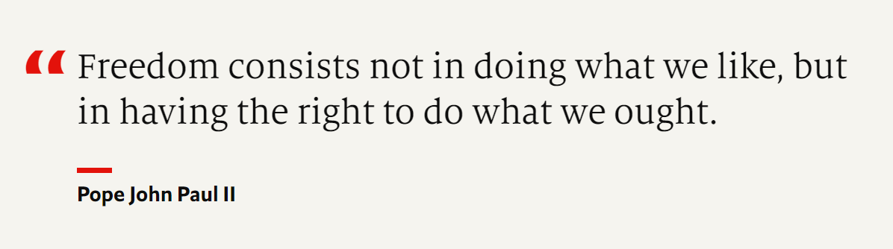

- The world in brief October 8, 2022
- Word of the week:
- How long can Ukraine’s winning streak last?
- Nevada’s nail-biting Senate race
- The New York Philharmonic returns to Lincoln Centre
- The Women’s Rugby World Cup
- Weekend Profile: Ron DeSantis, the man whom even hurricanes cannot batter
- Weekly crossword
- The winners of this week’s quiz
- The world in brief October 22, 2022
- Word of the week:
- Xi Jinping cements control
- Tackling England’s troubled rugby clubs
- Alex Katz at New York’s Guggenheim
- A story finally told in “Descendant”
- Weekend profile: John Fetterman, Pennsylvania’s Democratic Senate nominee
- Weekly crossword
- The winners of this week’s quiz
- The world in brief November 5, 2022
- Word of the week:
- The battle for Pennsylvania
- Campaign season begins in Malaysia
- A rugby tournament returns to Hong Kong
- Contemporary art among the pyramids
- Weekend profile: Kari Lake, Arizona’s Republican candidate for governor
- Weekly crossword
- The winners of this week’s quiz
The Economist Espresso
May 2022
May 18, 2022 Espresso
tie v. 平局
repatriate v.遣返
proceeds n.收入
salvo 一连串的行为
supercharge v.加快
oblige v.强制
momentum 动力
saturated adj.饱和的
third-way 第三通道，非极端
be grist for 对...有益
outfit 联合团体
exquisite 精美的
casting 铸造物
bronze 青铜
relent 放手，终于答应
artifact 工艺品
NFT, non-fungible token 非同质化代币
low gear 低速
ebb 下跌
pick up 增加
hike 大幅增加
tighten belts 节衣缩食
May 31, 2022 Espresso
package 一揽子（设备）
mutiny 叛变
watchdog 监管部门
xx times sth 是...的几倍 18 times the limit under allowed under the now stalled nuclear deal
the Tory 保守党人
lasting 长久的
relief efforts 赈灾工作
speculation 猜测
undisclosed 未被披露的
shopkeeper (BrE) = storekeeper (AmE) 店主
kiosk |ˈki:ɒsk; 美 -ɑ:sk| 售货亭
sane |seɪn| 精神正常的
drag on 延长...的时间
resurgence 经济等的复兴
-induced 由...引起的
leave...doing 让...在某种状态
for now 目前
squeeze n.紧缩 | 可获得的钱、工作岗位等的）减少
ramp up /to make sth increase in amount 使…的数量增加/
hike 大幅增长
deposition 陈述
fateful 至关重要的
fret (BrE) 担心
bake in 变得火热
largely 很大程度上
reassure 打消...担心
beat 超过 beat expectation 超过预期
upkeep 喂养（成本）
bargain for 预料到
wreak havoc |ri:k| |ˈhævək| 造成破坏
domesticated 被驯化的
voracious = greedy 饭量大的, 贪吃的
by far 比...得多●The last of these reasons is by far the most important. 这些理由中最后一条比其他的重要得多。
so much so that... 表示前面所提的严重程度
quadruple 增加到四倍
locust 蝗虫
guzzle 海吃海喝
nature 天性
relinquish 放弃
June 2022
June 1, 2022
onslaught 攻击
fan 激起
oligarch 寡头
underwriter （船只）保险承包商
alongside = along with
stagflation 滞涨
pile
pile sth on(to) 增加...
deity |ˈdi:əti|男神/女神
burial |ˈberiəl| 😁a burial place/mound/site 安葬地；坟头；坟地
sarcophagus |sɑ:rˈkɑ:fəgəs| ◆（尤指古代有雕饰的）石棺
a slate of candidates 候选人名单
take on 与(尤指实力比自己强的人)较量
subsequently adv. 后来
swoop |swu:p| = raid 突击搜查
round up 围捕
luminary |ˈlu:mɪneri| 有影响的人物
boisterous |ˈbɔɪstərəs| 喧闹的
reservation 保留意见；疑惑
Dane [deɪn] 丹麦人
opt-out 不参与协议的决定 ●an opt-out clause 退出的条款
after all （解释或说明理由）别忘了，到底
procurement |prəˈkjʊrmənt| 采购
pea-green 浅绿色的；豆绿的
taupe |toʊp| 褐灰色
climatologist |ˌklaɪməˈtɑ:lədʒist| 气候学家
fallow v. 休耕
landower 地主
lush 茂盛的
perennial |pəˈreniəl| 多年生植物
ditch 放弃
prickly 多刺的
cactus |ˈkæktəs| (pl. cactuses or, cacti |ˈkæktaɪ|) 仙人掌
extract |ˈekstrækt| 摘录
appreciate 理解 ✦What I failed to appreciate was the distance between the two cities. 我没有意识到这两座城市间的距离。
entail v. 带来 ☛Such a decision would entail a huge political risk...
这样的决定势必带来巨大的政治风险。
extradite 引渡
position 立场
spot 排名位置 😉two teams battling for top spot 争夺冠军地位的两个队
fixture (BrE) 体育活动
rusty （体育等）退步，荒废
hold/keep sth/sb at bay 防止...
odds are stacked against... 某方胜利的概率很小
June 2, 2022
precision-guided 精确制导的
oust 推翻，罢免
assure 保证
swath 片
pound 狂轰滥炸
artillery 炮火
nitric acid |ˌnaɪtrɪk ˈeɪsɪd| 硝酸
fallout, bad results 后果
juggernaut |ˈdʒʌgərnɔ:t| 无法控制的强大机构；巨头集团
steer 引导，率领
compact 协议
judiciary 司法机构
only if... 只有在...的情况下才...
row |raʊ| 严重分歧
quash |kwɑ:ʃ| = overturn 撤销 ✦His conviction was later quashed by the Court of Appeal. 后来，上诉法院撤销了对他的有罪判决。
planning 规划
framework 框架
wary = cautious 谨慎的
trade talks 贸易谈判
be underway 已经开始
be in progress 正在进行
endgame 最后阶段
salient |ˈseɪliənt| adj.突出的 n.突出阵地 ✦The soldiers had to remain in a deathtrap salient for most of the rest of the war. 随后的战争中，士兵们大部分时间只能呆在最危险的突出阵地里。
jut |dʒʌt| = protrude v. 突出 ✦A rocky headland jutted into the sea. 嶙峋的岬角突入海中。
get/gain a foothold 有稳固地位
pull back 撤退
portend sth bad/unpleasant v.预示着...
commit ... to 投入...
bridgehead 桥头堡；据点
a far cry from sth 和…相去甚远
advance （军队的）推进
modest increase 小幅提升
grapple with... 努力解决...
frosty （关系）冷淡的
hover 靠近（某事物）；徘徊在...
shell-shocked adj. （因困境而）吓昏了头的，焦虑得无法应对的，感到震惊的
lavish |ˈlævɪʃ| 耗资巨大的
dry up 流失，减少
tier 级
plaque |plæk| 牌匾
subject （尤指君主制国家的）国民 ✦a British subject 英国国民
jubilee 周年庆典 ✦Queen Victoria's jubilee. 维多利亚女王执政50周年庆典
ludicrous |ˈlu:dɪkrəs| 荒唐的 ✦a ludicrous suggestion 荒谬的建议
coveted |ˈkʌvət| 令人渴望的
trifling 值得小看的 trifle |ˈtraɪfl| n.小事
consensus |kənˈsensəs| 共识
sorely adv. 非常
a stream of... 接二连三的...
nerves pl. 精神紧张
obscure 鲜为人知的
final 决赛
hiatus |haɪˈeɪtəs| 间断
spelling bee 拼字比赛
Asiatic |ˌeɪʃiˈætɪk| (technical 术语) 亚洲的 ▶the Asiatic tropics 亚洲热带
genus |ˈdʒi:nəs| (pl. genera |ˈdʒenərə|)（动植物的）属
pirouette |ˌpɪruˈet| （尤指芭蕾舞中的）单脚尖旋转
bee （集工作、竞赛、娱乐为一体的）聚会
knack |næk| 天生的或学会的）技能，本领
sheen |ʃi:n| n. 光彩
back out 退出 ☞He lost confidence and backed out of the deal at the last minute. 他失去了信心，在最后一刻退出了协议。
contestant |kənˈtestənt| 竞赛选手
roll n.名单
freckle |ˈfrekl| n. 雀斑 ✦a freckled face/schoolgirl 有雀斑的脸 / 女学生
logophile [ˈlɒɡə(ʊ)fʌɪl] s= a lover of words
one-of-a-kind 独一无二的 ✦a small one-of-a-kind publishing house. 一家独树一帜的小出版公司
June 3, 2022
add fuel to the fire 火上浇油
forge v. 达成，建立
render 使...变得
remote 微小的 ☛I don't have the remotest idea what you're talking about. 你在说什么我一点都不懂。
yacht |jɑ:t| 游艇
interest 利益关系
brokerage [ˈbrəʊk(ə)rɪdʒ] 经纪公司
cellist |ˈtʃelɪst| 大提琴手
forthcoming 即将发生的
the Orthodox Church = Eastern Orthodox Church 东正教会；正教
rapprochement /ˌræprəʊʃˈmɑːn/ 和解；恢复友好关系
courageous |kəˈreɪdʒəs| 勇敢的
truce = ceasefire 停火
wrap up 完成，圆满结束
strike a deal 达成协议
soldier on v. 坚持...
lesser adj. 次要的
scramble v. 争相做...
forgive 免除（债务）
fold v.倒闭
chunk n. 部分
fugde|fʌdʒ| v. 含糊其辞；回避
deceptive |dɪˈseptɪv| 欺骗性的
perversely 没有道理地讲
spur 激起，促进
window 短暂的时机
galvanize sb. into ... 激起...
on/off the boil (BrE) 如火如荼/不如以前
decelerate v. (通货膨胀、经济增长等的速度)放缓
hefty 高额的
do the trick 奏效
have hands tied 身不由己
earmark |ˈɪrmɑ:rk| 指定用途
hinder v. 阻止
tacit |ˈtæsɪt| 心照不宣的，默许
buzzy 时尚的
furious 高速的
foreshadow |fɔ:rˈʃædoʊ| 预示；是…的预兆
-ish 有…性质的
chronicle v.按时间顺序记载...
cynicism |ˈsɪnɪsɪzəm| 悲观；怀疑
benediction |ˌbenɪˈdɪkʃn| （基督教的）祝福，祝祷
prescient |ˈpresiənt| 先觉的
pointlessness 无益；无意义；无目的
opposite 与…合演 ▶She starred opposite Tom Hanks. 她与汤姆·汉克斯联袂主演。
June 4, 2022
genocide 大屠杀
indictment 起诉
sidestep v.规避
hedge-fund 对冲基金
concede 承认（选举失败）
lieutenant governor （美国）副州长
notable 显著的
leisure 休闲
dear (BrE) v.昂贵的
predicament n.困境
perentage point = percent
overpass = (BrE) flyover 天桥
roadkill 汽车在路上撞死动物
roam 漫游
alike 十分相似
shudder |ˈʃʌdə(r)| 剧烈震动
bruising 艰辛的；激烈的
cushion |ˈkʊʃn| v.缓冲
insulation |ˌɪnsəˈleɪʃn| 绝缘
tepid 不温不热的
red-hot 热门的，热点的
cool off 变得冷淡
techie 电脑迷
contend with 对付困境，处理棘手问题
slide v.降低
looming 逼近，迫在眉睫
sizzling = very hot 酷热的
hiring freeze 停止招人
commotion n.混乱
redundancy (BrE) 裁员
confine to 局限于
prized 宝贵的，珍贵的
seek out 找到，寻求
downturn 经济低迷期
elevated 重要的，地位高的
plucky = brave 勇敢的
cede to 让位于
scheming 狡诈的
spawn v. 引起
spin doctor 舆论导向员（具有一定社会地位）
pit...against 让...经受考量
portrait 详细描写
exemplify = illustrate 例证 ✦example
prosecutor 检察官
district attorney (abbr. DA) （美国）地方检察官
vault v. 跳过
rein in 严格管控
encampment （尤指临时居住的）营房
leftist 左派的
getaway 逃犯
intimate 密切的
autocratic 独裁的
public defender 公设辩护律师
miscreant |ˈmɪskriənt| 不法之徒
burglary 入室盗窃
robbery 抢劫
irk |ɜ:rk| 使生气，激怒
clemency |ˈklemənsi|（对受惩罚的人表现出的）仁慈，宽恕
pardon 赦免
cruciverbalist [,krusi'və:bəlist] 纵横填字游戏高手
cryptic 含义隐晦的；晦涩难懂的 ✦a cryptic crossword clue 扑朔迷离的纵横字谜线索
victor 胜利者
baffle 使迷惑
tread 踩着
June 6, 2022
July 5, 2022
rooftop 屋顶 /ˈrʊftɑp/
outrage 暴行；骇人听闻的事 /ˈaʊtreɪdʒ/
July 2022
July 6, 2022
disarray
/ˌdɪsəˈreɪ/
混乱
●Our plans were thrown into disarray by her arrival. 我们的计划因她的到来而陷入一片混乱。
drunken 因醉酒引起的
slide(slid, slid) v.下跌
inversion 倒置
war footing 基础
●The country has been on a war footing (= prepared for war) since March. 自三月份起这个国家就准备要打仗。
reading 议案宣读（法案在成为法律前须经议会讨论通过的步骤）
set aside 留出（钱或时间）
●She tries to set aside some money every month. 她每个月都尽量存点钱。
July 9, 2022
agree on
underrepresent
board 董事会
acquisition /ˌækwəˈzɪʃn/ 收购
merger (两家公司的）合并
handmade 自制的
parliamentary /ˌpɑrləˈmɛntəri/
outpouring 大量涌现
tribute 悼念
geopolitics 地缘政治
throw your hat into the ring 正式宣布参加竞选（或比赛等）
thus = in this way 这样，以此方式
●The universities have expanded, thus allowing many more people the chance of higher education. 大学扩招了，这样就使更多人能有机会接受高等教育。
purse strings 资金的支配；财权
●The bank has been too slow in loosening the purse strings.
银行一直迟迟不愿放开资金。
self-imposed 自己强加的;自愿承担的;自己规定的
He returned home in the summer of 1974 after eleven years of self-imposed exile...
经历了 11 年的自我流放后，他于1974 年夏回归故里。
protracted 持久的
protracted delays/disputes/negotiations 持久的延误 / 争论 / 谈判
=prolonged
contraception 避孕
badly 严重地
badly damaged/injured/hurt 损坏 / 伤势 / 伤害严重
pent-up (of feelings, energy, etc. 感情、精力等) 压抑的；积压的
pent-up frustration/energy 压抑的挫折感 / 精力
stump speech （政治家在选举前的）巡回演说
The senator gave his standard stump speech. 那位参议员进行了一次例行的竞选巡回演说。
The National Diet (Japanese: 国会, Hepburn: Kokkai) is Japan's legislature.
bicameral 两院制的（如美国的参议院和众议院，英国的下议院和上议院）
succumb 屈服于
dissipate /ˈdɪsəˌpeɪt/ 消失
fell felled v.击倒
例外论（英语：Exceptionalism），又称例外主义、特殊主义，一种理论与意识形态，凡是认为某个国家、地区、社会、民族、组织、社会运动或历史时期，具备特殊的性质，以致于无法被一般性的理论或规则所解释，就可称为例外论。在各国社会中，这是一个常见的论点，在美国有美国例外论，在中国也有类似思想，称为中国例外主义、香港例外主义。
rip into/through sb/sth （快速而猛烈地）钻入，穿透
mutual fund (North Amercian English) = unit trust 单位信托投资公司（代客户进行不同组合的投资）
bar 除…外 except for sb/sth
●The students all attended, bar two who were ill. 除了两名生病，所有的学生都到了。
hold/keep sb/sth at bay 不让（敌人）接近；防止（问题恶化）= ward off
●I'm trying to keep my creditors at bay. 我在竭力避开债主。
cripple 严重损害
slay 杀死
ominous /ˈɑmənəs/ 不吉利的
auspicous /ɔˈspɪʃəs/ 吉利的
techno- (in nouns, adjectives and adverbs 构成名词、形容词和副词) connected with technology 科技的；技术的；工艺的
techno-music 电子音乐
blare 发出（响亮而刺耳的声音）
●Music blared out from the open window. 喧闹的音乐从敞开的窗口传出。
rave /reɪv/ v.咆哮；怒吼
raver BrE参加狂欢聚会的人
call off 取消
●to call off a deal/trip/strike 取消交易╱旅行╱罢工
reincarnate /ˌriɪnˈkɑrneɪt/ 使投胎；转世；使再生
deck （唱机的）转盘装置；（音响系统的）走带机构，录音座
●a cassette/tape deck 盒式录音带 / 磁带转动机械装置
conjure （魔幻般）取得了
●They managed to conjure a victory.
他们出人意料地取得了胜利。
warrant v. 保证
●All entrants must warrant that their entry is entirely their own work... 所有参赛者必须保证其参赛作品完全是自己创作的。
thunderous 雷鸣般的；声音很大的
●thunderous applause 雷鸣般的掌声
self-parody n.自我嘲弄
●By the end of his life, Presley's vocals often descended close to self-parody.
在人生的最后阶段，猫王普雷斯利的歌曲大不如前，通常近乎于自我嘲弄。
interstellar adj.星际的
stellar 星球的
●A stellar wind streams outward from the star.
从那颗恒星上不断吹出恒星风。
romp 妙趣横生的历险故事书籍（或戏剧、电影）
jokey /ˈdʒoʊki/ 逗乐的；可笑的；滑稽的
irreverance 不敬的；不恭的
●Taylor combined great knowledge with an irreverent attitude to history. 泰勒知识渊博，而且并不把历史太当回事。
●an irreverent attitude to tradition 不把传统放在眼里的态度
hone 锻炼
●His body was honed to perfection. 他的身体锻炼得十全十美。
be meant to be sth 被普遍认为是
●This restaurant is meant to be excellent. 都说这家饭店很棒。
quip 俏皮话;谐语;妙语
●The commentators make endless quips about the female players' appearance.
评论员们没完没了地拿女选手的容貌打趣。
situation comedy = sitcom 情景喜剧
cinematic /ˌsɪnəˈmæt̮ɪk/ 电影的；电影制作的
●cinematic effects/techniques 电影制作效果 / 技术
plenty 大量
eccentric 怪的；异乎寻常的
●eccentric behaviour/clothes 古怪的行为；奇装异服
riches 财富；财产
●a career that brought him fame and riches 使他名利双收的事业
riches brokering 财富代理
scoop up (敏捷地)抱起，拿起，捡起
●Use both hands to scoop up the leaves... 用双手捧起叶子。
offload 把（担子等）转移（给别人）；减轻（负担）；卸（包袱）
They should stop offloading waste from oil tankers into the sea. 他们应当停止从油轮上往海里倾倒废弃物。
secret adj.
downfall 衰落；衰败；垮台；衰落（或衰败、垮台）的原因
●The sex scandal finally led to his downfall. 这桩绯闻最终使他身败名裂。
proceeding 诉讼；诉讼程序
●bankruptcy/divorce/extradition, etc. proceedings 破产、离婚、引渡等诉讼
bloodshed （战斗或战争中的）人员伤亡，流血事件
●The two sides called a truce to avoid further bloodshed. 双方宣布休战，以免更多的流血。
broker v. 安排，协商（协议的细节，尤指在两国间）
●The United Nations brokered a peace in Mogadishu at the end of March. 3月末，联合国出面在摩加迪沙进行了和平调解。
brother-in-law 姐（或妹）夫
agent = secret agent 特务
●an enemy agent 敌方特务
whisk 匆匆带走；迅速送走
●Jamie whisked her off to Paris for the weekend. 杰米匆匆把她带到巴黎去度周末。
bailout 紧急财政援助
crumbling adj. 衰败的
●a crumbling business/relationship 逐渐衰败的企业；日益恶化的关系
dirt 丑闻；流言飞语
●Do you have any dirt on the new guy? 你知道新来的那个人的丑闻吗？
dilettante /ˈdɪləˌtɑnt/ 浅薄的涉猎者；浅尝辄止者；半吊子；半瓶醋
●a dilettante artist 粗通艺术的人
July 11, 2022
lengthen /ˈlɛŋθən/ 变长
short /ʃɔrt/
coterie /ˈkoʊt̮əri/ （志趣相同、合伙做事而排外的）小圈子，小集团
chancellor （英）财政大臣
exit poll 投票后民意调查
Kishida Fumio 岸田文雄
set （网球、排球比赛等的）盘，局
●She won in straight sets (= without losing a set) . 她一盘未失，连连得胜。
final 决赛
●She reached the final of the 100m hurdles. 她取得了100米跨栏的决赛权。
title 竞赛、体育比赛的）冠军
●the world heavyweight title 重量级世界拳击冠军
tavern 酒馆；小旅店；客栈
rifle 步枪；来复枪 a gun with a long barrel which you hold to your shoulder to fire
pistol 手枪
reserve forces 后备军
October 2022
October 7, 2022
The world in brief October 7, 2022
Catch up quickly on the global stories that matter
Updated 7 hours ago (21:33 GMT+1 / 04:33 Hong Kong)

Ukraine’s continued counter-offensive in both the east and south has prompted rare public criticisms of senior Russian officials. Kirill Stremousov, the Russian-appointed deputy governor of the annexed province of Kherson, has lashed out at Russia’s “incompetent military leaders” in a video message. Meanwhile, a Russian missile strike on a residential building killed at least three people in Zaporizhia, a Ukrainian-held city.
The EU and Norway agreed to “jointly develop tools” to normalise the energy market and reduce prices. Norway is now the EU’s largest external gas supplier as the bloc reduces its reliance on Russian energy following the invasion of Ukraine. Meanwhile Britain’s national grid will ask households to lower their energy use, warning of potential blackouts this winter.
Annie Ernaux, a French author known for her intensely personal works, won the Nobel prize for literature. The Swedish Academy cited her “courage and clinical acuity with which she uncovers the roots, estrangements and collective restraints of personal memory”.
America said it would redirect inbound travellers from Uganda to five designated airports for Ebola screening starting on Friday. In the past two weeks Uganda has recorded more than 60 confirmed or probable cases of the disease and 29 deaths. Its Ebola outbreak is caused by a strain of the virus for which there is no licensed vaccine—the existing vaccine targets a separate strain.
President Joe Biden pardoned all Americans convicted of simple marijuana possession under federal law, a move affecting more than 6,500 people that fulfils a campaign pledge. He also ordered a review of whether marijuana should remain, for sentencing purposes, in the same class of drugs as heroin and LSD. Recreational marijuana use is legal in 19 states and Washington, DC.
A former police officer killed at least 38 people, including 22 children, in a gun attack at a day-care centre in north-east Thailand, according to police. Reports suggest the gunman, who was armed with a shotgun, pistol and knife, killed himself and his family after the attack. Thailand’s prime minister, Prayut Chan-ocha, called the attack “horrifying”.
Porsche overtook its former parent company, Volkswagen, to become Europe’s most valuable carmaker a week after its initial public offering. Shares in Porsche rose to €93 ($91), giving it a valuation of €85bn compared with Volkswagen’s €78bn, after the banks involved in the company’s IPO bought nearly 3.8m shares.
Fact of the day:
49.7%, the proportion of German companies that cannot secure enough skilled workers, up from 30% in 2019.
Europe’s property slowdown

PHOTO: GETTY IMAGES
House prices across Britain and the EU have spiralled since the start of the pandemic. But not for much longer, according to two separate indices to be published on Friday by Halifax, a British lender, and Eurostat, the EU’s statistics agency. Higher mortgage rates and a cost-of-living squeeze are dampening buyer enthusiasm. From July to August, according to Halifax, the price of an average British house rose by 0.4%, to a record £294,260 ($342,000). But that increase was slower than the monthly average of 0.9% over the past year.
A meltdown akin to America’s subprime crisis when prices fell by a third looks unlikely: a chronic shortage of homes has seen prices across the EU soar by 45% since 2010. Tight labour markets, which improve household finances, mean that homes are still being snapped up. But as the market cools, a reversal could be around the corner.

Will Ohio’s abortion ban survive?

PHOTO: REUTERS
The overturning of Roe v Wade in June has opened up a battleground in the Buckeye state. The removal of federal protections opened the way for Ohio’s “trigger ban”, introduced in 2019, to come into force. It prohibited almost all abortions after six weeks. But in mid-September a judge in Hamilton County temporarily suspended the law, on the grounds that Ohio’s constitution guarantees a “fundamental right to privacy, procreation, bodily integrity and freedom of choice”. His ruling, which lasts until October 12th, was a victory for pro-choice campaigners.
On Friday the court will hold another hearing on the injunction. And specific abortion cases are percolating through the courts. In June a ten-year-old was forced to travel to Indiana from Ohio for an abortion after being raped. Indiana’s Republican attorney-general threatened to prosecute the doctor who performed the abortion, claiming, incorrectly, that she had not filed the correct paperwork; she is now suing him for defamation. The battles over abortion show no sign of losing steam.
Rumbles over independence in Catalonia

PHOTO: EPA
On Friday one of Catalonia’s two governing parties, Junts per Catalunya, will announce the result of an internal vote on whether to leave the government. Both Junts and its coalition partner, Esquerra Republicana (ERC), support Catalonian independence. Both backed the illegal independence referendum of October 2017, which prompted the national government in Madrid to suspend the region’s self-rule. After a bare majority of voters chose pro-independence parties in last year’s regional elections, many separatist politicians took the result as a mandate to press on.
But the partners are divided on speed. The smaller, more conservative Junts are impatient, while the larger ERC has banked on winning concessions from Madrid through a formal dialogue that began last year. A crackup of the coalition risks putting the independence question on ice. ERC will need votes from more mainstream parties to govern; those groups will want to prioritise the economy. Despite their differences, neither party wants new elections.
Little Lesotho makes a big decision

PHOTO: REUTERS
The general election in Lesotho on Friday will be one of the least-watched votes in the world this year. The neglect is understandable: Lesotho is a poor and tiny country of just 2.2m people, entirely encircled by South Africa. Yet a new government could jolt the former British protectorate to turn the page on a tumultuous recent history.
Since independence in 1966 Lesotho has seen coups, attempted coups, prime ministers fleeing the country, assassinations of military bosses, unstable coalition governments and, most recently, a former prime minister accused of conspiring with his third wife to murder his second. (The charges were dropped in July.) Corruption and crime are rampant. Politics is about access to spoils, not the pursuit of the greater good.
The next government will probably be another coalition involving ideologically indistinguishable parties. As pressure from donors and civil society mounts, its priority should be to pass constitutional reforms. That is, if it is not too busy at the trough to bother.
The Beatles and Bond, 60 years on

PHOTO: ALLSTAR
Sixty years ago this week the Beatles released their debut single, “Love Me Do”, and the first James Bond film, “Dr No”, premiered at the London Pavilion. Neither was an instant hit. Liverpool’s finest failed to make Britain’s top ten, whilst Sean Connery’s Bond was roasted by the critics, one calling him “a great big hairy marshmallow”. Things worked out in the end, of course; the 25 official Bond films have made more than $7bn at the box office, and the Beatles retain most of the world records for shifting pop music.
John Higgs explores the seismic, and intertwining, cultural impact of the Beatles and Bond in his new book, “Love and Let Die”. Both heralded a vivid, technicolour break with the buttoned-up wartime generation. Yet, as Mr Higgs writes, alongside the jetset modernity, the Bond films cleaved to attitudes on women and class that were already reactionary, and the Beatles won acclaim with the “faux Victoriana” of “Sgt. Pepper”. Little wonder they were so popular in Britain.
Daily quiz

Our baristas will serve you a new question each day this week. On Friday your challenge is to give us all five answers and, as important, tell us the connecting theme. Email your responses (and include mention of your home city and country) by 1700 BST on Friday to QuizEspresso@economist.com. We’ll pick randomly from those with the right answers and crown one winner per continent on Saturday.
Friday: Which demon is also known as the “lord of the flies”?
Thursday: Which astronomer was the first to discover Jupiter’s moons?
The winners of last week’s crossword

Thank you to everyone who took part in our new weekly crossword, published in the weekend edition of Espresso. The winners, chosen at random from each continent, were:
Asia: Sean Stewart, Delhi, India
North America: Dave Hill, Portland, United States
Central and South America: Sebastian Agudelo-Restrepo, Santo Domingo, Dominican Republic
Europe: Leonid Chindelevitch, Nailsea, United Kingdom
Africa: Hasit Raja, Nairobi, Kenya
Oceania: Roseanne Hansen, Brisbane, Australia
They all gave the correct answers of Keir Starmer, Korean, taxes and regime. Check back tomorrow for this week’s crossword.
Resentment and anger are bad for your blood pressure and your digestion.
Desmond Tutu
October 8, 2022
The world in brief October 8, 2022
Catch up quickly on the global stories that matter
Updated 5 hours ago (23:07 GMT+1 / 06:07 Hong Kong)

Russia increased attacks on Zaporizhia, a city in southern Ukraine, where at least 12 civilians died over the last two days. Ukrainian officials suggest that Russia employed Iranian-supplied drones alongside ongoing missile attacks. Amid growing criticism of Russia’s military leadership, the commander of its eastern military district, Alexander Chaiko, has been fired according to RBC, a Russian news outlet. Ukraine has recently made significant advances on both the eastern and southern fronts.
This year’s Nobel peace prize was awarded to one individual and two organisations fighting authoritarianism in the post-Soviet region. The prize was shared between Ales Bialiatski, a Belarusian pro-democracy activist, Memorial, one of Russia’s oldest human rights organisations, long hounded by the Kremlin, and the Centre for Civil Liberties, a Ukrainian human rights group that has documented war crimes since Russia’s invasion.
A rout in American shares on Friday erased most of the gains of an early-week rally, though markets still ended the week higher. Among the poor performers was Advanced Micro Devices: its share price tumbled by nearly 14% after the chipmaker cut its forecast for third-quarter revenues by more than $1bn. Levi Strauss shed more than 11% in value after the retailer reported lower-than-expected earnings.
America’s labour market slowed slightly in September as aggressive rate rises targeting high inflation have cooled the economy. Official data recorded 263,000 new jobs, which was fewer than the 315,000 positions added in August, but better than expected. That resilience may invite further tightening from the Fed at its next meeting on November 2nd.
A UN agency said its 193 members agreed to eliminate greenhouse-gas emissions in the civil-aviation sector by 2050. China, which is set to overtake America as the biggest aviation market this decade, expressed doubt over reaching the goal. European countries that had sought a more ambitious target called the non-binding deal a “compromise”.
America’s commerce department imposed new limits on the export of advanced computer chips to China. Firms will need to acquire a licence to export the chips, which America said China was using to advance its army’s technological prowess and “commit human rights abuses”. China called the move “sci-tech hegemony”.
Credit Suisse said it would buy back up to $3bn of its own debt in a bid to reassure investors amid persistent concerns about its liquidity. Before the announcement shares in the Swiss bank had fallen 55% this year, while credit default swaps, an insurance-like derivative, had risen. But the latest move helped calm markets: shares in the bank rose 3% in early trading.
Word of the week:
masuku bijin, a Japanese phrase to describe someone who looks beautiful in a face mask.
How long can Ukraine’s winning streak last?

PHOTO: EPA
Ukraine’s blistering counter-offensive has, in recent weeks, left Russian forces in disarray, particularly in the Kharkiv region in the east and Kherson in the south. But the current wave of liberation will probably soon reach its peak.
This month Ukrainian soldiers in Kherson pushed Russian fighters along the Dnieper river, 30km from the previous front line. And they have continued to make substantial gains in the north of the region. Ukraine’s troops are honing in on parts of northern Luhansk, the only one of the four annexed regions where Russia enjoys anything close to complete control. They hope to push the Russians back to their positions from before the full-scale invasion.
But the window of opportunity may prove short. Russian forces will soon be bolstered by thousands of recently mobilised troops. Though poorly trained, they will supplement Mr Putin’s fight. And the onset of wintery conditions may soon chill the advance.

Nevada’s nail-biting Senate race

PHOTO: AP
One indication of a tight election is whether party bigwigs hit the campaign trail. Nevada has become a runway for wannabe Republican presidential candidates. Donald Trump will head to the state on Saturday to stump for Adam Laxalt and Joe Lombardo, the Republican hopefuls for Senate and governor. Ron DeSantis, the governor of Florida, and various members of Mr Trump’s former cabinet, have also visited the Silver State.
The Economist’s midterms model suggests Nevada’s Senate race is a toss-up, making it a crucial battleground for control of Congress’s upper chamber. The contest will test whether Catherine Cortez Masto, the Democratic incumbent, can woo Latino voters who abandoned her party between 2016 and 2020. Democrats may also discover whether their political machine can endure despite the death of its architect and former Senate majority leader, Harry Reid. Reid’s machine turned Nevada light blue. Come November it may have a different hue.
The New York Philharmonic returns to Lincoln Centre

PHOTO: GETTY IMAGES
In the late 1950s a working-class black and Hispanic neighbourhood in Manhattan was razed to make way for Lincoln Centre for the Performing Arts. This unsavoury legacy will be addressed when David Geffen Hall—the New York Philharmonic’s home at Lincoln Centre—re-opens on Saturday after a two-year, $550m renovation.
“San Juan Hill: A New York Story”, an orchestral piece by Etienne Charles, a jazz trumpeter, honours the rich culture of the destroyed neighbourhood, whose residents included Thelonious Monk, a jazz pianist. The upcoming season features music by several living composers, including Cuban-born Tania León and Marcos Balter, a Brazilian.
The hall—long criticised for its subpar acoustics and dreary décor—has been redesigned with amenities that include a giant screen in the lobby to simulcast concerts. These musical and architectural gestures are an attempt to atone for past transgressions and attract the younger and more diverse audience needed to secure the Philharmonic’s future.
The Women’s Rugby World Cup

PHOTO: EPA
According to bookmakers, there is little doubt which team will win the Women’s Rugby World Cup, which begins on Saturday in Auckland, New Zealand. Betting $100 on England will win you only $50 if they prevail, such is the recent dominance of the Red Roses. England enter the tournament on an unprecedented 25-match winning streak.
The last two times the team played New Zealand, who are five-time World Cup winners and current holders, England won 43-12 and 56-15. Canada and France, who have been knocked out at the semi-final stage on six occasions, are the other teams with some hope of glory. But it would be a big surprise if the final, on November 12th, were anything other than a repeat of the 2017 event. Five years ago, New Zealand staged a storming second-half comeback, to win 41-32. This time around, England are odds-on to exact their revenge.
Weekend Profile: Ron DeSantis, the man whom even hurricanes cannot batter

PHOTO: GETTY IMAGES
As an undergraduate at Yale, Ron DeSantis captained the baseball team. Now Florida’s Republican governor has his mind on home runs of the political sort. Hurricane Ian, which hit his state on September 28th, has left more than 115 Floridians dead and caused up to $57bn in insured losses. That may make it the second-costliest hurricane to strike America, after Hurricane Katrina in 2005. But for Mr DeSantis the storm’s wreckage has brought political opportunity, and a chance to demonstrate managerial know-how.
On Wednesday he appeared alongside Joe Biden, whom he often criticises, as the president surveyed the damage. This time it was all comity. Mr DeSantis thanked him for providing federal aid; Mr Biden said that they had worked “hand in glove”.
Disaster management has revealed a fresh side to the governor. Until recently he seemed more interested in lobbing bombs in America’s culture wars. In April, after Disney criticised a state ban on the discussion of sexuality and gender orientation among young children in public-school classrooms, Mr DeSantis hit back. He hastily signed a law revoking Disney’s “special-district” status, which for decades had allowed the media giant to operate much like a county government at its complex in central Florida. Hammering Democrats for their perceived weakness on border security is another preoccupation. In September Mr DeSantis chartered private planes with state funds to send Venezuelan migrants in San Antonio, Texas, to Martha’s Vineyard, in Massachusetts, an enclave for the wealthy liberals Mr DeSantis loves to taunt.
Those stunts—along with his aversion to lockdowns during the pandemic—have endeared the governor to conservatives. Mr DeSantis is now viewed as a potential rival to Donald Trump, a fellow Florida resident, for the Republican nomination for the presidential election in 2024. He has fashioned himself in a similar vein, emphasising issues such as election “integrity” and border security, but carries none of the former president’s baggage.
Ironically it was Mr Trump’s surprise endorsement that helped Mr DeSantis take the governor’s mansion in 2018. That race was close enough to prompt a recount. In November he is expected to breeze to re-election—he commands an 11-point lead over his opponent, Charlie Crist. Now Mr DeSantis is focused on raising his national profile. Hurricane Ian has let him do just that.
Weekly crossword

Our crossword is designed for experienced cruciverbalists and newcomers alike. Both sets of clues give the same answers, all of which feature in articles in this week’s edition of The Economist:
Email all four answers by 9am BST on Monday to crossword@economist.com, along with your home city and country. We will pick randomly from those with the right answers and crown the winners in next week’s edition.
Cryptic clues
1 down City has a luau: topless duo go-go dancing! (11)
1 across Some iron linen virtually (6)
2 across European coach disheartened after odd doubts (5)
3 across Square, like crosswords nowadays (6)
Factual clues
1 down Troops are on the streets here for the second time this year (11)
1 across Where Cambodian syndicates carry out fraud worth $12bn a year? (6)
2 across Brother Andrew’s nationality (5)
3 across What an Iranian protest song declares clerical rule to be? (6)

The winners of this week’s quiz

Thank you to everyone who took part in this week’s quiz. The winners, chosen at random from each continent, were:
Asia: Yumi Arima, Tokyo, Japan
North America: Katie King, Vancouver, Canada
Central and South America: Alvaro Tomas, Panama City, Panama
Europe: Roar Medici, Koege, Denmark
Africa: Wael Abdel Wahab, Cairo, Egypt
Oceania: Jennifer Bladon-Clark, Melbourne, Australia
They all gave the correct answers of Lightning rod, Marriage of Figaro, Mamma Mia, Galileo and Beezlebub. The theme is that these words all appear in the lyrics of Bohemian Rhapsody, the Queen song.
Those who adhere to the past won’t be able to cope with the future.
Willy Brandt
October 10, 2022
The world in brief October 10, 2022
Catch up quickly on the global stories that matter
Updated 4 hours ago (21:00 GMT+1 / 04:00 Hong Kong)

At least 12 people were killed, and dozens hospitalized, as a result of a shelling attack in Zaporizhia, according to Ukrainian officials. The city in south-east Ukraine, which is around 52km from a Russian-held nuclear power plant, was hit by 12 Russian missiles overnight, said Oleksandr Starukh, the governor of the region.
🎨shelling 炮击 /ˈʃɛlɪŋ/
Russia’s foreign ministry claimed traffic had resumed on the only bridge linking the occupied Crimean peninsula to Russia, hours after it was hit by an explosion. The bridge is a crucial supply line for Russian forces in southern Ukraine. Meanwhile Russia appointed Sergei Surovikin, a general with a reputation for ruthlessness, as its battlefield commander in Ukraine.
🎨peninsula 半岛 /pəˈnɪnsjələ/
an area of land that is almost surrounded by water but is joined to a larger piece of land
●the Iberian peninsula (= Spain and Portugal) 伊比利亚半岛
The Kremlin praised OPEC+, a group of petroleum-exporting countries and their allies, which includes Russia, for agreeing to oil production cuts. Joe Biden, America’s president, had pushed to prevent the cuts as he faces rising fuel prices ahead of America’s midterm elections. Dmitry Peskov, the Kremlin’s spokesman, described the decision as “balanced” while Janet Yellen, America’s Treasury secretary, called it “unhelpful.”
push
Alexander Van der Bellen, Austria’s president, won a second term, defeating the populist opposition by a wider margin than in 2016. With 65% of the votes counted, Mr Van der Bellen had 55.4% of ballots, while Walter Rosenkranz of the Freedom Party, a far-right group, had 18.4%.
The party of Germany’s chancellor won the most votes in regional elections in the north-western state of Lower Saxony, according to early results. The Social Democrats (SPD) took 33% of the vote. But the liberal Free Democrats, who govern in coalition with the SPD at the federal level, appeared to have barely passed the 5% threshold to enter parliament. The hard-right Alternative for Germany doubled its vote share, to nearly 12%.
Nicola Sturgeon, Scotland’s first minister, said she was “confident” that a Scottish independence referendum could be held next year, despite the British government’s refusal to approve such a vote. On Tuesday Britain’s top court will hear a case about whether or not a plebiscite can go ahead. Scots rejected independence in 2014.
Iran’s state-run broadcaster appeared to be hacked when a news bulletin was interrupted by a protest against the country’s Supreme Leader. The broadcast was replaced with an image of Ayatollah Ali Khamenei surrounded in flames. Despite a violent crackdown, protesters continue to rally across the country over the death of a 22-year old woman, Mahsa Amini, in police custody, in September.
Fact of the day:
26%, the share of Lesotho’s population who say they’re satisfied with the country’s democracy, half the regional average.
Taiwan’s National Day

PHOTO: REUTERS
Monday is National Day in Taiwan. This year’s slogan is “defending our land together”: a fitting theme given persistently high tensions in the Taiwan Strait. In August Nancy Pelosi, the speaker of America’s House of Representatives, visited the self-governing island and called her country’s support for Taiwan “ironclad”. China responded with military exercises to show its ability to blockade the island, which China regards as part of its territory.
Tsai Ing-wen, Taiwan’s president, wants to signal that Taiwan is uncowed by Chinese threats. Her government has continued to welcome delegations from America, Canada, Germany, Japan and other friendly countries. It has also increased defense spending and is mulling extensions to conscription. But opinion polls indicate low confidence in Taiwan’s ability to fend off a Chinese invasion. Non-governmental groups offer to train people in civil defence, but their reach is small. National Day is a chance to bolster public resolve.
Making Russia a pariah

PHOTO: REUTERS
The diplomatic battle over Ukraine moves to the UN General Assembly on Monday when delegates debate a Western resolution condemning Russia’s annexation of four Ukrainian provinces and demanding its full withdrawal from occupied lands. Russia vetoed a similar move in the Security Council last month. It cannot do so in the General Assembly, but the body’s resolutions are not binding. Instead the vote—which may take place on Wednesday—is intended to isolate the Kremlin.
Repeatedly humiliated at the UN, Russia wants a secret vote. But the West is nervous, too. It secured a 141-5 vote against Russia in March, but many countries are weary of the war.
This week most attention will be on the fence-sitters, among them many poor states and the likes of Brazil, China, Gabon and India, which abstained in the Security Council. Getting fewer than 100 yes votes—the number that condemned Russia’s annexation of Crimea in 2014— would be a blow to Ukraine.
Overflowing in-trays at the IMF and the World Bank

PHOTO: GETTY IMAGES
Policymakers from around the world gather in Washington on Monday for a week of annual meetings of the International Monetary Fund and the World Bank, amid sharply deteriorating conditions for the global economy.
Russia’s war in Ukraine has dashed the cautious optimism expressed last year. The energy crisis and soaring inflation will occupy participants. New IMF forecasts are likely to project that economies accounting for at least one-third of global output will soon be in recession. Kristalina Georgieva, the IMF’s managing director, has warned that geopolitical and financial-sector risks mean that conditions are more likely to worsen than improve.
Officials will look for opportunities to co-operate on inflation-fighting and debt relief, in hopes of reducing the pain felt by the most vulnerable. Given the harsh reality of war, there is only so much they can do.
Will J.D. Vance advance?

PHOTO: AP
Ohio hosts its first debate between two candidates for the Senate, the Republican J.D. Vance and his Democratic opponent, Tim Ryan, on Monday. The Buckeye state is a fairly safe Republican stronghold. But Mr Vance, a venture capitalist who came to prominence after writing “Hillbilly Elegy”, a best-selling book about the culture of Appalachians, has struggled. He and Mr Ryan are in a dead heat; the Democratic candidate has raised enormous sums from small donors.
Mr Vance’s campaign has sounded almost apocalyptic at times, focusing on the threats supposedly posed to Ohio from illegal-immigrant drug pushers and their Democrat enablers. Donald Trump has stumped with him, as has Mr Trump’s son, Don Junior. Many Republican candidates across the country are chasing the former president’s supporters. The reaction to Monday’s debate will indicate whether the double Trump endorsement can push Mr Vance over the line.
A new pipeline to help Germany this winter

PHOTO: GETTY IMAGES
As winter approaches, all eyes in Europe are on the continent’s gas supplies and whether anything can be done to ease dependence on Russia. Storage facilities are almost full. But Germany lacks enough import capacity to meet demand through shipped liquified natural gas. On Monday a retrofitted pipeline from France will open, providing relief of around 4000 GWh per month—around 3% of Germany’s demand in a typical winter month.
Whether that’s enough depends on the weather and on Germans’ willingness to put on an extra jumper. The country’s gas network regulator has called once more on households to cut back in order to avoid gas rationing. Germany’s eastern and southern neighbours, including Ukraine, will depend on supplies from the West, too. A new floating terminal in the Netherlands has started receiving deliveries to fill pipelines going east. But gas will remain scarce in central and eastern Europe. Hope for a mild and rainy Christmas.
Daily quiz
Our baristas will serve you a new question each day this week. On Friday your challenge is to give us all five answers and, as important, tell us the connecting theme. Email your responses (and include mention of your home city and country) by 1700 BST on Friday to QuizEspresso@economist.com. We’ll pick randomly from those with the right answers and crown one winner per continent on Saturday.
Monday: Who was the successor to Moses as leader of the Israelites?
All I’ve done all my life is disobey.
Édith Piaf
October 11, 2022
The world in brief October 11, 2022

Catch up quickly on the global stories that matter
Updated 4 hours ago (22:15 GMT+1 / 05:15 Hong Kong)
President Vladimir Putin declared that Russia’s largest airstrike on Ukraine since the early weeks of the war was in retaliation for the bombing of the Kerch bridge, which links the occupied Crimean peninsula to Russia. Ukraine has not claimed responsibility. Mr. Putin threatened a further “harsh response” to such attacks. On Monday Russian missiles struck the centre of Kyiv; explosions were also reported in the cities of Dnipro, Lviv and Ternopil. At least 11 people have been killed and 64 wounded.
in retaliation for 报复
●The shooting may have been in retaliation for the arrest of the terrorist suspects. 枪击事件可能是对逮捕嫌疑恐怖分子进行的报复行动。
synonym: reprisal /rɪˈpraɪzl/
Iran’s security forces stepped up their violent suppression of anti-government protests that have swept the country following the death of Mahsa Amini in the custody of the morality police. At least 185 people have been killed in clashes since mid-September. Fierce fighting between protesters and riot police was reported in Kurdish cities on Monday.
step sth↔up
to increase the amount, speed, etc. of sth 增加，提高（数量、速度等） ● He has stepped up his training to prepare for the race. 他为准备那场比赛加强了训练。
The president of Belarus, Alexander Lukashenko, ordered the deployment of troops alongside Russian forces on his country’s border with Ukraine. The dictator, who is a close ally of Russia’s president, Vladimir Putin, claimed—without evidence—that Ukraine was planning missile strikes on Belarus. He began assembling forces after an attack on Russia's bridge to occupied Crimea on Saturday.
ally /ˈælaɪ/（尤指从政者的）盟友，支持者
Rivian, a maker of electric trucks, saw its shares slide by about 9% after it recalled almost all of the 13,000 of its vehicles on the road over a potential fault. The startup had the biggest IPO of 2021 and nearly 100,000 people have placed orders. But supply-chain woes have slowed production; the new glitch will not help.
truck 载重汽车

a vehicle that is open at the back, used for carrying goods, soldiers, animals, etc. （运送货物、士兵、动物等后面敞开的） ● a delivery/garbage/farm truck 送货车；垃圾车；农用卡车
slide 下降
glitch 小故障；小毛病；小差错
●Manufacturing glitches have limited the factory's output.
生产中的故障影响了该厂的产量。
woes /woʊ/ 麻烦；问题；困难
[复数] the troubles and problems that sb has
●financial woes 财政困难 ●Thanks for listening to my woes. 谢谢您听我诉说不幸的遭遇。
Don't confuse with:
woo /wu/ 寻求,争取(支持、选票等)
to try to get the support of sb
●Voters are being wooed with promises of lower taxes. 通过许诺减低税收争取选民。
Malaysia’s prime minister, Ismail Sabri Yaakob, called an early election in an effort to bolster the mandate of his fractious ruling coalition. An election was due in September 2023 but now must be held within 60 days of parliament being dissolved on Monday. That the election could coincide with the monsoon season, dampening turnout, sparked protests from the opposition.
in an effort to do something
mandate （政府的）任期
the period of time for which a government is given power ●The presidential mandate is limited to two terms of four years each. 总统的任期不得超过两届，每届四年。
fractious /ˈfrækʃəs/ (especially British English) 易怒的;烦躁的;脾气不好的
● ...fractious national movements.
难以控制的全国运动
● Nancy was in a fractious mood...
南希情绪烦躁。
monsoon (N-COUNT) (南亚地区的)季风季节，雨季
The monsoon is the season in Southern Asia when there is a lot of very heavy rain.
● ...the end of the monsoon.
雨季的尾声
● ...monsoon flooding.
雨季的洪水泛滥
dampen 抑制，控制，减弱（感情、反应等）
to make sth such as a feeling or a reaction less strong ●None of the setbacks could dampen his enthusiasm for the project. 任何挫折都不能减弱他对这个项目的热情。 ●She wasn't going to let anything dampen her spirits today. 她不想让任何事情来影响她今天的兴致。
The Nobel committee awarded the Sveriges Riksbank prize in economic sciences to three economists for research into the role of banks in the economy, and how their collapse can exacerbate financial crises. The winners were Ben Bernanke, a former head of America’s Federal Reserve who is now at the Brookings Institution, Douglas Diamond, of the University of Chicago, and Philip Dybvig, of Washington University.
exacerbate /ɪɡˈzæsərˌbeɪt/ 使恶化；使加剧；使加重
(formal) [动词 + 名词短语]to make sth worse, especially a disease or problem
●The symptoms may be exacerbated by certain drugs. 这些症状可能会因为某些药物而加重。
synonym:aggravate
North Korea’s state news agency said that the country’s testing of 12 ballistic missiles over the past week, including one which flew over Japan, was intended to simulate a nuclear attack to “wipe out” targets in South Korea. The launches were a response to recent American and South Korean naval drills around the Korean peninsula.
Fact of the day:
13%, the average dip in earnings per share around recessions since the second world war, according to Goldman Sachs. Read the full story.
Russia doubles down in Ukraine

PHOTO: GETTY IMAGES
The G7, a club of rich democracies, will hold an emergency meeting on Tuesday with Ukraine’s president, Volodymyr Zelensky. The hastily convened session is in response to Russia’s missile attack on civilian infrastructure and cities in Ukraine on Monday which killed at least 11 people and injured about 60. The European Union said that such attacks constitute war crimes. The G7 will consider what further pressure can be applied to Russia to stop its assault.
Monday’s missiles were retaliation for an attack on a bridge linking Crimea with Russia. But many worry that the bloodshed heralds a new chapter in an already cruel war. It appears to be a statement of intent from President Vladimir Putin and Sergei Surovikin, the general appointed on Saturday as overall Russian commander of the war. General Surovikin has a well-earned reputation for brutality and ruthlessness. One Ukrainian official says he has studied the general’s involvement in Afghanistan, two Chechen wars and Russia’s air war in Syria and had come to a grim conclusion: “He’s a butcher.”
Japan reopens to foreign tourists

PHOTO: GETTY IMAGES
More than two years of pandemic-induced isolation have ended in Japan. From Tuesday travellers from dozens of countries will be able to enter without visas and move around without government-approved guides.
Japan’s government hopes tourists will help reinvigorate a flagging economy. Some 32m foreigners visited Japan in 2019; inbound tourism spending amounted to nearly ¥5trn ($34bn today). The country had planned for 40m arrivals in 2020, with the summer Olympics in Tokyo. Instead, just 4m entered; last year the number dipped to below 250,000.
The yen being at its weakest level against the dollar in nearly 25 years may inspire shopping sprees. Airlines are increasing flights to Japan. But one lucrative group will not be back just yet. In 2019 Chinese tourists accounted for 28% of arrivals and 37% of tourist spending. But their government is still restricting travel abroad. Without them, Japan’s tourism industry may yet take years to recover.
Meta’s metaverse conference

PHOTO: AFP
Nearly a year has passed since the company once known as Facebook renamed itself Meta. The rebranding was meant to signal the firm’s multi-billion-dollar, multi-year shift in focus towards the “metaverse”, a loose term envisioning an immersive, virtual-reality driven internet. The huge investment, together with flagging revenues in Meta’s core social-networking businesses, which include Instagram and WhatsApp as well as Facebook, have sent profits and shares tumbling.
Does the firm have anything to show yet for its big bet? Investors and consumers will find out on Tuesday at Meta Connect, where progress on Meta’s virtual- and augmented-reality technologies will be revealed. These are likely to include an upgraded and pricier version of the Quest virtual-reality headset. Meta is also expected to unveil improvements to Horizon, a virtual-reality social network released last year for Quest users. Screenshots from Horizon of a cartoonish, poorly rendered version of Mark Zuckerberg, the company's founder, became a meme this summer.

The fattest bears in Alaska

PHOTO: NATURE PICTURE LIBRARY
Fat Bear Tuesday marks the climax of Fat Bear Week, a contest run by Katmai National Park in southern Alaska to identify the brown bear who gains the most weight while preparing for hibernation. Fans share before and after photos of the bears, taken from webcams, and then vote. The final round, to crown a winner, will be between 747, a male nicknamed “Bear Force One”, and either 128 (“Grazer”), a perpetual contender, or 901, a young female.
The contest, which began in 2014, serves a purpose besides ogling champion chunksters. The park’s webcams bring Alaska’s wilderness to people who otherwise may never see it. It also draws attention to conservation. Katmai’s 2,200 bears are so rotund because they feed from a healthy salmon run, untouched by overfishing and dam construction. Park rangers argue the joyful contest has gone viral because it helps dispel gloomy feelings about habitat loss and climate change. May the fattest bear win.
Damien Hirst burns his art

PHOTO: AFP
On Tuesday morning Damien Hirst, a British artist, will begin burning a collection of paintings valued at about $10m as the finale of “The Currency”, his project pitting physical art against non-fungible tokens.
Last year 10,000 of Mr Hirst’s paintings featuring colourful enamel spots, made in 2016, were made into digital files, known as NFTs. Each NFT was sold for $2,000 but buyers were later given the choice between keeping the NFT or swapping it for the painting. Unwanted paintings are now being burned and rejected NFTs deleted.
In all 9,000 works were sold to the public: 5,149 buyers chose paintings while 3,851 wanted the NFTs. (Mr Hirst kept the rest.) Fewer than 70 physical works have appeared at auction, fetching twice the price of the more than 2,000 NFTs that have been resold. If “The Currency” asks whether digital works are as valuable as tangible ones, the answer seems to be no.
Daily quiz

Our baristas will serve you a new question each day this week. On Friday your challenge is to give us all five answers and, as important, tell us the connecting theme. Email your responses (and include mention of your home city and country) by 1700 BST on Friday to QuizEspresso@economist.com. We’ll pick randomly from those with the right answers and crown one winner per continent on Saturday.
Tuesday: Which character is coach to Adonis Creed, in the boxing films “Creed” and “Creed II”? Monday: Who was the successor to Moses as leader of the Israelites?
Many of us have been running all our lives. Practice stopping.
Thich Nhat Hanh
October 12, 2022
The world in brief October 12, 2022
The world in brief Catch up quickly on the global stories that matter
Updated 4 hours ago (22:28 GMT+1 / 05:28 Hong Kong)

The leaders of the G7, a group of rich democracies, pledged their “undeterred and steadfast” financial and military support for Ukraine at an emergency meeting a day after a barrage of Russian missiles rained down on Ukrainian cities. In a joint statement the group warned of “severe consequences” if Russia were to deploy chemical, biological or nuclear weapons. Meanwhile NATO’s secretary-general, Jens Stoltenberg, said his organisation was “not seeing any changes” in Russia’s nuclear posture.
The IMF downgraded its forecast for global economic growth next year by 0.2 percentage points, to 2.7%. Blaming efforts to manage soaring inflation, Russia’s war in Ukraine and China’s slowdown, a report warned that a third of the global economy may tip into recession by next year. The forecast for 3.2% growth in 2022 remained unchanged.
President Joe Biden will “re-evaluate” America’s relationship with Saudi Arabia after the kingdom’s decision to reduce oil production, a White House official said. Last week the Saudi-led OPEC+ bloc of petroleum producers announced it would cut output by 2m barrels per day, despite sky-high prices. Mr Biden is reportedly considering retaliatory measures such as curbing arms sales and stripping OPEC members of immunity to American antitrust laws.
Israel and Lebanon struck an agreement to settle a maritime border dispute. While limited in scope, the US-brokered deal paves the way for offshore gas exploration in the eastern Mediterranean. Yair Lapid, the Israeli Prime Minister, called the deal “historic”. Hizbullah, an Iranian-backed Lebanese militia which threatened military escalation if the dispute was not resolved in Lebanon’s favour, reportedly backed the government’s position.
NASA said that its DART spacecraft had successfully altered the course of an asteroid—the first time in history that humanity has changed the direction of a celestial body. Last month the $330m satellite crashed into Dimorphos, a 160-metre-wide space rock, at 14,000mph (22,000km/h). It was the first test of NASA’s planetary defence system, which is designed to prevent asteroids colliding with, and potentially destroying, Earth.
The Bank of England widened its emergency bond-buying intervention to counter sell-offs by pension funds that threaten Britain’s financial stability. The scheme was introduced in response to the government’s reckless mini-budget. Separately, Britain’s unemployment rate fell to 3.5% in the quarter ending in August, its lowest level in nearly 50 years. Wages increased by 5.4% year on year, but continue to lag behind inflation.
China has ramped up anti-covid measures in some big cities ahead of the Communist Party’s five-yearly congress, which begins in Beijing on Sunday. To counter an uptick in infections after the National Day holiday Shanghai has locked down some neighbourhoods, closed entertainment venues and tourist attractions and will double the frequency of its mass testing. Other local authorities have closed schools.
Fact of the day:
49.7%, the estimated share of German companies that cannot secure enough skilled workers, up from 30% in 2019.
Asia’s leaders gather in Kazakhstan

PHOTO: REUTERS
Vladimir Putin, the Russian president waging war on Ukraine, is among the heads of state who will gather in Astana, Kazakhstan’s capital, on Wednesday. The leaders are meeting for the Conference on Interaction and Confidence Building Measures in Asia (CICA), an international forum that ostensibly promotes peace and security in its region.
CICA’s 27 member states, which include China and India, cover much of the Middle East and Asia. Kazakhstan’s president, Kassym-Zhomart Tokayev, hopes to use this meeting to bolster CICA’s international relevance. As well as Mr Putin the presidents of ten other countries, including Recep Tayyip Erdogan of Turkey and Ebrahim Raisi of Iran, will attend.
The heads of some attending countries, including Mr Tokayev, are allies of Mr Putin, but sceptical of his war in Ukraine. Discussions of the conflict are thus likely to be shunted to the sidelines. Mr Putin may meet Mr Erdogan, who hopes to broker talks between Russia and the West. But the sight of one member state firing missiles at its smaller neighbour—Ukraine is one of CICA’s “observer” members—hardly inspires confidence in CICA’s peacebuilding mission.

Hong Kong’s “dim sum” bonds

PHOTO: GETTY IMAGES
Thanks to China’s strict quarantine rules, few mainland tourists cross into semi-autonomous Hong Kong to sample the city’s delights, including its tasty dim sum restaurants serving small dishes and tea. But mainlanders are snapping up a different kind of Hong Kong fare: bonds denominated in the mainland’s currency but issued in the city’s international market, which stands outside China’s capital controls.
These securities, nicknamed “dim sum” bonds, are popular with mainland buyers because they offer slightly higher yields than equivalent onshore assets. And they are attractive to sellers because, thanks to rising interest rates in America, it is now cheaper to borrow in the yuan than in the dollar. China’s government will itself sell another 5.5bn-yuan ($770m) worth of bonds on Wednesday. As an international financial centre, Hong Kong benefits from this turnover. The sale thus serves two purposes. It helps the mainland by raising money for it. And it helps Hong Kong by raising money in it.
America’s contentious national monuments

PHOTO: ALAMY
On Wednesday President Joe Biden is expected to declare federal protection for the first “national monument” of his presidency, at Camp Hale high in Colorado’s Rocky Mountains. During the second world war, the army’s 10th Mountain Division learned to ski and rock climb there before being deployed to the European Alps. It will be the 159th area designated as such by a president.
The move is probably intended to boost Michael Bennet, a Democratic senator who has fought to preserve the site, before the midterm elections. It will also anger western Republicans, who view national monuments, on which activities such as drilling, mining, logging and grazing are restricted, as federal overreach. In August Republicans in Utah sued the Biden administration for rolling back Donald Trump’s decision to reduce in size two monuments there. If that case makes it to the Supreme Court, justices may consider the scope of the Antiquities Act, which allows presidents to designate vast monuments. Until then their number looks set to rise.
Sinn Féin’s vision for Ireland

PHOTO: GETTY IMAGES
On Wednesday evening Sinn Féin, a political party which wants the reunification of Ireland, will hold its inaugural People’s Assembly, in Belfast. The event is the first in its “Commission on the Future of Ireland” campaign to gather opinions from across the island.
Polls in Northern Ireland mostly show support for Irish unity far behind that for keeping Northern Ireland in the United Kingdom. In May, Sinn Féin became Northern Ireland’s largest political party—but still took just 29% of the vote. In the Republic of Ireland the party could do well enough in the next general election, in 2025, to lead the next governing coalition.
Despite this, and the party’s pledge that the commission will engage with Protestants, loyalists and unionists, Wednesday’s event is likely to see a few hundred republicans mostly talking to each other. Persuading voters to switch parties is hard. Getting them to switch countries is even harder. And for many people, on both sides of the border, Sinn Féin’s violent history makes the party off-putting.
Warhol’s copyright battle

PHOTO: REUTERS
A First Amendment creativity quarrel arrives at America’s Supreme Court on Wednesday. The case pits a photographer, Lynn Goldsmith, against the Andy Warhol Foundation for the Visual Arts (AWF), which controls the late artist’s estate.
In 1981, Ms Goldsmith took a photograph of Prince, a musician. Three years later, Vanity Fair, a magazine, licensed the black-and-white image from Ms Goldsmith and commissioned Andy Warhol to use it as the basis of “Purple Prince”, a colourful screenprint. Warhol eventually made 16 “Prince” images in various colours. When Prince died in 2016, the AWF foundation licensed “Orange Prince” to Condé Nast, which owns Vanity Fair, without informing (or paying) Ms Goldsmith.
Allowing such appropriation, Ms Goldsmith says, amounts to “all copying, no right” and would “decimate creators’ livelihoods”. The foundation counters that Warhol’s prints pass the “transformativeness” test and fall under an exception to copyright known as “fair use”. A narrowing of this exemption would have implications for copyright throughout the art world.
Daily quiz

Our baristas will serve you a new question each day this week. On Friday your challenge is to give us all five answers and, as important, tell us the connecting theme. Email your responses (and include mention of your home city and country) by 1700 BST on Friday to QuizEspresso@economist.com. We’ll pick randomly from those with the right answers and crown one winner per continent on Saturday.
Wednesday: Which Motown singer was backed by the Miracles? Tuesday: Which character is coach to Adonis Creed, in the boxing films “Creed” and “Creed II”?
If children are not introduced to music at an early age, I believe something fundamental is actually being taken from them.
Luciano Pavarotti
October 13, 2022
The world in brief October 13, 2022
Catch up quickly on the global stories that matter
Updated 7 hours ago (21:26 GMT+1 / 04:26 Hong Kong)
Defense ministers from more than 50 countries are meeting at a NATO summit in Brussels to discuss providing more military aid to Ukraine after a brutal Russian bombardment on Monday. On Tuesday the G7, a group of rich democracies, pledged their “financial, humanitarian, military, diplomatic and legal support” to Ukraine “for as long as it takes”.
The Bank of England confirmed that its emergency bond-buying scheme, aimed at helping troubled pension funds following the British government’s chaotic mini-budget, would end on Friday, as planned. The bank’s assurance came after a report in the Financial Times had indicated a possible extension, contradicting comments made by Andrew Bailey, the bank’s governor. The pound once again tumbled against the dollar, and yields on British 30-year bonds surged.
President Joe Biden named China as America’s “most consequential geopolitical challenge” in his first National Security Strategy. The document, a high-level plan for keeping America safe that is required of each new administration, was due last year but delayed as Russia amassed troops on its border with Ukraine. Mr Biden also highlighted the importance of “restraining” Russia while strengthening America’s alliances and democratic institutions.
A jury in Connecticut ordered Alex Jones, a right-wing conspiracy theorist, to pay $965m in damages for claiming that the Sandy Hook school massacre was a hoax. Family members of eight victims and an FBI agent who responded to the shooting had sued Mr Jones for defamation. It was the second of three such trials—at an earlier one Mr Jones was ordered to pay nearly $50m.
Germany said it expected its economy to slip into recession next year, slashing forecasts from 2.5% growth to a 0.4% contraction. Robert Habeck, the economy minister, said the reversal was caused by inflation, supply chain woes and a worsening energy crunch, to which Europe’s largest economy is among those most exposed.
French refinery workers voted to continue their strike for pay rises despite the government threatening to step in if unions and oil companies cannot reach agreement. Stoppages and blockades, now in their third week, have paralysed six of France’s seven refineries and led to fuel shortages at nearly a third of the country’s petrol stations.
Russia’s security service said it had detained eight people in connection with an explosion on Saturday on Kerch bridge, which connects occupied Crimea to Russia. Russia says the attack was organised by Ukrainian military intelligence; the arrests were of five Russians and three others from Ukraine and Armenia. Ukraine, which has not taken credit for the strike, dismissed the investigation as “nonsense”.
Fact of the day:
$67bn, the estimated amount Britain’s government needs to find in savings to fulfil its “mini budget”.
America remains in the grip of inflation

PHOTO: PRESS ASSOCIATION
On the surface, it might seem like a relief. The latest data on headline inflation in America, due to be released on Thursday, are likely to be relatively placid for a third consecutive month. Prices are forecast to have risen about 0.2% in September compared with August. The problem is that, beneath the surface, inflationary momentum is still far too strong for comfort. Core inflation (stripping out volatile food and energy costs) may have risen by about 0.5% month-on-month.
With underlying inflation still running that high, investors are all but certain that the Federal Reserve will deliver yet another jumbo rate increase next month and perhaps one more before the end of the year. The aggressive pace of tightening is weighing heavily on global stock and bond markets, leading some critics to call for the Fed to relent. But until inflation itself relents, it will stay on the warpath.
The Bank of England’s tough love

PHOTO: EPA
The disastrous consequences of the British government’s mini-budget of September 23rd continue to reverberate through febrile markets. Days after the budget the Bank of England was forced to intervene with an emergency bond-buying scheme aimed at helping troubled pension funds and stopping a fire-sale of gilts. On Wednesday the bank reiterated its commitment to ending the scheme by Friday—but only after mixed-messaging had sent the pound whipsawing.
But what happens after Friday? The worry is that after the withdrawal of the bank as the buyer of last resort, chaotic selling will resume. The bank’s governor, Andrew Bailey, told the pension funds on Tuesday that they had to “sort out” their financial resilience before the deadline. Few in the market, however, seriously expect the bank to sit on its hands if widespread disorder returns. Underlying all the jitters is a basic scepticism about the government’s ability to fund its planned tax cuts. Until that is dealt with, expect more jitters.
Congress’s final January 6th hearing

PHOTO: DAVE SIMONDS
The congressional committee investigating the attack on the Capitol on January 6th 2021 will hold what is expected to be its final hearing on Thursday. This instalment will focus on summarising the case against Donald Trump for failing to stop those of his supporters who sacked the building in a bid to overturn his election loss. The committee plans to issue a final report before the next Congress sits in January. If Republicans take control after November’s elections, they are likely to suspend the committee’s unfinished work and to counter-attack by blaming Democrats for intelligence and security failures on the day.
Exactly how much criminality the current investigators have unearthed is unclear. The Department of Justice, which makes independent decisions on criminal charges, has seized phones of some of the central actors identified by the committee. But the scope of its inquiry remains unclear. Mr Trump, who is no stranger to legal jeopardy, appears largely unfazed.
Controversial new speakers for Italy’s parliament

PHOTO: GETTY IMAGES
On Thursday Italy’s new parliament meets for the first time since last month’s general election. A coalition of right-wing parties emerged with solid majorities in both houses. Together the Brothers of Italy (FdI), the Northern League and Silvio Berlusconi’s Forza Italia party won 74 seats more than the opposition in the 400-member Chamber of Deputies, and 30 more in the 200-seat Senate. Giorgia Meloni of the hard-right FdI is almost certain to become prime minister before the end of the month. But the lawmakers’ first task will be to choose speakers for both houses.
Deciding who will preside over the Senate is particularly sensitive: the speaker would succeed Italy’s 81 year-old president, Sergio Mattarella, were he to die or be incapacitated. Neither of the two front-runners is a stranger to controversy. The FdI’s Ignazio La Russa joked during the pandemic that Italians should use the fascist salute to avoid shaking hands. The League’s Roberto Calderoli once compared a black minister to an orangutan.

A film festival about immigration

PHOTO: AVENIDA
For nine years the Immigration Film Fest has shared the stories of immigrants—often produced by immigrants themselves. This year’s event, which begins on Thursday with screenings in Washington and online, will showcase nearly 40. “Operation: Allies Welcome” follows Afghans fleeing the Taliban as they settle in northern Virginia. “Stop Time” chronicles how a sanctuary church housed Lucio Perez, an undocumented migrant, for three years in defiance of a deportation order.
The theme of the festival, “home”, is the focus of “My DACA Life”, a documentary about Maribel, a young undocumented migrant who arrived in America as a child. She was granted leave to stay under Barack Obama’s DREAM Act. After she made her first trip back to Mexico, that right was overturned under Donald Trump. As American policymakers face increasing numbers of arrivals and continue to struggle to develop fair and politically acceptable immigration policies, stories such as Maribel’s need to be told.
Daily quiz

Our baristas will serve you a new question each day this week. On Friday your challenge is to give us all five answers and, as important, tell us the connecting theme. Email your responses (and include mention of your home city and country) by 1700 BST on Friday to QuizEspresso@economist.com. We’ll pick randomly from those with the right answers and crown one winner per continent on Saturday.
Thursday: In the Rastafarian religion, which site is a place of peace and freedom, as opposed to Babylon, its evil alternative?
Wednesday: Which Motown singer was backed by the Miracles?
You may have to fight a battle more than once to win it.
Margaret Thatcher
October 14, 2022
The world in brief October 14, 2022
The world in brief Catch up quickly on the global stories that matter
Updated 3 hours ago (21:43 GMT+1 / 04:43 Hong Kong)
All nine members of the House committee investigating the attack of January 6th 2021 on America’s Capitol voted to subpoena Donald Trump. The former president is “required to answer for his actions”, said Bennie Thompson, the chairman. “We want to hear from him.” They are unlikely to: Mr Trump will probably not comply. Liz Cheney, another committee member, said criminal referrals for “multiple individuals” were being considered.
The EU’s top diplomat, Josep Borrell, said the bloc will set up camps in Poland and Germany to train thousands of Ukrainian soldiers, as well as boost funding for weapons to more than €3bn ($2.9bn) as Russian attacks escalate. Ukraine was shelled across more than 40 cities and towns on Thursday, according to local officials. Meanwhile Russia warned of a “guaranteed escalation to a world war three” if the country was admitted to NATO.
American stockmarkets shrugged off higher-than-expected inflation figures released on Thursday, with the S&P 500 climbing by 2.6%. Last month the consumer price index rose by 0.4% compared with August. Core prices, which exclude food and energy, increased by 0.6% month on month. Investors are all but certain that the Federal Reserve will deliver yet another jumbo rate increase next month.
The Russian-installed leader of Kherson, in southern Ukraine, told civilians to evacuate to Russia amid Ukraine’s counter-offensive. Vladimir Saldo suggested residents “save themselves”, claiming that cities in Kherson were under attack from Ukrainian missiles; Kyiv has denied targeting its own citizens. The deputy prime minister in Moscow pledged to help people leave Kherson safely and provide them with free accommodation.
Netflix said its forthcoming ad-supported offering would cost $6.99 a month in America. The new tier will be available in 12 countries starting next month. Four to five minutes of ads will accompany each hour of programming. The streaming firm, which lost subscribers in the first half of the year, wants to attract customers on lower budgets.
A jury in Florida sentenced the gunman in the Parkland shooting in 2018 to life in prison without the chance of parole. Nikolas Cruz, aged 24, pleaded guilty last October to premeditated murder of 14 students and three teachers at Marjory Stoneman Douglas High School, in what was the deadliest school shooting in America to go to trial.
Researchers from Oxford University have discovered that covid vaccines are more effective in people with a genetic variant called HLA-DQB1*06. They were 37% less likely to become infected than those without the gene during a 500-day follow up period. About 30-40% of Europeans carry the gene. Knowledge of its role in the immune response can lead to better vaccines.
Fact of the day:
1,982 tonnes, an estimate for the record quantity of cocaine produced in 2020.
Wall Street banks report
 PHOTO: REUTERS
PHOTO: REUTERS
Banks are unusual companies. Rising interest rates and slowing growth are a double-whammy for other firms, driving up costs and hurting revenues. But higher rates are a boon for banks, who make money on the spread they can charge between the cost of borrowing funds and lending them out (called net interest income, or NII). This swells with higher interest rates.
The question is whether high NII offsets sluggishness elsewhere in the business and rising costs. Eventually high rates and slow growth will cause loan losses to rise, which banks must account for by setting aside buffers. Investment banking activity—like mergers and acquisitions or IPOs—is still dormant. But trading activity was probably strong in still volatile markets. On Friday JP Morgan Chase, Citigroup and Morgan Stanley report their third-quarter earnings. Analysts seem to think the good might outweigh the bad. JPM, for example, is expected to earn close to $3 a share, around 10-15% higher than in the first two quarters of the year.
Georgia’s Senate candidates debate

PHOTO: EPA
A highly anticipated debate between the two candidates for a Senate seat in Georgia will take place on Friday. Raphael Warnock, the Democratic incumbent and a reverend, has long been keen to contrast his oratorical skills with Herschel Walker, a Republican former American footballer who is a singularly untalented communicator. Mr Walker, who tried for months to shirk the debate, is mired in several scandals. The latest, in which he reportedly paid for an ex-girlfriend’s abortion despite his avowedly pro-life stance, has rocked the campaign.
The race for governor of Georgia, though, looks good for the Republicans, with Brian Kemp leading Stacey Abrams in the polls. That the Senate race favours Mr Warnock is a reflection of his abilities as a politician but also of his exceptionally weak opponent. Overall control of the Senate after the November 8th midterms may be decided by the good people of Georgia—and thus the poor nomination decisions of its state Republican Party.
For more about the midterms and the race to control Congress, explore our model.

Haiti’s criminal chaos
 PHOTO: AP
PHOTO: AP
The UN is considering whether to send troops to Haiti following a request last week by the government. Ariel Henry, the prime minister, has asked for a “specialised armed force” to help crack down on criminal gangs. America has sent a coastguard vessel to patrol Haitian waters, and promised more aid. But it has stopped short of committing manpower.
Never stable, since the assassination of Jovenel Moïse, the president, in July 2021, Haiti has descended into chaos. The gangs blockade fuel distribution and murder people with impunity. The new school term has been postponed. Hospitals lack supplies. Cholera has broken out.
Yet Mr Henry’s request is controversial. The prime minister, installed as acting president after Mr Moïse’s death, has little legitimacy and Haitians have taken to the streets calling for his resignation. And Haitians were bruised by the experience of 2004 to 2017, when soldiers participating in a UN peacekeeping mission introduced cholera and sexually abused Haitian girls. For all that, Haiti’s situation is so dire that such a record may have to be overlooked.
Burkina Faso’s putschists make a plan

PHOTO: GETTY IMAGES
On September 30th Burkina Faso suffered its second coup this year. Captain Ibrahim Traoré declared he was forced to take action because the strongmen who overthrew the elected government in January were failing to stop the region’s jihadists, loosely affiliated to al-Qaeda and Islamic State, from wreaking havoc. The earlier putschists had made the same claim of the regime they usurped.
As their coup-mongering predecessors did, the soldiers have convened a conference with political parties and some NGOs, which begins on Friday. In theory, its participants will draw up a transitional charter and select a transitional president. In practice, the men with guns will decide who is in charge: perhaps Captain Traoré himself will simply carry on.
The last putschists promised to hand back power to civilians by July 2024. Captain Traoré has suggested he will stick to that deadline. In any case, with the army divided and jihadists poised to take advantage, events could overtake even the best laid plans.
A mountain race against climate change

PHOTO: GETTY IMAGES
A Himalayan race to raise awareness of climate change is under way in Bhutan. For five days until Monday, 29 elite runners will follow 206km (126 miles) of the “snowman track,” a path forged by yak herders. With an average elevation of 4,270 metres, the inaugural Snowman Race will be one of the hardest ultramarathons in the world.
Conditions in Bhutan are also challenging. On the plus side, it is the world’s only carbon-negative country: its forests absorb three times as much carbon dioxide as the mountain kingdom emits. But rising temperatures are causing havoc. Himalayan glaciers are melting fast; two-thirds may be gone by 2100. That could have devastating consequences, of the sort suffered by Pakistan when melting glaciers recently contributed to terrible floods. Bhutan’s “dragon king”, Jigme Khesar Namgyel Wangchuck, is a keen conservationist. In backing the Snowman Race he hopes that others—including China and India, Bhutan’s giant, polluting neighbours—will be spurred into action.
Daily quiz

Our baristas will serve you a new question each day this week. On Friday your challenge is to give us all five answers and, as important, tell us the connecting theme. Email your responses (and include mention of your home city and country) by 1700 BST on Friday to QuizEspresso@economist.com. We’ll pick randomly from those with the right answers and crown one winner per continent on Saturday.
Friday: Which actress, star of the Jurassic World franchise, is the daughter of a famous film director?
Thursday: In the Rastafarian religion, which site is a place of peace and freedom, as opposed to Babylon, its evil alternative?
The winners of last week’s crossword

Thank you to everyone who took part in our new weekly crossword, published in the weekend edition of Espresso. The winners, chosen at random from each continent, were:
Asia: Swar Sood, Shimla, India North America: Ivan Grabowski, Westwood, United States Central and South America: Sebastian Agudelo-Restrepo, Santo Domingo, Dominican Republic Europe: Rasmus Jonlund, Stockholm, Sweden Africa: Christine Reiter, Tunis, Tunisia
They all gave the correct answers of Ouagadougou, online, Dutch and uncool. Check back tomorrow for this week’s crossword.
A people that values its privileges above its principles soon loses both.
Dwight D. Eisenhower
October 15, 2022
The world in brief October 15, 2022
Catch up quickly on the global stories that matter
Updated 6 hours ago (22:10 GMT+1 / 05:10 Hong Kong)
Jeremy Hunt, a former foreign minister, has been appointed Britain’s fourth chancellor of the exchequer this year. He replaces Kwasi Kwarteng, the second shortest-serving finance minister on record, who was sacked after his chaotic mini-budget unleashed financial and political turmoil in late September. Liz Truss, the prime minister, announced another humiliating U-turn, abandoning plans to scrap a proposed increase in corporation tax. It remains to be seen whether the latest measure will appease markets concerned about the rest of Ms Truss’s unfunded tax cuts.
Elon Musk, the world’s richest man, said his satellite-internet company, Starlink, could not “indefinitely” fund the service in Ukraine. Most of its 20,000 terminals in the country have been paid for by Western governments, but Mr Musk has contributed by waiving monthly fees. But the capricious billionaire’s relations with Ukraine have soured after his recent tweet appeared to mirror the Kremlin’s talking points.
A Maltese court sentenced two brothers to 40 years’ imprisonment each for the murder of Daphne Caruana Galizia, an investigative journalist killed by a car bomb in 2017. Alfred and George Degiorgio had pled not guilty, but later admitted involvement in exchange for a more lenient punishment. Four men have confessed to partaking in the murder. The alleged plotter is still awaiting trial.
Kroger, America’s largest grocery chain by market share, said it would buy Albertsons, the second-largest, for $24.6bn. Together the two would account for 13% of grocery sales; only Walmart commands a bigger market slice, at 22%. But that is assuming the deal goes through: trustbusters at the Federal Trade Commission may try to block the deal.
A jury in New York convicted the founder and former boss of Nikola, an American electric-vehicle startup, of defrauding investors. Prosecutors alleged that Trevor Milton made false statements about Nikola’s technology by claiming, for example, that an inoperable prototype was fully functional. Mr Milton, they said, took advantage of the fact that Nikola went public through a special-purpose acquisition company. Traditional IPOs have stricter disclosure rules.
Worries about the direction of Italy’s new hard-right coalition government deepened after Lorenzo Fontana was elected the new speaker of the lower house of Italy’s parliament. The MP from the Northern League is known for his eurosceptic views and admiration for Russia’s president, Vladimir Putin. On Wednesday a politician who collects fasicst memorabilia was elected president of the senate.
Amid rising tensions on the Korean peninsula the north fired a short-range ballistic missile off its east coast, the latest in a series of such launches. The country also buzzed the heavily militarised border with the south with fighter jets and fired 170 artillery rounds into the “sea buffer” zones off the coast. South Korea’s president, Yoon Suk-yeol, denounced the “provocations”.
Word of the week:
siloviki, Russia’s privileged securocrats.
Russia on the back foot in Ukraine

PHOTO: GETTY IMAGES
Ukrainian cities are still reeling from the barrage of Russian missiles that destroyed civilian infrastructure across the country at the start of the week. But for the soldiers on the ground, there is no rest. Russian mercenaries from the Wagner group have continued their slow, grinding advance on the city of Bakhmut in Donetsk province, in Ukraine’s east.
But Russia is on the back foot everywhere else. In Luhansk province, also in eastern Ukraine, Russian troops are digging in, anticipating a Ukrainian attack towards Svatove, part of Russia’s new defensive line. Russia’s position is even shakier in the south. Ukraine continues to advance towards a reported 20,000 Russian soldiers on the west bank of the Dnieper river near Kherson city. Their position looks extremely fragile. Vladimir Saldo, the head of Russia’s puppet regime in Kherson, has asked for Russia’s help in evacuating residents from the area. “We know that Russia doesn’t abandon its own,” he said earlier this week, plaintively.
China’s largest trade expo opens—online

PHOTO: GETTY IMAGES
The twice-yearly Canton Fair, China’s largest trade show, began in the 1950s. It was held during China’s Great Famine and its Cultural Revolution. (Mao badges were then a hot commodity.) Even when the SARS epidemic struck in 2003, the show went on. But since the arrival of covid-19, the fair has moved online.
Over 34,000 Chinese firms are expected to show off their wares virtually in the 132nd edition, which begins on Saturday. Many suppliers will host live-stream video demonstrations of their products. Buyers may miss the “touch and feel” that were an important part of deal-making in the past.
As the world economy slows, China’s trade is also entering a difficult period. The growth of exports, which provided crucial support to China’s economy last year, has slowed sharply in recent months. Visitors to the Canton Fair will not be able to touch the products. But they will smell the apprehension.
Parisians rally against rising prices

PHOTO: PA
The French are on edge. Days of strikes at oil refineries, by workers demanding pay increases, have led to petrol shortages and long queues. Unions have called a general strike for October 18th. On Sunday demonstrators will take to the streets of Paris to protest against the rising cost of living. The march is organised by Jean-Luc Mélenchon’s left-wing alliance, NUPES. Some unionists have promised to join in. Annie Ernaux, a French novelist and winner of this year’s Nobel prize for literature, is also backing the demonstrators. Never shy of a provocative allusion, Mr Mélenchon has called on participants to “do better” than the women’s march in 1789, an early event in the French Revolution.
The planned show of force comes at an awkward time for President Emmanuel Macron. He is spending heavily to tamp down energy bills. But he is also planning to raise the retirement age, an unpopular measure, after having lost his parliamentary majority. France looks set for a difficult autumn, on and off the streets.
The T20 World Cup

PHOTO: GETTY IMAGES
The West Indies are the only team to win cricket’s Twenty20 World Cup twice, triumphing in 2012 in Sri Lanka and again four years later in India. That second win was particularly memorable. Needing a daunting 19 runs from their final six balls, Carlos Brathwaite hit England’s Ben Stokes into the stands for four consecutive sixes. But if the Windies are to prevail in this year’s tournament, which begins in Australia on Sunday, they will have to do it the hard way.
Their dismal showing in the previous World Cup in 2021, where they lost four of their five matches, consigned them to qualifying for this edition. To reach the main stage, they will have to finish in the top two of a group also containing Ireland, Scotland and Zimbabwe. They will be favourites, but their task has been made more difficult by the absence of star batsman Shimron Hetmyer, who was dropped from the squad after missing his flight to Australia.
Weekend Profile: Mohammed Rostami Gachi, Iran’s brutal enforcer

PHOTO: GETTY IMAGES
It was his rapid promotion that surprised many. Just a few months into his post as the police chief of Talesh, an Iranian provincial backwater, Mohammed Rostami Gachi was promoted to head the Islamic Republic’s morality police 400km away in the capital, Tehran. Previous Iranian governments had never thought much of him. But the incoming administration of Ibraham Raisi in 2021 admired Mr Gachi’s hardline beliefs. Shortly after taking the job he declared his intention to enforce the mandatory veil for women, which had fallen loose under the pragmatist presidency of Hassan Rouhani. “Those who stubbornly remove the hijab are criminals,” Mr Gachi told Iran’s press.
Over the following months, he reactivated the morality police. Their men in dark green uniforms and women in black chadors scoured the streets hunting for infringements of sharia. They broke up bands jamming in cafes. They hauled girls caught for “bad” hijabs away in their windowless vans and took them to facilities for “re-education”. Sometimes they gave them a beating. And then, on September 13th, Mr Gachi’s men carted away 22-year-old Mahsa Amini to her death three days later for improperly wearing the veil.
The popular protests that this sparked had, in truth, been some time in the making. Under Mr Rouhani, Iran breathed more easily with an unwritten contract: leave the clerics to wield power and let society live as it wants. The Islamic republic shrank into an Islamic government. Mr Raisi’s determination to turn the clock back and apply sharia to an ever-more secular population tipped resentment into civil disobedience. Even before Ms Amini was killed, female students were spilling out of their segregated campus canteens into male ones. Women on buses and the metro disregarded even their token nod to a head covering.
The mullahs’ crackdown might have been easier to digest had they practised the moral strictures they preached. But while people’s incomes declined, mullahs’ sons ostentatiously combed Tehran’s highways in their Ferraris. And some questioned Mr Gachi’s standards of enforcement when it came to his own. His brother accumulated businesses in their hometown of Kermanshah.
As protests against Ms Amini’s death spread—costing, so far, more than 200 lives—Mr Gachi’s patrols disappeared from the streets. Western governments have imposed sanctions against him and his morality police for “spreading a culture of violence and excessive force”. For Mr Gachi, they were just spreading Islam.
Weekly crossword

Our crossword is designed for experienced cruciverbalists and newcomers alike. Both sets of clues give the same answers, all of which feature in articles in this week’s edition of The Economist:
Email all four answers by 9am BST on Monday to crossword@economist.com, along with your home city and country. We will pick randomly from those with the right answers and crown the winners in next week’s edition.
Cryptic clues
1 down Unpopular leader ruins a menial hike (3,8)
1 across In every other saloon unfinished puzzle is big business (6)
2 across Mountains finally crumble into sand, top-to-bottom (5)
3 across Without workers, we’re told, value must come from elsewhere (6)
Factual clues
1 down Someone being urged to heed the voices of the people (3,8)
1 across An American giant (6)
2 across One place where coca leaves grow (5)
3 across Its illegal to do this with some firewood in New York State (6)

The winners of this week’s quiz

Thank you to everyone who took part in this week’s quiz. The winners, chosen at random from each continent, were:
Asia: Masnoon Bujang, Kuching, Malaysia
North America: Wendy King, Sherbrooke, Canada
Central and South America: Caio Priszculnik, São Paulo, Brazil
Europe: Sven Nilsson, Copenhagen, Denmark
Africa: Ailsa Green, Choma, Zambia
Oceania: Andrew McMenamin, Lincoln, New Zealand
They all gave the correct answers of Joshua, Rocky Balboa, Smokey Robinson, Zion and Bryce Dallas Howard. The theme is US national parks: Joshua Tree, Rocky Mountain, Great Smokey Mountains, Zion and Bryce Canyon.
They can because they think they can.
Virgil
October 17, 2022
The world in brief October 17, 2022
Catch up quickly on the global stories that matter
Updated 7 hours ago (21:00 GMT+1 / 04:00 Hong Kong)
The 20th Communist Party congress opened in Beijing, with Xi Jinping pledging to “reunify” China by bringing Taiwan under the mainland’s control. He said China would “take all necessary measures” to quell “separatist movements”, by force if necessary. Mr Xi also defended his increasingly painful zero-covid policy, calling measures to contain the virus an “all-out people’s war”. Despite a convention that Communist Party leaders serve a maximum of two five-year terms, the congress is expected to bestow Mr Xi a third.
Britain’s new chancellor of the exchequer, Jeremy Hunt, said that the government’s growth push had gone “too far, too fast”. In a further attempt to calm jittery bond markets, Kwasi Kwarteng’s replacement said that he would raise taxes and cut public spending. Andrew Bailey, the governor of the Bank of England, said that interest rates would have to rise further than expected in light of high inflation.
Ukraine’s prime minister, Denys Shmyhal, said the country has “maintained energy stability” amid fears of blackouts sparked by Russian strikes. Mr Shmyhal said that in the first three days of last week Russia had launched 130 missiles and drones targeting key infrastructure to “intimidate” civilians and “paralyse” the energy industry. Ukrainians had cut their electricity consumption by one-tenth to avoid outages, he added.
A fire at Evin prison, a facility used to lock up many of Iran’s dissidents, killed at least four people and injured 61, according to state media. The fire followed a clash between security forces and inmates—including some arrested during ongoing nationwide protests, which erupted after the death of a 22-year-old woman detained by the morality police for showing too much hair.
Tunisia struck a preliminary agreement with the IMF, committing to reforms in exchange for a $1.9bn loan. The indebted North African economy lacks food and fuel, and has been wracked by protests. But the government has dragged its feet on cuts to subsidies and public-sector wages. If the IMF’s board ratifies the deal, it could pave the way for other donors.
Tens of thousands of protesters marched through Paris to protest the rising cost of living. Organisers said 140,000 people attended the demonstration, led by the hard-left opposition politician Jean-Luc Melenchon. It adds to the pressure on President Emmanuel Macron after three weeks of strikes at oil refineries caused widespread fuel shortages. But industrial action looks set to continue; transport workers and civil servants plan to strike on Tuesday.
Uganda imposed a three-week lockdown in two districts of its central region to contain breakouts of Ebola. Movement in and out of Mubende and Kassanda will be restricted, and dusk-till-dawn curfews have been imposed. Since Uganda’s first recorded death almost a month ago, the hemorrhagic fever, for which there is no cure, has infected 58 people and killed 19.
Fact of the day:
31, the number of days served by Britain’s shortest-serving chancellor, Iain Macleod. Read the full article.
NATO’s not-so-routine nuclear drills

PHOTO: AFP
On Monday NATO is expected to carry out its annual nuclear drills, Steadfast Noon. The exercises in Belgium, postponed from earlier this year after Russia’s invasion of Ukraine, include 14 of the alliance’s 30 members. There will be no live warheads, but the manoeuvres include jets that can carry nuclear bombs. NATO’s secretary general, Jens Stoltenberg, has called the operation “routine training” designed to keep the deterrent “safe, secure and effective”.
But the war in Ukraine means that the drills will be far from business as usual. Russia’s president, Vladimir Putin, has made transparent threats to use nuclear weapons amid his faltering invasion. The head of GCHQ, Britain’s spy agency, said last week that there were no signs of an imminent attack, but fears of escalation are real. NATO expects that Russia will soon hold its own nuclear exercise, dubbed Grom.
The alliance is betting that conducting its nuclear drills helps keep its deterrent potent. Mr Stoltenberg says that avoiding escalation requires “firm, predictable behaviour”. Observers will hope he is right.
Chinese cars plug into European markets

PHOTO: GETTY IMAGES
Sceptical of splurging marketing budgets on fancy stands in vast exhibition centres, few of the world’s carmakers will congregate in Paris for the first motor show in the city since 2018, which opens on Monday. Flying the tricolore will be France’s Renault and Peugeot, the latter of which joins other brands owned by Stellantis. More notable will be the appearance of BYD and Great Wall Motors, two Chinese brands that will use the event to flaunt electric cars they hope will break into the European market.
China, home to the world’s biggest car industry, also churns out more electric vehicles than any other country. Several of its makers have Europe in their sights. Nio, a Tesla wannabe, recently showed off three electric models in Berlin that will soon be more widely available on the continent. Already nearly one in 20 EVs sold in Europe is Chinese. Europe’s carmakers, already struggling with the fallout from the pandemic and the transition to electrification, face one more problem.
India’s oldest party seeks a revamp

PHOTO: AP
On Monday members of the Congress, India’s main opposition party, will vote for a new president. For the first time in nearly 25 years the new boss will be someone outside of the Gandhi clan, which has long run the party as a family business. The choice is between Shashi Tharoor, a smooth-talking diplomat-turned-politician, and Mallikarjun Kharge, an 80-year-old party veteran and Gandhi-family stooge.
Mr Tharoor believes that fresh, non-dynastic leadership can revitalise India’s grand old party. With a general election less than two years away, the Congress desperately needs it. In the past two elections the party has been swept aside by the ruling Hindu-nationalist Bharatiya Janata Party. In 2019 the BJP took nearly double the Congress’s share of the vote.
But Mr Tharoor’s hopes may be in vain. The build-up to the Congress’s leadership election has featured the same ineptitude and in-fighting that have dogged the party for years. More importantly, the Gandhi family is unlikely to cede control. Mr Kharge is expected to win comfortably.
Jeremy Hunt takes the wheel

PHOTO: AFP
A fortnight ago, Jeremy Hunt’s career in high office appeared to be at an end. An affable and fastidious former foreign secretary, he had twice run to be leader of the Conservative Party, without success. Now he is the most powerful man in Britain. On October 14th Liz Truss, the prime minister, fired Kwasi Kwarteng, a close ally, as chancellor, and appointed Mr Hunt in his place. He was tasked with clawing back the trust of bond markets after Mr Kwarteng’s tax-cutting budget had triggered a market meltdown.
But a partial reversal of some measures on Friday wasn’t enough to satisfy traders. So over the weekend, Mr Hunt made clear that more U-turns, new tax rises and cuts to government spending would be necessary. With Mr Hunt in the driving seat, Ms Truss is now prime minister in name only. Conservative MPs are clamouring to force her from office. Westminster this week will be a vipers’ nest.
The six Booker hopefuls

PHOTO: BOOKER PRIZE 2022
The Booker prize briefly turns literature into hot news. The most coveted honour in English-language fiction, to be awarded on Monday night, makes six titles glow with the heat of incendiary headlines. In “Glory”, NoViolet Bulawayo’s talking animals stage a political parable of her unhappy homeland, Zimbabwe. Percival Everett’s “The Trees” blends mystery, horror and elegy as it unearths racist atrocities in the American South. Shehan Karunatilaka’s “The Seven Moons of Maali Almeida”, an incandescent tragicomic story narrated by a ghost, torches corruption and injustice in Sri Lanka.
Quietly and succinctly—at 116 pages, hers is the shortest book ever shortlisted— Claire Keegan burns through rural Ireland’s abusive secrets in “Small Things Like These”. Alan Garner, a veteran fabulist, unites northern English folklore with quantum physics in “Treacle Walker”; and “Oh William!’ is the third instalment in a lauded family saga by Elizabeth Strout, an American author. Her book is popular with bookworms and bookies alike. For sheer prose chutzpah, Mr Karunatilaka should take the gong. But “Glory” might live up to its name.
Daily quiz

Our baristas will serve you a new question each day this week. On Friday your challenge is to give us all five answers and, as important, tell us the connecting theme. Email your responses (and include mention of your home city and country) by 1700 BST on Friday to QuizEspresso@economist.com. We’ll pick randomly from those with the right answers and crown one winner per continent on Saturday.
Monday: Which credit card used the slogan “Don’t Leave Home Without It”?
An era can be said to end when its basic illusions are exhausted.
Arthur Miller
October 18, 2022
The world in brief October 18, 2022
The world in brief Catch up quickly on the global stories that matter
Updated 5 hours ago (23:05 GMT+1 / 06:05 Hong Kong)
Several EU foreign ministers called for fresh sanctions against Iran over its transfer of “kamikaze” drones to Russia. Russian forces are believed to have used 28 Iranian-made Shahed-136 drones to attack Kyiv, Ukraine’s capital, on Monday, killing four people. Separately, a Russian fighter plane crashed into a residential building in the southern Russian city of Yeysk after suffering engine failure, also leaving four dead.
Jeremy Hunt, Britain’s new chancellor of the exchequer, reversed almost all the remaining tax measures made in his predecessor’s “mini-budget” three weeks ago. The basic rate of tax will remain at 20% indefinitely and the scope of a cap on the price of energy will now be reviewed next April. These measures signal the end of the prime minister’s signature economic policies, leaving Liz Truss in a perilous political position.
The S&P 500 climbed by 2.7% on Monday. Investors took heart from a stronger-than-expected earnings report by Bank of America. Quarterly revenues rose by 8% year over year while profits declined by 8% at America’s second-largest bank. Higher rates are a boon for banks, which make money on the spread they can charge between the cost of borrowing funds and lending them out. At BoA this net interest income was up by 24%.
America’s justice department recommended that Steve Bannon be ordered to serve six months in prison and pay a $200,000 fine when he is sentenced by a judge on Friday. In July the former adviser to Donald Trump was convicted of contempt of Congress for ignoring subpoenas from the January 6th committee. “His noncompliance has been complete and unremitting”, prosecutors wrote.
Shehan Karunatilaka, a Sri Lankan writer, won the Booker prize for his novel “The Seven Moons of Maali Almeida”. A biting satire set during the Sri Lankan civil war, the book follows a gay, gambling-addicted photojournalist trying to make sense of his own murder. The committee said it “dissolves the boundaries not just of different genres, but of life and death, body and spirit, east and west”.
Japan’s prime minister, Kishida Fumio, ordered an official inquiry into the Unification Church, a cult-like religious group. The group attracted scrutiny after the assasination of former prime minister Abe Shinzo. The family of the man accused of killing him was linked to the church, and it was later revealed that almost half of Mr Abe’s and Mr Kishida’s Liberal Democratic Party had some contact with it as well.
The Swedish parliament voted for Moderate Party leader Ulf Kristersson to become their next prime minister. He will lead a right-wing bloc supported by the Sweden Democrats, a populist party. While the far-right party will not have any seats in cabinet, they have negotiated major changes in government policy, including a cut to Sweden’s refugee quota.
Fact of the day:
60%, the drop in Meta’s share price since it rebranded, wiping out half a trillion dollars in its market value.
How to to defeat kamikaze drones

PHOTO: EPA
America’s army plans this week to publish a request to weapons manufacturers for better technologies to defeat loitering munitions, known as kamikaze or suicide drones. Recent Russian attacks on Ukraine with an Iranian-made drone, the Shahed-136, including deadly volleys launched at Kyiv on Monday, have shown just how destructive they can be.
The Shahed (“martyr” in Persian) is not exactly stealthy. Ukrainians call them “flying mopeds”. Ukraine claims its armed forces have shot down 75% of the drones launched by Russia during this war. Some have even been destroyed with small arms. But kamikaze drones are relatively cheap and so continue to be used often.
America’s Joint Counter-small Unmanned Aircraft Systems Office (JCO) will issue the request for better countermeasures. The systems should be able to stop kamikaze drones that weigh between 25-600kg. Defence contractors must meet what one JCO official has called “an aggressive timeline”; they aim to finish testing the kit within a year. Proposals with lasers and microwave jammers are expected.
Netflix is swayed by advertising

PHOTO: GETTY IMAGES
“There’s not easy money there,” said Reed Hastings, Netflix’s boss, explaining in 2020 why the world’s biggest streaming service would avoid the advertising business. So why will Mr Hastings spend an earnings call on Tuesday telling investors that, in fact, advertising is just what Netflix needs?
The company’s recent share performance explains the U-turn. In 2020-21, when Netflix added 40m subscribers amid covid-19 lockdowns, the company’s stock soared. But this year subscriptions have stalled and investors have fled. Netflix shares have fallen by two-thirds since November, torching nearly $200bn in market value.
Can ads turn things around? At $15.49 a month in America, Netflix’s standard plan is the priciest of the main streamers. By contrast its $6.99 ads-included plan, launching next month, will undercut rivals such as Disney+ and HBO Max. Cost-conscious households may downgrade or sign back up. But as Mr Hastings knows, there’s no longer any easy money in streaming.

Florida’s Senate candidates debate

PHOTO: GETTY IMAGES
On Tuesday night Florida’s Republican senator, Marco Rubio, will face his Democratic challenger, Val Demings, in a debate. The state’s race is worth watching, and not just because it could decide control of the Senate.
Mr Rubio is a Cuban-American who has served in the Senate since 2011. Ms Demings is an African-American congresswoman. Her nomination signals a shift by the Democrats towards more moderate candidates. As a former police chief she can push back against his claims that she is “dangerously radical.” The race also highlights the attention and money pouring into the Sunshine State. Mr Rubio has raised around $40m and Ms Demings around $50m. But Hurricane Ian has complicated their campaigns not least because President Joe Biden praised the clean-up efforts of Ron DeSantis, the Republican governor running for re-election.
Polls show Mr Rubio ahead of Ms Demings by nearly five points. In the debate he will argue that Florida is a former swing state that has permanently shifted toward Republicans. Voters on November 8th will test that claim.
For more about the midterms and the race to control Congress, explore our model.
The BBC’s 100th birthday

PHOTO: GETTY IMAGES
The British Broadcasting Corporation is a hundred years old on Tuesday. For a century, it has parcelled up triumph and disaster then distributed them to the British and around the world. During the cold war it even had a recording ready for use in a nuclear apocalypse. “This country has been attacked with nuclear weapons,” announces a silken-voiced newsreader on the now-released recording.
In its early days the BBC employed no journalists. “There is no news,” ran one crisp bulletin in 1930. Today it broadcasts in 42 languages to 492m people and its news is trusted worldwide. That contributed to a hugely successful first century for the organisation nicknamed “aunty”. But its second will probably be less so. A fifth of British young people watch no BBC content at all. Arguing that all British households who watch television should pay an annual licence fee of £159 ($180) per year, which funds the BBC, will thus become more difficult. This is a birthday with a less than celebratory feel.
The hauntingly beautiful tale of “Till”

PHOTO: AP
A new film tells the story of a racially motivated killing remembered as one of the darkest incidents of segregated America. “Till,” which was released in America on Friday, portrays the horrific murder of Emmett Till, a 14-year-old black boy, in Mississippi in 1955. Till’s two white killers were later acquitted.
Rather than focus solely on the abduction, torture and shooting of Till, the film centres on the victim’s mother, Mamie Till-Mobley, as she frets over his trip from Chicago to segregated Mississippi, learns of his death, endures the trial of his killers and eventually becomes a civil-rights campaigner. Danielle Deadwyler delivers a strong performance as Mamie. She is joined by many well known black actors; Whoopi Goldberg plays her mother.
Chinonye Chukwu, the director, handles the toughest moments, including a full-body shot of Emmett Till’s mangled and bloated body, with sensitivity. The film is worth viewing, both for its historical import as well as for its artistry.
Daily quiz

Our baristas will serve you a new question each day this week. On Friday your challenge is to give us all five answers and, as important, tell us the connecting theme. Email your responses (and include mention of your home city and country) by 1700 BST on Friday to QuizEspresso@economist.com. We’ll pick randomly from those with the right answers and crown one winner per continent on Saturday.
Tuesday: What American cultural institution was established by President John Adams on April 24th 1800?
Monday: Which credit card used the slogan “Don’t Leave Home Without It”?
No, I don’t take any drugs, I take books.
Ingeborg Bachmann
October 19, 2022
The world in brief October 19, 2022
The world in brief Catch up quickly on the global stories that matter
Updated 1 hour ago (03:33 GMT+1 / 10:33 Hong Kong)
The Russian-installed leader of Kherson province, in south-eastern Ukraine, said civilians in four towns were being evacuated deeper into Russian-held territory as Ukrainian troops advanced. He accused Ukraine of planning to destroy a dam on the Dnieper river, raising the danger of flooding. Ukraine’s recent counter-offensive has driven Russian troops in Kherson back by about 20-30km.
Iran has sent trainers to a Russian army base in Crimea to resolve issues with the “kamikaze drones” that it is supplying to Russia, according to American intelligence cited in the New York Times. Russian forces recently used the Iranian-made drones to attack Ukraine’s capital, Kyiv, and energy infrastructure. But they have reportedly been beset by mechanical problems. The Iranian advisers are from the Revolutionary Guard Corps.
Netflix added 2.4m subscribers in the third quarter, well above its forecast of 1m and a welcome reversal after two consecutive quarters of defections. Quarterly revenues grew by 6% year over year, to $7.9bn. Operating income was $1.5bn. The streaming firm’s share price rose by 14% in after-hours trading.
Germany’s interior minister sacked the head of the federal cyber-security agency over his alleged ties to Russian intelligence and opened an inquiry into his conduct. Arne Schönbohm had helped set up a consultancy whose members include the German affiliate of a Russian cyber-security company that was founded by an ex-KGB officer. Mr Schönbohm appeared at the consultancy’s anniversary party in September, raising eyebrows.
Lafarge, a French cement company, and its Syrian subsidiary admitted in an American court to paying Islamic State and another terrorist group to keep its business running in Syria in 2013-14. The firm agreed to pay $778m in penalties. “Never before has a corporation been charged with providing material support and resources to foreign terrorist organisations,” said federal prosecutors in announcing the plea deal.
France faced nationwide disruption on Tuesday as eight unions as well as students began a strike over pay and rising corporate profits. Transport, waste collection, schools and universities were all affected. This latest wave of industrial action will compound President Emmanuel Macron’s difficulties. Weeks-long strikes at France’s fuel facilities have led to shortages and long queues at petrol stations.
Johnson & Johnson reported a strong quarterly profit of $4.5bn, buoyed by demand for Darzalex, a cancer drug. But the health-care firm faces formidable headwinds from a strengthening dollar and rising labour costs. Job cuts look likely. J&J’s chief financial officer said the firm is considering “right sizing” as it faces reduced earnings in 2023.
Fact of the day:
$1.5trn, the amount wiped off the combined value of American-listed semiconductor companies this year.
Hong Kong’s policy address

PHOTO: AP
On Wednesday John Lee will give his first annual policy address as Hong Kong’s leader. Most attention will be on covid policy. Mr Lee has moved away from the mainland’s zero-covid approach faster than many expected. His scope to do so was grimly aided by a wave of the Omicron variant that left thousands dead—but many more with antibodies. Still, restrictions abound. International visitors no longer have to quarantine on arrival, but their access to restaurants, bars, gyms and the like is curtailed. They must still take four PCR tests during their first week.
Mr Lee’s policies satisfy neither health experts nor businesses. Still, with China’s president, Xi Jinping, currently doubling down on zero-covid at the Communist Party congress in Beijing, Mr Lee is unlikely to relax restrictions fully. Instead, expect him to trumpet new infrastructure projects aimed at reviving a comatose economy. Meanwhile the exodus of Hong Kongers and expats fed up with restrictions and increasing political repression continues. Nearly 3% of the territory’s population has left over the past two years.
European inflation has not yet peaked

PHOTO: GETTY IMAGES
For the first time ever inflation in the euro zone reached double digits in September. It is still largely driven by energy prices. But unfortunately for policymakers inflation is spreading across the economy.
On Wednesday, new statistics from the European Union will give the full picture of the rising inflationary pressures. But an early estimate has given a pretty good idea of the damage. Energy prices rose by a staggering 40% in September, compared with a year earlier. Food prices rose by 12%. These prices are volatile and will (hopefully) fall again. But goods and services prices also increased, by 5.6% and 4.3% respectively, and will be harder to bring down. In fact, goods inflation seems to be accelerating: prices rose at an annualised rate of 39% between August and September. A meeting next week of the European Central Bank will have to digest such depressing numbers, and act accordingly. Expect another chunky rise in interest rates.
Dented profits for aluminium producers

PHOTO: REUTERS
From cars to coke cans, aluminium is one of the most widely used metals. But ubiquity and profitability do not always go hand-in-hand. After seven bumper quarters Alcoa, America’s largest producer, is on Wednesday expected to report a big drop in quarterly operating profits.
Aluminium producers’ profits are shaped by supply and demand. From mid-2020 prices enjoyed a stunning rise, as energy-supply issues led to a fall in production in China, the world’s biggest producer, and later in Europe. At the same time demand rose as locked-down consumers drank more at home, boosting demand for aluminium cans, and governments planned recovery infrastructure projects.
Prices peaked in March, at the highest since 1990, but have since collapsed. Chinese production is increasing just as a slowing global economy squeezes demand. As part of its sanctions for the war in Ukraine America may now increase tariffs on imports of aluminium from Russia, the third-largest producer. If that happens, expect another spike in prices, and profits for Alcoa.

Could Oregon elect a Republican governor?

PHOTO: AP
Oregon is one of America’s most progressive states. In 2021 it decriminalised personal drug use. Portland, Oregon’s biggest city, regularly holds protests for racial justice. The state has picked a Democratic president in every election since 1988 and has had a Democratic governor since 1987. Yet this year the gubernatorial race is surprisingly close.
Polls suggest that Christine Drazan, the Republican candidate, has an edge over Tina Kotek, her Democratic opponent. Betsy Johnson, an independent, is trailing but splitting the vote. A hustings on Wednesday night will focus on troubles in Portland.
The city faces an increase in violent crime and homelessness. The homeless population of the county which contains Portland grew by 30% between 2019 and 2022 as rents rocketed during the pandemic. Homelessness dominates west coast politics; voters in Oregon say it is the most important problem facing their state. If liberals cannot solve such issues, their rivals may be invited to try.
Crypto’s white knight

PHOTO: GETTY IMAGES
The vicious drop in crypto asset prices that began late last year has ruined firms across the industry. Crypto exchanges, lenders, hedge funds and stablecoins saw billions in value wiped out in the spring. Some went bankrupt.
Yet in every crisis there is also an opportunity. Sam Bankman-Fried, a 30-year-old billionaire widely known as SBF, and FTX, his crypto exchange, have survived the industry’s rout. FTX has even injected capital into struggling peers. In June FTX opened a line of credit with BlockFi, which offers crypto-banking, and in July signed an option to buy it. In September FTX bid $1.4bn to acquire Voyager, a collapsed crypto brokerage (which SBF’s trading firm, Alameda, had previously lent money to).
On Wednesday a bankruptcy court will consider whether to let the deal proceed. But regulators in Texas are investigating both FTX and Voyager for securities violations and have asked the court to halt the deal. SBF’s winning streak looks in danger.
Daily quiz
Our baristas will serve you a new question each day this week. On Friday your challenge is to give us all five answers and, as important, tell us the connecting theme. Email your responses (and include mention of your home city and country) by 1700 BST on Friday to QuizEspresso@economist.com. We’ll pick randomly from those with the right answers and crown one winner per continent on Saturday.
Wednesday: Which furry Peruvian migrant has been the focus of films starring Nicole Kidman and Hugh Grant?
Tuesday: What American cultural institution was established by President John Adams on April 24th 1800?
The past is to be respected and acknowledged, but not to be worshipped.
Pierre Trudeau
October 20, 2022
The world in brief October 20, 2022
Catch up quickly on the global stories that matter
Updated less than 1 hour ago (04:51 GMT+1 / 11:51 Hong Kong)
President Vladimir Putin declared martial law in the four Ukrainian regions that Russia partially controls on Wednesday. Mr Putin also ordered an “economic mobilisation” in the eight Russian provinces that border Ukraine, granting local governments the authority to restrict movement. Ukraine’s recent counter-offensive has driven Russian troops in Kherson, a crucial southern city, back as far as 30km. Russian-appointed authorities claim to have started evacuating civilians from the city ahead of a Ukrainian attack, something Ukraine declared a “propaganda show”.
Suella Braverman resigned as Britain’s home secretary, adding to the chaos in Liz Truss’s government. Ms Braverman said she had breached ministerial rules by sending an official document from her personal email. But she also accused the prime minister of breaking “key pledges”. She was replaced by Grant Shapps, a former transport secretary.
Emmanuel Macron bypassed France’s parliament to pass the country’s 2023 budget. The president was forced to use “article 49.3”, a constitutional provision that allows the executive to push through laws without a vote. Since parliamentary elections in June Mr Macron’s centrist alliance has been 44 seats short of a majority. The government is already facing nationwide strikes which began on Tuesday.
Tesla reported record quarterly revenues, of $21.5bn, that still fell short of analysts’ forecasts. The electric-car maker’s profit reached a near-record, of $3.3bn. Tesla aims to deliver more than 1.4m vehicles in 2022: meeting that target will require it to increase output in the final three months of the year by 42% from third-quarter levels.
Nestlé, the world’s biggest food company, reported growth of 8.5% in sales across the nine months to September, its sharpest rise in 14 years. The business increased its prices by 7.5% in the same period, without losing a significant number of customers. Food everywhere is becoming more expensive: the cost of food in Britain rose by 14.6% in the 12 months to September.
The world’s female foreign ministers will meet on Thursday to discuss how to support those protesting against Iran’s draconian morality laws, according to the Canadian foreign minister. There have been weeks of unrest in the country. On Wednesday Elnaz Rekabi, the Iranian climber who competed without a hijab in South Korea, was greeted by cheering crowds upon returning to Tehran, Iran’s capital.
James Cleverly, Britain’s foreign secretary, said on Wednesday that the government was considering further action over the “unacceptable” beating of a protester outside the Chinese consulate in Manchester. On Sunday British police intervened after a small group of men came out of the consulate and assaulted a man demonstrating against Xi Jinping, China’s president. China’s foreign ministry, meanwhile, complained about illegal entry into their consulate.
Fact of the day:
$17bn, the estimated amount Ukraine will need to rebuild critical infrastructure and housing for returnees.
How do you solve a problem like North Korea?

PHOTO: AFP
When the top military minds of America, Japan and South Korea meet on Thursday they will mull a problem that they have failed to solve for thirty years: how to defang North Korea’s ever more menacing nuclear programme. The “hermit kingdom” started the year by testing new missile technology. Over the last month it has engaged in multiple drills designed to show it can use its weapons in combat. American and South Korean spooks expect another nuclear test soon, possibly of the sort of “tactical” weapon that could be used on the battlefield.
So far the response has followed a familiar pattern: shows of military strength, talk of America’s and South Korea’s “ironclad” alliance and threats to annihilate North Korea if it steps out of line. Far from giving pause to Kim Jong Un, North Korea’s dictator, this approach merely gives him more time to develop his weapons. A new strategy may be in order.
The EU’s packed agenda

PHOTO: PRESS ASSOCIATION
European Union leaders will meet on Thursday to discuss the continent’s energy crisis and the war in Ukraine. On the agenda will be emergency measures proposed by the European Commission in Brussels that would compel the EU’s 27 governments to jointly purchase some natural gas. That would prevent European countries from bidding against each other, and thus driving up prices. With national governments pushing different remedies to the crisis, diplomats are playing down the chance of sweeping actions such as price caps on gas imports.
That will leave more time to discuss the situation in Ukraine. Funds to keep the government in Kyiv ticking over are needed, as is money for future reconstruction. Hawkish states, mainly in central and eastern Europe, are demanding fresh sanctions against Russia in the wake of its drone strikes on Ukrainian cities; the previous package of sanctions was agreed by EU leaders just two weeks ago.
An ultimatum at a Ukrainian nuclear plant

PHOTO: GETTY IMAGES
Thursday marks the deadline by which occupying Russian officials told Ukrainian technicians at the Zaporizhia nuclear plant that they had to formally switch their allegiance to Russia. Workers who comply will retain their seniority, vacation days and pensions. Those who refuse risk more than the threat of firing. In the months following Russia’s seizure of Europe’s largest nuclear plant, in south-east Ukraine, in March, dozens of employees sympathetic to Ukraine have been tortured, held for ransom or killed. On Monday two more managers were abducted.
The plant’s pre-invasion workforce has shrunk by more than two-thirds. Many Western observers, including the UN’s nuclear watchdog, fear that additional thinning could lead to a nuclear accident. The Ukrainian state operator, Energoatom, has urged staff to keep working but not switch sides. To complicate the workers’ decision, Ukrainian forces are not far off and advancing well. Ukraine’s government has vowed to prosecute those who collaborate with Russia, though officials have suggested that in this case exceptions could be made.
Turkey keeps its zany economic policies

PHOTO: DAVE SIMONDS
With inflation surging to 83% and the Turkish lira down by nearly 40% against the dollar since the start of the year, Recep Tayyip Erdogan might have considered reversing his unusual policy of lowering interest rates to rein in consumer prices. Not a bit of it. “As long as this brother of yours is in power, the interest rate will continue to fall,” Turkey’s president said earlier this month. Mr Erdogan has already forced the central bank to cut its benchmark rate from 18% to 12% over the past year.
Analysts therefore expect another full percentage point cut at the bank’s monetary-policy committee meeting on Thursday. With Mr Erdogan desperate to sustain economic growth, which reached 7.6% in the three months to June, ahead of presidential and parliamentary elections next year, the benchmark rate may soon reach single digits. Inflation be damned.

The art of dystopian Britain

PHOTO: EPA
The Turner prize for contemporary art in Britain is easy to mock. Over the past 40 years its offerings have included a dishevelled slept-in bed, a pickled cow and calf, and a painting made of elephant dung.
Yet, as a barometer of what the nation cares about, the Turner prize often succeeds. An exhibition of the four artists shortlisted for the 2022 prize opened at Tate Liverpool this week. The show includes photographs by Ingrid Pollard, documenting how black people have been portrayed on imagery such as pub signs and street names; delicate sculptures by Veronica Ryan of seed pouches, avocado stones and magnolia pods, all of which were transported as part of the Atlantic slave economy; and a drag-act video by Sin Wai Kin of a non-binary pop band. The final prize, announced on December 7th, may well go to a creepy installation by Heather Phillipson full of animal eyes accusing mankind of destroying the planet.
Daily quiz

Our baristas will serve you a new question each day this week. On Friday your challenge is to give us all five answers and, as important, tell us the connecting theme. Email your responses (and include mention of your home city and country) by 1700 BST on Friday to QuizEspresso@economist.com. We’ll pick randomly from those with the right answers and crown one winner per continent on Saturday.
Thursday: Which newspaper group was acquired by crooked businessman Robert Maxwell in July 1984?
Wednesday: Which furry Peruvian migrant has been the focus of films starring Nicole Kidman and Hugh Grant?
Travellers like poets are mostly an angry race.
Richard Francis Burton
October 21, 2022
The world in brief October 21, 2022
Catch up quickly on the global stories that matter
Updated 4 hours ago (23:04 GMT+1 / 06:04 Hong Kong)
After only 45 days in office Liz Truss resigned, becoming the shortest-serving prime minister in British history. She stepped down under pressure from her own Conservative Party MPs following a series of chaotic political missteps, starting with the disastrous “mini-budget” of September 23rd. She will stay in office while the party holds a leadership election, to be completed by October 28th. Rishi Sunak, her rival in the leadership race earlier this year, is expected to run; some MPs are openly canvassing for the return of her predecessor, Boris Johnson.
The EU agreed on new sanctions on Iran over its supply of “kamikaze” drones to Russia, which it used to damage Ukrainian energy infrastructure. Volodymyr Zelensky, Ukraine’s president, said that air strikes had destroyed 30% of the country’s power plants, necessitating limits on electricity usage. Meanwhile Russian-appointed officials in the southern city of Kherson said they had evacuated 5,000 civilians, with plans to move up to 60,000 people, amid fears of a Ukrainian counter-offensive.
Elon Musk told prospective backers of his bid for Twitter that he would sack nearly three-quarters of its 7,500 staff, according to the Washington Post. Mr Musk reportedly said that swingeing job cuts would mark the first step in his shake-up of the social-media firm, whose profits lag behind those of its competitors. His purchase is expected to close by October 28th.
Snap’s share price fell by more than one-quarter in post-session trading, wiping off over $4bn in market value, after it reported its slowest revenue growth since going public five years ago. The social-media firm warned that revenues in the last three months of 2022 would be flat compared with the same period last year. Snap relies on digital advertisers, who are retrenching amid a global economic downturn.
Hans Moke Niemann, the 19-year-old American embroiled in a chess-cheating scandal, sued Magnus Carlsen and others in federal court for defamation and colluding to harm his career. Mr Niemann alleges that Mr Carlsen, the reigning world champion, falsely accused him of cheating after losing a match, then blacklisted him from top tournaments. He is seeking $100m in damages.
Philip Morris, the maker of Marlboro cigarettes, has raised its offer to buy Swedish Match to SKr116 ($10.34) per share from Skr106. Swedish Match produces oral nicotine pouches which are the world’s fastest-growing alternative-nicotine category. PMI, which has pledged to “deliver on a smoke-free future”, is trying to finalise a $15.8bn takeover torpedoed by hedge funds seeking a higher bid.
At least 50 people were killed by security forces in Chad during a banned anti-government protest in the capital, N’Djamena. The African country descended into chaos after its president of 30 years, Idriss Déby, was killed last year and replaced by a transitional military council led by his son. The military pushed back Chad’s democratic transition by two years from its promised deadline on Thursday.
Fact of the day:
15%, the percentage of patients where antidepressants had a substantial benefit beyond a placebo.
Britain awaits a new prime minister
 PHOTO: EPA
PHOTO: EPA
The merry-go-round of Downing Street turns again. Liz Truss, who resigned on Thursday as Britain’s prime minister, will be remembered as the shortest and arguably least successful holder of that office. After bond markets rejected her “mini-budget”, she fired her chancellor, reneged on her promise of tax cuts and lost her authority.
The Conservative Party will now embark on an expedited leadership contest to be completed in the course of the next week. Tory MPs will whittle down a list of hopefuls—who will need support from 100 colleagues to qualify—before putting two to party members to choose from. Likely candidates include Rishi Sunak, the former chancellor; Penny Mordaunt, the leader of the House of Commons; and Boris Johnson, the scandal-prone former prime minister. The winner will be the party’s fifth prime minister since taking office in 2010, and the third this calendar year. But whoever triumphs will face the same old problems: constrained finances and a nigh-on ungovernable party.
Steve Bannon faces the music
 PHOTO: GETTY IMAGES
PHOTO: GETTY IMAGES
On Friday Steve Bannon, Donald Trump’s former consigliere, will be sentenced by a judge in Washington for contempt of Congress. In July he was convicted of two misdemeanours for refusing to appear before a House committee investigating the Capitol riot on January 6th 2021. Prosecutors have asked that he serve six months in prison and pay a $200,000 fine. They cited his “name calling, mimicry and menacing rhetoric” towards the committee members, and his lack of remorse.
The contempt-of-Congress statute is rarely enforced. Just one other person—Peter Navarro, a former adviser to Mr Trump—was indicted for thumbing his nose at the January 6th committee, though several higher-level aides also ignored subpoenas. Justice-department guidelines suggest that senior administration officials and the president should not be forced to testify before Congress, owing to executive privilege. So do not expect contempt charges for Mr Trump if, as is expected, he disregards his own forthcoming subpoena.
An LNG jam at European ports
 PHOTO: GETTY IMAGES
PHOTO: GETTY IMAGES
As the European Union races to restock gas supplies ahead of the winter, it has increasingly relied on liquefied natural gas ferried by super-chilled tankers, often from America, to replace the stuff piped from Russia. That has helped it fill its storage to more than 90%, already passing its target of 80% for November 1st.
But now a bottleneck is choking off flows. With the continent’s limited number of regasifying terminals now running at full capacity, dozens of tankers are being forced to wait their turn. Many are circling off the coasts of Spain, which accounts for one-third of Europe’s regasification capacity, but may soon start looking for other destinations. To avoid missing the boat, next year Spain will reopen El Musel, an LNG import terminal in the Bay of Biscay that has been idle for a decade. But more bottlenecks will appear upstream: the pipeline linking Iberia to northern Europe will not satiate Germany’s hunger for gas.

Italy edges closer to its new government
 PHOTO: REUTERS
PHOTO: REUTERS
A delegation from the right-wing alliance that won Italy’s general election last month will visit president Sergio Mattarella on Friday, rounding off the consultations that precede the formation of a new government. Usually, each party sends its own delegation. But the uneasy allies want to showcase their unity and readiness to govern in coalition under Giorgia Meloni, who leads the hard-right Brothers of Italy party.
The only fly in the ointment appears to be Silvio Berlusconi, who leads the Forza Italia party. Irate at being thwarted in the share-out of cabinet seats, the former prime minister has wrought havoc. In a recording leaked on Wednesday he embarrassed Ms Meloni by boasting of his closeness to Russia’s president, Vladimir Putin. After Mr Berlusconi’s tantrum Mr Mattarella will doubtless want answers to some hard questions: about whether the right is as united as it claims, and whether Mr Berlusconi’s party should, as reportedly intended, get the foreign-affairs portfolio.
The melancholy wit of “The Banshees Of Inisherin”
 PHOTO: AP
PHOTO: AP
Martin McDonagh’s last comedy drama, “Three Billboards Outside Ebbing, Missouri”, won the BAFTA for Best Film, among other awards, in 2018. The playwright-turned-filmmaker’s darkly funny follow-up, which is released in cinemas on Friday, “The Banshees Of Inisherin”, is too mysterious and melancholy to earn as many prizes. Yet it is sure to win a cult following.
Mr McDonagh has recast the stars of his debut movie, “In Bruges”, Colin Farrell and Brendan Gleeson. The pair play old drinking buddies who live on a tiny Irish island in 1923. Their friendship comes to an abrupt halt when one of them suddenly announces that he will chop off his own fingers if he ever has to talk to the other again. That succinct, absurdist plot is all that Mr McDonagh needs to make a poetic, sharply scripted and beautifully acted meditation on kindness, depression, art, the Irish Civil War—and the self-destructive stubbornness of men everywhere.
Daily quiz
 Our baristas will serve you a new question each day this week. On Friday your challenge is to give us all five answers and, as important, tell us the connecting theme. Email your responses (and include mention of your home city and country) by 1700 BST on Friday to QuizEspresso@economist.com. We’ll pick randomly from those with the right answers and crown one winner per continent on Saturday.
Our baristas will serve you a new question each day this week. On Friday your challenge is to give us all five answers and, as important, tell us the connecting theme. Email your responses (and include mention of your home city and country) by 1700 BST on Friday to QuizEspresso@economist.com. We’ll pick randomly from those with the right answers and crown one winner per continent on Saturday.
Friday: Which famous river has two major tributaries, the White and the Blue?
Thursday: Which newspaper group was acquired by crooked businessman Robert Maxwell in July 1984?
The winners of last week’s crossword
 Thank you to everyone who took part in our new weekly crossword, published in the weekend edition of Espresso. The winners, chosen at random from each continent, were:
Thank you to everyone who took part in our new weekly crossword, published in the weekend edition of Espresso. The winners, chosen at random from each continent, were:
Asia: Sudhir Babu, Bengaluru, India
North America: Jane N. Gose, Kihei, Hawaii
Central and South America: Sebastian Agudelo-Restrepo, Santo Domingo, Dominican Republic
Europe: Anton Grui, Kyiv, Ukraine
Africa: Hasit Raja, Nairobi, Kenya
Oceania: Roberta MacDonald, Runaway Bay, Australia
They all gave the correct answers of Ali Khamenei, Amazon, Andes and import. Check back tomorrow for this week’s crossword.
We read books to find out who we are.
Ursula Le Guin
October 22, 2022
The world in brief October 22, 2022
Catch up quickly on the global stories that matter
Updated 5 hours ago (22:08 GMT+1 / 05:08 Hong Kong)
Giorgia Meloni was appointed Italy’s first female prime minister after facing down Silvio Berlusconi in a tussle over her cabinet. Mr Berlusconi had wanted to choose the justice minister, but Ms Meloni named a member of her hard-right Brothers of Italy party to the post. Mr Berlusconi’s chumminess with Vladimir Putin, Russia’s president, did not stop Ms Meloni from making Antonio Tajani, a member of Mr Berlusconi’s party, her foreign minister. Her right-wing government will be sworn in on Saturday.
The House committee investigating the January 6th attack issued a subpoena to Donald Trump, and asked him to testify in person around November 14th. The move is largely symbolic: America’s former president will surely defy the subpoena and claim executive privilege. Earlier in the day Steve Bannon, Mr Trump’s former chief strategist, was sentenced to four months in prison and fined $6,500 for ignoring his own subpoenas.
Penny Mordaunt, the leader of the House of Commons, was the first to declare her candidacy in the Conservative Party’s leadership election to replace Liz Truss as prime minister. Other likely frontrunners include Rishi Sunak, a former chancellor, and Boris Johnson, an ex-prime minister who was forced to resign in July. Markets slumped further as official data revealed higher-than-predicted public-sector borrowing in September.
Imran Khan, former prime minister of Pakistan, has been disqualified from political office for five years for alleged corruption. The country’s elections commission said Mr Khan misled officials about gifts he received from the leaders of Saudi Arabia and Dubai. Pakistan is expecting a general election in 2023, but Mr Khan—whose anti-government rallies have attracted mass support—cannot stand in them.
America’s defence secretary spoke with his Russian equivalent for the first time since May. But the Kremlin reportedly took no interest in broader talks to end the war in Ukraine. Separately, Mitch McConnell, the top-ranking Senate Republican, said America should send more weapons to Ukraine. His remarks are at odds with his counterpart’s in the House: Kevin McCarthy recently criticised what he called a “blank cheque” approach to Ukraine.
Gas prices fell in European markets after EU leaders agreed to continue working towards a possible price cap to “immediately limit” spikes. Dutch front-month gas, the European benchmark, fell 6% to €116 ($114) per megawatt hour on early Friday. France, Italy and Spain have long pushed for a price ceiling in response to the energy crunch; Germany has opposed the market intervention arguing that it could hurt future supply.
Pfizer is set to nearly quadruple the price of its covid-19 vaccine when the American government purchasing programme ends next year. The cost will rise to between $110 and $130 per dose, as the drugmaker tries to offset the financial effects of weak demand for booster vaccines. Angela Lukin, a Pfizer executive, said that the vaccine will remain free for Americans with either private or government-paid insurance.
Word of the week:
“cicerone”, an expert in beer. Their number has grown in America with the proliferation of craft beers. Read the full article.
Xi Jinping cements control
:extract_focal()/https%3A%2F%2Fespresso-prod.s3.amazonaws.com%2Ffiles%2Fpublic%2Fstyles%2Fadaptive_mid%2Fpublic%2Fimages%2F20221022_dap349.jpg%3Fitok%3DInEtcHkw)
PHOTO: GETTY IMAGES
The five-yearly congress of China’s Communist Party closes on Saturday, but not before changes to the party’s charter are unveiled. These may include shortening the official name for the president’s political ideology from “Xi Jinping Thought on Socialism with Chinese Characteristics for a New Era” to the snappier “Xi Jinping Thought”. That may seem trivial, but it evokes “Mao Zedong Thought”—the philosophy of the party’s founder—and would further elevate Mr Xi’s position in party lore.
snappy 简洁的
lore 传统
On Sunday the party will present its reshuffled leadership. Mr Xi will undoubtedly be given a new five-year term as chief. The Politburo, which currently has 25 members, is expected to include even more of his protégés. One name to watch is Li Qiang, the top party official in Shanghai and an ally of Mr Xi. Some believe he will ascend to the seven-member Politburo Standing Committee, the top decision-making body, despite overseeing the shambolic lockdown of China’s financial hub earlier this year.
Politburo （共产党的）政治局 /ˈpoʊlətˌbyʊroʊ/
protégé /ˌproʊt̮əˈʒeɪ/ 受提携的后进
a protégé of the great violinist Yehudi Menuhin 伟大的小提琴家耶胡迪·梅纽因的门生
shambolic 混乱的；没有次序的；乱七八糟的 (British English,informal) lacking order or organization
Tackling England’s troubled rugby clubs
:extract_focal()/https%3A%2F%2Fespresso-prod.s3.amazonaws.com%2Ffiles%2Fpublic%2Fstyles%2Fadaptive_mid%2Fpublic%2Fimages%2F20221022_dap352.jpg%3Fitok%3DvHy0PqNC)
PHOTO: GETTY IMAGES
rugby /ˈrʌɡbi/ 橄榄球运动 (sometimes Rugby) [不可数名词] a game played by two teams of 13 or 15 players, using an oval ball which may be kicked or carried. Teams try to put the ball over the other team's line.
Rugby players are more known for being covered in blood and sweat than tears. But on October 17th, when Wasps, a 155-year-old club from the English Midlands, went into administration, players were “bawling their eyes out”, according to the administrator who gave them the news. It was the second club from the Premiership, England’s top division, to go under in less than two weeks. Worcester Warriors, founded in 1871, suffered a similar fate. Both had crippling debts.
☛Premiership (often the Premiership) the football ( soccer ) league in England and Wales which has the best teams in it （英格兰和威尔士的）足球超级联赛
☛Wasps 黄蜂队
☛the Midlands （尤指）英格兰中部地区 [单数名词 +单数/复数 动词] the central part of a country, especially the central counties of England
☛bawl 号哭 to cry loudly, especially in an unpleasant and annoying way
✦A child was bawling in the next room. 隔壁有个孩子在大声哭闹。
✦He was bawling his eyes out (= crying very loudly) . 他正号啕大哭。
Although the details of the clubs’ mismanagement might differ, their demise points to a bigger problem in English rugby. Ticket sales, sponsorship deals and television rights are not enough to sustain an ambitious club, and the men in blazers running the sport have poor financial oversight. This has led to wild overspending by teams attempting to gain the upper hand. And it has left the Premiership in disarray, scrambling to salvage the season while players look for new clubs.
demise /dɪˈmaɪz/ 倒闭 the end or failure of an institution, an idea, a company, etc.
blazer /ˈbleɪzər/ （常带有俱乐部、学校、运动队等的颜色或徽章的）夹克 a jacket, not worn with matching trousers/pants, often showing the colours or badge of a club, school, team, etc.
Alex Katz at New York’s Guggenheim
:extract_focal()/https%3A%2F%2Fespresso-prod.s3.amazonaws.com%2Ffiles%2Fpublic%2Fstyles%2Fadaptive_mid%2Fpublic%2Fimages%2F20221022_dap351.jpg%3Fitok%3Dyz5FA3zH)
PHOTO: COURTESY OF GUGGENHEIM
Flat, cool and arresting, Alex Katz’s portraits are impossible to confuse with anyone else’s. The 95-year-old developed his vivid painting style—a blend of abstract-expressionism and billboard commercialism—in the late 1950s and continues to use it today. Mr Katz’s works are highly valued within the art world: “Blue Umbrella I”, a painting from 1972, sold for $4.1m in 2019. Still, he is overlooked by the public, in part because his paintings can be hard to classify. The Solomon R. Guggenheim Museum in New York aims to correct this oversight with “Alex Katz: Gathering”, a grand retrospective that opened on Friday.
Mr Katz’s colourful, minimalist portraits may seem simple, yet up close his brushwork is nuanced. The marvels of this show are his more recent and massively immersive landscapes, for which he continues to use a ladder. “I’ve been on fire,” he said recently, clearly tickled by both his productivity and his longevity.
A story finally told in “Descendant”
:extract_focal()/https%3A%2F%2Fespresso-prod.s3.amazonaws.com%2Ffiles%2Fpublic%2Fstyles%2Fadaptive_mid%2Fpublic%2Fimages%2F20221022_dap350.jpg%3Fitok%3DVuxHiFSz)
PHOTO: NETFLIX
In 1860 Clotilda, the last known slave ship to reach America, docked in Alabama. Having arrived decades after the importation of captive Africans to the country had been abolished, the ship was burned and sunk after the 110 people it was carrying had disembarked. Its remains were found in 2019, after decades of mystery. On Friday “Descendant”, a documentary focusing on the ship’s legacy, was released on Netflix.
The film traces the lives of the men, women and children brought to America aboard the Clotilda. When slavery was abolished entirely five years after their voyage, many tried to return to what is now Benin, in west Africa, but did not have the funds to do so. They went on to found Africatown, a relatively successful community in Mobile, Alabama. They, and their descendents, were long threatened with violence if they revealed their history. No longer. “Descendant”—which was introduced at a film festival in Martha’s Vineyard, Massachusetts, by Barack Obama, a former president, and his wife Michelle—deftly explores their stories.
Weekend profile: John Fetterman, Pennsylvania’s Democratic Senate nominee

PHOTO: AP
John Fetterman looks like no other senator. Bald, goateed, tattooed and well over two metres tall, he almost always wears his signature hoodie and shorts in public. He is running for an open Senate seat in Pennsylvania against Mehmet Oz, a Republican television personality and former surgeon. The race may determine control of the Senate in America’s midterms on November 8th. So beyond his striking appearance, who is he?
Born in 1969, Mr Fetterman grew up in a conservative home in southern Pennsylvania. He played American football at university and expected to take over his father’s insurance business. But as he tells it, his friend’s sudden death in a car crash propelled him towards public service. He graduated from Harvard’s Kennedy School of Government, then taught high-school drop-outs in Braddock, a rough suburb of Pittsburgh.
In 2005 he ran for mayor of Braddock, and won by a single vote. He served three full terms, then campaigned for the Senate in 2016, losing in the primary. He then ran successfully for lieutenant-governor in 2018. His duties include presiding over the state senate (which he does, for dress-code reasons, in the one suit he owns) and Pennsylvania’s pardons board, which reviews felons’ requests for pardons and commutations. Long an advocate for criminal-justice reform, under his leadership the board has pardoned far more people than past boards.
Republicans have attacked him for being weak on crime—and, more broadly, for being far more left-wing than his blue-collar demeanour suggests. And indeed, Mr Fetterman endorsed Bernie Sanders for president in 2016, supports legalising cannabis and, aside from his support for fracking, is generally a liberal Democrat, even if he comes off as just another guy at the bar.
A bigger concern is his health: Mr Fetterman had a stroke in May. Since then he has given few interviews, agreed to just a single debate (to be held on Tuesday) and appeared halting in public. He has tried to make a virtue of his struggles, asking audiences at his rallies how many of them know someone with health problems. He may eventually fully recover. But if his condition is worse than he lets on, he will look slippery and evasive—the opposite of the straight-shooting persona he has created.
Weekly crossword

Our crossword is designed for experienced cruciverbalists and newcomers alike. Both sets of clues give the same answers, all of which feature in articles in this week’s edition of The Economist:
Email all four answers by 9am BST on Monday to crossword@economist.com, along with your home city and country. We will pick randomly from those with the right answers and crown the winners in next week’s edition.
Cryptic clues
1 down Returning after break, tuition is disorganised (11)
1 across Bad hair day after a banishment in city (6)
2 across What happens to a turkey with a shorter shelf life than lettuce (5)
3 across Depression hidden by mostly cruel revolutionary temperament (6)
Factual clues
1 down What India wants for an old stone (11)
1 across Somewhere not too keen for a relationship with Washington (6)
2 across The holder of an embarrassing record (5)
3 across Where one of the biggest genetic studies of Neanderthals has just been published (6)

The winners of this week’s quiz

Thank you to everyone who took part in this week’s quiz. The winners, chosen at random from each continent, were:
Asia: Anand Mahajan, Mumbai, India
North America: Mike Hesselschwardt, Cincinnati, America
Central and South America: Ivan Campos, Ancud, Chile
Europe: Javier Santamaría, Madrid, Spain
Africa: Rob Blair, Harare, Zimbabwe
Oceania: Grant Rees, Queenstown, New Zealand
They all gave the correct answers of American Express, Library of Congress, Paddington Bear, Mirror Group and Nile. The theme is Agatha Christie novels: Murder on the Orient Express, The Body in the Library, 4.50 from Paddington, The Mirror Crack’d From Side to Side and Death on the Nile.
Things are getting worse faster than I can lower my standards.
Carrie Fisher
October 24, 2022
The world in brief October 24, 2022
Catch up quickly on the global stories that matter
Updated less than 1 hour ago (02:35 GMT+1 / 09:35 Hong Kong)
Boris Johnson, Britain’s former prime minister, ruled himself out of the contest to replace Liz Truss as leader of the Conservative Party and thus as PM. That leaves Rishi Sunak, a former chancellor, as the clear favorite. Mr Sunak confirmed that he entered the race and has 155 public nominations so far. Penny Mordaunt, the leader of the House of Commons, also announced her candidacy; she has 25.
Xi Jinping, China’s president, secured a precedent-breaking third term in power and unveiled the reshuffled leadership of China’s Communist Party. The new seven-member Politburo Standing Committee is comprised of loyalists to Mr Xi, including Li Qiang, the top party official in Shanghai, who was appointed second-in-command.
Russia’s administration in occupied Kherson reported an increase in civilians trying to flee Ukraine’s advancing counteroffensive. Russia has ordered an evacuation of the city. Elsewhere, heavy Russian missile strikes on Ukraine’s energy facilities left over a million people in the south and west of the country struggling with power cuts. The barrage is part of a campaign to cripple Ukraine’s infrastructure.
At least two people died after Hurricane Roslyn made landfall on the Pacific coast of Mexico, bringing with it a storm surge and dangerous winds. Hundreds of people have been evacuated to emergency shelters. But the storm is now weakening and is expected to do so further as it travels inland.
An Iranian group hacked into the e-mail server of a subsidiary of the country’s atomic energy agency. The hacking group, Black Reward, said it was an act of support for the protests in Iran, which were sparked by the death of Mahsa Amini. Information from the hack was published online, including a clip reportedly from a nuclear site and personal information of the agency’s staff.
Slovenians choosing a new president picked two candidates who will enter a run-off next month. On Sunday night, with 64% of the votes counted, Anze Logar, a member of the former government, had won 34% of the vote. Natasa Pirc Musar, a lawyer and human-rights activist, had 27%. The election is seen as a test for the liberal government, which won power from populists in April.
Salman Rushdie lost the sight in one eye and the use of one hand during a knife attack in New York in August, his agent revealed. Sir Salman’s assailant has been charged with attempted murder. In 1989 Iran’s supreme leader issued a fatwa urging Muslims to murder the author because of the alleged blasphemy of his novel, “The Satanic Verses”.
Fact of the day:
30,000, the length of a string of genetic letters responsible for the nightmare of covid-19.
India’s pollution season

The Hindu festival of Diwali, which this year falls on Monday, celebrates the victory of light over darkness. But for large parts of northern India, it also heralds the start of something dark: pollution season. In autumn and winter India’s air becomes increasingly toxic as the Himalayas trap the emissions of the 600m people who populate the sprawling Indo-Gangetic Plain. Sources of contamination are manifold. Some comes from industry and transport; some from farmers burning crop waste; and some from homes burning biomass for fuel.
India’s government has not ignored air pollution but struggles to control the smog. The pandemic did provide some respite. In Delhi, the capital, levels of PM2.5, the most dangerous particles, improved by 20% in the past three years compared with the pre-pandemic average. But the worry is that as India’s economy returns to normality, so will pollution. Even before Diwali Delhi’s air has become dangerously unhealthy.

Britain’s next prime minister

PHOTO: ALAMY
The race to succeed Liz Truss as leader of Britain’s Conservative Party, and thus as prime minister, is on. Rishi Sunak, a former chancellor, has announced his candidacy and had the public backing of 155 Conservative MPs by Sunday afternoon. His only declared rival, Penny Mordaunt, the leader of the House of Commons, had the backing of 25—well short of the 100 MP threshold required, by 2pm on Monday, for entry into a final ballot of Conservative party members.
Boris Johnson, prime minister until September when he was forced out over a string of scandals, withdrew from the contest late on Sunday. His supporters had claimed he had the requisite support. And as the enduring favourite of party members, he might then have made an improbable return to 10 Downing Street. But characteristically of Mr Johnson and his coterie, this appears to have been untrue: fewer than 60 MPs seem to have been behind him. Some will now try to get Ms Mordaunt to the threshold. If she fails, Mr Sunak will probably become Britain’s third prime minister this year.
The Trump Organization on trial

PHOTO: GETTY IMAGES
The inner workings of Donald Trump’s real-estate business will be exposed this week when the Trump Organisation faces a criminal trial in New York. Prosecutors allege that the firm dodged taxes by paying its employees off the books. In August Allen Weisselberg, the chief financial officer, pled guilty to 15 counts including tax fraud—his under-the-table compensation included an apartment and grandchildren’s school fees. In exchange for a reduced prison sentence he will testify against the company in the trial, which begins on Monday. If convicted it could owe up to $1.6m in fines and back taxes.
America’s former president is not on trial this time. But he faces separate civil charges of fraudulently inflating the value of his real-estate assets. Federal prosecutors are also probing his efforts to overturn the 2020 presidential election and his mishandling of classified documents. Notoriously litigious as a businessman, Mr Trump may soon find himself on the other side of the dock.
Peace talks in Ethiopia’s civil war

At first glance it appears to be a breakthrough. Nearly two years into a devastating and bloody civil war, representatives from Ethiopia’s government and the embattled Tigray region will meet on Monday in South Africa. Convened by the African Union, these are the first official peace talks since the war began. They come as Ethiopian federal troops and their Eritrean allies advance steadily towards Mekele, Tigray’s capital.
Though both sides accepted the invitation, the Tigrayans have doubts. They have previously suggested that the AU’s chief mediator, Olusegun Obasanjo, a former Nigerian president, is biased towards Abiy Ahmed, Ethiopia’s prime minister. They want Abiy to call off his offensive before starting talks. They are also demanding that he lift his blockade of Tigray, which is causing mass starvation.
The Tigrayans’ scepticism is warranted. Abiy has yet to demonstrate he is serious about negotiations and begins them without having made a single significant concession. Do not expect one imminently.
Qatar’s Art Mill Museum

PHOTO: QATAR MUSEUMS
Football will be the focus of attention in Qatar when the World Cup is held there later this year. But some visiting fans may also visit the country’s excellent museums. The Museum of Islamic Art, which opened to huge acclaim in 2008, has been completely redesigned and will soon have additional galleries. Some visitors to Doha might also enjoy an exhibition showcasing plans for another museum, which is due to open by the end of the decade.
“Art Mill Museum 2030”, which opens on Monday, introduces a project to redevelop an industrial flour mill in Doha’s cultural district into a waterfront exhibition space. The exhibition will be held on the site and in its garden. The plan is to remodel the mill’s enormous silos and grain elevators into one of the Gulf’s most exciting venues for showing modern and contemporary art, as well as architecture, design, craft, film and fashion. Qatar’s artistic ambitions are almost as big as its sporting ones.
Daily quiz

Our baristas will serve you a new question each day this week. On Friday your challenge is to give us all five answers and, as important, tell us the connecting theme. Email your responses (and include mention of your home city and country) by 1700 BST on Friday to QuizEspresso@economist.com. We’ll pick randomly from those with the right answers and crown one winner per continent on Saturday.
Monday: What is the series title of the seven fantasy novels by C.S. Lewis that begin with “The Lion, the Witch and the Wardrobe”?
The most luxurious possession, the richest treasure anybody has, is his personal dignity.
Jackie Robinson
October 25, 2022
The world in brief October 25, 2022
Catch up quickly on the global stories that matter
Updated 5 hours ago (23:06 GMT+1 / 06:06 Hong Kong)
Rishi Sunak, a former chancellor, will become Britain’s new prime minister after winning the Conservative Party leadership race to replace Liz Truss. His only competitor, Penny Mordaunt, leader of the House of Commons, withdrew from the contest at the last minute after she failed to gather sufficient backing from fellow MPs. As Britain’s third prime minister in seven weeks, he will also be the country’s first non-white leader.
Russian-appointed officials in Kherson, a region in southern Ukraine, said they were recruiting local men into a militia ahead of a Ukrainian counter-offensive to recapture the strategic province. Men in other occupied areas of Ukraine say they have been forced to fight with Russian forces. Western leaders have dismissed Russian claims that Ukraine was planning to detonate a “dirty bomb”, an explosive laced with radioactive pellets.
Ukraine accused Russia of prolonging inspections of ships transiting through its Black Sea ports under a UN-brokered grain deal, resulting in a queue of 165 ships in the Bosphorus. Under the agreement, which unblocked Ukrainian exports in August, cargo is inspected in Turkey, though Ukraine has complained of “politically motivated” hold-ups. The deal comes up for renewal on November 19th.
American prosecutors charged two Chinese intelligence officers with bribing a government employee to obstruct America’s criminal case against Huawei, according to an unsealed complaint. The two men—who remain at large—paid $61,000 in bitcoin to an FBI agent whom they believed to be acting as a mole. The firm, identified only as a Chinese telecoms giant in the complaint, was confirmed to be Huawei by several news outlets.
Chinese stocks tumbled after President Xi Jinping tightened his grip on power at the Chinese Communist Party congress over the weekend. The Hang Seng China Enterprises index in Hong Kong fell by more than 7%. Earlier China belatedly released third-quarter economic data, showing that GDP grew by 3.9% over the past 12 months, well below the CCP’s growth target.
Credit Suisse agreed to pay France €238m ($235m) to settle a tax fraud case, but admitted no wrongdoing. Prosecutors alleged that the Swiss bank helped clients avoid paying taxes, robbing the French state of more than €100m ($99m). Credit Suisse is preparing for a crucial restructuring on Thursday in a bid to win back investor confidence after a series of high-profile scandals.
Yangtze Memory Technologies Co, a Chinese chip company that is a darling of Beijing, asked its American employees to leave the company, as it struggles to comply with American President Joe Biden’s new chip-export controls. The measures include a requirement for American citizens to obtain official permission to support foreign chip production. Simon Yang, CEO of YMTC, stood down at the end of September amid growing Sino-American trade tensions.
Fact of the day:
300,000, the number of paintings Steve Keene, an American artist, estimates to have sold or donated since the early 1990s.
Germany marshals a recovery for Ukraine
 PHOTO: GETTY IMAGES
PHOTO: GETTY IMAGES
Dithering over delivering arms to Ukraine has damaged Germany’s international image. But the chancellor, Olaf Scholz, seems to have got with the programme. Keen to show that Germany, currently the president of the G7, is pulling its weight on other fronts, he will co-host an international conference in Berlin on Tuesday on the recovery, reconstruction and modernisation of Ukraine.
Mr Scholz and his fellow host, Ursula von der Leyen, the president of the European Commission, have worked closely with Ukraine’s government. The Ukrainian prime minister, Denys Shmyhal, will attend the summit in person. The idea is to conceive a Marshall Plan for Ukraine—a “generational task” that must start now, according to the summiteers, even though the war grinds on.
Mr Shmyhal demands that frozen Russian assets, worth up to $500bn, be used to finance the reconstruction of Ukraine, which is projected to cost at least $350bn. He argues that the prospect of footing the bill for inflicted damage could serve as a deterrent to potential future aggressors.
A spooky week for Big Tech
 PHOTO: ALAMY
PHOTO: ALAMY
Alphabet and Microsoft will kick off a nervous earnings quarter for tech firms when they report their latest results on Tuesday. Tech enjoyed a stellar 2021 as covid forced people to go online to work, shop and play. This year it has fallen back to Earth. Inflation, war and broken supply chains have darkened the economic outlook. A strong dollar has made things harder still for American exporters. Most of Silicon Valley is freezing recruitment and trimming budgets.
Last week Snap spooked markets when it reported wilting demand for digital advertising on Snapchat, its social-media app. Alphabet, Google’s parent company, relies on ads too, though its business has so far proved more resilient. Microsoft has a strong cloud-computing division but must reckon with falling PC sales. Later this week Amazon, Apple and Meta will also announce their earnings. For some anxious investors, it feels as if Halloween is coming early.

Pennsylvania’s one Senate debate

PHOTO: AP
John Fetterman and Mehmet Oz, the Democratic and Republican nominees for Pennsylvania’s open Senate seat, square off on Tuesday in what is likely to be their only debate. Back when he was trailing badly in the polls, Mr Oz—who is at ease before the cameras after years of television appearances—had been pushing for five debates. But Mr Fetterman agreed to just this one, held well after the start of early voting.
Mr Fetterman has never been a strong debater, but voters will be watching him keenly tonight. He suffered a stroke in May, and although his doctor says he’s “recovering well” and can “work full duty in public office”, he also still shows “symptoms of an auditory-processing disorder”, and will use closed captioning during the debate. Mr Fetterman’s wide polling lead from earlier this autumn has all but vanished: the two candidates are neck-and-neck. And the outcome of this race matters—it could determine control of the Senate.
What’s the plan for Italy?

PHOTO: GETTY IMAGES
Italy’s new prime minister, Giorgia Meloni, is due to unveil her government’s programme in parliament on Tuesday amid continued grumbling by one of her coalition partners. After weeks of negotiations, Silvio Berlusconi, the leader of Forza Italia, who is on trial for allegedly bribing witnesses, was denied control of the justice ministry. Ms Meloni’s high-handedness has “prompted disappointment” said Giorgio Mulé, a leading figure in Mr Berlusconi’s party.
Ms Meloni’s cabinet, which she named on Saturday, reflects the rigorously conservative concerns of her Brothers of Italy party. Eugenia Maria Roccella, the minister for equal opportunities, for example, will also be responsible for boosting Italy’s birth rate. The prime minister is more conventional with her pro-NATO foreign policy, though it remains to be seen how confrontational her nationalist coalition will be towards the EU. And questions remain as to how radical the government’s social and financial policies will be.
Guillermo del Toro’s monster mash

PHOTO: KEN WORONER/NETFLIX
From “Pan’s Labyrinth” to “The Shape Of Water” (winner of the Oscar for Best Picture in 2018), almost every film made by Guillermo del Toro has featured supernatural monsters. Crawling with them, too, is his eight-part Netflix anthology, which has its premiere on Tuesday. Two standalone tales will be released daily. Each hour-long episode of “Guillermo del Toro’s Cabinet Of Curiosities” is adapted from a short horror story: two of these stories were written by the Mexican film-maker himself and two by H.P. Lovecraft, an American author.
Each episode has a different director and a different setting in 20th-century America. All have lavish production design, and all have slimy, fanged, tentacle-waggling creatures, several of which were co-designed by Mr del Toro. These cheerfully old-fashioned shockers offer ghoulish Halloween entertainment that is both eclectic and archetypal—featuring plenty of gore, creepy soundtracks and, of course, monsters galore.
Daily quiz

Our baristas will serve you a new question each day this week. On Friday your challenge is to give us all five answers and, as important, tell us the connecting theme. Email your responses (and include mention of your home city and country) by 1700 BST on Friday to QuizEspresso@economist.com. We’ll pick randomly from those with the right answers and crown one winner per continent on Saturday.
Tuesday: Which philosopher wrote the essay “The Hedgehog and the Fox”?
Monday: What is the series title of the seven fantasy novels by C.S. Lewis that begin with “The Lion, the Witch and the Wardrobe”?
Art is the elimination of the unnecessary.
Pablo Picasso
October 26, 2022
The world in brief October 26, 2022
Catch up quickly on the global stories that matter
Updated 5 hours ago (23:20 GMT+1 / 06:20 Hong Kong)
Rishi Sunak officially became prime minister of Britain. He promised to fix “some mistakes” made by Liz Truss, his predecessor, and reappointed the chancellor, Jeremy Hunt, who reversed most of Ms Truss’s disastrous “mini-budget”. The pound rallied and the yields on 30-year government bonds fell to levels before plans for unfunded tax cuts rattled markets.
predecessor 前任
reverse 废除
rally 回升
unfunded 无资金支持的
rattle 使...不安，担忧
Russia redoubled its warnings about Ukraine supposedly preparing to use a “dirty bomb”—a radiation-dispersing explosive—and said it would raise them before the UN Security Council on Tuesday. Western governments had already denounced Russia’s alarm as a pretext for its next escalation. The UN’s International Atomic Energy Agency said it would send inspectors to look at two Ukrainian nuclear sites, at Ukraine’s invitation.
■dirty bomb 脏弹(通过爆炸大范围散布放射性微粒的核弹) A dirty bomb is a nuclear bomb that uses explosives to release radioactive material over a wide area.
■explosive 炸药；爆炸物
■denounce v.谴责
Alphabet reported lower-than-expected quarterly results. Revenues at Google’s parent company rose by 6% year over year, to $69.1bn. That is its slowest growth rate in more than two years and comes amid a pullback in digital-ad spending. Ad sales at YouTube, its video-sharing platform, declined compared with the same period in 2021. Microsoft’s revenues grew by nearly 11%, to $50bn, though sales at its cloud-computing unit slightly missed expectations.
A Russian court upheld a nine-year jail sentence for Brittney Griner, an American basketball player convicted of drug possession and smuggling. The two-time Olympic gold medallist has been detained since February when cannabis oil was found in her luggage, which she called an “honest mistake”. The Biden administration has unsuccessfully pushed for Ms Griner’s release; she is now bound for a distant Russian penal colony.
Jamie Dimon, the boss of JPMorgan Chase, said he believes that America and Saudi Arabia will “remain allies” despite recent tensions. Mr Dimon is currently in Riyadh, Saudi Arabia’s capital, for the Future Investment Initiative conference. American bankers have flocked to “Davos in the desert” but officials from the Biden administration are notably absent amid a continued spat over oil production.
HSBC named Georges Elhedery as its new chief financial officer, causing speculation that he will eventually replace Noel Quinn, the chief executive. Europe’s largest bank also reported a bump in quarterly profits on the back of rising global interest rates. Its net interest income increased by a third to $8.6bn from July to September and pre-tax profit, at $6.5bn, beat expectations.
House-price growth in America decelerated in August at its fastest pace since tracking started in 1987, according to the Case-Shiller home-price index. Prices rose by 13% in the year through August, down from July’s year-over-year growth of 15.6%. The Federal Reserve’s continuing interest-rate rises are likely to dent price growth even more, as mortgage financing becomes more expensive.
Fact of the day:
90%, roughly the share of Apple products currently made in China.
Duplicity in the desert

PHOTO: REUTERS
The Future Investment Initiative, a talkfest for business people, investors and government leaders dubbed “Davos in the desert”, is running until Thursday in Saudi Arabia. With a theme of “Investing in Humanity: Enabling a New Global Order” and session titles like “The Humanoid Economy”, the event promises the same kind of high-sounding gibberish as its Swiss cousin. It primarily serves to add a glossy sheen to the oil-rich kingdom and help its elite network with global bosses.
America has not sent government delegates (they say they didn’t want to, while the conference’s organiser claimed they were not invited). The two countries recently had a public spat over the kingdom’s support of a production cut by the OPEC+ oil cartel, a move that benefits Russia, a fellow member. Still, bosses of American businesses such as JPMorgan Chase and Bridgewater have turned up, eager to cash in on the boom under way in the Gulf. Despite its distasteful record of despotism, the kingdom’s riches continue to prove irresistible.
Thailand legalises abortion

PHOTO: GETTY IMAGES
As several countries tighten access to abortions, Thailand is doing the opposite: loosening its once-restrictive laws to be among the most liberal in South-East Asia. It has one of the highest rates of teenage pregnancy among middle-income countries and has long waged a losing battle against back-alley procedures. The WHO estimates that the official number of abortions, around 30,000 every year, is just a tenth of the real figure.
But in 2020 Thailand’s constitutional court ruled that banning abortion violated equal rights for men and women as well as the rights to life and liberty. Last year, as a first step, the government legalised procedures performed during the first trimester of pregnancy. From Thursday women who are no more than 20 weeks into their pregnancies will be able to seek abortions in 110 public hospitals and clinics across the country, after consultation with a doctor.

Rishi Sunak’s unflashy start as prime minister

PHOTO: EPA
Rishi Sunak became Britain’s prime minister on Tuesday after an appointment with King Charles III. It is shaping up to be an unflashy premiership shorn of the grand ideological visions of his predecessors. Speaking in Downing Street, Mr Sunak said that his priority would be to restore Britain’s stability in the face of a “profound economic crisis”. He promised to “fix” the “mistakes” of his predecessor, Liz Truss, whose mini-budget sparked a sell-off of Britain’s debt and currency.
His cabinet is stuffed with former ministers, many keeping or returning to their previous jobs, including James Cleverly, the foreign secretary, and Suella Braverman, the home secretary. His office wants those appointments to project unity, experience and continuity. But it also reflects how—after his two predecessors were deposed in quick succession—Mr Sunak would rather not make powerful enemies by shaking things up.
Deutsche Bank still cannot find its stride

PHOTO: GETTY IMAGES
At first, it looked like a reprieve. In April Deutsche Bank reported its highest quarterly profits in almost a decade after years spent fighting legal scandals and dumping its unwanted assets to cut losses. Yet within 48 hours police had raided the bank’s headquarters in Frankfurt in another money-laundering investigation. On Wednesday Germany’s biggest bank is reporting again. Boosted by rising interest rates, it is expected to register profits for a ninth consecutive quarter.
But that has not assuaged investors spooked by continued legal troubles (police returned for another raid in May, and again last week in connection to a continuing tax-fraud case). The bank’s share price fluctuates around a fifth lower than one year ago. It has been a bumpy road in other ways, too: in July the bank ditched its cost-cutting targets, citing the “unforeseen” costs of the war in Ukraine and its litigation expenses. The past quarter has not felt like a new leaf.
The art of climate protest

PHOTO: GETTY IMAGES
On Sunday climate activists glued themselves to the “Abbey Road” crossing in London, made famous by the Beatles; on Monday four more were arrested for smearing cake on a waxwork of King Charles III at Madame Tussauds. The group, “Just Stop Oil”, is increasingly using cultural targets to protest against climate change.
Their stunts—which also included splattering soup over Van Gogh’s “Sunflowers” at Britain’s National Gallery—have sparked furious debate about whether they engage or alienate the public. Polling published in April found that whereas 58% of respondents supported the group’s demands, including stopping new licences being issued for fossil-fuel projects in Britain, only 18% supported the group itself. Messing with artwork inconveniences the public less directly than its more conventional past activity, such as blocking roads, but also feels more tangential to climate issues. Undeterred, the group has warned to expect them “every day and anywhere”.
Daily quiz

Our baristas will serve you a new question each day this week. On Friday your challenge is to give us all five answers and, as important, tell us the connecting theme. Email your responses (and include mention of your home city and country) by 1700 BST on Friday to QuizEspresso@economist.com. We’ll pick randomly from those with the right answers and crown one winner per continent on Saturday.
Wednesday: Which Supreme Court justice died in September 2020?
Tuesday: Which philosopher wrote the essay “The Hedgehog and the Fox”?
Attention is the rarest and purest form of generosity
Simone Weil
October 27, 2022
The world in brief October 27, 2022
Catch up quickly on the global stories that matter
Updated less than 1 hour ago (03:18 GMT+1 / 10:18 Hong Kong)
Meta’s quarterly profit, of $4.4bn, fell short of forecasts, shaving more than 12% off its share price in post-session trading. Revenues declined by 4% year over year, to $27.7bn. Facebook’s parent company said it expected revenues of $30bn-32.5bn in the fourth quarter, below most analysts’ expectations. Weaker digital-ad spending continues to crimp growth at the social-media firm.
Countries are failing to meet their climate commitments, according to a report released on Wednesday ahead of COP27, the UN summit in Egypt in November. The UN’s climate body found that only 24 out of 193 countries increased their ambitions this year, despite all promising they would. If countries come good on their current pledges, the world will warm by roughly 2.5°C above pre-industrial levels by 2100, with disastrous consequences.
Russia held its first major nuclear drill since it invaded Ukraine, which simulated a retaliatory strike and was supervised by President Vladimir Putin via videolink. A day earlier America’s president, Joe Biden, warned that deploying tactical nuclear weapons would be an “incredibly serious mistake”. Separately, Ukrainian media reported that the bodies of around 1,000 people had been exhumed in territories liberated in the north-east of the country.
Germany’s health minister set out plans to legalise cannabis, promising Europe’s “most liberal legalisation” regime and “most regulated market”. Karl Lauterbach said people would be allowed to possess 20-30 grams of recreational pot, and that sales would take place at specialist shops and pharmacies. A draft bill could be introduced as soon as this year, though legalisation may not happen until 2023 or 2024.
Gunmen killed at least 15 people and injured another 40 in an attack on a Shia shrine in Shiraz, a city in southern Iran. State media described the assailants as Sunni terrorists. Meanwhile security forces clashed with crowds honouring Mahsa Amini’s tomb in her Kurdish hometown of Saqez. Her death in police custody 40 days ago triggered widespread and ongoing protests against Iran’s theocratic rulers.
Dutch media reported that China has been running at least two undeclared “police stations” used to muzzle Chinese dissidents in the Netherlands. According to Safeguard Defenders, a Spanish-based NGO, the Chinese government has established 54 such overseas operations—ostensibly to offer diplomatic services, such as renewing driving licences. The Dutch foreign ministry called these centres “illegal” and promised to take “appropriate action”.
Britain’s new government delayed the announcement of its fiscal plan—which will have to save £40bn ($46bn)—until November 17th. Meanwhile the head of the Debt Management Office, Sir Robert Stheeman, told MPs that the turmoil in gilt markets seen after the recently-ousted government promised a raft of ill-fated tax cuts (now reversed) was “without a shadow of doubt” caused by domestic factors—and not global tremors, as some ministers had suggested.
Fact of the day:
30m, roughly the number of lives lost in interstate wars in the last 200 years. Read the full story.
A superficial rebound for America’s economy

PHOTO: GETTY IMAGES
Technically, it will look great. Data on Thursday are expected to show that in the third quarter of the year America’s GDP growth accelerated to about 3% on an annualised basis. That will mark a sharp rebound after contractions in both the first and second quarters. The Democrats and Joe Biden will no doubt be grateful for positive headlines about the economy less than two weeks ahead of midterm elections, even if they will probably still face a drubbing at the ballot box.
Viewed in more detail, the economic picture is less reassuring. Arithmetically, strong imports were a drag on GDP at the start of the year. More recently, imports have weakened, reflecting more sluggish domestic demand. Counter-intuitively, that makes GDP growth appear stronger now since fewer American dollars are going abroad. That does not mean that America is in a recession yet. But it does signal that it is losing steam.

Putin’s propaganda parley

PHOTO: GETTY IMAGES
The Valdai discussion club began in 2004 as a Russian version of the Davos conference of global bigwigs. Its mission was, mostly, to convince Western elites to invest in Russia. Those days are long gone. When President Vladimir Putin addresses the meeting in Moscow on Thursday, it will be to attack the West and to foretell its downfall.
Last year Mr Putin treated attendees to a wide-ranging three-hour-long discussion in which he lambasted Western liberalism and praised obscure Russian nationalist philosophers. This year’s talk is likely to be similar. The conference’s theme, “A Post-Hegemonic World: Security and Justice for Everyone”, is central to Russian propaganda, which presents Mr Putin’s war in Ukraine as an effort to free the world from Western domination. The audience’s pre-approved questions are unlikely to rattle him. In a version leaked to Ukrainian media, the first asks whether Mr Putin agrees “that the ideology of the Russian state is the ideology of Russian victory”.
The ECB grapples with a rate decision

PHOTO: DAVE SIMONDS
The European Central Bank’s top brass convene in Frankfurt on Thursday to decide how much to raise interest rates. It will be a difficult call: three important economic indicators all point in different directions.
The key number is the euro zone’s inflation rate, which soared to 9.9% in September, far above the bank’s 2% target. That calls for a steep rate rise. But data on economic sentiment suggest a screeching downturn is under way, especially in gas-hungry Germany. That calls for a rate cut.
A final consideration is wage growth. Employers and workers have struck mostly moderate agreements, providing no reason for rate increases. Germany’s chemical industry, for example, has increased salaries by 3.25% as well as giving handouts to compensate for inflation. With energy prices falling thanks to a warm autumn in Europe, the ECB may decide to go soft this time. That could mean a smaller rate rise than the widely predicted 0.75 percentage points.
Credit Suisse unveils its survival plan

PHOTO: GETTY IMAGES
On Thursday Credit Suisse will follow a handful of banks in reporting its third-quarter results. But more attention will be paid to the bank’s strategy to recover after a recent string of risk-management and compliance disasters. It incurred hits ranging from $1.7bn with the collapse of Greensill, a lender, to more than $5bn when Archegos, a hedge fund, went bust last year. This month the bank had to cough up even more painful fines in America (linked to its residential mortgage-backed securities business) and France (to settle a money-laundering case).
Adding to the turmoil, its top management ranks have been in a state of flux. Tidjane Thiam quit in 2020 after the bank admitted to spying on former staff. His successor, Thomas Gottstein, was replaced in August this year with Ulrich Koerner, a restructuring expert. Mr Koerner may well be able to whip the venerable firm back into shape; he will need to convince financial markets of his determination to do so.
The populist’s guide to getting ahead

PHOTO: GETTY IMAGES
The memoir of Benjamin “Bibi” Netanyahu is published in Britain on Thursday, following its release in America and Israel last week. Now the leader of Israel’s opposition, Mr Netanyahu was the country’s longest-serving prime minister until he was ousted in 2021. In “Bibi: My Story” he recounts his rise up the ranks and 15 years in office. Other power-hungry populists will find plenty of tips—these include: play up existential threats to your country, don’t be afraid to spar with America, exploit voters’ greatest fears and bash the elite (even if it doesn’t exist).
But Mr Netanyahu’s motivation for picking up a pen is not altruistic. Instead, he wants to convince the world that Israel must remain strong and unyielding in the face of Iran’s nuclear programme and Palestinians’ demands. And he wants to persuade Israeli voters that he is the only man who can ensure this, and that they must therefore re-elect him prime minister in the election due on November 1st.
Daily quiz

Our baristas will serve you a new question each day this week. On Friday your challenge is to give us all five answers and, as important, tell us the connecting theme. Email your responses (and include mention of your home city and country) by 1700 BST on Friday to QuizEspresso@economist.com. We’ll pick randomly from those with the right answers and crown one winner per continent on Saturday.
Thursday: Which American swimmer was the star of a series of “aquamusicals” in the late 1940s and early 1950s?
Wednesday: Which Supreme Court justice died in September 2020?
The youth are not always right, but the society which ignores and beats them, is always wrong
François Mitterrand
October 28, 2022
The world in brief October 28, 2022
Catch up quickly on the global stories that matter
Updated 3 hours ago (02:43 GMT+1 / 09:43 Hong Kong)
Elon Musk completed his on-off-on takeover of Twitter, closing a deal worth $44bn. His first action was reportedly to fire the social-media platform’s CEO, Parag Agrawal, and several other top executives. Despite promising to limit censorship on the site, Mr Musk must also convince advertisers that Twitter will not descend into a free-for-all. Adverts contributed nearly nine-tenths of Twitter’s revenues last year.
America’s economy expanded by 2.6% in the third quarter, the strongest annualised growth rate since last year. But that was largely due to a drop in imports and a surge in exports; domestic demand rose by just 0.5%. Consumer spending slowed. Separately, the average interest rate on a 30-year mortgage rose to 7.08% for the first time in 20 years. Interest-rate rises by the Federal Reserve are cooling the housing market.
Russia’s president, Vladimir Putin, declared that the West’s “dominance over world affairs is coming to an end” in a speech to the Valdai Discussion Club, a talk shop in Moscow. Meanwhile the White House cautioned that any attacks on American satellites would be met with retaliation after a senior Russian official called them “legitimate” targets if they were involved in the war in Ukraine.
Amazon’s share price plummeted by about 15% in post-session trading. The e-retailer’s quarterly revenues grew by 15% year over year, to $127.1bn, though still fell short of forecasts. Net income declined by 9%, to $2.9bn. Apple, meanwhile, beat analysts’ expectations to report record results for the July-to-September quarter. Revenues at the iPhone-maker rose by 8% year over year, to $90.1bn; net income was $20.7bn.
The European Central Bank has doubled its key interest rate to 1.5%, the highest level since 2009, and signalled that it would increase further. The ECB is determined to curb “far too high” levels of inflation (the euro area’s figure was 9.9% in September). European leaders voiced concern over raising rates and dampening demand given that Europe is heading into a recession.
Royal Dutch Shell posted underlying profits of $9.5bn in the third quarter, more than double the figure in the same period last year but a slowdown from a bumper second quarter. The war in Ukraine briefly pushed oil prices to $120 a barrel. Europe’s largest oil and gas company said they would raise its payout to shareholders by 15% amid calls for a more stringent windfall tax.
Stormont, Northern Ireland’s parliament, has been recalled in an eleventh-hour attempt to form a government. The devolved region’s power-sharing agreement collapsed in May, when Sinn Féin, the left-wing party associated with Irish unification, won the election. The DUP, which came second, want a closer trade union with Britain. This year’s second election will be triggered if no compromise is reached by midnight.
Fact of the day:
61%, the share of countries where adherence to the rule of law fell in the past year, according to the World Justice Project.
Meta’s unhappy anniversary
 PHOTO: GETTY IMAGES
PHOTO: GETTY IMAGES
One year ago on Friday Mark Zuckerberg changed the name of his company from Facebook to Meta. Under that new banner just about everything has gone wrong. Earlier this year the company reported its first year-on-year drop in quarterly revenue and the first decline in users of Facebook, its social network. Investors hoped it was a blip. But on Wednesday Meta said quarterly revenue had fallen again, by 4%, and predicted it would drop in the next quarter too. In response the company’s share price plunged by nearly a quarter.
But these are mere Earthly problems. Mr Zuckerberg believes his company’s future lies in the metaverse, an online space to work, play and watch ads. Meta has spent tens of billions of dollars building it. But fewer than 200,000 people reportedly use Meta’s flagship metaverse app. One day the metaverse may take off. The question is whether Meta, which has lost more than 70% of its market value this year, will still be around then.

The beat of a different drum in Pakistan

PHOTO: REUTERS
On Friday Imran Khan begins a protest march from the eastern city of Lahore to Islamabad, the capital. Pakistan’s former prime minister demands that elections, scheduled for late next year, are brought forward. Mr Khan was ousted earlier this year by a vote of no confidence. He is hoping that a show of street power will pile pressure on the government to dissolve parliament. The former cricketer-turned-politician has gathered support by spinning a fantastical tale of an American plot to oust him from office. He recently presented himself as a headline candidate in a clutch of by-elections; he won six of seven seats.
Mr Khan’s march adds to Pakistan’s other political and economic woes. Massive flooding this monsoon season caused an estimated $40bn in damages. The country is battling high inflation and energy shortages, as well as seeking $27bn in debt rescheduling, much of it from China. If the government cracks down on Mr Khan’s march, more political turmoil will follow.
More gushing profits for Exxon

PHOTO: GETTY IMAGES
On Friday ExxonMobil releases its results for the third quarter. America’s largest oil firm has already hinted that it probably won’t match the record $17.9bn in profits it posted for the previous quarter—but that it will come close, despite oil prices falling from their dizzying heights after Russia invaded Ukraine. Cheaper crude, a result of Russia’s continued exports and the slowing global economy, combined with lower refinery margins to dent Exxon’s haul. But margins were boosted by sales of pricey natural gas, especially to energy-starved Europe.
Now gas prices have receded but oil prices are up again, boosted by a big cut to the monthly output target of OPEC+, a cartel of producers. Exxon still has worries, such as its clash with America’s energy secretary over caps on fuel exports. Earlier in October the company left Russia empty-handed after President Vladimir Putin expropriated some of its Russian assets. But for the foreseeable future, energy scarcity will keep boosting their bottom line.
Northern Ireland heads to elections, again

PHOTO: PA
Northern Ireland has had no regional government since February. Both of its two biggest parties can block the other from governing. Sinn Féin, which won its first election in May, wants a united Ireland. The runner-up Democratic Unionist Party wants to keep Northern Ireland British. At midnight on Friday, six months since the last election, their time to re-establish a power-sharing government ran out, triggering a fresh election. It will probably be held on December 15th.
Both parties are expected to consolidate their positions with voters. Whichever wins, their main contention—on the Northern Ireland protocol that created a new Irish Sea border with Britain after Brexit—will remain unresolved. To prevent the region from stagnating in the meantime, Westminster may give more power to civil servants, who in effect ran the country the last time the government collapsed in 2017. Then, it took three years to replace them with politicians. The lengthy backlog of untaken government decisions looks set to grow.
When Harry Met Harry

PHOTO: AP
On Friday “Bros”, one of Hollywood’s first gay romantic comedies, is released in Britain. Co-written by its star, Billy Eichner (“Parks and Recreation”), and by its director, Nicholas Stoller (“Forgetting Sarah Marshall”), the film is a sweetly old-fashioned New York rom-com in many respects. Mr Eichner plays a celebrity podcaster who doesn’t want a long-term relationship but might be persuaded by a hunky lawyer (Luke Macfarlane) he meets at a party.
The film is anxious to mark itself apart from heterosexual smash hits, making copious references to Grindr, poppers, threesomes and foursomes. It also takes some satirical swipes at “Brokeback Mountain” and other gay-themed dramas with straight casts: the numerous LGBT characters in “Bros” are all played by LGBT actors. American box-office sales have so far disappointed. Mr Eichner partly blamed homophobia. But the fact is that grown-up, sincere romantic comedies are out of fashion, whatever the sexuality of their leads.
Daily quiz

Our baristas will serve you a new question each day this week. On Friday your challenge is to give us all five answers and, as important, tell us the connecting theme. Email your responses (and include mention of your home city and country) by 1700 BST on Friday to QuizEspresso@economist.com. We’ll pick randomly from those with the right answers and crown one winner per continent on Saturday.
Friday: Which singer-songwriter gave a rapid tour of modern history in his song “We Didn’t Start the Fire”?
Thursday: Which American swimmer was the star of a series of “aquamusicals” in the late 1940s and early ’50s?
The winners of last week’s crossword

Thank you to everyone who took part in our new weekly crossword, published in the weekend edition of Espresso. The winners, chosen at random from each continent, were:
Asia: Oliver Davies, Hong Kong, China
North America: Michael Zenaitis, Calgary, Canada
Central and South America: Sebastian Agudelo-Restrepo, Santo Domingo, Dominican Republic
Europe: Imad Orif, Edinburgh, United Kingdom
Africa: Christine Reiter, Tunis, Tunisia
Oceania: Richard Lyon, Greenwich, Australia
They all gave the correct answers of restitution, Riyadh, Truss and Nature. Check back tomorrow for this week’s crossword.
The abstract kills, the concrete saves
Sylvia Plath
October 29, 2022
The world in brief October 29, 2022
Catch up quickly on the global stories that matter
Updated less than 1 hour ago (03:54 GMT+1 / 10:54 Hong Kong)
Sergei Shoigu, Russia’s defence minister, said the “partial mobilisation” of 300,000 reservists was complete, with 82,000 already sent to Ukraine. The mobilisation, which Russia introduced in September, has drawn stinging criticism. On Friday Maxim Ivanov, a member of parliament, said it was “unacceptable” that conscripts were being deployed without proper training. Hundreds of thousands of Russian men have fled the country in the past month to avoid being drafted.
America’s three largest stockmarket indices ended the week higher. The NASDAQ Composite gained 2.9% on Friday, buoyed by Apple’s strong earnings—a bright spot among disappointing results from the tech giants. Separately, the Federal Reserve’s preferred inflation measure rose in line with expectations in September. The personal-consumption expenditures index rose by 0.5% from August and by 5.1% from a year ago, excluding food and energy.
A hammer-wielding intruder assaulted the husband of Nancy Pelosi, the top-ranking Democrat in America’s House of Representatives, at his San Francisco home. The suspect, who demanded “Where is Nancy?”, was charged with attempted murder. The attack comes days before the midterm elections and amid a grim spike in threats against lawmakers. Ms Pelosi’s 82-year-old husband, Paul, is recovering from his injuries in hospital.
Tropical Storm Nalgae killed dozens in the southern Philippines, as flash floods and landslides surprised residents overnight. At least 72 are believed dead, with many still missing. The storm—the sixteenth this year to hit the string of islands—is expected to batter the country’s eastern coast this weekend. Around 5,000 people have been evacuated from flood-prone areas.
Germany’s economy unexpectedly grew by 0.3% in the third quarter of the year, despite high energy prices and rising interest rates dampening growth across Europe. France and Spain slowed to 0.2% growth in the same period. In less welcome news for Germany, consumer prices increased by 11.6% in October from last year, a steeper gain than anticipated.
Elon Musk completed his on-off-on takeover of Twitter, closing the deal at $44bn, and swiftly sacked the social-media platform’s CEO, Parag Agrawal. The world’s richest man is reportedly planning to play the role of CEO himself, as he does already at Tesla and SpaceX—and to lift “lifetime” bans for some users. Apparently no such decisions will be made until a so-called content moderation council convenes.
ExxonMobil reported a record profit, of $19.7bn, up by a tenth from the previous quarter and nearly triple its haul during the same period last year. Chevron had its second-best quarter ever, reporting a profit of $11.2bn. America’s two largest oil majors are benefitting from high energy prices. Both saw record or near-record output from the Permian basin in Texas.
Word of the week:
Ikigai, loosely “reason for being” in Japanese. It has become a self-help trend in the West, to the bemusement of the Japanese.
A concerning countdown to COP27

PHOTO: REUTERS
Next month countries gather for the United Nations’ climate summit in Egypt. In preparation, this week several reports assessed their progress in tackling climate change. The conclusions are grim. The UN Environment Programme found that countries’ climate commitments barely made a dent in the 17bn to 20bn tonnes that must be cut from annual emissions by 2030 for any hope of limiting global warming to 1.5°C over pre-industrial temperatures (the primary goal of the Paris Agreement). Even if every national climate goal for 2030 were met, models predict temperatures will rise by 2.4°C by 2100. Existing climate policies (not just promises) equal 2.8°C.
A report from Systems Change Lab, a collection of environmental groups and think-tanks, found that of 40 actions needed to meet 2030 targets—such as changing energy systems and land use—none are on track. There was one bright spot: a report from the International Energy Agency found that war in Ukraine has hastened the world’s transition to renewable energy.

Barack Obama rallies Democrats

PHOTO: REUTERS
America’s former president hits the campaign trail this weekend. Barack Obama will appear at a rally in Detroit alongside Michigan’s governor, Gretchen Whitmer, who is seeking re-election in the midterms in November. In Milwaukee he will stump with Tony Evers, Wisconsin’s Democratic governor, and Mandela Barnes, the party’s nominee for the Senate. On Friday he appeared in Georgia with Stacey Abrams and Raphael Warnock, candidates for governor and the Senate respectively.
Mr Obama’s hectic campaigning spree is rare: in recent years he has devoted himself less to politics and more to pursuits such as making a nature documentary for Netflix. His activity contrasts with that of President Joe Biden, who has not appeared at a campaign rally in months (though he has done more low-key events). Mr Biden evidently fears that his unpopularity—53% of voters disapprove of him—might put off undecided voters. Mr Obama’s appearance, by contrast, might help boost turnout, particularly among black voters.
Mexicans celebrate Day of the Dead

PHOTO: REUTERS
On Saturday Mexicans will begin celebrating Día de los Muertos, the lively festival of ancestors that runs over several days. Mexico City will host a huge parade of costumed people and papier-mâché figures. Crowds will flock to the ofrenda (altar) in the Zócalo, the capital’s central square, a larger version of the personal ones they set up at home. Graveyards become rammed and rambunctious.
Day of the Dead is rooted in pre-Hispanic cultures. People place food, sugar skulls and marigolds on altars and graves, which they believe will help speed their loved ones’ journey to their final resting place. Outside Mexico the event’s popularity is relatively recent, and is in part for having been featured in “Spectre”, a James Bond instalment, and “Coco”, an animated Disney film. Mexico is a country with far too much experience of death, but this festival is anything but morbid.
The horrors of the first world war, on film

On Friday Netflix released “All Quiet on the Western Front”, a film based on the novel by Erich Maria Remarque that was published in 1929. It is the first German adaption of the anti-war classic, which is more topical than ever at a time when conflict is again raging in Europe.
The story recounts how, in the spring of 1917, a 17-year-old German soldier, Paul Bäumer, lies about his age to join the war. He and his friends dream about conquering Paris and celebrating victory. Then the brutal reality sets in: when they arrive at the western front they witness dehumanising carnage in muddy trenches. Their enthusiasm turns to abject horror and fear. The well-reviewed film, which is also showing in German cinemas, is Germany’s submission for next year’s Academy Award for best international feature film.
Weekend profile: Li Qiang, China’s probable next prime minister

PHOTO: GETTY IMAGES
It is now all but certain who China’s next prime minister will be. On October 23rd, when Xi Jinping walked onto a podium in Beijing’s Great Hall of the People with members of his reshuffled leadership team, the man directly behind him was Li Qiang, the Communist Party chief of Shanghai. That meant the 63-year-old Mr Li, whose promotion prospects many analysts had written off just a few months ago, had become China’s highest-ranking politician after Mr Xi. He is expected to take over from Li Keqiang (no relation), the 67-year-old current prime minister, when the legislature meets next March.
The younger Mr Li is a remarkable choice. Earlier this year he was widely blamed by Shanghai residents for the chaotic and harsh management of a weeks-long lockdown of the city, aimed at crushing an outbreak of covid-19. Even without the lockdown fiasco, he would have been an unlikely candidate for prime-minister. The post is normally given to people who have served as a deputy PM. Li Qiang has never held a central-government portfolio.
But it is clear why Mr Xi likes him. In the 2000s, when Mr Xi was the party boss of the coastal province of Zhejiang, Li Qiang was his chief of staff. Enforcing strict lockdown measures in Shanghai may have further endeared him to China’s leader, who has just secured a norm-breaking third term as the party’s general secretary and commander-in-chief of the armed forces. (Mr Xi has been a keen advocate of a “zero-covid” approach to crushing the virus.)
Mr Li is liked by many businessmen, but foreign investors were spooked by the reshuffle and dumped Chinese shares. They worried that Mr Xi had surrounded himself with yes-men who would do little to curb his dirigiste instincts. In truth, Mr Xi’s power has long been subject to little restraint from colleagues. The promotion of Mr Li and other loyalists may not do much more to embolden him.
This week’s quiz winners

Thank you to everyone who took part in this week’s quiz. The winners, chosen at random from each continent, were:
Asia: Tetsuyuki Maruyama, Ito, Japan
North America: William Gibson, Weston, Connecticut, America
Central and South America: Alvaro Tomas, Panama City, Panama
Europe: Borislav Stefanov, Sofia, Bulgaria
Africa: Kilian Christ, Nairobi, Kenya
Oceania: Rob Walton, Wainui, New Zealand
They all gave the correct answers of The Chronicles of Narnia, Isaiah Berlin, Ruth Bader Ginsburg, Esther Williams and Billy Joel. The theme is books of the Bible: Chronicles, Isaiah, Ruth, Esther and Joel.
Check back on Monday for the beginning of next week’s edition, and your chance to win.
Weekly crossword

Our crossword is designed for experienced cruciverbalists and newcomers alike. Both sets of clues give the same answers, all of which feature in articles in this week’s edition of The Economist.
Email all four answers by 9am BST on Monday to crossword@economist.com, along with your home city and country. We will pick randomly from those with the right answers and crown the winners in next week’s edition.
Cryptic clues
1 down Crazed, stunted locust is among potatoes, causing disease (12)
1 across Communiqués that now have quite turbulent boss, ultimately (6)
2 across Much inactivity conceals superpower (5)
3 across District in south-east hilltop bordering small city (6)
Factual clues
1 down Another pandemic (12)
1 across Messages now overseen by Musk (6)
2 across Somewhere with less women at the top than ever (5)
3 across It can be public or private? (6)

The reward for work well done is the opportunity to do more.
Jonas Salk
October 31, 2022
The world in brief October 31, 2022
The world in brief Catch up quickly on the global stories that matter
Updated 3 hours ago (23:08 GMT / 07:08 Hong Kong)
Luiz Inácio Lula da Silva won Brazil’s knife-edge presidential election, with 50.8% of the vote. A leftist former president, he beat Jair Bolsonaro, the right-wing incumbent, and will be sworn in on January 1st 2023. Tensions ran high on Sunday after supporters of Lula accused the federal highway police of erecting roadblocks in the country’s north-east—Lula’s base—to suppress turnout.
At least 153 people died in a crush during Halloween celebrations in Seoul, the capital of South Korea, including 22 foreigners. Another 82 were injured and the city has reportedly received thousands of missing-person reports. The president, Yoon Suk-yeol, declared a period of national mourning and promised an official investigation into the tragedy, which took place in the Itaewon district, a popular area for nightlife.
Widespread protests against the government continued in Iran, despite a warning from the regime’s Revolutionary Guards on Saturday that the demonstrations must end. Thousands of students and others were confronted by police firing tear-gas and live rounds. The protests were sparked by the death of Mahsa Amini after she was arrested by police for wearing an “improper” hijab on September 13th.
NATO and the EU encouraged Russia to reverse course after it withdrew from a UN-brokered deal allowing grain exports from Ukrainian ports. Russia claimed that Ukrainian drones had attacked ships from its Black Sea Fleet taking part in the initiative. António Guterres, the UN’s secretary-general, said he was “deeply concerned” by Russia’s action.
At least 81 people died when a suspension bridge collapsed in the western Indian state of Gujarat. The tragedy happened in the town of Morbi. The bridge had been closed for renovation for six months and had only recently been reopened to the public. Officials said they would investigate whether the bridge was reopened without proper safety checks.
China passed a new “Women’s Rights and Interests Protection Law”, aimed at combating gender discrimination and harrassment. It is the first such change to the law in 30 years, although the exact details of the new measures have not yet emerged. However, the legislation comes at a time of concerns over the continuing marginalisation of women in politics and other spheres of life.
Two car-bombs killed at least 100 people in Mogadishu, Somalia’s capital, said Hassan Sheikh Mohamud, its president. The attack came as Mr Mohamud, his prime minister and other officials met to discuss combating violent extremists—in particular, those of al-Shabab, a jihadist group affiliated with al-Qaeda. No one immediately claimed responsibility for the blasts. An al-Shabab truck-bomb at the same place in 2017 killed more than 500 people.
Fact of the day:
$1.7trn, the amount President Joe Biden has pledged to spend in bills on infrastructure, semiconductors and the environment over the next decade.
New Italian government, familiar economic problems

PHOTO: REUTERS
Italy’s latest GDP figure is due out on Monday. The preliminary estimate is expected to show the economy flatlined at best in the third quarter after a healthy performance in the first half of the year. Parliament’s budgetary committee on October 19th predicted a quarter-on-quarter drop of 0.2%. And that was before Friday’s shocker: a leap in the annual rate of consumer-price inflation in October to a wholly unexpected 12.8% from 9.4% the previous month.
The energy-driven inflation affecting the whole of Europe is among several economic headaches for Giorgia Meloni’s newly installed right-wing government. Ms Meloni is expected to introduce a package of measures to mitigate the impact on households of rising prices. With Italy’s government debt already amounting to 150% of GDP, there is a limit to how much she can spend without unsettling investors. A market crisis is the very last thing her government needs—just ask Liz Truss.
Affirmative action’s last stand

PHOTO: GETTY IMAGES
Since 1978, America’s Supreme Court has allowed the limited use of racial preferences in university admissions to foster the educational benefits of diversity. In 2003 and 2016, legal challenges to affirmative action fell one vote short in the highest court. But on Monday a pair of cases, involving Harvard University and the University of North Carolina, give the justices another opportunity to nix race-conscious admissions. The court’s six Republican-appointed members should be a receptive audience.
Students for Fair Admissions, the plaintiff in both suits, is the brainchild of Edward Blum, a conservative activist who brought the previous cases, too. SFFA argues that Grutter v Bollinger, the 2003 decision, is “egregiously wrong” and must be overturned. Harvard’s tip for black and Hispanic students is not modest but “mammoth”, the organisation says, and “discriminates against Asian Americans”. Harvard counters that its policies “fully align” with the constitutional requirement of equal protection and reflect “common-sense reality, not stereotype”.
Hong Kong’s financial summit mired in covid

PHOTO: AFP
After more than two years largely sealed off from the outside world, and a violent crackdown on democracy, Hong Kong’s reputation has taken a beating. But the government hopes to revive its vulnerable status as Asia’s top commercial hub this week with a high-profile summit of global leaders from the finance industry.
It will be a hard sell. Hong Kong is still physically isolated from mainland China as a result of zero-covid policies, threatening its traditional role as a business gateway to the mainland economy. Wall Street bosses are among the attendees, but some will be notable by their absence. A recent covid-19 diagnosis will keep the head of Citigroup, Jane Fraser, at home. Hong Kong still requires multiple tests for visitors and enforced isolation for those testing positive. Paul Chan, the city’s financial secretary, aims to attend despite having contracted covid on a trip to Saudi Arabia. Zero-covid, it seems, still means lots of covid.
Ukraine’s grain: stuck at port, again

PHOTO: AFP
Not a single ship packed with grain and other foodstuffs was able to leave Ukraine on Sunday, after Russia backed out of a deal guaranteeing safe passage for commercial vessels through the Black Sea. Russia announced it was suspending its participation in the UN-brokered agreement “for an indefinite period” on Saturday, in response to a Ukrainian attack on its Black Sea fleet earlier that day.
Since early August, when the deal came into effect, Ukraine has been able to export more than 9m tonnes of grain, saving its farmers from bankruptcy. The agreement has also eased a global food shortage, brought down prices and prevented some 100m people from falling into extreme poverty, according to the UN. Its collapse would undo many of those gains. It may also expose Ukraine’s ports, whose waters have been de-mined to allow ships to pass, to new Russian attacks.

Meret Oppenheim’s storm in a teacup

PHOTO: 2021 ARTISTS RIGHTS AGENCY, NEW
Meret Oppenheim was 22 and chatting with Pablo Picasso and Dora Maar in a Paris café when she dreamt up the artwork that would make her famous: a fur-covered cup, saucer and spoon that she called “Object”. Hailed as quintessentially surrealist, this playfully erotic and unnerving sculpture caused a sensation for decades. Yet Oppenheim herself, who died in 1985, has largely escaped notice.
“Meret Oppenheim: My Exhibition”, a grand survey of more than 180 works at New York’s Museum of Modern Art, should fix this error of omission. The show arrives at a time when curators everywhere have become fascinated again by the Freudian dreamscapes of surrealism, and keen on highlighting the often overlooked work of women. A few years into her star turn as a surrealist, Oppenheim broke free from a movement that often dismissed women as muses, only to continue innovating in semi-obscurity. “Nobody will give you freedom,” she observed. “You have to take it.”
Daily quiz

Our baristas will serve you a new question each day this week. On Friday your challenge is to give us all five answers and, as important, tell us the connecting theme. Email your responses (and include mention of your home city and country) by 1700 BST on Friday to QuizEspresso@economist.com. We’ll pick randomly from those with the right answers and crown one winner per continent on Saturday.
Monday: Which New Testament gospel is widely considered to be part of a two-volume work, along with the Acts of the Apostles?
I was never afraid of failure; for I would sooner fail than not be among the greatest.
John Keats
November 2022
November 1, 2022
The world in brief November 1, 2022
Catch up quickly on the global stories that matter
Updated 5 hours ago (22:06 GMT / 06:06 Hong Kong)
Jair Bolsonaro had yet to concede defeat in Brazil’s presidential election nearly 24 hours after Luiz Inácio Lula da Silva was declared the winner. Mr Bolsonaro, the right-wing incumbent, suggested during the campaign that vote-rigging could yield an illegitimate result, raising fears about an orderly transfer of power should he lose. Lula won with 50.9% of the vote.
A majority of justices on America’s Supreme Court appeared sceptical of universities’ use of race as a factor in admissions. Plaintiffs in the two cases at hand say the practice, known as affirmative action, discriminates against Asian Americans. The court has repeatedly upheld its legality, but has recently shown a willingness to ditch decades-old precedent. A decision is expected in June.
Annualised inflation in the eurozone hit a new record in October, soaring to 10.7%, according to Eurostat, the EU’s statistics bureau. The jump was partly fuelled by rising energy costs, which grew 41.9% year-on-year, compared with a 40.7% rise in September. The data will increase pressure on the European Central Bank to raise interest rates again at its next decision in December. The bank raised rates by 0.75 percentage points last week.
Ukrainian officials said that 12 ships carrying grain had left the country’s ports as planned on Monday. Turkey, Ukraine and the UN vowed to press ahead with the Black Sea grain deal, despite Russia withdrawing after claiming that Ukrainian drones had attacked Russian ships. Its withdrawal provoked outrage from the West and raised fears of global starvation.
Donald Trump asked the Supreme Court to block House lawmakers from seeing his tax returns, which a lower court had said they could access by Thursday. Separately, at a tax-fraud trial against the former president’s real-estate business, prosecutors accused the Trump Organisation of “cheating” at the “highest level”. Lawyers for the company said only its chief financial officer was guilty of tax evasion, not Mr Trump.
Advertisers warned Elon Musk, the new owner of Twitter, not to relax content moderation on the social media platform. The Global Alliance for Responsible Media, an advertising-industry initiative, said that moderation was “non-negotiable” for brands. Advertisement is a major source of Twitter’s revenue. Meanwhile, Mr Musk reportedly plans to charge users for having their accounts verified with a blue tick.
Shanghai Disney abruptly locked its gates to contain a covid-19 outbreak, trapping visitors inside until they can show a negative test. (Rides, at least, are still operating.) Earlier, videos showed workers fleeing a huge iPhone-assembly plant in Zhengzhou, in central China, as the facility endured its own covid outbreak. China shows no sign of abandoning its zero-covid policy, despite the damage to its economy.
Fact of the day:
1.2m, the amount in tonnes of liquefied natural gas awaiting delivery off European shores, up from 140,000 tonnes in August.
What Lula’s win means for Brazil

PHOTO: DPA
Luiz Inácio Lula da Silva will lead Brazil again after winning the country’s fiercest contest since it returned to democratic elections in 1989. Mr Lula, of the leftist Workers’ Party, will return as president—he previously served two terms between 2003 and 2010—after narrowly beating the right-wing populist incumbent, Jair Bolsonaro, in Sunday’s election. Lula won 50.9% to Mr Bolsanaro’s 49.1%, a margin of just over 2m votes.
After a campaign marked by violence and fake news, Lula must pacify a fractured country. “I will govern for 215m Brazilians, not just for those who voted for me”, he said in his victory speech. But Mr Bolsonaro, who has repeatedly cast doubt on the electoral system, may not accept defeat. Depending on his reaction bolsonaristas may resort to street violence. Lula hopes to boost spending to alleviate poverty. Mr Bolsonaro’s allies in congress, though, may block his agenda. Lula will find governing much harder this time around.
Another election in Israel

PHOTO: AP
On Tuesday Israel is holding its fifth parliamentary election in less than four years. Yet again, the campaigns centre around whether Binyamin Netanyahu, the former prime minister who was forced out amid a myriad of scandals in 2021 and is now leader of the opposition, should return to office. Israelis are split on the issue. Right-wing and religious parties supporting Mr Netanyahu are forecast to win 60 seats in the 120-member Knesset. The rest will go to centrist and left-wing parties opposed to his return.
Under Israel’s proportional-representation system, no single party has ever won an outright majority in the Knesset. A stable government is far from assured. If Mr Netanyahu’s bloc wins a majority he will be beholden to far-right ultra-nationalist parties. If Mr Netanyahu fails, the incumbent prime minister, Yair Lapid, will be stuck with a coalition of squabbling parties which last time collapsed after only a year. Yet another trip to the ballot box seems likely.
The bad business models of digital darlings

PHOTO: GETTY IMAGES
On Tuesday Uber will publish its quarterly results. Despite being the largest ride-sharing company in the world, it is expected to report yet again that it spent more money than it made. And its problems are not unique. After a multi-year bull run, American technology stocks are suffering a sharp correction. The tech-heavy NASDAQ Composite has fallen by almost 30% in the past 12 months. Crunchbase, a data provider, estimates that tech firms have shed more than 45,000 jobs this year.
Some of those born after the dotcom crash of 2001 seem particularly vulnerable. They include “movers” (like Uber), “streamers” (like Netflix), and “creepers” (like Snap, which make their money by serving targeted ads), which have all seen their share performances decline. These businesses, though diverse, have made similar mistakes, including an overestimation of the value of users and an underestimation of the risk of copy-cats. Despite what tech-enthusiasts once believed, the harsh laws of competitive capitalism still apply online.
The Arab League meets

PHOTO: GETTY IMAGES
“Sorry, something went wrong,” reads an apology on the homepage of the Arab League’s duff website. Many of its 22 member-states would agree. The group’s first summit for three years opens on Tuesday in Algiers, Algeria’s capital, but the leaders of most of the Gulf states, Morocco and Syria (which was suspended in 2011) are staying away. Crown Prince Muhammad bin Salman, Saudi Arabia’s de facto leader, cried off, citing an earache. And Lebanon has no leader to send after its president stepped down on October 30th.
Unlike other regional bodies, the League has no common market or currency, and no peace-keeping force. It also has little consensus. Arab leaders disagree on Iran, Libya, disputed Western Sahara and relations with Israel and Palestine. To find some common ground the League’s chairman, Ahmed Aboul Gheit, has suggested a focus on food security and other issues caused by Russia’s war in Ukraine. But even that leads to rancour. While energy producers celebrate booming economies caused by high prices, consumer countries are crashing into recession. More beleaguered than League, perhaps.

George Balanchine’s life and art

PHOTO: ALAMY
The life of George Balanchine, an influential ballet choreographer, was a journey across the political and cultural landscape of the 20th century. Born in St Petersburg in 1904 Balanchine came of age during an era of revolution. He fled west, first to Berlin, then Paris and eventually America. In 1934 he helped to set up the School of American Ballet and in 1948 he co-founded the New York City Ballet. “Mr B”, a new biography by Jennifer Homans, is a portrait of a fascinating man and of the art to which he dedicated his career.
Ms Homans explores both the technical details of Balanchine’s craft and the messy details of his personal life. For Balanchine, dance was inextricably bound up with love and sex. He was a difficult boss: generous, but petty and tyrannical. Ms Homans does not shy away from the darker side of his character, but is willing to forgive him for the sake of his genius.
Daily quiz

Our baristas will serve you a new question each day this week. On Friday your challenge is to give us all five answers and, as important, tell us the connecting theme. Email your responses (and include mention of your home city and country) by 1700 BST on Friday to QuizEspresso@economist.com. We’ll pick randomly from those with the right answers and crown one winner per continent on Saturday.
Tuesday: Which American skyscraper was built in 1930-31 to become the world’s tallest building at the time? Monday: Which New Testament gospel is widely considered to be part of a two-volume work, along with the Acts of the Apostles?
When you’re good at something, you'll tell everyone. When you’re great at something, they’ll tell you.
Walter Payton
November 2, 2022
The world in brief November 2, 2022
Catch up quickly on the global stories that matter
Updated 8 hours ago (22:47 GMT / 06:47 Hong Kong)
In his first public statement since losing Brazil’s presidential election, Jair Bolsonaro made no mention of his defeat to Luiz Inácio Lula da Silva, though afterwards an aide said Mr Bolsonaro’s government would comply with the transfer of power. Mr Bolsonaro said those protesting in his support were expressing “injustice” about the vote. But he made no allegations of voter fraud and instructed his supporters to avoid “invading property”.
Exit polls from Israel’s parliamentary election suggested that Binyamin Netanyahu and his allies had won enough seats to form a government, though their narrow lead could still evaporate. The race pitted Mr Netanyahu’s right-wing bloc against the largely centrist and left-wing parties supporting Yair Lapid, the incumbent prime minister. Mr Netanyahu was forced from office in 2021 amid accusations of corruption.
Russia broadened its “evacuation” of occupied southern Ukraine. Vladimir Saldo, the Russian-installed leader of the Kherson region, told 70,000 people living within 15km of the eastern bank of the Dnieper river to flee. The Ukrainian government says the evacuations represent the forced deportation of its citizens. Russia claims that Ukraine is planning to flood parts of Kherson by destroying a dam. Meanwhile, Russian missile attacks continued across Ukraine, with at least one civilian dying in Mykolaiv, a city in the south.
The number of job openings in America rose to 10.7m in September, meaning there are nearly two vacancies for every person seeking work. That is a sign that the Federal Reserve's interest-rate rises have yet to cool the labour market. But monetary tightening seems to have reduced demand for goods: manufacturing activity in October grew at its slowest pace since 2020.
Denmark’s centre-left governing coalition fell several seats short of a parliamentary majority in Tuesday’s election, according to exit polls. That would turn Lars Lokke Rasmussen, a former prime minister whose new centrist party won a projected 17 seats, into a kingmaker. Some suspect he may angle for a broad governing coalition of moderate parties, disrupting the traditional left and right blocs.
Pfizer increased its forecast for sales of its covid-19 vaccine this year by $2bn, assuaging market concerns about weakening demand for pandemic-related medicines. The American pharmaceutical company has said it might continue to raise the price of its vaccine, developed with German firm BioNTech, to offset dips in demand, while stating that sales of its booster jab against the Omicron sub-variant remain healthy.
Uber’s share price leapt by more than a tenth after the ride-sharing firm said quarterly revenues grew by 72% year over year, to $8.3bn. Still, Uber booked a net loss of $1.2bn. Airbnb, meanwhile, had its most lucrative quarter ever, reporting a profit of $1.2bn. Revenues at the home-sharing firm rose by 29% year over year, to $2.9bn.
Fact of the day:
45,000, the estimated number of jobs that American tech firms have shed this year.
Another jumbo rate rise from the Fed

PHOTO: GETTY IMAGES
America’s Federal Reserve is widely expected to raise interest rates by three-quarters of a percentage point on Wednesday, its fourth straight increase of that magnitude. If it does so, the Fed will have lifted short-term rates from a floor of 0% in March to 3.75%, its sharpest tightening since the early 1980s, as it tries to rein in inflation, which is above an annual rate of 8%.
Given that markets have priced in the rate increase, the focus will be on what Jerome Powell, the Fed’s chairman, says in a subsequent news conference. Look for hints about whether he is ready to slow the pace of tightening, perhaps teeing the Fed up for a half-point rate increase at its next meeting in December. But he will also no doubt explain that future decisions depend on data, leaving the Fed wriggle room to deliver yet another jumbo rate rise if inflation remains uncomfortably high.

Africa’s energy problem

PHOTO: ALAMY
This week delegates, lobbyists and bag-carriers begin trickling into Sharm El-Sheikh, in Egypt, for COP27, the United Nations’ annual climate summit. The event, which officially kicks off on Sunday, is being advertised as “Africa’s COP” with a focus on the continent.
As delegates haggle over how to reduce global emissions, they should remember how little energy Africa uses. An average person in sub-Saharan Africa (excluding South Africa) uses about 180kWh a year, less than the average American fridge.
If Africa is to grow richer, its energy use must increase. Renewable energy is essential, but Africa cannot rely on it alone. More gas, which is polluting but cleaner than coal, is needed in the mix. But, despite happily importing fossil fuels, governments in the West mostly now refuse to finance new fossil-fuel projects in Africa or poor countries elsewhere. Those negotiating at COP27 should acknowledge that green growth in the region is a worthwhile goal—but it should not come at the cost of turning on the lights.
Infrastructure disasters in India

PHOTO: AP
Opened in 1879, Jhulto Pul “hanging bridge” was the biggest tourist attraction in Morbi, a Gujarati town. Now it is the site of India’s latest man-made disaster. On October 30th, four days after the pedestrian suspension bridge reopened following maintenance work, its cables snapped, plunging several hundred people into the Machchhu river. On Wednesday Gujarat will mark a day of mourning for the victims.
Oreva, the company which operates the bridge, has blamed people for swaying the walkway. But its employees are among the nine people arrested so far over the collapse. Ahead of state elections in December, opposition parties have alleged corruption over the way Oreva, chiefly a clock-maker, was awarded the bridge contract by the municipality of Morbi and the government of Gujarat, which are controlled by the Bharatiya Janata Party. Narendra Modi, India’s BJP prime minister, has ordered a “detailed and extensive” inquiry. The Supreme Court will open an investigation on November 14th. Indians will not expect much. Post-mortems following similar tragedies have done little to improve governance or shoddy engineering.
A spyware scandal in Greece

PHOTO: REUTERS
Officials from the European Parliament are in Greece on Wednesday to probe whether the ruling party used spyware to illegally snoop on politicians and a journalist. The government of Kyriakos Mitsotakis, the prime minister, has denied that it bought the Israeli-made Predator software (which is similar to the Pegasus spyware used by governments including Mexico and Saudi Arabia). But the reluctance of officials to meet with investigators has fuelled worries that his New Democracy party was involved in an attempt last year to hack the phone of Nikos Androulakis, the leader of Pasok-Kinal, an opposition party.
A Greek parliamentary inquiry ended abruptly last month after government MPs blocked requests by opposition ones to call important witnesses. They included managers at Intellexa, an Israeli-controlled company based in Athens which sold Predator, and Mr Misotakis’s nephew, the then-chief of the cabinet office. The European committee may struggle to untangle such a web. But if it finds evidence that the government was behind the eavesdropping, it could blow up Mr Mitsotakis’s chances of winning a general election next spring.
British prime ministers on screen

PHOTO: ALAMY
In a recent self-promotional video Rishi Sunak, Britain’s prime minister, appears to be modelling himself on the clean-cut, shirt-sleeved occupant of 10 Downing Street played by Hugh Grant in “Love Actually”, a romantic comedy. The slickly produced clip has been mocked online, but there are not many other fictional role models for Mr Sunak to choose from.
Whereas cinema’s American presidents are often noble and brave, British prime ministers on screen are usually self-serving schemers. Francis Urquhart (Ian Richardson) in “House Of Cards” is a Machiavellian murderer; Adam Lang (Pierce Brosnan) in “The Ghost Writer” is a CIA stooge; Vivienne Rook (Emma Thompson) in “Years And Years” is a fascist; and in “Doctor Who” Harold Saxon (John Simm) is the Doctor’s arch-enemy, the Master. A more benign example is Jim Hacker (Paul Eddington) in “Yes, Prime Minister”; he was merely an amiable bungler. British screenwriters rarely make their prime ministers heroes. Given the scandals and upheavals of recent months, that is not likely to change.
Daily quiz

Our baristas will serve you a new question each day this week. On Friday your challenge is to give us all five answers and, as important, tell us the connecting theme. Email your responses (and include mention of your home city and country) by 1700 BST on Friday to QuizEspresso@economist.com. We’ll pick randomly from those with the right answers and crown one winner per continent on Saturday.
Wednesday: Which character partnered Ilya Kuryakin in the television series “The Man from Uncle”?
Tuesday: Which American skyscraper was built in 1930-31 to become the world’s tallest building at the time?
Progress is impossible without change; and those who cannot change their minds cannot change anything.
George Bernard Shaw
November 3, 2022
The world in brief November 3, 2022
Catch up quickly on the global stories that matter
Updated 5 hours ago (21:53 GMT / 05:53 Hong Kong)
Investors bristled at hawkish comments by Jerome Powell, chairman of the Federal Reserve, who suggested that it was “premature” to pause monetary tightening. Interest rates will ultimately be “higher than previously expected”, he said, shortly after America’s central bank raised its benchmark interest rate by three-quarters of a percentage point, the fourth consecutive jumbo increase. The S&P 500 shed 2.5%.
Russia said that it would rejoin a deal allowing exports of grain to leave Ukrainian ports on the Black Sea. Tass, the Russian state media agency, reported that the government had received “written guarantees” that Ukraine would not use the trade corridors to launch military attacks. The Kremlin had suspended the agreement on Saturday.
Ethiopia’s government and leaders from Tigray, its rebellious northern region, agreed to an immediate ceasefire in peace talks brokered by the African Union. Representatives from Tigray said they had made unspecified “concessions”. A previous truce struck in March lasted five months. Hundreds of thousands are thought to have died in the civil war, which began in November 2020.
America accused North Korea of sending artillery shells to Russia for use in Ukraine. The shipments were transiting through the Middle East and north Africa to obscure their destination, though it was unclear if any had reached Russia, said the White House. Russia has increasingly turned to other pariah countries, such as Iran, to bolster its weapons supply.
Binyamin Netanyahu appeared all but certain to reclaim his old job as Israel’s prime minister. With 90% of votes counted from Tuesday’s election, Mr Netanyahu’s religious and right-wing coalition is on track to gain 62-65 of 120 seats in parliament. Another winner was Itamar Ben-Gvir, a far-right nationalist whose faction doubled its number of seats and whom Mr Netanyahu will need to form a government.
America’s two largest pharmacies tentatively agreed to pay more than $10bn to settle claims brought by state, local and tribal governments accusing the retailers of inappropriately filling opioid prescriptions. CVS and Walgreens did not admit wrongdoing. Prescription opioids alone caused more than 250,000 overdose deaths in America between 1999 and 2020.
Maersk warned that container demand was weakening as concerns about recession unsettle global trade. The Danish shipping group recorded unadjusted, underlying earnings of $10.9bn in the third quarter, up from $6.9bn in the same period last year. But the war in Ukraine, and Europe’s energy crisis, have darkened the firm’s outlook, just as a pandemic-related boom in freight rates subsides.
Fact of the day:
1.6m, the number of people who died from tuberculosis in 2021, a rise of 14% since 2019.
Scholz’s China strategy

PHOTO: AFP
On Thursday Germany’s chancellor will visit Beijing. China is Germany’s largest trading partner and Olaf Scholz is the first Western leader to visit the Chinese capital since the start of the covid-19 pandemic. The symbolism is huge, but not as straightforward as it seems.
After he was elected in 2021 Mr Scholz committed in his coalition agreement to recalibrating Germany’s close economic ties with China by better defending German interests and monitoring China’s human-rights record. Russia’s invasion of Ukraine, and the resulting energy crisis, highlighted the dangers of economic dependence on an autocracy. Yet China matters much more than Russia to German business.
Mr Scholz is travelling with a dozen chief executives of German blue-chip companies, who want to produce more in China or buy more critical minerals to make cars. And he recently agreed to a controversial sale of a stake in a container terminal in Hamburg to a Chinese state-run shipping company. Less an assertive new Scholz strategy this signals a continuation of the soft stance on China of Angela Merkel, his predecessor.

Donald Trump in Iowa

Historically, Iowa was one of America’s swing states, but these days it is reliably red. Nevertheless Donald Trump, a former president, will be in Sioux City on Thursday hosting a rally with Chuck Grassley, the state’s 89-year-old Republican senator, and Kim Reynolds, the Republican governor, ahead of the midterms on November 8th.
Although Mr Grassley is facing a tighter race than at any point in his 42 years in the Senate, few truly believe his Democratic opponent, Mike Franken, has much of a chance. Ms Reynolds is also solidly ahead. So Mr Trump, who rarely does anything that he does not think will benefit him, may have another reason for visiting the Hawkeye state.
Asked in October about running for president, Mr Trump said he will “probably have to do it again.” Iowa votes for its preferred presidential candidates before any other state. In 2016, Mr Trump came second in a crowded field, propelling him up the GOP ticket. Could he be laying the groundwork for 2024?
The Bank of England’s interest rate decision

PHOTO: GETTY IMAGES
Investors expect Britain’s monetary policymakers to lift the official interest rate by 0.75 percentage points on Thursday, to 3%. That would be the sharpest increase in over three decades, and will tug mortgage rates higher and general demand lower. To justify the move, policymakers will point to the risk that uncomfortably high annual inflation in September of 10.1% becomes entrenched.
The Bank of England’s choice will not be easy. One prime minister, Liz Truss, spooked markets with promises of tax cuts. Now a new one, Rishi Sunak, is planning the opposite.Details of those plans are due on November 17th, casting a fog over the fiscal outlook. It may take longer to find out what help households will get with energy bills beyond April.
It is unclear yet whether inflation associated with higher energy prices will prove persistent or whether higher costs will sap demand and lower prices. Amid that uncertainty, taming inflation without kicking the economy too hard will prove exceptionally tricky.
Lula’s choice for Petrobras

PHOTO: GETTY IMAGES
Brazil’s state-run oil giant, Petrobras, will publish its earnings for the third quarter on Thursday. Expect robust cashflow and payouts to investors. Nevertheless, the current quarter will be the last for Caio Mário Paes de Andrade, chief executive since June.
Brazil’s largest company has been a political instrument since its foundation in the 1950s. Jair Bolsonaro, who lost the presidential election on October 30th, fired three Petrobras bosses during his four-year tenure. Luiz Inácio Lula da Silva, who will take office in January, will name his new team soon, including a boss for Petrobras.
Lula’s relationship with Petrobras will be closely watched for repeats of mistakes made in his previous terms, between 2003 and 2010. In 2014 Petrobras was found to be at the heart of a corruption scheme uncovered during the Lava Jato (Car Wash) investigation. Eight Petrobras directors were convicted. Lula’s involvement earned him a 12-year sentence of which he spent a year and a half in jail (although his convictions were later annulled). He must make his appointment carefully.
David Hockney continues to bloom

PHOTO: © DAVID HOCKNEY
On his first day at the Royal College of Art, in London, in 1959, David Hockney drew a skeleton. His draughtsmanship so impressed another student—the American painter R.B. Kitaj—that he offered Mr Hockney £5 (then $14) for it.
Some sixty years on, Mr Hockney’s talent is undimmed, though he now uses an iPad instead of pencil and paper. The artist who made California’s swimming pools famous (one of his pool pictures sold for $90m in 2018, making it the most expensive painting ever sold at auction by a living artist) now lives in France, where he mostly paints nature.
Four concurrent exhibitions of his work, entitled “20 Flowers and Some Bigger Pictures”, open this month in Chicago, London, Los Angeles and Paris—with a fifth joining later in New York. Each show contains nearly 30 iPad works, both individual digital paintings and composite pictures with multiple screens, that explore hillsides, flowers and shadows. The artist calls them “new looking fresh pictures of a very beautiful world”.
Daily quiz

Our baristas will serve you a new question each day this week. On Friday your challenge is to give us all five answers and, as important, tell us the connecting theme. Email your responses (and include mention of your home city and country) by 1700 BST on Friday to QuizEspresso@economist.com. We’ll pick randomly from those with the right answers and crown one winner per continent on Saturday.
Thursday: Which film noir, released in 1941 and starring Humphrey Bogart, was based on a novel by Dashiell Hammett?
Wednesday: Which character partnered Ilya Kuryakin in the television series “The Man from Uncle”?
I don’t paint things. I only paint the differences between things.
Henri Matisse
November 4, 2022
The world in brief November 4, 2022
Catch up quickly on the global stories that matter
Updated 4 hours ago (22:49 GMT / 06:49 Hong Kong)
Yair Lapid, Israel’s prime minister, conceded defeat in parliamentary elections to Binyamin Netanyahu, clearing the way for Mr Netanyahu to reclaim his old job. Mr Netanyahu’s religious and right-wing coalition appears to have won 64 of 120 seats in parliament. Mr Lapid’s bloc took 51; an unaffiliated Arab party claimed the rest. To form a government Mr Netanyahu will need the support of Itamar Ben-Gvir’s far-right religious party, which until recently was a political pariah.
G7 foreign ministers gathered in Germany to discuss aid plans to help Ukraine get through winter amid Russian attacks on its energy infrastructure. Strikes cut off the Zaporizhia nuclear plant from the national grid on Thursday. Meanwhile, reports emerged that Russia was undergoing a retreat from Kherson to the east bank of the Dnieper river. Ukrainian officials say the rumoured withdrawal could be a trap.
The Bank of England raised interest rates by 0.75 percentage points to 3%, the largest increase for over 30 years, as it battles to tackle soaring inflation. It was the eighth consecutive rise. The bank warned that the country faces a lengthy recession, but suggested rates would not have to rise as high as the 5.25% figure expected by investors.
Imran Khan, Pakistan’s former prime minister, was reportedly shot in the lower leg while leading a rally in Wazirabad in the east of the country, in what his supporters describe as an assassination attempt. Mr Khan is calling for snap elections following his ousting from power in April. Local media reports that he fled the scene and is now out of danger.
A subsidiary of Glencore, a commodities giant, will pay £281m ($320m) after pleading guilty to charges of bribing west African officials for oil access. The firm illicitly paid more than £20m, funnelling the funds to Nigeria, Cameroon, and the Ivory Coast in private jets. The penalty follows a $1bn settlement the firm struck with American authorities in May, for bribery and corruption charges.
Iran’s security forces fired on crowds in the city of Karaj, gathered to mark the end of the 40-day mourning period for Hadis Najafi, a 22-year-old protester killed in September, witnesses told the BBC. Police created roadblocks to prohibit people visiting her grave, reacting violently when thousands tried to reach the cemetery regardless. Najafi has become a symbol of the female-led protests sweeping across Iran.
Amazon paused corporate hiring for at least several months. A memo to staff blamed the freeze on uncertain economic conditions and the e-retailer’s hiring spree during the pandemic. Separately Lyft, a ride-hailing firm, said it would cut 13% of its staff, or roughly 700 jobs. The announcements come as big and not-so-big tech companies are experiencing sharp corrections.
Fact of the day:
$255bn, the combined value of exports and imports between China and Germany last year, five times the figure in 2005.
America’s job market comes off the boil

PHOTO: GETTY IMAGES
After a sizzling run, the labour market in America may finally be cooling down. Figures due out on Friday are expected to show that the economy added about 190,000 jobs in October, the fewest since the end of 2020. That would be the third straight monthly decline in job creation, a trend that may intensify as higher interest rates weigh on business activity. On November 2nd the Federal Reserve delivered yet another jumbo rate rise.
President Joe Biden and the Democrats would prefer to see a stronger jobs report ahead of the midterm elections on November 8th. But for investors and the Fed itself, signs of weakness are welcome. In recent months wages have risen quickly as companies struggle to fill vacancies, adding upward pressure to inflation. The challenge for the Fed is to bring about a softening in labour demand without provoking a sharp rise in unemployment. So far it has managed that. But economic headwinds are mounting.
Disunited Russia

PHOTO: AP
On Friday Russia celebrates Unity Day, a national holiday commemorating Moscow’s liberation from Polish invaders in 1612. President Vladimir Putin traditionally lays flowers at a statue in the Red Square lionising the rebellion’s commanders. That symbolism also chimes with his rhetoric about Ukraine, where he casts the war as an unavoidable, existential battle against the West.
In truth, to invade Ukraine was a choice made by Mr Putin. On Monday he claimed that the “partial mobilisation” of troops to Ukraine was complete. But recruitment could restart at his whim. Some Russians should be more concerned than others. Studies suggest that the conscription drive disproportionately affected poorer parts of the country. Many recruits also come from places with large ethnic-minority populations like Dagestan, a Muslim-majority republic in the south and Buryatia, an ethnic-Mongolian region in the east. Although Mr Putin preaches national unity, not all Russians are treated equally.

The pope’s visit to Bahrain

PHOTO: AP
On Friday in Bahrain Pope Francis will meet a group of Islamic leaders known as the Muslim Council of Elders. His four-day trip, the first papal visit to the country, revolves around the “Bahrain Forum for Dialogue” through which the island host hopes to promote interfaith co-operation, as well as exhibit its own religious tolerance.
Unlike some of its neighbours, Bahrain has long been fairly open to non-Muslim worship. Its 80,000 Catholics, most of them migrant workers, have several churches; there are Hindu temples and a synagogue.
The state is less tolerant with its own citizens. An oppressed Shia majority complain of discrimination by the Sunni monarchy. They are denied some government jobs and their towns are neglected. Inequality led to a Shia uprising in 2011, which was crushed with help from other Gulf states. Prominent opposition figures are still in jail or exiled. They are calling on the pope to use his visit to urge dialogue not just between religious leaders, but between Bahrainis.
A climate clash for Sunak

PHOTO: AP
Britain’s King Charles will host a hastily organised bash at Buckingham Palace on Friday. The reception is a warm-up for COP27, the United Nations’ climate summit, which begins in Sharm El-Sheik, in Egypt, on Sunday.
Alongside foreign dignitaries, such as America’s climate envoy, John Kerry, will be British politicians. That could be awkward. In her few weeks as prime minister, Liz Truss advised the new king, a stalwart climate campaigner, not to attend COP. Rishi Sunak, her successor, held this line. He also declined to go to Egypt himself, only to change his mind after widespread criticism. This is embarrassing for Mr Sunak. It exposes divergent priorities not only with the king but also with Boris Johnson, another predecessor, who gladly accepted an invitation to COP, having hosted the previous summit. And it raises questions about whether Mr Sunak will keep Mr Johnson’s ambitious climate promises. His appearance at COP27 will not alter the conversation. But his handling of the affair shows a poor understanding of public mood.
“Weird Al” Yankovic’s irreplicable success

PHOTO: GETTY IMAGES
With his big glasses, moustache and accordion, Alfred Yankovic often heard that he was “weird”. Thus in 1979, when he recorded his first hit single (“My Bologna”, a parody of The Knack’s “My Sharona”), he used the nickname “Weird Al”. He has since sold over 12m albums and won five Grammy Awards including, in 2015, the best comedy album for “Mandatory Fun”.
Despite competition on social media, Mr Yankovic is still the king of musical comedy. He recently played a sold-out show at Carnegie Hall in New York. On Friday a biopic, “Weird: The Al Yankovic Story”, written by Mr Yankovic and starring Daniel Radcliffe, is released on Roku, a streaming service. Fittingly the film has twisted the facts of his life to spoof the Hollywood genre. Yet Mr Yankovic insists there are “nuggets of truth”, such as when his character says the key to happiness is to “be as weird as you want to be.”
Daily quiz

Our baristas will serve you a new question each day this week. On Friday your challenge is to give us all five answers and, as important, tell us the connecting theme. Email your responses (and include mention of your home city and country) by 1700 BST on Friday to QuizEspresso@economist.com. We’ll pick randomly from those with the right answers and crown one winner per continent on Saturday.
Friday: The newton is the SI unit for what property?
Thursday: Which film noir, released in 1941 and starring Humphrey Bogart, was based on a novel by Dashiell Hammett?
The winners of last week’s crossword

Thank you to everyone who took part in our new weekly crossword, published in the weekend edition of Espresso. The winners, chosen at random from each continent, were:
Asia: Chin Siew Loh, Singapore North America: Sarah Kemme, Carbondale, United States Central and South America: Diego Romero, Buenos Aires, Argentina Europe: Iulia Bulz, Cluj-Napoca, Romania Africa: Christine Reiter, Tunis, Tunisia Oceania: James Kelly, Sydney, Australia
They all gave the correct answers of tuberculosis, tweets, China and sector. Check back tomorrow for this week’s crossword.
Without mathematics, there’s nothing you can do. Everything around you is mathematics. Everything around you is numbers.
Shakuntala Devi
November 5, 2022
The world in brief November 5, 2022
The world in brief Catch up quickly on the global stories that matter
Updated 5 hours ago (22:09 GMT / 06:09 Hong Kong)
Vladimir Putin, Russia’s president, said any remaining civilians in Kherson in southern Ukraine should leave, his first public acknowledgement that Ukrainian forces are drawing close to the occupied city. Reports emerged on Thursday that Russian troops were retreating to the east bank of the Dnieper river, though Ukrainian officials warned it could be a trap. Meanwhile, Ukraine’s president, Volodymyr Zelensky, said 4.5m of his countrymen were without power, as Russia continued to bomb Ukrainian energy infrastructure.
Employers in America added 261,000 jobs in October, a sign that the labour market remains robust. But it may be cooling: a separate household survey showed a decline in employment of 328,000 and an uptick in the unemployment rate, to 3.7%. Average hourly earnings increased by 4.7% from a year ago—well above the Federal Reserve’s 2% inflation target.
Donald Trump will launch his campaign for the 2024 presidential election after the midterms, according to Axios, a news site. On Thursday, at a rally, America’s former president said he would “very, very, very probably do it again” to make the country “safe and glorious”. Separately, a jury acquitted his former adviser and donor, Thomas Barrack, on charges of illegally lobbying on behalf of the United Arab Emirates.
Elon Musk said Twitter had seen a “massive drop in revenue” owing to “activist groups pressuring advertisers”, even though content-moderation policies had not changed. Activists, he warned, want to “destroy free speech in America”. Advertisers are reportedly worried about Twitter turning into a far-right cesspool under the social-media firm’s new boss. About half of Twitter’s 7,500 staff were reportedly sacked on Friday.
Imran Khan, Pakistan’s former prime minister, accused his successor, Shehbaz Sharif, and two other officials of plotting to assassinate him after he was shot in the leg. They denied involvement; Mr Khan is recovering. The army asked the government to investigate the attack—as well as “those responsible for defamation and false accusations against [it]”. The gunman said he acted alone.
The Wagner Group, a Russian firm of private mercenaries, opened a store-front location in St Petersburg. Billed as a hub to attract “IT specialists”, the centre marks an attempt by Wagner’s shadowy founder, Yevgeny Prigozhin, to build his public profile. Until recently Mr Prigozhin—whose soldiers have fought covertly in Syria, Africa and elsewhere—laid low. But now he appears to want an active, public role in Russian defence policy.
Stocks across Asia rose amid reports that China might relax its stringent covid-19 rules in early 2023. Rumours emerged that a former head of China’s disease prevention commission said that the border with Hong Kong could open early next year, with further reopening to follow. Hong Kong-listed stocks were up by around 6% on Friday, with those in Shanghai rising by over 2%.
Word of the week:
pesantrens, Indonesia’s Islamic boarding schools, testing grounds for the “eco-Islam” movement.
The battle for Pennsylvania

PHOTO: GETTY IMAGES
On Saturday, three days before the midterms, presidents current and past—Joe Biden, Donald Trump and Barack Obama—will descend on Pennsylvania for a final bout of campaigning. Democrats are keen to pick up the state’s open Senate seat, which would allow them to keep control of Congress’s upper chamber even if they were to lose another close seat, like Nevada. A Republican victory could well hand control of the Senate to the Republican Party.
The Democratic candidate, John Fetterman, who suffered a stroke in May, held a steady polling lead this summer. But Mehmet Oz, the Trump-endorsed Republican contender, has since advanced in the polls. Our forecast puts him within a whisker of overtaking Mr Fetterman.
Whether the race has narrowed because establishment Republicans have “come home”, or because voters are concerned about Mr Fetterman’s fitness, it was always going to be a dogfight. And it may be some time before a winner is declared: poll workers cannot begin processing mailed ballots until election day.
Campaign season begins in Malaysia

PHOTO: GETTY IMAGES
On Saturday campaigning for Malaysia’s general election, scheduled for November 19th, officially starts. But lawmakers have not stopped scheming since voters last had their say four years ago. In the interim three prime ministers from three coalition governments watched their backs until their necks were sore. Just about every party has tasted power, and is thus, in the eyes of voters, partly responsible for Malaysia’s mess. Prices are increasing, the currency is weakening and wages are stagnating.
The coalition of the historic ruling party, UMNO, has the best shot at forming a government. That is despite the jailing of its previous prime minister, Najib Razak, for his role in the 1MDB affair that saw billions of dollars vanish from state coffers. The two other blocs despise each other. UMNO might fancy its chances in a divided field. But none of this means that the politicking will be over two weeks from now.
A rugby tournament returns to Hong Kong

PHOTO: EPA
The Hong Kong Rugby Sevens, the city’s biggest sporting event, is back this weekend—just. The coronavirus pandemic meant the 2020 and 2021 editions were cancelled, while the 2022 event was postponed from its usual slot in April.
The government’s original hair-brained scheme for the spectacularly boozy event—that fans could drink but not eat in the stadium to limit covid transmission—was thankfully binned. Still, capacity at the Hong Kong Stadium will be reduced, masks will be compulsory and the women’s event will not take place. The organisers expect most of the crowd to be locals, given the relatively recent relaxation of the rules governing foreign arrivals. Nevertheless the organiser, the Hong Kong Rugby Union, reports that ticket sales to locals are above average. On the field, Fiji remain the team to beat, having won seven of the past eight tournaments, as well as gold medals in the men’s event at the 2016 and 2020 Olympics.
Contemporary art among the pyramids

PHOTO: GETTY IMAGES
Visitors to Egypt’s Great Pyramid of Giza this month will see modern art next to ancient treasures. The second edition of “Forever is Now”, a public art exhibition, places contemporary sculptures and interactive installations alongside monuments such as the Great Sphinx. Meta, parent company of Instagram, has released augmented-reality filters to guide people around the sites.
Art D’Égypte, the organiser, sought participation from 12 artists from around the world. Their brief was to think about immortality; some grapple with sustainability and environmental disruption. One of the works is an installation from Litre of Light, an organisation that helps poor communities construct solar lights. Meanwhile the question of how to meet the world’s growing energy needs without further endangering the future will be debated fiercely 500km to the south-east in Sharm el-Sheikh, where the UN’s annual climate summit begins on Sunday.
Weekend profile: Kari Lake, Arizona’s Republican candidate for governor

PHOTO: GETTY IMAGES
The first time she was “cancelled really hard”, as she puts it, Kari Lake did some soul searching. In 2019 a hot mic had caught Ms Lake—then a veteran television newsreader in Phoenix, Arizona—crudely dismissing concerns about her presence on Parler, a right-wing social network. “Fuck them,” she said of her detractors. “They’re 20-year-old dopes.”
After the tape leaked, the dopes called for Ms Lake to be fired. She spent a week off the air, but her unease only grew. She turned to God. She started comparing the Bible she kept on one side of her desk with the news scripts she kept on the other. Eventually, she quit broadcasting altogether, saying she was through with “having to read news that I felt wasn’t fully truthful”. Shortly thereafter she announced her candidacy as a Republican for governor of Arizona, in a video produced by her husband, a videographer with a penchant for soft-focus backgrounds.
Ms Lake enjoys a slight lead over her lacklustre Democratic opponent, Katie Hobbs, ahead of Tuesday’s election. She is revelling in her cancellation. Ms Lake frequently peddles the lie that the 2020 election was stolen, earning Donald Trump’s approval. She describes immigration on Arizona’s southern border as an “invasion”. She has accused Ms Hobbs of supporting sex education for youngsters and opposing medical care for infants who survive abortion attempts. Both characterisations are misleading. But unlike many of Mr Trump’s acolytes, she is fully media-trained. Glenn Beck, a right-wing radio host, compares her speaking talent to that of Ronald Reagan. Ms Hobbs refuses to debate her—no doubt for fear of getting shown up.
Critics spy opportunism in Ms Lake’s recent political awakening. She says no politician since Reagan has thrilled her like Mr Trump, yet she voted for Barack Obama in 2008. She calls herself Christian from birth, and dismisses rumours that she dabbled in Buddhism. (The yoga was for stress relief, she says.) If she can convince Arizona voters that she is the real deal, the Lake playbook—ultra-smooth delivery of far-right talking points—could be a winner. Democrats are rightly worried.
Weekly crossword

Our crossword is designed for experienced cruciverbalists and newcomers alike. Both sets of clues give the same answers, all of which feature in articles in this week’s edition of The Economist.
Email all four answers by 9am BST on Monday to crossword@economist.com, along with your home city and country. We will pick randomly from those with the right answers and crown the winners in next week’s edition.
Cryptic clues
1 down Large company drunkenly neglect a room (12)
1 across Middle of spectrum contains colour I recognise (6)
2 across Australian individual produces pungent gas (5)
3 across Entrepreneur operates partly in the continent (6)
Factual clues
1 down A business often beset by bloating and egomania (12)
1 across It underwrote Lula’s previous Latin American policy (6)
2 across This shield organisms from harmful ultraviolet radiation (5)
3 across Where even a recession might not reduce inflation (6)

The winners of this week’s quiz

Thank you to everyone who took part in this week’s quiz. The winners, chosen at random from each continent, were:
Asia: Yasumasa Watanabe, Tokyo, Japan
North America: Cathy Adams, Burlington, Canada
Central and South America: Silvia Mora Bowen, Quito, Ecuador
Europe: Agnieszka Bugajska, Krakow, Poland
Africa: Hassan Alaoui Abdallaoui, Rabat, Morocco
Oceania: Warren Twohey, Auckland, New Zealand
They all gave the correct answers of Luke, Empire State, Napoleon Solo, The Maltese Falcon and force. The theme is Star Wars: Luke Skywalker, the Empire Strikes Back, Han Solo, Millennium Falcon and the “force”.
He that would enjoy life and act with freedom must have the work of the day continually before his eyes.
James Clerk Maxwell
November 7, 2022
The world in brief November 7, 2022
Catch up quickly on the global stories that matter
Updated 2 hours ago (00:43 GMT / 08:43 Hong Kong)
COP27, the United Nations’ annual climate summit, began in Egypt with delegates agreeing to discuss whether to pay poor countries for the damages they have sustained from climate change. It is the first time the controversial topic of “loss and damage” financing has been formally included on the talks’ agenda. Wealthy countries, who are mostly responsible for greenhouse-gas emissions, have previously skirted the issue.
Nearly 230 parliamentarians in Iran signed a statement demanding that the country’s judiciary “deal decisively” with anyone protesting against the regime, according to state media. Unrest continued in many Iranian cities on Sunday, with activists saying that security forces fired on crowds in Marivan in Kurdistan province after the funeral of a female protestor, Nasrin Ghaderi, who died on Saturday.
Russian-installed officials in Kherson in southern Ukraine said that the city had lost water and electricity supplies because of “sabotage”. The announcement comes amid a rumoured Russian withdrawal from the city to the eastern bank of the Dnieper river. Meanwhile, Ukraine claimed that the Russians were destroying civilian boats on the Dnieper, potentially to slow any Ukrainian attempts to cross.
Apple warned that covid-19 lockdowns in China would hinder production of its newest iPhone. A factory in Zhengzhou, where the iPhone 14 Pro is assembled, was operating at “significantly reduced capacity”, said the firm. That will mean lower shipments and longer wait times, just as the holidays approach. The plant is operated by Foxconn, a Taiwanese manufacturing firm.
Japan’s prime minister, Kishida Fumio, promised to increase the country’s defence capabilities, saying that it must be ready to protect itself from rising security threats. He cited North Korea’s recent flurry of missile tests and Russia’s invasion of Ukraine. The message is a sign of shifting priorities in Japan, where pacifism has been a powerful political principle since the second world war.
China reported 4,420 new daily cases of covid-19, the highest since May. On Saturday officials reiterated their commitment to a zero-covid approach, involving strict lockdowns when new outbreaks are detected. Markets had jumped in recent days on the hope that China would relax its covid restrictions, which are dampening economic growth.
Researchers in Britain conducted the first transfusion of lab-grown blood to human patients. The red-blood cells were grown from donor stem cells. If successful, such transfusions could alleviate a shortage of blood donations and aid treatment of blood disorders, such as sickle-cell disease and thalassemia. The trial, by the University of Bristol and the NHS, will involve at least 10 patients.
Fact of the day:
180kWh a year, the amount of energy used by the average sub-Saharan African (excluding South Africa). That is less than the average American fridge.
What’s at stake in America’s midterms?

PHOTO: REUTERS
Every two years Americans go to the polls to decide which congressmen and senators to hire and fire. But election day, on Tuesday, has consequences far beyond Capitol Hill. Voters also pick representatives for their state legislatures, where most policy in America is made. They elect mayors, governors and judges—and they vote on scores of local ballot measures. This year that means deciding on abortion and voting rights, alongside many other issues. The midterms are an enormous democratic exercise.
But American democracy is being questioned by some Republicans. A big theme of this year’s midterms is the rise of election deniers, who argue that the 2020 presidential election was fraudulent, and that Donald Trump is the rightful president. Many of these candidates are running for local positions, such as secretary of state, that oversee elections. Their victories in important swing states like Arizona and Michigan could affect how future elections are run. The 2024 presidential campaign is already looming.
A turbulent time for global trade

PHOTO: PA
On Monday the World Trade Organisation publishes its annual report on global trade, the vast majority of which is conducted through the system the WTO oversees. It comes at a fraught moment. Global goods trade bounced back strongly after a deep downturn in 2020, despite many supply-chain problems. In 2021 trade reached its highest level as a share of world GDP since 2014 and has risen again in 2022, according to the WTO’s current estimates.
But troubles loom. Over the coming year growth is expected to slow sharply; America, China and Europe are all at risk of recessions. Protectionism is increasing. Amid rising geopolitical tensions, China and the West are trying to reduce their interdependency for critical resources and technologies. America’s forays into industrial policy—including the “Buy America” rules written into a new climate law—have irked its trade partners in Europe and Asia. In time the post-pandemic rebound in trade may seem more a last hurrah than a new dawn.
How Western weapons are helping Ukraine

PHOTO: EPA
In the coming days, Ukraine will receive two National Advanced Surface to Air Missile Systems developed by Kongsberg, a Norwegian aerospace company, and Raytheon, an American one. In October Ukraine received an advanced IRIS-T air-defence system from Germany, which has promised them three more. Slovakia provided a battery of missiles months ago.
Such weapons are helping Ukraine protect itself. On October 10th, nearly half of the missiles and drones launched by Russia dodged Ukrainian defences; now the country claims to be shooting down over 80% of the missiles and drones that come its way. The danger is still immense. Over the past month, Russian attacks have destroyed or damaged up to 40% of the country’s energy infrastructure, triggering widespread power cuts. (There are plans to evacuate Kyiv, the capital, in the event of a prolonged blackout.) America wants to increase the speed with which it hands over six additional NASAM systems. For Ukrainians, these deliveries cannot come fast enough.
Pharmaceutical firms’ uncertain post-pandemic future

PHOTO: GETTY IMAGES
BioNTech, the German biotechnology company that partnered with Pfizer to produce a widely used covid-19 vaccination, releases its third-quarter results on Monday. They will be watched closely by those wanting to scry jab-makers’ futures as the pandemic wanes. Pfizer, an American firm, beat analysts’ expectations last week, reporting $22.6bn in third-quarter sales. “We believe our covid-19 franchises will remain multibillion-dollar revenue generators for the foreseeable future,” said Albert Bourla, Pfizer’s chief executive. Yet Moderna, another American vaccine manufacturer, fared poorly, citing complex manufacturing issues and writing off $333m of expired inventory.
Moderna, Pfizer and BioNTech have increased the prices of their covid-19 products to offset anticipated slowdowns and are under pressure to diversify their drug portfolios for a post-pandemic era. BioNTech is also hoping to drive sales with its new covid booster jab, which has already proved more effective against the Omicron variant than the original version it developed with Pfizer. But as the coronavirus slips down governments’ agendas, even that might not bolster its bottom line for long.
“Bardo” and the burdens of creation

PHOTO: COURTESY OF NETFLIX
Artistic angst pervades “Bardo: False Chronicle of a Handful of Truths”, which was released in a limited number of American cinemas by Netflix on Friday. (It will air on the streaming service in December.) The film follows a journalist-cum-filmmaker through a midlife crisis, expressed through a fugue of memories and visions. The inciting event is an awards ceremony—familiar territory for Alejandro González Iñárritu, the film’s Mexican director who has won Academy Awards for “The Revenant” and “Birdman”, among others.
Silverio Gama, the film’s fictional documentarian, finds that success does not soothe his discontent. Instead, he is haunted by ghosts from Mexico’s conquistador past and the drug wars of its present and wonders about his stature among his clubby colleagues. The film is an anxious examination of how an artist and his work are perceived, and on the pressure to seem sufficiently responsive to the concerns of the times. It joins a recent spate of films examining the challenges of creativity, notably “Blonde” and “Elvis”, two biopics about Marilyn Monroe and Elvis Presley respectively.
Daily quiz

Our baristas will serve you a new question each day this week. On Friday your challenge is to give us all five answers and, as important, tell us the connecting theme. Email your responses (and include mention of your home city and country) by 1700 BST on Friday to QuizEspresso@economist.com. We’ll pick randomly from those with the right answers and crown one winner per continent on Saturday.
Monday: Which rock star recorded his first single under the name “Davie Jones with the King Bees”?
Nothing in life is to be feared, it is only to be understood. Now is the time to understand more, so that we may fear less.
Marie Curie
November 8, 2022
The world in brief November 8, 2022
Catch up quickly on the global stories that matter
Updated 3 hours ago (23:51 GMT / 07:51 Hong Kong)
Emmanuel Macron, the French president, promised delegates at the United Nations’ annual climate summit that the war in Ukraine (and the energy crisis it triggered) will not mean his country slacks on its climate commitments. Speaking at COP27 in Egypt, Mr Macron also said trust between rich countries and poor ones is being eroded and called for “financial solidarity”.
Greece’s government said it would ban the sale of spyware after a newspaper reported that ministers and businesspeople had been surveilled by the state via malware on their phones. A government spokesman said the report in Documento was “unfounded” and denied buying spyware. Officials from the European Parliament were already investigating whether Greece’s ruling party illegally snooped on politicians and a journalist.
The Ethiopian government and Tigrayan forces met in Kenya for talks on implementing a truce, agreed last Wednesday, which has brought a ceasefire to a bloody, nearly three-year-long conflict. The two sides have set up a telephone hotline, reportedly in order to coordinate disengagement from fighting. Hundreds of thousands of people are believed to have died in the war; millions more have been displaced.
A prominent ally of Vladimir Putin acknowledged interfering in America’s elections and promised to keep doing so “carefully, precisely, surgically”. The statement from Yevgeny Prigozhin, a businessman who runs a firm of private mercenaries known as the Wagner Group, and who was indicted for meddling in the 2016 presidential election, comes a day before Americans go to the polls.
Meta is expected to announce thousands of redundancies this week, according to a report by the Wall Street Journal. They will be the first large-scale lay-offs since Facebook was launched 18 years ago. Meanwhile Twitter has asked some sacked workers to return, after cutting half its staff last week; apparently dozens were laid off accidentally. American tech has already shed more than 45,000 jobs this year.
Ryanair, an Irish airline, posted a post-tax profit of €1.37bn ($1.36bn) in the six months to the end of September, a record for the first half of its financial year. The airline, Europe’s biggest by passengers carried, expects demand to remain strong as customers switch from more expensive rivals. Several airlines are seeing high ticket sales despite soaring inflation.
China reported more than 5,600 new covid-19 cases on Monday, its highest caseload since May. Lockdowns in major manufacturing cities, including Zhengzhou and Wuhan, have come at a cost. Some Chinese leaders are reportedly considering softening their strict zero-covid policy, according to the Wall Street Journal. But there doesn’t appear to be a clear timeline for any such change.
Fact of the day:
60%, the share of the 828m people who do not get enough food who also live in countries racked by conflict.
America’s midterm election day

PHOTO: GETTY IMAGES
On Tuesday Americans go to the polls—or, to be more precise, finish going to the polls. More than 40m voters have cast early ballots in the midterms, pointing to the continuation of a trend of record-high turnout in American elections. After see-sawing for months, most pundits now predict a good night for Republicans. They are expected to win a majority in the House and are favoured to do so in the Senate.
Though Democrats are buoyed by support for abortion rights, they are burdened by inflation, crime, an unpopular president and a historical pattern that the party holding the White House loses ground in midterms. Even if the Democrats do better than expected, many Republican candidates have refused to commit to honouring the results should they lose, following the example of Donald Trump in 2020. A political cliché—that “the only poll that matters” is on election day—may be put to the test.
India and Russia’s mutual admiration

PHOTO: GETTY IMAGES
Subrahmanyam Jaishankar, India’s foreign minister, will meet Sergey Lavrov, his Russian counterpart, in Moscow on Tuesday. The atmosphere will be cordial. Trade between two countries has soared and is set to exceed $30bn next year, two years before the target set for it to do so. India is now one of the main buyers of Russian oil, which is under sanctions from the West. It is also one of the best customers for Russian weapons.
In September, after months of silence, Narendra Modi, India’s prime minister, finally commented on President Vladimir Putin’s invasion of Ukraine. “This is not an era of war”, he said, adding that “democracy, diplomacy and dialogue” were needed instead. But despite claiming to be “deeply disturbed”, India has repeatedly refused to vote on any United Nations’ resolution condemning the war. In return Mr Putin has praised Mr Modi as a “great patriot” and lauded his ability “to pursue independent foreign policy”.
Blockbuster meme stocks have a difficult next act

PHOTO: GETTY IMAGES
AMC, the world’s largest cinema chain, will report its quarterly results on Tuesday. In 2020, lockdowns shutting cinemas tanked the company’s revenues by nearly 80%, bringing it close to bankruptcy. In 2021, its fortunes shifted with the meme-stock frenzy, as retail investors stampeded into the market to squeeze professional short-sellers targeting beloved companies. Between January and June 2021, its share price rose from just above $2 to $61, a rally egged on by Adam Aron, AMC’s iconoclastic boss, on social media.
The hype is now fizzling out. Shares are trading below $6. Revenue has been recovering, but analysts expect it to remain below 2019 levels this year and next as cinema attendance remains depressed (viewers can now often watch new films at home). AMC’s problems will be further exacerbated by a lack of blockbuster releases between now and Christmas. Investors spooked by the collapse of Cineworld, a rival company, in September are now eyeing AMC with more concern.
Financial fault lines at COP27

PHOTO: AP
On Tuesday Gaston Browne, the prime minister of Antigua and Barbuda, will address COP27, the United Nations annual climate summit currently taking place in Sharm el-Sheik, Egypt. Speaking on behalf of the Alliance of Small Island States, a group of countries that has the most to lose from rising temperatures and sea levels, Mr Browne is expected to focus on their dire need for more cash to cope.
Arguments over money will be at the heart of this year’s conference. Rich countries have long promised to provide poor ones with $100bn in climate finance a year by 2020—a goal which has still not been met. Poor countries have increasingly been calling for “loss and damage” funding to help them offset the damage they have already incurred as a result of climate change. For the first time the topic is on the formal agenda, after heated arguments about it delayed the start of the summit by hours. But large economies like America hate the idea, and any serious resolution remains unlikely.

How HBO changed television

PHOTO: ALAMY
Fifty years ago on Tuesday HBO broadcast its first programme—a hockey match. The television network’s early offering combined live sport with uncensored films. As a paid-for cable channel, it was not subject to the same government restrictions on content as broadcast television, nor did it have to please advertisers.
Capitalising on this freedom, HBO started developing original dramas; creations often revelled in violence, sex and swearing. “It’s not TV. It’s HBO” proclaimed a famous slogan first used in 1996. The network soon became a television trend-setter. Hit gangster-drama “The Sopranos” created a zest for antiheroes, something subsequently copied by AMC (the network, not the cinema company) with shows like “Mad Men” and “Breaking Bad”. “Game of Thrones”—HBO’s most successful drama, which scooped up 59 Emmy awards during its eight-season run—fueled appetite for fantasy. With high production values and demanding narratives, the network changed viewers’ expectations of television and paved the way for companies like Netflix. Those streamers are now HBO’s main competition.
Daily quiz

Our baristas will serve you a new question each day this week. On Friday your challenge is to give us all five answers and, as important, tell us the connecting theme. Email your responses (and include mention of your home city and country) by 1700 BST on Friday to QuizEspresso@economist.com. We’ll pick randomly from those with the right answers and crown one winner per continent on Saturday.
Tuesday: “Go Set a Watchman” was the second published novel of which famous author?
Monday: Which rock star recorded his first single under the name “Davie Jones with the King Bees”?
There was another life that I might have had, but I am having this one.
Kazuo Ishiguro
November 9, 2022
The world in brief November 9, 2022
Catch up quickly on the global stories that matter
Updated less than 1 hour ago (03:14 GMT / 11:14 Hong Kong)
Polling stations closed on the east coast and in the middle of America, as midterm voters across the country cast ballots to determine who will control congress. The House of Representatives may well flip from the Democrats to the Republicans—the GOP have already snatched two Floridian seats from their rivals. The race for the Senate, though, appears very close.
Many Americans are also choosing their state governors: in Florida the Republican incumbent, Ron de Santis, easily held on for a second term. In Maryland Wes Moore, the Democratic candidate, is to be the state’s first black governor. Maura Healey, another Democrat, will become the first openly lesbian governor, having reclaimed Massachusetts for the party.
A group of experts established by the UN told delegates at COP27 that there must be stricter rules to stop companies being dishonest about their climate action. António Guterres, the UN’s secretary-general, criticised the “rank deception” of fossil-fuel companies which have promised to slash their emissions yet use loopholes such as carbon offsetting to continue to invest in new production of oil, coal and gas.
Binance, a cryptocurrency exchange, is set to buy FTX, a competitor run by billionaire Sam Bankman-Fried, after the company faced financial difficulties and a liquidity crunch. Changpeng Zhao, Binance’s chief executive, tweeted that FTX had asked for his firm’s help in a difficult period. FTX’s FTT token dropped 30% earlier on Tuesday; Bitcoin and Ethereum also slumped earlier on news of the company’s struggles.
Protesters supporting Imran Khan, the former prime minister of Pakistan, blocked motorways around Islamabad, the capital, as part of an attempt to overthrow the government. On Thursday Mr Khan was shot in the leg in a failed assassination attempt; he alleges that Shehbaz Sharif, the prime minister, and civilian and military officials conspired to kill him. Pakistan’s police have launched an investigation into the attack.
The UN High Commissioner for Human Rights wants the immediate release of Alaa Abd el-Fattah, a jailed British-Egyptian activist, a spokesperson said on Tuesday. Mr Abd el-Fattah began a hunger strike in April and stopped taking water when COP27 began on Sunday. His family have begged Rishi Sunak, Britain’s prime minister, to obtain proof that Mr Abd el-Fattah is alive.
Disney said its streaming service added 12.1m subscribers in the three months through September while burning through $1.47bn—more than twice its loss in the same period last year. Disney+ is expected to turn profitable in 2024. Across its business the media giant reported lower-than-expected earnings, with revenues of $20.2bn, up by 9% year over year.
Fact of the day:
40%, the share of Ukraine’s energy infrastructure damaged by Russian missiles and kamikaze drones over the past month.
A red ripple across America

PHOTO: AP
Some Americans who rose early to vote on election day caught the morning’s lunar eclipse. The sky’s reddish hue was an auspicious sign for the Republicans, who are likely to win a majority in the House of Representatives and could take the Senate, too. “I’m anxious,” confessed a Democrat voting in Brooklyn. “I think it’s going to be a rout.”
The Economist’s statistical model suggests that a Republican ripple is more likely than a red wave. But the GOP will need to recover only one of the two branches of Congress to be able to stall President Joe Biden’s legislative agenda.
That is not an unusual outcome in midterm elections, where voters typically punish the party in the White House. Less common is the risk this election could pose to the democratic process in America. More than 180 Republican candidates—running for the House and Senate as well as for state-level administrator positions—deny that Donald Trump lost the 2020 presidential election. A majority have better-than-evens chances of winning.
A new chief justice in India

PHOTO: GETTY IMAGES
On Wednesday Dhananjaya Y. Chandrachud will be appointed as the 50th chief justice of the Indian Supreme Court. As one of the court’s more liberal judges Mr Chandrachud has been instrumental in its most progressive decisions in recent years, including judgments that enshrined privacy as a fundamental right and decriminalised homosexuality.
Now, as “master of the roster”, Mr Chandrachud will decide when cases are heard and which of the court’s 28 judges will hear them. With nearly 70,000 cases pending, and just two years before he must retire at 65, he will have plenty to do. But his bigger challenge will be managing India’s increasingly muscular government.
Many Indians hope Mr Chandrachud can make the court a more effective counterweight to the Hindu-nationalist excesses of the ruling Bharatiya Janata Party, led by the prime minister, Narendra Modi. They will find out soon enough. Upcoming cases include controversial ones about the status of Kashmir and a citizenship law that many fear discriminates against Muslims.
The costs of China’s zero-covid policy

PHOTO: AP
Financial markets are rife with speculation about when the Chinese government might relax its strict zero-covid policy. One social-media message highlighting the rumors has been dubbed the “trillion-dollar tweet”, after it helped inspire a big rally in Chinese shares.
But even as investors contemplate a loosening of fetters in the future, China’s economy must endure them in the present. Official figures released on November 15th will probably show that retail sales shrank in nominal terms in October, compared with a year earlier. The growth of industrial production probably slowed, too. And figures due out on Wednesday are likely to reveal that consumer-price inflation softened.
This domestic weakness is all the more troubling because foreign demand for China’s goods is also faltering. The country’s exports shrank last month in dollar terms. When China eventually relaxes its zero-covid policy, it will be opening up to a global economy retreating into its shell.

France’s new defence policy

PHOTO: AFP
Emmanuel Macron, France’s president, will be winched from a helicopter on to an attack submarine near the port of Toulon on Wednesday, after making a speech unveiling a national strategic review. The review, drafted after Russia’s invasion of Ukraine, will underline continuity in France’s approach to defence, including its ambition to strengthen “European strategic autonomy” in ways that are complementary to NATO, and its hopes of acting as what Mr Macron calls a “balancing power”.
The speech will include some novelties nonetheless. Mr Macron will announce the official end of Operation Barkhane, a French counterterrorism effort in the north African Sahel. He will add “influence” to a list of the country’s national strategic functions, with the aim of combatting disinformation and asserting France’s interests. The annual budget for the armed forces in 2023 will increase by 7.4% to €43.9bn ($44.2bn). And Mr Macron will stress the need for increased national “resilience”—from robust armed forces to industrial preparedness—to face the risk of further high-intensity warfare in Europe.
“The Crown” is back

PHOTO: NETFLIX
The fifth season of “The Crown”, a television series about the British royal family, is released on Netflix on Wednesday. It begins in the early 1990s. John Major (Jonny Lee Miller) is prime minister and Queen Elizabeth II (Imelda Staunton), in her 60s, stands accused by the press of trying to hoard power. Public support for Prince Charles (Dominic West) and his wife, Diana (Elizabeth Debicki), is high, and the heir is jostling for a bigger role.
Now that he has finally ascended to the throne, the timing of the series for King Charles is awkward. Britons optimistic about their new king could have their minds changed by its portrayal of his scheming and the breakdown of his marriage. The programme prompted criticism even before its release. Sir John (as he is now) suggested it was disrespectful to air it so soon after the queen’s death in September, and dismissed some depictions as “malicious nonsense”. In response Netflix issued a disclaimer reminding audiences that the show is a “fictional dramatisation”.
Daily quiz

Our baristas will serve you a new question each day this week. On Friday your challenge is to give us all five answers and, as important, tell us the connecting theme. Email your responses (and include mention of your home city and country) by 1700 BST on Friday to QuizEspresso@economist.com. We’ll pick randomly from those with the right answers and crown one winner per continent on Saturday.
Wednesday: Which boxer won the 1960 Olympic light-heavyweight title, in Rome, but was then refused service in a Kentucky restaurant when he returned to America?
Tuesday: “Go Set a Watchman” was the second published novel of which famous author?
Somewhere, something incredible is waiting to be known.
Carl Sagan
November 10, 2022
The world in brief November 10, 2022
Catch up quickly on the global stories that matter
Updated 3 hours ago (23:51 GMT / 07:51 Hong Kong)
The race for a Senate seat in Georgia will go to a run-off next month, meaning that control of Congress’s upper chamber may not be known for weeks. To keep the Senate, Democrats need to win two of the three competitive seats yet to be called. (They are Arizona, Georgia and Nevada.) The House of Representatives looks likely to flip to the Republicans, but the “red wave” failed to materialise in America’s midterms. Separately, abortion-rights supporters scored victories in five states, most notably in conservative Kentucky.
Stockmarkets and crypto prices dropped after Binance, the world’s largest crypto exchange, withdrew from talks to save FTX, its floundering rival. Binance said a liquidity crunch at FTX was “beyond our control or ability to help” and abruptly withdrew a tentative purchase offer. The Wall Street Journal reported that FTX needs to cover $8bn in withdrawal requests. The S&P 500 shed 2.1%.
Russia’s defence minister and top general ordered troops to withdraw from the Ukrainian city of Kherson, the only regional capital Russia had captured since it invaded the country. Ukrainian forces have been making advances in Kherson province for months. On Wednesday troops pushed closer to the city; Volodymyr Zelensky, Ukraine’s president, said there had been “intense fighting” on the frontline.
Meta, the parent company of Facebook, announced a plan to make 11,000 employees (13% of its workforce) redundant. The company’s value has dropped by 73% this year. In a letter to employees Mark Zuckerberg, the founder and chief executive, explained that revenue growth during the pandemic had not endured as he had expected. Meta will now focus on “growth areas” including its AI discovery engine, advertising and business platforms and the metaverse.
The European Commission proposed changing the EU’s fiscal rulebook to allow governments to individually negotiate their debt-reduction plans. Under current rules, countries are obliged to reduce excessive public debt at a standardised rate. If approved, the change could spare heavily indebted countries, like Italy, from unrealistic austerity measures. But less indebted countries, like Germany, worry that more flexibility will be exploited by spendthrift governments.
European Union negotiators agreed to a law setting stricter emissions-reduction targets for sectors not covered by the bloc’s emissions-trading system. The deal, struck late on Tuesday night, affects various industries including road transport and agriculture. Meanwhile in Egypt the first demonstrations took place at COP27, the UN’s climate summit, with activists calling for an end to funding for fossil fuels.
The International Monetary Fund provisionally agreed to a $4.5bn programme to support Bangladesh’s struggling economy. Bangladesh has seen rapid economic growth in recent years, but has been hit by soaring inflation and lower demand for its garment exports. It is the third country in South Asia to have reached such an agreement with the IMF this year, after Pakistan and Sri Lanka.
Fact of the day:
$770m, the value of the human hair exported by India last year, twice as much as in 2020.
The Republican Party after the midterms

PHOTO: GETTY IMAGES
As votes in America’s midterms continue to be counted, the Republicans look likely to narrowly win the House of Representatives. Control of the Senate may not be known for weeks, as the race in Georgia goes to a December run-off. The results were closer than expected. But a few portents stand out.
Republicans may have to temper their anti-abortion rhetoric. Voters chose to protect reproductive rights in a handful of states. Same for their denial of the 2020 election: many proponents of the “Big Lie” lost statewide races.
In Washington, a Republican-controlled House will do little legislating and hold more made-for-television hearings. Unless Democrats raise the debt ceiling in the lame-duck session, Republicans may try to hold America’s credit rating (and the global economy) hostage to force spending concessions. And a narrow Republican majority would give the party’s far-right flank relatively greater power, meaning headaches for Kevin McCarthy, the presumptive Speaker. The next few months promise political deadlock—back to familiar territory.
What the midterms mean for business

PHOTO: GETTY IMAGES
Corporate America likes gridlock. So although the Republican Party did worse than expected in the midterms, assuming they take the House, business executives will not be moping. Divided government means no new corporation taxes or windfall levies from the Biden administration. It also means less public spending. That may help limit the rise in inflation—which data out on Thursday will probably show remained high, at about 8% annually in October. Thankfully for some industries, big spending bills on infrastructure, semiconductors and climate have already become law, meaning there is still plenty of money to feast upon.
America Inc will not be spared from heavy-handed government, though. The GOP will lack the strength in Congress to thwart the White House’s efforts to push regulation to the left. And while Washington, DC, is in legislative paralysis, state governments will flex their muscles. These are increasingly ideological strongholds, and growing bossier towards business. Red states attack corporate “wokeness” while blue states demand environmental purity. There are big chasms for the private sector to straddle.
Britain’s winter of discontent

PHOTO: GETTY IMAGES
On Thursday many commuters in London will once again struggle to get to work. Staff from London Underground, which runs the Tube network, plan to strike over pay and conditions. And around Britain, more industrial action is coming.
On Wednesday the Royal College of Nursing announced that its 300,000 members had voted for the union’s first ever national strike. Staff at 150 universities will walk out at the end of November. Teachers, midwives and ambulance workers are all mulling similar measures. Some rail strikes were suspended this week, but if unions’ negotiations with bosses fail, they could come back.
Unions’ chief demand is for pay rises to reflect inflation, which reached a 40-year high of 10% in September. The government, scrambling to patch up its finances, seems unlikely to comply with such demands. Britain is braced for a season of disruption.
A billion-dollar art auction

Founding Microsoft, with Bill Gates in 1975, made Paul Allen a billionaire many times over. Much of this fortune was spent on environmental, scientific and philanthropic endeavours. Some of it paid for yachts and sumptuous villas. And Allen, who died in 2018, also accumulated a particularly fine art collection. Mixing contemporary works with 19th-century masterpieces, among the treasures are a pointilliste painting by Georges Seurat, a landscape of Mont Sainte-Victoire by Paul Cézanne, a self-portrait by Francis Bacon and one of J.M.W. Turner’s finest vistas of the Redentore church in Venice.
Allen’s rationale for collecting was admiration rather than investment. “You have to be doing it because you just love the works,” he insisted. Nevertheless, on Wednesday and Thursday when 195 pieces of his collection go up for sale they are expected to make over $1bn. That would make the sale, at Christie’s in New York, the biggest single-owner art auction ever. And there is more than $500m-worth still in the vaults.
Daily quiz

Our baristas will serve you a new question each day this week. On Friday your challenge is to give us all five answers and, as important, tell us the connecting theme. Email your responses (and include mention of your home city and country) by 1700 BST on Friday to QuizEspresso@economist.com. We’ll pick randomly from those with the right answers and crown one winner per continent on Saturday.
Thursday: Which rock star appeared with the word “slave” written on his face in protest at his recording contract?
Wednesday: Which boxer won the 1960 Olympic light-heavyweight title, in Rome, but was then refused service in a Kentucky restaurant when he returned to America?
Genius is the recovery of childhood at will.
Arthur Rimbaud
November 11, 2022
The world in brief November 11, 2022
Catch up quickly on the global stories that matter
Updated 4 hours ago (22:55 GMT / 06:55 Hong Kong)
American stockmarkets leapt after lower-than-expected inflation figures raised hopes that the Federal Reserve will ease its tightening. The big three indices each recorded their best day since 2020, with the tech-heavy NASDAQ Composite climbing by 7.4%. The S&P 500 gained 5.5%. Annual inflation slowed to 7.7% in October, down from 8.2% in September.
Joe Biden and Xi Jinping will meet in person on Monday, for the first time as presidents of America and China. The meeting will take place ahead of the G20 summit in Bali. In a statement the White House suggested the pair will discuss efforts to “maintain and deepen lines of communication” between America and China, as well as how to work together on “transnational challenges”. Earlier, Russian officials confirmed that President Vladimir Putin would not attend the G20 summit.
Ukrainian troops pushed further towards the city of Kherson after Russia said it would withdraw from the occupied regional capital. Ukraine’s forces recaptured 12 surrounding villages and towns including Snihurivka. Yet the country’s army chief said he could still not confirm that Russia was pulling out of Kherson city. Earlier, a high-level Ukrainian official said he saw “no signs that Russia is leaving Kherson without a fight”.
Control of America’s Senate remains on a knife edge after Tuesday’s midterm elections, but the path for Democrats has become clearer. The Democratic candidate holds the lead in Arizona, and postal ballots in Nevada also appear to be going Democrats’ way. In Georgia, another state yet to be called, the election will go to a run-off next month. The House of Representatives is likely to flip to the Republicans.
Sam Bankman-Fried, founder of FTX, the world’s third-largest crypto exchange, apologised for the near-collapse of his firm. In a series of tweets Mr Bankman-Fried vowed to repay users of FTX, which has faced a liquidity crunch and financial difficulties. On Wednesday Binance, the world’s largest crypto exchange, withdrew from talks to buy out FTX, sending crypto prices crashing.
The head of the United Nations Development Programme told delegates at COP27 that more than 50 of the world’s poorest countries were at risk of defaulting on their debt and needed urgent assistance to cope with the climate crisis. Meanwhile, the heads of several African governments said that they must be allowed to use fossil fuels to lift their countries out of poverty.
Elon Musk told Twitter employees at a meeting on Thursday that the social-media firm is seeing a negative cash flow of several billion dollars, according to the New York Times. He reportedly alluded to bankruptcy. In an email to staff he nixed the company’s “work from home forever” policy and set a goal of getting half of Twitter’s revenue from subscriptions.
Fact of the day:
94%, the drop in wealth of Sam Bankman-Fried, a crypto entrepreneur, in a day, from $26bn to less than $1bn—the biggest single-day fall on record.
A sombre Singles’ Day in China

PHOTO: GETTY IMAGES
“Singles’ Day”, an informal holiday in China that falls on Friday, began as a celebration of those unlucky in love (the date, 11/11, symbolises four single people). Then, over a decade ago Alibaba, an e-commerce giant, helped turn the day into a shopping event. Today most online retailers in China offer sales during the festival and millions of Chinese people splurge on e-commerce websites. But this year the world’s biggest online shopping day will probably be smaller than in 2021.
Harsh covid restrictions in China have dampened consumer sentiment. For the first time in 14 years the value of Alibaba’s sales on Singles’ Day may fall, from a record 540bn yuan (then $85bn) last year to 532bn yuan, according to estimates from Bloomberg. Sporadic lockdowns across the country may even disrupt the logistics networks needed to deliver the goods. Most countries have learned to live with covid. China is doing anything but.

The carbon budget crunch

PHOTO: AP
According to the Intergovernmental Panel on Climate Change, 2.9trn tonnes of carbon dioxide is the most that can accumulate in the atmosphere for there to be a reasonable chance of avoiding temperature rises beyond 1.5°C above pre-industrial levels. The “budget” for 2°C is 3.7trn tonnes. By 2019 around 2.4trn tonnes had already been released.
On Friday the Global Carbon Project, a scientific consortium, will release its annual report on how much the world has left to “spend”. Its calculation is likely to be depressing. Staying within the budget for 1.5°C was only just plausible when the goal was agreed in Paris in 2015. Emissions have continued growing since. But a reminder of just how little is left in the bank should galvanise the negotiators gathered in Egypt for COP27, the UN’s climate summit. They must move to slash emissions now, rather than promise to cut them in the future. And they must start thinking seriously about what to do when the budget for 1.5°C runs out.
Visions of a new world at the Paris Peace Forum

PHOTO: GETTY IMAGES
Many Ukrainians mistrust France’s president, Emmanuel Macron, because until recently he has persisted in talking to Russia’s president, Vladimir Putin. But in a speech at the UN in September, Mr Macron explained that his desire for dialogue was part of a search for a new multilateral global order. On Friday he will expound on that vision at the Paris Peace Forum, an annual talking shop in the French capital.
There will, inevitably, be much discussion about how to bring the war in Ukraine to an end. But the forum—slogan: “Riding out the multi-crisis”—will place the conflict alongside other problems such as climate change, food security, covid-19 and internet governance. This is reflected in its list of speakers and panellists, which includes big names from Africa, such as Umaro Sissoco Embaló, the president of Guinea-Bissau, and Asia, such as Kishore Mahbubani, a Singaporean diplomat. Mr Putin also likes to talk about a new multipolar world. The version that will be presented in Paris seems more benign.
Latin America searches for a development banker

PHOTO: ALAMY
Nominations close today for one of Latin America’s top jobs. The Inter-American Development Bank lends about $14bn a year in the region, and advises governments on projects and reforms. In 2020 Donald Trump’s administration defied a convention that the bank’s president should be Latin American and cajoled enough votes to install Mauricio Claver-Carone, an official from America’s National Security Council. Mr Claver-Carone promised improvements, but alienated many shareholders. In September the board sacked him for having an affair with his chief-of-staff, whose salary he had raised (he denies the allegations).
This time Latin America’s governments have put forward strong local candidates. Brazil and Mexico have proposed their central bankers (Ilan Goldfajn and Gerardo Esquivel, respectively). Chile’s candidate is Nicolás Eyzaguirre, a former finance minister. Sergio Massa, Argentina’s economy minister, is keen, though he would struggle to leave his current post given what he calls his country’s “critical” economic situation. Much horse-trading may lie ahead before the board chooses the new president on November 20th.
Storytelling amid censorship in Iran

PHOTO: ©2022 JP PRODUCTION
In October a fire engulfed Evin, Iran’s most notorious prison. The blaze threatened the lives of thousands of inmates, including one of the country’s most prominent directors. Jafar Panahi—who in 2010 was accused of “propaganda against the system” and forbidden from making films or leaving Iran—is one of many film-makers the regime has trapped through house arrests, travel bans or imprisonment. He continued to create and made the internationally acclaimed “Taxi” (2015) and “3 Faces” (2018). In July Mr Panahi was sentenced to six years’ behind bars.
His latest film, “No Bears”, shot in secret before his arrest and released in British cinemas on Friday, draws on his own trials to produce a deft (and surprisingly funny) meta-narrative. Mr Panahi plays himself in this film-about-a-film, which is set either side of Iran’s border with Turkey. By blurring the line between fact and fiction, “No Bears” offers a moving portrait of what it is like to live, and make art, in the face of repression.
Daily quiz

Our baristas will serve you a new question each day this week. On Friday your challenge is to give us all five answers and, as important, tell us the connecting theme. Email your responses (and include mention of your home city and country) by 1700 BST on Friday to QuizEspresso@economist.com. We’ll pick randomly from those with the right answers and crown one winner per continent on Saturday.
Friday: Which actress married nine times, with husbands including the designer of the Barbie doll and the founder of the Hilton hotel chain?
Thursday: Which rock star appeared with the word “slave” written on his face in protest at his recording contract?
The winners of last week’s crossword

Thank you to everyone who took part in our new weekly crossword, published in the weekend edition of Espresso. The winners, chosen at random from each continent, were:
Asia: Anand Mahajan, Mumbai, India North America: Jess Parks, Menlo Park, California, America Central and South America: Sebastian Agudelo-Restrepo, Santo Domingo, Dominican Republic
Europe: Yuliya Gorelkina Hürlimann, Bern, Switzerland Africa: Hasit Raja, Nairobi, Kenya Oceania: Kevin Fernandez, Melbourne, Australia
They all gave the correct answers of conglomerate, credit, ozone and Europe. Check back tomorrow for this week’s crossword.
We are what we pretend to be, so we must be careful about what we pretend to be.
Kurt Vonnegut
November 12, 2022
The world in brief November 12, 2022
Catch up quickly on the global stories that matter
Updated 5 hours ago (22:12 GMT / 06:12 Hong Kong)
Ukrainian troops entered the city of Kherson as Russian forces retreated from it. Ukrainian flags were raised in the regional capital. Earlier, Russia’s defence ministry said it had completed a full withdrawal of troops from the western bank of the Dnieper river in Ukraine’s Kherson province. The Antonivskiy bridge, connecting Kherson city to the new Russian defensive line, collapsed.
FTX, until recently one of the world’s largest crypto exchanges, filed for Chapter 11 bankruptcy after suffering a liquidity crunch. Sam Bankman-Fried, its founder, resigned as chief executive. Earlier in the week Binance, a bigger exchange, withdrew from talks to buy out FTX, which had failed to meet withdrawal requests of up to $8bn. Crypto prices crashed.
SoftBank Group reported its first quarterly profit—of ¥3trn ($21bn)—after three loss-making quarters, thanks to a selldown of its stake in Alibaba, a Chinese e-commerce firm. But SoftBank’s giant Vision Funds wrote down by ¥1.4tn the value of their tech investments. Son Masayoshi said he would step away from day-to-day management of the Japanese telecoms-and-software firm to focus on Arm, the British chipmaker it acquired in 2016.
President Joe Biden told attendees of COP27 in Egypt that climate change threatens “the very life of the planet” and promised that America was on track to cut its greenhouse-gas emissions by at least 50% from 2005 levels by 2030. Reactions to Mr Biden’s speech were mixed. Germany’s climate envoy praised his “positive signals”. Other observers criticised his administration’s lack of international climate-finance commitments.
Twitter stopped allowing users to “verify” their account for $7.99 per month after a large number impersonated brands and celebrities. The new feature—Elon Musk’s first innovation since taking over the social-media network—was launched on Wednesday and disabled a day later, according to the Washington Post. Mr Musk has said he wants half of Twitter’s revenue to come from paying subscribers rather than advertisers.
Britain’s foreign ministry summoned the Iranian chargé d’affaires over reports that two British-Iranian journalists in London had received threats from the Islamic Revolutionary Guards Corps. Iran International, a Farsi-language news outlet based in Britain, said the police had warned two of its reporters that they faced “imminent, credible and significant risk to their lives” for reporting on Iran’s protests.
Turkish prosecutors demanded that Istanbul’s mayor be jailed for at least 15 months for describing as “idiots” election officials allied with President Recep Tayyip Erdogan. They had stripped him of an election victory in 2019. Ekrem Imamoglu, who comfortably won a later election, was put on trial for “insulting” public officials. If convicted, Mr Imamoglu will be banned from holding office during his sentence.
Word of the week:
Acquis communautaire, the body of all EU laws, treaties and standards that candidate countries must adopt upon accession to the bloc. Consider the term part of Eurospeak.
So long, Kherson

PHOTO: AP
After months of moving at a glacial pace, the front lines of the war in Ukraine are now shifting at breakneck speed. Ukrainian forces are rushing forward to fill the apparent vacuum left by Russia’s army on the west bank of the Dnieper river. Russia had announced on Wednesday that it would retreat from the area to save its forces from destruction.
On Friday Ukrainian troops arrived in the centre of Kherson, liberating it after eight months of occupation. They were greeted by cheering locals. The area is thought to have been heavily mined and booby-trapped, so it may be a while before it is fully in Ukraine’s hands. Even so, the seeming speed of Russia’s retreat has taken observers by surprise: some expected it would take days, if not weeks. The Kremlin is trying to insist that the move is a temporary farewell rather than a permanent goodbye. Ukraine’s next target may be Zaporizhia province to the east—part of Russia’s land bridge to Crimea.
A South-East Asian club struggles for relevance

PHOTO: DPA
The ten-country Association of South-East Asian Nations (ASEAN) is meeting in Phnom Penh, Cambodia’s capital, until Sunday. This is its first in-person summit since the pandemic. This year’s theme is “Addressing Challenges Together”. The idea is laudable but other-worldly: ASEAN’s challenges are mostly insurmountable. The club has proved incapable of influencing the ruthless junta in Myanmar, an ASEAN member. Nor does it seem able to do much about the growing rivalry in the region between America and China.
Still, it counts as a small ASEAN win that President Joe Biden will attend its key forum, the East Asia Summit, on Saturday, before heading to Bali in Indonesia for the G20 (and a meeting with Xi Jinping, his Chinese counterpart). America will be made a “comprehensive strategic partner” of ASEAN, a distinction granted to China a year ago. This will help ASEAN maintain its mantra of “centrality”, staying at least somewhat relevant to the superpowers duking it out.
A new generation for men’s tennis

PHOTO: GETTY IMAGES
Tennis aficionados have been awaiting a generational change for years, only to find that young players are unable to dislodge the veteran trio of Roger Federer, Rafael Nadal and Novak Djokovic. But the baton may well pass this year. Mr Federer retired in September. Mr Nadal and Mr Djokovic this year won their now customary French Open and Wimbledon titles, but the challengers are coming.
There is already a new world number one, Carlos Alcaraz, a 19-year-old Spaniard who was majestic in winning the US Open in September. Twelve months ago Mr Alcaraz won the ATP’s Next Generation event, a short tournament open to the highest-ranked players aged 21 and under. The final of the 2022 event takes place on Saturday. Mr Alcaraz and fellow rising stars Holger Rune and Jannik Sinner are taking a breather, but finalists Brandom Nakashima and Jiri Lehecka look solid bets to become future top-ten players.
The polka-dot princess in Hong Kong

PHOTO: REUTERS
M+, a contemporary-art museum in Hong Kong, celebrates its first anniversary with a huge retrospective opening on Saturday. “Yayoi Kusama: 1945 to Now” features more than 200 works by the Japanese sculptor and installation artist drawn from museums and private collections in America, Asia and Europe. It explores questions of life and death, and considers how Ms Kusama, now 93, became a cultural icon to fans a quarter her age.
With her pieces regularly fetching more than $1m at auction, “the princess of polka dots” is Japan’s most successful living artist. She created mirrored “Infinity Rooms”, which draw huge crowds wherever they appear. Famous for her spotted paintings, strawberry-red bob and, as of late, a polka-dot wheelchair, she checked into a psychiatric institution in Tokyo in 1977 and has lived there ever since. With her quirkiness and mass appeal, Ms Kusama, says the chief curator of M+, “is the ultimate outsider and the ultimate insider”.
Weekend profile: Alaa Abd el-Fattah, Egypt’s prisoner of conscience

PHOTO: GETTY IMAGES
In 2011 Alaa Abd el-Fattah turned 30 in a Cairo jail. He spent his 40th birthday behind bars, too. In fact, the human-rights activist has marked many of life’s milestones from inside a cell: his son’s birth, his father’s death. Again in custody, he is Egypt’s most high-profile political prisoner—and a source of international embarrassment to its thuggish government.
Egypt had hoped to use COP27, the UN climate conference taking place in Sharm el-Sheikh, to polish its image. But Mr Abd el-Fattah, who recently escalated a months-long hunger strike by refusing water, is making that impossible. America’s president, Joe Biden, raised Mr Abd el-Fattah’s case with his Egyptian counterpart on Friday. Many other leaders and luminaries have called for his release.
Mr Abd el-Fattah was born to Egyptian intellectuals with an activist bent. Imprisonment prevented his father from attending the birth of his daughter, the beginning of a dark family tradition. Mr Abd el-Fattah’s first taste of protest came in 2005, when Egyptians decried election-rigging by the government of Hosni Mubarak, the dictator who ruled from 1981 to 2011. By 2011, when the Arab spring swept the Middle East, Mr Abd el-Fattah had become a leader of Egypt’s uprising. After General Abdel-Fattah al-Sisi helped topple a democratically elected government in 2013 he was arrested again, for allegedly organising against a new law banning protests. He has since spent most of his time in prison.
Mr Abd el-Fattah’s confrontation with the Egyptian regime may now be reaching a climax. In December he received a five-year prison sentence for “undermining national security”. He has been on hunger strike for more than 200 days and has refused water since last weekend. On Thursday his sister said authorities had started a “medical intervention”. The government is happy to let him die, she insisted, but not “while the world is watching”. All the more reason to pay attention.
Weekly crossword

Our crossword is designed for experienced cruciverbalists and newcomers alike. Both sets of clues give the same answers, all of which feature in articles in this week’s edition of The Economist:
Email all four answers by 9am BST on Monday to crossword@economist.com, along with your home city and country. We will pick randomly from those with the right answers and crown the winners in next week’s edition.
November 12th edition
Factual clues
1 down Perhaps the most chuffed politician in America (3,8)
1 across What’s happening to Meta’s system (6)
2 across A buttery, nutty brittle (5)
3 across A Pakistani more biddable than Imran Khan? (6)
Cryptic clues
1 down Republican star? No: snide twister (3,8)
1 across Fire once more to start again? (6)
2 across Persian sweet is very Chinese (5)
3 across Afresh, I mingled without ecstasy, but met prime minister (6)

The winners of this week’s quiz

Thank you to everyone who took part in this week’s quiz. The winners, chosen at random from each continent, were:
Asia: Kobchai Kingchatchaval, Bangkok, Thailand
North America: Bob Bedier, Vancouver, Canada
Central and South America: Ramon Azpurua, Caracas, Venezuela
Europe: Eleanor Smith, Cambridge, Britain
Africa: Madeleine Wackernagel, Naro Moru, Kenya
Oceania: Kieran Donoghue, Melbourne, Australia
They all gave the correct answers of David Bowie, Harper Lee, Muhammad Ali (he was Cassius Clay in 1960), Prince and Zsa Zsa Gabor. The theme is that they all died in 2016, a year that was famously deadly for celebrities
Luck’s a revolving door, you just need to know when it’s your time to walk through.
Stan Lee
November 14, 2022
The world in brief November 14, 2022
Catch up quickly on the global stories that matter
Updated 2 hours ago (23:43 GMT / 07:43 Hong Kong)
The Democrats retained control of the Senate after Catherine Cortez Masto was elected for a Nevada seat. That gives the party 50 seats in the upper house, with only Georgia, which has gone to a run-off, still to declare. Ms Cortez Masto beat Adam Laxalt, a Donald Trump-endorsed Republican, emphasising what a torrid midterms the former president’s picks have endured.
The result followed that in Arizona, in which Mark Kelly, the Democratic incumbent, beat Blake Masters, another Trump endorsee. The Republicans, however, still look favourites to flip the House of Representatives, although with a smaller majority than they had originally hoped for. With some vote-counts proceeding at a glacial pace, the full results for the lower chamber may not be known for days.
Israel’s president, Isaac Herzog, gave Binyamin Netanyahu, a former prime minister, a mandate to form a new government. In an election on November 1st a pro-Netanyahu bloc won 64 out of 120 seats in the Knesset. Mr Natanyahu’s government is expected to include far-right and religious parties including the Jewish Power party led by Itamar Ben-Gvir, an extremist long excluded from mainstream politics.
Turkey’s vice-president, Fuat Oktay, said an explosion in Istanbul, which killed six people and injured more than 80, was thought to have been a terrorist attack carried out by a woman. Videos show flames and a loud bang on Istiklal Avenue, a shopping street which is popular with locals and tourists.
Ukraine’s president, Volodymyr Zelensky, accused Russian soldiers of committing war crimes in the city of Kherson, from which they withdrew on Friday. Most critical infrastructure was destroyed, and residents are without electricity, heat or water. Ukrainian authorities, who have cleared thousands of mines, trip wires and unexploded shells left by Russian troops, have imposed a curfew and travel restrictions into and out of the city.
Vladimir Putin, the president of Russia, and Ebrahim Raisi, his Iranian counterpart, held a phone call to discuss political, trade and economic co-operation between their countries. At an earlier meeting, on Wednesday, Iranian and Russian security officials shared measures to combat “Western interference” in their internal affairs. Both countries are facing discontent at home and are subject to Western sanctions.
Janet Yellen, America’s treasury secretary, indicated she would quiz the head of China’s national bank about whether China plans to loosen its zero-covid policy and how it would deal with its property-market crisis. Ms Yellen is due to meet Yi Gang at the G20 summit in Bali on Monday. China recorded nearly 15,000 new covid infections on Saturday—a hefty caseload by its recent standards.
Fact of the day:
18, the voting age in Malaysia. The threshold was lowered from 21 last year, giving 1.2m more young people the right to vote on November 19th.
Biden and Xi meet in Bali

PHOTO: REUTERS/AP
President Joe Biden and his Chinese counterpart, Xi Jinping, will try to stop a downward spiral in relations when they meet in Bali on Monday. It will be their first face-to-face encounter since Mr Biden became president in January 2021.
Mr Biden’s approach to China has been unceasingly tough. He has curbed its access to advanced computing technology with a sweeping set of export controls, and repeatedly pledged to defend Taiwan, the self-governing island that China seeks to unify with the mainland.
White House officials talk of “finding a floor” in the relationship. They are seeking ways to co-operate on issues such as climate change and food security. But Chinese officials demand that America give ground on Taiwan and technology exports before they discuss other issues. Mr Biden says no concessions will be made at the meeting. He wants to talk about “red lines” on both sides. Even that would count as progress.
Challenges for India’s central bank
 PHOTO: GETTY IMAGES
PHOTO: GETTY IMAGES
These are busy times for the Reserve Bank of India. As the rupee has depreciated against the dollar, reaching a record low in October, the central bank has intervened to stem the slide, burning through about $112bn of foreign-exchange reserves. It has also launched a pilot for a digital rupee, a central-bank digital currency.
The RBI’s biggest task, however, remains tackling inflation. Data for October, due on Monday, are likely to reveal an annual inflation rate of about 6.7%. That would be an improvement over the 7.4% recorded in September, but still above the target range of 2-6%.
Rising prices have been driven by soaring food costs, which account for nearly half of India’s consumer-price index. But inflationary pressure may now be easing as global food inflation has slowed. The RBI’s governor is bullish: Shaktikanta Das believes that India’s fundamentals are strong, and the central bank’s regime of raising interest rates—up by 1.9 percentage points since April and expected to rise again in December—is working.

Crypto’s worst days may be yet to come

PHOTO: GETTY IMAGES
It has been a terrible year for crypto. By early November tightening financial conditions had halved the cryptosphere’s total market capitalisation. The latest blow may prove even worse.
On Friday, FTX, a cryptocurrency exchange run by Sam Bankman-Fried, and Alameda Research, his trading firm, filed for bankruptcy. Evidence suggests FTX “lent” $10bn in customer funds to Alameda to prop it up. Regulators in both America and the Bahamas are investigating FTX. Whether customers get their money back has yet to be seen.
The crash will have lasting reverberations. FTX was deeply entangled with the rest of the cryptosphere, having invested in startups and bailed out faltering crypto firms like Voyager and BlockFi. Uncertainty about whether such firms will find new backers has contributed to another fall of almost 20% in crypto’s value in the past week. And while the crash has not yet spilled over into other financial markets, America’s government says crypto needs more oversight. While regulation may help restore faith in legitimate crypto businesses it could crush parts of the sector which thrive in its absence.
The real work of COP27 begins

PHOTO: EYEVINE
On Monday morning tired delegates will shuffle back to a giant conference centre in Sharm el-Sheikh to begin the second week of COP27, the United Nations’ annual climate conference. World leaders making grand promises have left Egypt. It is now up to countries’ negotiating teams to hash out what they are prepared to do to tackle climate change.
Much has been made this year of poor countries’ desires for “loss and damage” funding to compensate for the impacts of rising temperatures. That is being formally debated for the first time, but resistance from rich countries makes it highly unlikely that a relevant mechanism will be established.
The most substantive climate commitment made during COP27 will probably not be made in Egypt at all. Later this week leaders in Bali for the G20 summit are expected to announce a $15bn fund to help Indonesia decarbonise its coal-intensive economy, copying a $8.5bn deal struck with South Africa at COP26 last year.
“Yellowstone” returns Montana to the spotlight

PHOTO: AP
John Dutton sees enemies everywhere—and they are coming for his land. This is the premise of “Yellowstone”, which returned to Paramount on Sunday. In four previous seasons Dutton, played by a leathery-looking Kevin Costner, has defended his Montana ranch from the government, hedge funds, militias, conservationists and his own children. “Horses and cattle may be how the West was won,” Mr Costner growls, “but death and taxes is how we’re gonna lose it.”
Some of the Duttons’ defence is done with assault rifles. But the family deploys ruthless realpolitik on par with “Succession” or “House of Cards”. This fifth season will see Dutton become governor of Montana. The show explores the state’s real politics too, such as the growing pains of its towns’ expanding into wilderness. “Yellowstone” is so popular that Taylor Sheridan, its creator, is planning two historical prequels, “1883” and “1923”, and a Texas spinoff. Giddyup.
Daily quiz

Our baristas will serve you a new question each day this week. On Friday your challenge is to give us all five answers and, as important, tell us the connecting theme. Email your responses (and include mention of your home city and country) by 1700 GMT on Friday to QuizEspresso@economist.com. We’ll pick randomly from those with the right answers and crown one winner per continent on Saturday.
Monday: Which painter, a close associate of the writer Lytton Strachey, was portrayed by Emma Thompson in a 1995 biopic?
In difficult times fashion is always outrageous.
Elsa Schiaparelli
November 15, 2022
The world in brief November 15, 2022
Catch up quickly on the global stories that matter
Updated 4 hours ago (22:27 GMT / 06:27 Hong Kong)
President Joe Biden rejected the idea of a “new cold war” with China and said he believed Taiwan faced no “imminent” threat of invasion. The remarks came after a three-hour meeting with his Chinese counterpart, Xi Jinping, ahead of the G20 summit in Indonesia. Antony Blinken, America’s secretary of state, will visit Beijing early next year to follow up on the talks.
Ukraine’s president, Volodymyr Zelensky, visited the liberated city of Kherson and addressed a crowd gathered in the main square. Mr Zelensky reportedly said that Ukraine was “ready for peace”. Earlier he said that investigators have documented more than 400 war crimes committed by Russian troops around the city. Ukraine has also accused Russia of laying mines around critical infrastructure.
Federal prosecutors in New York opened an investigation into the collapse of FTX, after the crypto exchange filed for bankruptcy amid a rush of customer withdrawals. The probe will examine whether FTX lent customers’ money to Alameda Research, a crypto trading company also owned by Sam Bankman-Fried. Two of America’s regulators, the Securities and Exchange Commission and the Commodity Futures Trading Commission, have already launched similar investigations.
Brazil, the Democratic Republic of Congo and Indonesia, which host more than half the world’s rainforests, announced plans to work together to conserve them. The pledge was made in Bali ahead of the G20 summit. Meanwhile, at COP27 in Egypt, G7 countries launched an initiative to insure vulnerable countries hit by climate disasters. Germany offered €170m ($175m) of the initial €210m needed for the scheme.
Amazon will lay off around 10,000 employees in its technology, human resources and retail divisions, according to the New York Times. The redundancies, slated to begin this week, represent 3% of the e-commerce giant’s workforce and the largest such cut in its history. It follows similar moves by Meta, Twitter and Lyft, as America’s big tech industry grapples with the possibility of a looming recession.
Rockets and drones launched by Iran’s Revolutionary Guard killed at least two people and injured 10 others on Monday. The attacks targeted Kurdish-Iranian groups based across the border in Iraq, whom Iran accuses of fomentingnational unrest. In September, Mahsa Amini, a 22-year-old Kurdish woman, died after police detained her for improperly wearing her hijab in Tehran, the capital, kicking off weeks of protest.
There was still no certainty about which way America’s House of Representatives would fall. Despite keeping control of the Senate, President Joe Biden remained sober about Democrats’ chances in the lower chamber. “It’s going to be very close”, Mr Biden told reporters on Monday at the G20 summit, “but I don’t think we’re going to make it”. The Republicans are six seats short of the 218 required for a majority. The Democrats have 204.
Fact of the day:
10.4bn, the size at which the global population is expected to peak, sometime between 2080 and 2100.
Jokowi plays statesman at the G20

PHOTO: GETTY IMAGES
Its Indonesian host, President Joko Widodo, calls this G20 summit, which begins on Tuesday, the “most difficult” yet. Motivated by domestic issues, Jokowi (as he is known) has rarely cared for the global stage. But dialogue is his new mantra.
Jokowi tried hard to get Vladimir Putin, Russia’s president, and Volodymyr Zelensky, the president of Ukraine, to join him at the luxury hotel in Bali. Instead both are staying away. But Western leaders may yet boycott a photoshoot if Sergei Lavrov, Russia’s foreign minister, insists on joining. (Reports on Monday that he was unwell were dismissed by the Kremlin as “fake news”.)
Elsewhere, little progress is expected around issues of global governance. And despite Jokowi’s efforts to create a genial atmosphere, the worsening relationship between China and America is the elephant in the ballroom. A meeting between their presidents, Xi Jinping and Joe Biden, on Monday, was a dialogue of sorts. But their list of gripes is extensive.
The world’s eight billionth person

PHOTO: GETTY IMAGES
On Tuesday the world reaches a milestone. The global population, according to UN projections, will reach 8bn. Twelve years have passed since the world passed the 7bn milestone, and 6bn was passed 12 years before that.
The rate of growth has fallen. This year the population is forecast to have risen by just 0.8%, the slowest rate since the 1950s and a third of the peak in 1963. Women are choosing to have fewer children and between now and 2050, the UN thinks, 61 countries will see their populations fall by at least 1%.
The global population is like a train: slam the brakes on and it stops, but only eventually. According to the UN, it will take 15 years to add the next billion people, and 21 years to reach the billion after that. The world is coming to an inflection point: the momentum of growth that has prevailed since the 1950s is being replaced by stability and stasis.

Donald Trump runs again

PHOTO: AP
“I will very, very, very probably do it again,” said Donald Trump this month at a rally in Sioux City, Iowa. On Tuesday Mr Trump will make his intention to run for president in 2024 official. At least, very, very, very probably.
America’s former president may be motivated by more than politics. Returning to the White House could protect him from some of the legal cases that are mounting against him. Originally he wanted to announce his bid on the eve of the midterms, but Republican leaders talked him down.Given the underwhelming performance of Trump-endorsed candidates, advisers have reportedly encouraged him to delay again.
Mr Trump may see an advantage in entering the field ahead of Ron DeSantis, the governor of Florida, and Mike Pence, his former vice-president. Boosted by the Democrats’ better than expected results, President Joe Biden wants another run, too. A contest between Mr Biden and Mr Trump would be a grudge match almost nobody wants.
Binyamin Netanyahu’s path to power

PHOTO: EPA
On Tuesday the 120 politicians elected on November 1st as members of Israel’s parliament will meet for the first time in Jerusalem. For now Binyamin Netanyahu, a former prime minister, is still the leader of the opposition.
Mr Netanyahu has been endorsed by a majority of the Knesset’s incoming members. On Sunday he received a mandate from Israel’s president, Isaac Herzog, to form a new government. But his route back to the prime minister’s office is not simple. First he must sign coalition agreements with the assortment of far-right and religious parties who comprise his majority. They have a long list of demands, including legislation that would weaken the Supreme Court and funding for Jewish schools. Hardliners also want to control important ministries including defence, public security, education and finance. Many Israelis would balk at that. Having fought so hard to win a majority, Mr Netanyahu may struggle to control it.
Walmart rides the inflation rollercoaster

PHOTO: GETTY IMAGES
On Tuesday Walmart is due to report its latest quarterly results. The American supermarket giant spooked investors earlier this year with a series of profit warnings as rising fuel and food prices led consumers to cut back spending on other items. That forced Walmart to sell excess stock at a discount, crimping its margins. Markets sensed a bad omen for the wider economy.
Since then the firm has staged a robust recovery. Its share price is back where it was in January, despite the falling stockmarket. Inflation in America is coming down, easing pressure on customers’ wallets, but remains high enough that wealthier shoppers are still turning to Walmart for bargains. The Beast of Bentonville is also toughening up with suppliers and pushing back on price rises. A good quarter for Walmart, in other words, does not necessarily mean a good quarter for everyone else.
Daily quiz

Our baristas will serve you a new question each day this week. On Friday your challenge is to give us all five answers and, as important, tell us the connecting theme. Email your responses (and include mention of your home city and country) by 1700 GMT on Friday to QuizEspresso@economist.com. We’ll pick randomly from those with the right answers and crown one winner per continent on Saturday.
Tuesday: Berkshire, Hampshire and Duroc are all breeds of what animal?
Monday: Which painter, a close associate of the writer Lytton Strachey, was portrayed by Emma Thompson in a 1995 biopic?
Time is not measured by the passing of years but by what one does, what one feels, and what one achieves.
Jawaharlal Nehru
November 16, 2022
The world in brief November 16, 2022
Catch up quickly on the global stories that matter
Updated less than 1 hour ago (02:38 GMT / 10:38 Hong Kong)
Leaders of the G7 held a crisis meeting after two Russian-made missiles hit Poland; the Kremlin denied responsibility for what would be the first Russian strike on a NATO country. Ukraine also operates Russian-made missile systems. The rockets hit a grain store in Przewodow, near the border with Ukraine, killing two. The Polish government called the incident a “one off”, possibly implying it was the result of a wonky trajectory rather than a deliberate targeting. But Poland may still convene a meeting of fellow NATO members who, under Article Five, treat an attack on one member as an attack on all.
Donald Trump announced that he would run for the American presidency again in 2024. In a speech at his Mar-o Lago home in Florida, Mr Trump said that America had been “brought to its knees” by Joe Biden. He again repeated his lie that the election in 2020 had been stolen from him, only this time with a twist: China had interfered on the president’s behalf, he said. After many of his chosen candidates crashed and burned at last week’s midterm elections, some senior Republicans had counselled Mr Trump against announcing another presidential run.
Russian long-range missiles struck targets across Ukraine including Kyiv, the capital, damaging more crucial energy infrastructure. At least half of the city is without electricity according to the city’s mayor, Vitali Klitschko. Elsewhere, the Russian army withdrew further from towns on the eastern side of the Dnieper river, opposite the city of Kherson, the southern provincial capital it abandoned last week.
Kevin McCarthy won the Republican party’s nomination for speaker of America’s House of Representatives, beating Andy Biggs, a devotee of Donald Trump, by 188 to 31. The Republicans look likely to wrest control of the House from the Democrats, albeit with a slim majority and deep internal schisms. Despite losses in key races, the hardline bloc is large enough to stop Mr McCarthy reaching the 218 votes he needs to officially become speaker in a House-wide contest in January.
G20 countries announced a $20bn fund to help Indonesia use less coal. In return, Indonesia promised that its power-sector CO2 emissions will peak at 290m tonnes by 2030, seven years earlier than previously forecast. The package of grants and concessional loans, from public and private sources, is modelled on an $8.5bn deal struck with South Africa last year.
Walmart, a jumbo American supermarket chain, reported strong third-quarter revenues of $153bn, a rise of 8.7% compared with the same period last year. The company’s stocks rose by more than 7%. The firm also agreed to pay $3.1bn to American states and cities, which accuse the retailer of contributing to the opioid crisis by failing to regulate prescriptions, although it has not admitted liability.
Alaa Abd el-Fattah, Egypt’s most high-profile political prisoner, ended the hunger strike he started in April, according to his family. Mr Abd el-Fattah, a British-Egyptian activist who protested against the Egyptian government, began refusing water on November 6th, to coincide with the COP27 summit. His case has drawn attention to Egypt’s human-rights record, with campaigners, celebrities and world leaders calling for his release.
Fact of the day:
6,000, about the number of populated islands that make up Indonesia, South-East Asia’s largest economy.
China changes direction

PHOTO: ALAMY
Declining economic growth has finally crossed a pain threshold for China’s leaders. For over two and a half years policymakers have been cracking down on the spread of covid-19 and runaway property-sector debt, with dire effects. Now they have announced some big changes.
Quarantine times for inbound travellers and close contacts of those testing positive for covid have been reduced. And bank loans to property developers due to be repaid within the next six months can now be extended. The plans, in theory, will get people spending more money and developers building more homes. But big questions remain.
Loosened covid restrictions could lead to widespread outbreaks. In cities such as Guangzhou cases are already rising rapidly. It is unclear yet how authorities will deal with this. Easing in the property sector will stop defaults but this does not guarantee people will buy new homes in droves. A boost to economic growth could be a way off.

Vladimir Putin’s ghost at the G20

PHOTO: GETTY IMAGES
Russia’s president stayed away from the G20 summit, yet haunts the gathering in Bali. His war in Ukraine has aggravated the many problems, from inflation to the food crisis, the group is grappling with. It also makes reaching agreements harder.
There will probably be no family photo because many Western leaders refuse to be pictured next to Mr Putin’s stand-in, Sergei Lavrov, Russia’s foreign minister. As with other recent G20 events, there may be no final communiqué, since Russia objects to Western efforts to have leaders denounce the invasion and its repercussions. A draft text declaring that “most member countries strongly condemned” the war, while acknowledging differences in “national positions”, is under negotiation.
Many countries feel they are paying for a conflict that does not concern them. “If the war does not end, it will be difficult for the world to move forward,” said the summit’s host, President Joko Widodo of Indonesia. Mr Putin’s reply: the largest-yet large volley of missiles aimed at crippling Ukraine’s power grid.
America’s Respect for Marriage Act

PHOTO: GETTY IMAGES
When America’s Supreme Court overhauled the right to abortion, it also raised the spectre of curtailing other liberties. In agreeing with the decision, a conservative justice, Clarence Thomas, wrote that the court “should reconsider” rulings protecting same-sex marriage and access to contraception, too. On Wednesday Congress is expected to pass a law codifying same-sex and interracial marriage—both of which are legal because of Supreme Court rulings rather than federal legislation.
The Respect for Marriage Act has been kicking around for a decade, but was revived in July. It would repeal the Defense of Marriage Act, passed by a Republican-controlled Congress in 1996, which allowed states to ban gay marriage, but was later defanged by two Supreme Court decisions.
Few Senate Republicans publicly support the bill. But Democrats say they have enough votes to ensure it will pass—and it received 47 votes from House Republicans in July. With more than 70% of Americans telling pollsters they support gay marriage, protecting it is popular.
NASA prepares for take-off, again

PHOTO: GETTY IMAGES
On Wednesday NASA, America’s space agency, will attempt, once again, to launch its Space Launch System rocket. The uncrewed SLS was originally scheduled to fly in 2016. The rocket presently standing on the pad was assembled in 2021, but its launch has been repeatedly delayed, twice because of problems with its engines.
More recently the rocket was left out during Hurricane Nicole on November 10th, though NASA’s engineers reckon no significant damage was done. But even a successful launch is unlikely to quiet critics. Built using recycled parts of the Space Shuttle, and as much a job-creation programme as anything else, the SLS has cost $23bn to develop. Estimates for a single uncrewed launch touch $2bn (at least). It has competition, too. SpaceX, a private firm, is building a similar rocket called Starship, and is aiming for launch costs of just 1% of that. In theory, as part of NASA’s Artemis programme, the SLS will return American astronauts to the Moon in 2025. Almost no one thinks that deadline will be met.
Maradona’s “hand of God” ball at auction

PHOTO: GETTY IMAGES
The football Diego Maradona punched into the goal, in the 1986 World Cup quarter-final match between Argentina and England, goes on sale in London on Wednesday. Maradona later said the “hand of God” had intervened. A few minutes later the Argentine scored what became known as the “goal of the century”—arguably the greatest solo run in the history of the sport. It cemented Maradona’s reputation as a sporting deity.
The sale will make Ali Bin Nasser, the Tunisian who refereed the match (but did not see the handball), a rich man. The estimate for the now rather deflated ball at auction is around £3m ($3.5m). The number 10 jersey Maradona wore that day, and swapped after the game with England’s midfielder, Steve Hodge, sold for £7.1m in May. The World Cup, which kicks off in Qatar on Sunday, could fuel interest from bidders. Unlike his eyesight, Mr Nasser’s timing may be immaculate.
Daily quiz

Our baristas will serve you a new question each day this week. On Friday your challenge is to give us all five answers and, as important, tell us the connecting theme. Email your responses (and include mention of your home city and country) by 1700 GMT on Friday to QuizEspresso@economist.com. We’ll pick randomly from those with the right answers and crown one winner per continent on Saturday.
Wednesday: Which American retail chain was founded in 1923 by a Mr Pressman?
Tuesday: Berkshire, Hampshire and Duroc are all breeds of what animal?
Freedom is the by-product of economic surplus.
Aneurin Bevan
November 17, 2022
The world in brief November 17, 2022
Catch up quickly on the global stories that matter
Updated 3 hours ago (00:35 GMT / 08:35 Hong Kong)
NATO’s secretary-general, Jens Stoltenberg, said that it is “likely” that a missile that hit a farm in Poland was fired by Ukraine’s air-defence force. He added that it was “not Ukraine’s fault”, since the country was defending itself against Russian missile attacks. At a press conference after an emergency NATO meeting Mr Stoltenberg said that the alliance's “top priority” is providing air defences to Ukraine.
The Republican Party narrowly regained control of America’s House of Representatives. Eight days after the midterm elections, the party clinched its 218th seat, to the Democrats’ 210. Even if Republicans prevail in the seven outstanding races, their margin is far slimmer than they had hoped for—and the worst midterm performance by a party out of power in 20 years. Nevertheless, it will allow them to stall much of President Joe Biden’s agenda.
Mitch McConell was re-elected leader of the Republican party in America’s Senate, winning 37-10 against Rick Scott, who was backed by Donald Trump and other right-wingers. The challenge was the first that Mr McConnell, who has led his party in the Senate since 2007, has faced, and marks the latest instance of Republican infighting. Last night, Mr Trump announced that he would run for the presidency in 2024, defying some of his party’s senior advisers.
Luiz Inácio Lula da Silva, Brazil’s incoming president, was greeted enthusiastically at COP27, the UN climate summit in Egypt. Lula told delegates that “Brazil is back” and promised to fight deforestation in the Amazon rainforest. Germany and Norway have signalled that they are willing to help revive the “Amazon Fund”, a coalition working to protect the area.
Britain’s annual inflation rate reached 11.1% in October, up from 10.1% in September and a 41-year high. The cost of food and non-alcoholic drink, for instance, rose by 16.2%. Britain’s chancellor, Jeremy Hunt, is expected to raise taxes in his Autumn budget on Thursday. Meanwhile, Dominic Raab, Britain’s deputy prime minister, requested an independent investigation into accusations of bullying made against him.
Some 15 trucks loaded with food entered the Ethiopian region of Tigray, the first such deliveries since the Ethiopian government and Tigrayan rebels made peace on November 2nd. As part of the pact that froze a two-year-long civil war, Ethiopia’s government agreed to allow aid to enter Tigray unhindered. Some 6m people live in the region, many of whom are on the brink of starvation.
Elon Musk said he would reduce his time at Twitter and eventually install a new boss at the social network. Shares in Tesla, Mr Musk’s electric-vehicle firm, slipped recently amid investors’ unease over the time that the billionaire is devoting to Twitter, which he acquired for $44bn last month. Earlier, Mr Musk sent an ultimatum to Twitter’s employees: commit to a new “hardcore” working environment or leave the company.
Fact of the day:
1.6bn, the number of international tourist trips forecast to take place in 2023, still 300m fewer than in 2019.
Indonesia’s economy is ready to boom

PHOTO: GETTY IMAGES
Like much of the world, Indonesia is battling inflation. In October prices rose by 5.7% year on year, well above the Bank Indonesia’s target of 2-4%. So on Thursday policymakers are expected to increase interest rates for the fourth consecutive month, by half a percentage point to 5.25%. Indonesia’s economic prospects, however, are bright.
The economy grew at an annual rate of 5.7% in real terms in the quarter ending in September, the fastest pace in over a year. Foreign investment has poured into the country’s metals-processing sector, which draws on abundant deposits of nickel and other metals. Exports are booming as demand for other natural resources, such as palm oil, has risen.
Joko Widodo, Indonesia’s president, has managed the economy well, keeping government debt low and reintroducing a deficit cap. But that also presents a challenge. Jokowi, as he is known, must step down at the end of his second term, in 2024. His successor may not guide the economy as well as he has.
Britain’s autumn budget

PHOTO: DAVE SIMONDS
On Thursday Britain’s latest chancellor, Jeremy Hunt, will deliver his first autumn statement. Designed to reassure investors, its contents will make voters squeal.
The backdrop is Britain’s deteriorating economic outlook, rising interest rates and a sharp increase in the bill to service the government’s debt. To achieve forecasts that by 2027-28 the debt-to-GDP ratio will be falling, the government is expected to announce spending cuts and tax rises worth nearly £55bn ($65.4bn) annually, or around 2.5% of GDP
Much of the total will come from squeezing spending on public services. That is unwelcome news for those already concerned about cracks in health services and elsewhere. Current budgets are being eaten away by rising costs. Strikes over wages are looming, too. Household finances are already stretched. Two months ago Mr Hunt’s predecessor recklessly promised tax cuts. Now tax increases are on the cards, though they may only happen slowly as thresholds are frozen. Mr Hunt will argue that his fiscal medicine is necessary. But it will not go down easily.

Burberry’s buoyant six months

PHOTO: GETTY IMAGES
Though high-street clothing retailers have struggled in 2022, it has been a good year to tailor the rich. With their customers less at the mercy of inflation, many luxury fashion brands have enjoyed bumper profits. Expectations are thus high on Thursday as Burberry, a classic British brand, reports earnings for the first half of the year.
Burberry will probably return to pre-pandemic levels of profitability. The chief executive, Jonathan Akeroyd, will also unveil his plan to compete with European rivals. Mr Akeroyd has emphasised the brand’s Britishness—and replaced former creative director Riccardo Tisci, an Italian, with Daniel Lee, a Yorkshireman.
The brand’s future, however, lies closer to Beijing than Bradford. Burberry made £1.3bn ($1.6bn) last year from Asia, almost half its total. But sales in China, its biggest Asian market, have been hurt by the country’s zero-covid policy. Some analysts predict that China’s luxury market will recover in 2023; Mr Akeroyd will be hoping they are right.
A new leader for America’s Catholics

PHOTO: AP
On Thursday American bishops meet in Baltimore as the plenary assembly of the United States Conference of Catholic Bishops wraps up. A day earlier the bishops elected Timothy Broglio, the archbishop for the armed forces, as their national president. He will be an important voice for the church, notably in the battle over abortion in America.
Archbishop Broglio was not the most ardent pro-life campaigner on the ballot. But the bishops’ hard line on abortion is unlikely to change under his leadership. He supported a religious exemption for covid-19 vaccines, on the grounds that some jabs were developed using cells derived from aborted foetal tissue. His new deputy, Archbishop William Lori, has chaired the conference’s committee on pro-life activities.
The conference is out of step with many American Catholics. According to Pew Research Centre, a think-tank, more than half believe abortion should be legal in all or most cases.
The Latin Grammy Awards

PHOTO: REUTERS
It has been a bumper year for Latin music. In March Anitta became the first Brazilian singer to top Spotify’s global song chart. Bad Bunny, a Puerto Rican who was the most-streamed artist on Spotify in 2020 and 2021, has smashed records again in 2022. When his album “Un Verano Sin Ti” (“A Summer Without You”) was released on May 6th, Bad Bunny became the most-streamed artist on a single day ever.
On Thursday, at the Latin Grammy Awards in Las Vegas, the acts will probably win industry plaudits, too. Bad Bunny leads with ten nominations; Anitta’s hit single “Envolver” (“Involved”) is up for record of the year. Others with a good chance of success include Camilo, a Colombian singer-songwriter; and Edgar Barrera, a Mexican musician. Latin music is also gaining more recognition at international awards shows: “Un Verano” is shortlisted for album of the year at America’s Grammys in February 2023, a first for a Spanish-language record.
Daily quiz

Our baristas will serve you a new question each day this week. On Friday your challenge is to give us all five answers and, as important, tell us the connecting theme. Email your responses (and include mention of your home city and country) by 1700 GMT on Friday to QuizEspresso@economist.com. We’ll pick randomly from those with the right answers and crown one winner per continent on Saturday.
Thursday: Which rock group produced the international hit “Chasing Cars”?
Wednesday: Which American retail chain was founded in 1923 by a Mr Pressman?
Tyranny cannot defeat the power of ideas.
Helen Keller
November 18, 2022
The world in brief November 18, 2022
Catch up quickly on the global stories that matter
Updated 1 hour ago (03:37 GMT / 11:37 Hong Kong)
Britain’s chancellor, Jeremy Hunt, delivered a budget including spending cuts and tax rises that by 2027-28 will be worth £62bn ($73bn), or 2.1% of GDP. He hopes it will restore Britain’s fiscal credibility after his predecessor damaged it with a programme of unfunded tax cuts. Mr Hunt froze the tax thresholds for income tax, national insurance and inheritance tax, meaning that pay rises will push taxpayers into higher tax bands. State pensions, benefits and tax credits will rise by 10.1%, September’s inflation rate. Most government departments will see their budgets rise by less than the rate of inflation.
Nancy Pelosi announced she will step down from her role as leader of the Democratic Party in America’s House of Representatives, a position she has held since 2003. Ms Pelosi, who was the first woman to lead either major party in Congress, will continue to serve as a representative from California. Earlier, the Republican Party narrowly regained control of the House; Ms Pelosi’s replacement will now be in the minority.
A Dutch court ruled that flight MH17, a Malaysian Airlines’ plane shot down over Ukraine in 2014, was hit by a Russian-made missile system fired by a Kremlin-controlled militia. Two Russians and one Ukrainian were found guilty of murder for downing the passenger plane, killing 298 people. All three men have been handed life sentences, but are unlikely to be extradited to the Netherlands.
Alibaba, a Chinese e-commerce giant, reported weak third-quarter growth with revenues reaching 207bn yuan ($29bn), a rise of only 3% compared with the same period a year earlier. China’s zero-covid policy has hurt the firm by hampering consumer spending. On November 11th “Singles’ Day”, when Chinese shoppers usually splurge online, was met with a lukewarm response.
The UN secretary-general, António Guterres, confirmed that an agreement with Russia to allow Ukraine to export grain by sea, despite an ongoing Russian blockade, would be extended by 120 days. Mr Guterres also said the UN was “fully committed” to facilitating Russian export of food and fertiliser. Russia wants to export ammonia, a vital ingredient in fertiliser, through a pipeline running into Odessa, a Ukrainian port.
The newly-installed CEO of FTX denounced the “complete failure of corporate controls” and “absence of trustworthy financial information” at the collapsed crypto exchange. In a filing to federal bankruptcy court, John Ray said it was the worst situation he had seen in 40 years of overseeing liquidations. FTX filed for bankruptcy last week, leaving behind some 1m creditors and triggering investigations by America’s Justice Department, its House Financial Services Committee and several regulators.
Italy’s Catholic bishops released the country’s first report documenting cases of sex abuse by members of the clergy. They also revealed that they were researching more than 600 cases on file at the Vatican dating back to 2000. But after decades of inaction, the report itself is disappointing in scope: limited to allegations reported to Italian church authorities within the past two years, it identified just 89 presumed victims.
Fact of the day:
Almost $3trn, the peak market value of all cryptocurrencies last year. Today it is down to $830bn.
Correction: Thursday’s fact of the day stated that there are forecast to be 300m fewer international tourist trips taken in 2023 than were taken in 2019. The difference is forecast to be 200m. Sorry.
COP creeps towards a conclusion

PHOTO: AP
COP27, the UN climate conference held this year in Egypt, is meant to end on Friday. But expecting the talks to conclude on time was optimistic. Negotiations have stuttered and stalled throughout the past two weeks. On Thursday night all that was available from the summit was a 20-page outline of suggestions for a global climate plan, in which almost everything had yet to be finalised.
COPs often run overtime. COP21, at which the Paris Agreement was signed, and COP26 in Glasgow stretched into an extra day. Negotiations at this year’s summit have proceeded especially slowly.
The biggest dispute is over a “loss-and-damage” fund. Poor countries are demanding that rich ones pay them for the damage they have already incurred because of rising temperatures. There is also debate over whether summiteers should commit to phasing down the use of “all fossil fuels”, including natural gas, which is cleaner than other sorts. Hopes for a substantive outcome are fading.
APEC meets in Bangkok

PHOTO: GETTY IMAGES
Asian countries have hosted a trio of summits in recent weeks. After the ASEAN summit, in Cambodia, and the G20, in Indonesia, comes the Asia-Pacific Economic Co-operation forum, in Thailand. During the three-day conference, which continues on Friday, APEC’s 21 members are expected to ratify the “Bangkok Goals”, a plan for climate action. That is welcome. But two concerns hang over proceedings.
The first is anxiety about the global economy. Smaller APEC countries fear economic downturns will hit America and China, their main trading partners. And governments in the Asia-Pacific, like those elsewhere, are also confronted with rising inflation.
The second worry is whether America and China, the two biggest APEC members, can credibly co-operate in an age of strategic rivalry. China’s president, Xi Jinping, will be working the corridors in Bangkok, but America’s president, Joe Biden will not (his vice-president, Kamala Harris, is standing in). “The Asia-Pacific is no one’s backyard, and should not become an arena for a big-power contest,” Mr Xi declared on Thursday. Would that it were so.
Russia’s G20 hangover

PHOTO: GETTY IMAGES
On Friday Russia’s foreign minister, Sergei Lavrov, will discuss the “new geopolitical environment” at a meeting in Moscow of the Council of Heads of the Subjects of the Russian Federation, an assembly of regional governors and high-ranking officials. Most governors are fiercely loyal to President Vladimir Putin, and are likely to give Mr Lavrov a warm homecoming after his challenging week representing Russia at the G20 summit in Bali. (His boss declined an invitation.)
Western leaders at the G20 made clear their fury at Russia’s invasion of Ukraine. But Mr Lavrov will be more concerned about subtler rebukes from leaders who have been more equivocal. Xi Jinping, China’s president, a crucial ally for Mr Putin, decried the “weaponisation” of food and energy, an apparent reference to the painful economic consequences of the war. Russia’s agreement on Thursday to extend a deal allowing exports of Ukrainian grain via the Black Sea could help assuage Mr Xi’s concerns. But patience among Russia’s friends is wearing thin.
Brazil’s new era of diplomacy

PHOTO: GETTY IMAGES
Luiz Inácio Lula da Silva will not be inaugurated as Brazil’s president—an office he first held nearly 20 years ago—until January 1st. But the new-old president-elect is already on his diplomatic travels. On Wednesday he spoke in Egypt at COP27, the UN’s climate conference. Lula said “Brazil is back” and promised to fight deforestation in the Amazon rainforest. On Friday he is in Lisbon, at the first bilateral summit between Brazil and Portugal since 2016.
Lula’s approach to environmental and foreign policy is markedly different from that of Jair Bolsonaro, the right-wing populist he beat in October’s election. Mr Bolsonaro did not attend the previous two COP summits and, on his watch, deforestation in the Amazon spiked by 73% between 2018 and 2021. Whereas Mr Bolsonaro discouraged foreign help to protect the rainforest, Lula has asked for it. That is already paying off: after Lula’s election, Germany and Norway said they would once again contribute to the “Amazon Fund” of money used by Brazil for conservation.

The Weinstein scandal on film

PHOTO: AP
“She Said”, the first major Hollywood film to focus on Hollywood’s most recent big scandal, is released in America on Friday. It stars Zoe Kazan and Carey Mulligan as Jodi Kantor and Megan Twohey, journalists at the New York Times who in 2017 investigated sexual abuse by Harvey Weinstein, a powerful producer.
The pair’s findings ignited the #MeToo movement and chipped away at the film industry’s institutional sexism. The director of “She Said”, Maria Schrader, and its screenwriter, Rebecca Lenkiewicz, are both women, which before 2017 would have been unusual for a drama about a newspaper. Their film follows a formula established by “All The President’s Men” (1976), about the Washington Post’s Watergate sleuthing, by chronicling the exhausting, unglamorous work of frustrating phone calls and long editorial meetings.
This explosive story deserved a less conventional telling. But it makes some sharp feminist points. The two newshounds contend with postnatal depression, bar-room lechers and the school run. Those were never an issue for the men at the Post.
The winners of last week’s crossword

Thank you to everyone who took part in our weekly crossword, published in the weekend edition of Espresso. The winners, chosen at random from each continent, were:
Asia: Karamjit Bharti, Nangal, India North America: Eric Thorson, Kingston, Ontario, Canada Central and South America: Sylvia Freund, San Salvador, El Salvador Europe: Thierry Rajaobelina, Montpellier, France Africa: Paul Leigh, Pretoria, South Africa Oceania: Roberta MacDonald, Runaway Bay, Australia
They all gave the correct answers of Ron DeSantis, reboot, sohan and Sharif. Check back tomorrow for this week’s crossword.
Daily quiz

Our baristas will serve you a new question each day this week. On Friday your challenge is to give us all five answers and, as important, tell us the connecting theme. Email your responses (and include mention of your home city and country) by 1700 GMT on Friday to QuizEspresso@economist.com. We’ll pick randomly from those with the right answers and crown one winner per continent on Saturday.
Friday: Which author produced a hoax autobiography of the reclusive tycoon, Howard Hughes?
Thursday: Which rock group produced the international hit “Chasing Cars”?
Poetry is not only dream or vision, it is the skeleton architecture of our lives.
Audre Lorde
November 19, 2022
The world in brief November 19, 2022
The world in brief Catch up quickly on the global stories that matter
Updated less than 1 hour ago (04:41 GMT / 12:41 Hong Kong)
A judge in California sentenced Elizabeth Holmes, founder of the disgraced blood-testing startup Theranos, to more than 11 years in prison for fraud. Ms Holmes was convicted in January of deliberately misleading investors by claiming her technology could diagnose hundreds of diseases, including cancer and diabetes, from a few drops of blood. Theranos, once valued at more than $9bn, was in fact testing samples using existing machines from other companies.
America’s attorney-general, Merrick Garland, appointed Jack Smith as special counsel to lead the Justice Department’s investigations into Donald Trump. The former war-crimes prosecutor will oversee Mr Trump’s handling of classified materials at his Mar-a-Lago estate, as well as his efforts to overturn the results of the 2020 election. The appointment comes days after Mr Trump declared he would run for president again in 2024.
The Kremlin accused Ukrainian forces of executing Russian prisoners of war in the Donbas. It was responding to a video that purported to show at least ten Russian soldiers being shot after they surrendered—which, if true, would be a war crime. Ukraine’s government has yet to comment on the allegation.
Kim Jong Un, North Korea’s dictator, pledged to speed up the country’s nuclear-weapons programme—a response to America beefing up its regional presence in east Asia and “hysteric aggressive war drills by the enemies”, he said. Mr Kim was visiting the site from which it tested an intercontinental ballistic missile on Friday. He was accompanied by his daughter—the first time she has been seen in public.
The ruptures at the Nord Stream gas pipelines in September were the result of “grievous sabotage”, an investigation by Swedish prosecutors concluded. The controversial pipelines were created to transport natural gas from Russia to Germany through the Baltic Sea, but tensions over Ukraine meant Nord Stream 2 was never operational. Prosecutors found traces of explosives, but declined to comment on probable suspects.
The sale of alcohol has been banned in stadiums, only two days before the World Cup commences in Qatar. FIFA, football’s governing body, announced the decision on Friday after discussions with “host country authorities”. Anheuser-Busch InBev, the world’s biggest brewer which has sponsored the tournament for $75m, will now only sell Bud Zero, an alcohol-free beverage at stadiums.
The Biden administration said that Muhammad bin Salman, Saudi Arabia’s de facto ruler, has immunity from a lawsuit over the murder of Jamal Khashoggi, a Saudi journalist. American intelligence officials believe Prince Muhammad was behind the killing in Turkey in 2018, but his new role as prime minister (he was appointed in September) means he cannot be prosecuted.
Word of the week:
kafala, an Arabic word roughly meaning “sponsorship”. Workers under Qatar’s kafala system often have their freedom curtailed.
Malaysia goes to the polls

PHOTO: GETTY IMAGES
On Saturday the three-quarters of Malaysians who think their country is on the wrong track have a chance to apportion the blame. That is tougher than it seems: since the most recent vote, in 2018, Malaysia has had three prime ministers from three different parties. Distracted by bickering and backstabbing, no one has governed well.
The ruling Barisan Nasional coalition has promised stability, hoping that voters will look past its atrocious record of corruption. The lead party in the ascendant Perikatan Nasional coalition wants the government to be as devoutly Islamic as the country’s Malay majority, to the dismay of Indian and Chinese voters. And the Pakatan Harapan coalition hopes to rack up votes in cities by talking about good governance, something it failed to deliver after triumphing in 2018. Alas, polls suggest a hung parliament is likely. The next government may be chosen not just in polling booths but in smoke-filled rooms.
Macron attends Francophone summit

PHOTO: AFP
After a week in Asia, Emmanuel Macron on November 19th heads to Djerba, an island in Tunisia. There the French president will attend the Francophone summit, a bi-annual get-together of leaders of French-speaking countries. It is often an awkward gathering: an attempt to reaffirm the vitality of their common language at a time when French is challenged by the spread of English, Mandarin Chinese and other tongues. Many Francophones contest the rigid guardianship of the language by post-colonial France. Today, of the 321m people who speak French, 62% live in Africa.
Mr Macron has long argued for a less formal, more vibrant way for Francophone countries to interact, once calling La Francophonie “a tired club”. But, informally, culture will not be the only talking point. The French president may well also want to discuss the war in Ukraine and insecurity in the African Sahel–France withdrew its troops from Mali after a coup in August 2021 and closed a counter-terrorist operation there.
“Sarajevo Safari” reopens wounds of the siege

PHOTO: ARSMEDIA
A documentary with disturbing new allegations about the siege of Sarajevo screened at Istanbul’s International Crime and Punishment Film Festival this week. “Sarajevo Safari”, a film by Miran Zupanic, a Slovenian, alleges that during the Bosnian war of 1992-95 certain foreigners paid Serbian forces to allow them to fire upon civilians in the city. An unidentified man working for an American agency says he witnessed this. And a Bosnian army veteran tells of a captured combatant who recounted how foreigners, dressed for hunting, spoke of paying for the opportunity to shoot.
The allegation that outsiders were invited to fire into Sarajevo is not new. (Footage exists of a Russian writer, the late Eduard Limonov, apparently doing so.) But the charge that money changed hands has fuelled fresh outrage. After “Sarajevo Safari” was shown in Sarajevo itself in September, the Bosnian prosecutor’s office opened a new investigation into the shootings. The documentary is due to appear on Balkan television in January.
Polish sculpture in London

PHOTO: TATE/MADELEINE BUDDO
As a youngster Magdalena Abakanowicz saw the horror of the second world war at close range. Drunk German soldiers invaded her home and shot her mother. Ms Abakanowicz discovered that making art was a way to feel free. The Polish textile artist’s extraordinary work went on display at the Tate Modern museum in London on Thursday.
Her sculptures, made from fibres like horsehair, sisal and braided hemp, are meditations on the power of imagination to overcome oppression. After the war, while seeking to study at the Academy of Fine Arts in Warsaw, she changed her name and posed as the daughter of a clerk—any sign of her landowning heritage would have led to her being denounced as a class enemy and jeopardised her place. At the time Socialist Realism was considered the only acceptable art form. In 1960 one of Ms Abakanowicz’s shows was censored after being categorised as Formalist and therefore dangerous. “In Poland it was almost forbidden to talk about mystery,” she told the New York Times. “I did.”
Weekend profile: Changpeng Zhao, boss of Binance

PHOTO: REUTERS
The implosion of FTX, until recently a major crypto exchange, has left plenty of people with egg on their faces. But one crypto giant has emerged stronger—at least for now. Binance has cemented its status as the world’s largest cryptocurrency exchange. And Changpeng Zhao, its 45-year-old co-founder and boss, has triumphed. The crypto crash may have taken its toll on Mr Zhao’s fortune, but he is still worth a cool $17bn.
Mr Zhao was born in China in 1977. When he was 12 his family, facing repression at home, fled to Canada. But after studying computer science at McGill University in Montreal, Mr Zhao returned to China. In 2015, convinced that bitcoin “would do to finance what the internet would do to information,” he launched Bijie Tech, which offered software to crypto exchanges, in Shanghai.
China soon shut down all crypto exchanges, but Mr Zhao was undeterred, skirting Chinese restrictions by relocating to various hubs around Asia. In July 2017 he launched his own cryptocurrency exchange, Binance. Today dozens of billions of dollars worth of assets change hands each day on the platform; Binance usually takes a 0.1% fee for its trouble.
The company has thrived thanks to Mr Zhao’s ruthless decision-making. At the height of the boom in ICOs (initial coin offerings) in 2017, Binance rushed to list the flurry of newly launched cryptocurrencies, as other exchanges dawdled. Earlier this month, after rumours of trouble emerged at FTX, Mr Zhao said that Binance would sell $600m-worth of an FTX token—a move that precipitated his rival’s cash crunch.
A complete crash across the sector would probably obliterate Mr Zhao’s wealth, most of which is held in digital assets. And Binance faces other problems. Critics say Mr Zhao’s taste for “controlled chaos”, his reliance on a small inner circle and his ravenous appetite for growth have led to corner-cutting. The exchange’s history is peppered with damaging hacks and allegations of money-laundering. This week Mr Zhao promised more transparency and said Binance would prove that it has enough liquid assets to face any crisis. Yet as the crypto crash deepens and regulators come sniffing, the digital Teflon Man may not prove resistant to corrosion forever.
Weekly crossword

Our crossword is designed for experienced cruciverbalists and newcomers alike. Both sets of clues give the same answers, all of which feature in articles in this week’s edition of The Economist.
Email all four answers by 9am BST on Monday to crossword@economist.com, along with your home city and country. We will pick randomly from those with the right answers and crown the winners in next week’s edition.
November 19th edition
Factual clues
1 down A former golden boy (7-5)
1 across Something that may be far older than anyone thought (6)
2 across The key binding ingredient of Trumpism (5)
3 across Where mobile bomb shelters are being installed (6)
Cryptic clues
1 down Ineffective altruist framed in bank restructuring? (7-5)
1 across Audibly take pleasure in language (6)
2 across Bug found in tangerines (5)
3 across Close friend shot from inside city (6)

The winners of this week’s quiz

Thank you to everyone who took part in this week’s quiz. The winners, chosen at random from each continent, were:
Asia: Hyunwook Kim, Seoul, South Korea
North America: Donald Rotzien, Greenwich, Connecticut, America
Central and South America: Caio Priszculnik, São Paulo, Brazil
Europe: Bruce Doy, Chelmsford, Britain
Africa: Carin Tredoux, Kempton Park, South Africa
Oceania: Dominic Harvey, Auckland, New Zealand
They all gave the correct answers of: Dora Carrington, pigs, Barney’s, Snow Patrol and Clifford Irving. The theme is children’s television shows: “Dora the Explorer”, “Peppa Pig”, “Barney and Friends”, “Paw Patrol” and “Clifford the Big Red Dog”.
You don’t have to start from scratch to do something interesting.
Jack Dorsey
November 21, 2022
The world in brief November 21, 2022
The world in brief Catch up quickly on the global stories that matter
Updated 2 hours ago (00:46 GMT / 08:46 Hong Kong)
Ukraine’s Zaporizhia power plant was hit by shelling on Saturday and Sunday, according to the International Atomic Energy Agency, which warned that such attacks risked causing a nuclear disaster. Russia and Ukraine blamed each other for the attack on the facility, which is in Russian-controlled territory. Rafael Grossi, the head of the IAEA, warned “whoever is behind this” that “you’re playing with fire”.
COP27 in Egypt finally concluded on Sunday morning, 36 hours late, with delegates agreeing to establish a “loss and damage” fund to help those most affected by rising temperatures—something many thought impossible two weeks ago. That seemed to be broadly welcomed by environmental groups. They were less enthused by timid measures to curb the use of fossil fuels.
A 22-year-old was named as a suspect in the Colorado shooting that killed at least five people and injured dozens more. Anderson Lee Aldrich is accused of opening fire at a gay nightclub before being stopped by local patrons. Joe Biden, America’s president, said that inequities that “contribute to violence against LGBTQI+ people” must be driven out.
patron 顾客
drive out 摈弃
China’s defense ministry said it was willing to meet with America at a regional security summit in Cambodia this week. Talks between Lloyd Austin, America’s defense secretary and Wei Fenghe, his Chinese counterpart, would be the first military ones at a high level since China halted such communications after the visit of Nancy Pelosi, America’s House Speaker, to Taiwan in August.
Beijing told the 3.5m residents of its most populous district to stay at home from Monday, in a bid to contain rising covid-19 infections. China’s capital reported 516 new infections as of 3pm on Sunday, as well as the death of an 87-year-old man, China’s first known covid fatality since May 26th. The government recently announced a slight easing of its most draconian covid-control policies.
draconian 严酷的
Donald Trump’s Twitter account was reactivated after Elon Musk, Twitter’s new boss, ran a poll on the social-media platform asking users whether the former president should be allowed back. They narrowly voted “yes”. Mr Trump, who was banned in the wake of the Capitol riot in 2021, snubbed the gesture. He had said that he will remain on Truth Social, his own platform.
Qatar had a disappointing start to the World Cup. The hosts lost 2-0 to Ecuador in the opening night of the tournament. It is the first time a host country has lost an opening match in the history of the World Cup. The upset was witnessed by Tamim bin Hamad Al Thani, Qatar’s emir, other royals and a crowd of 60,000 people.
emir 埃米尔（对某些穆斯林统治者的尊称）
Fact of the day:
90%, the percentage of its revenue that FIFA makes from the World Cup.
The long road ahead for Evergrande

PHOTO: GETTY IMAGES
On Monday a plot of land in Shenzhen, a city in south China, will go up for auction. It was supposed to be the new headquarters for Evergrande. But thoughts of a shiny new office are far off for the struggling Chinese property developer. The company is months behind schedule for releasing a plan on restructuring its massive debts. The group, which has some $300bn in liabilities, has been the bellwether for China’s embattled property industry. It defaulted in December, promising to produce a restructuring plan within six months. But investors remain in the dark.
The Chinese government recently announced measures that will help distressed property firms. Bank loans for some companies that were due in the next six months can now be extended. But it is unclear how much this will help Evergrande, which is still being forced to hock assets, such as the land in Shenzhen, to avoid collapse.

After COP27, hopes for climate mitigation look to Dubai

After the tortuous brokering of COP27 finally ended, Frans Timmermans, the EU’s lead negotiator, took to the floor. “Tomorrow,” he told delegates, “we start preparing for COP28”. Like many, Mr Timmermans was disappointed that the summit in Egypt did not go further to reduce greenhouse-gas emissions. He also stressed the need for countries at the next conference—which will be held in Dubai in November 2023—to make a firm commitment to reduce their use of all fossil fuels.
That might be tricky. Oil and natural gas power the economy of the United Arab Emirates, the next host. Alongside other petrostates, it fought to stop fossil fuels from being discussed more highly in Sharm el-Sheikh. And although the biggest breakthrough at COP27 was the agreement to establish a “loss and damage” fund to help vulnerable countries recover after disasters, the details of how that fund might operate will now have to be agreed.
Twitter’s mass unfollowing

PHOTO: GETTY IMAGES
Soon after becoming Twitter’s owner, chief executive and only board member on October 27th, Elon Musk ordered staff to stop working from home and get back to the office. Last Thursday they received an email announcing, without explanation, that the firm’s San Francisco headquarters were closed. On Monday the office will re-open. The question is how many staff will come back.
If Mr Musk’s three weeks in charge have looked chaotic from the outside (the latest: reinstating Donald Trump’s account, following an online poll), internally they have been even bumpier. He sacked half the employees in his first week, and later laid off contractors moderating content. Last week he ordered remaining staff to re-commit to “extremely hardcore” work, or leave. Many reportedly walked.
Twitter had been over-staffed, relative to peers. But the scale and speed of the exodus is destabilising. Mr Musk warned recently that Twitter could run out of money. Before that it may run out of people.
Kosovo and Serbia look for a deal

PHOTO: GETTY IMAGES
Albin Kurti, Kosovo’s prime minister, and Aleksandar Vucic, Serbia’s president, meet in Brussels on Monday as the EU seeks to calm the latest tensions between the Balkan neighbours. The meeting coincides with a deadline set by Kosovo for drivers in mostly ethnically Serb areas to ditch Serbia-issued licence plates, or face a fine when driving in Kosovo.
Kosovo, where the majority of people are ethnic Albanians, declared independence from Serbia in 2008. Although 117 countries recognise it internationally, Serbia does not. The latest spat, which has prompted Kosovo Serbs to quit some of the country’s institutions, has only increased tensions.
Even if Messrs Kurti and Vucic can cobble together a deal on number plates, more needed is an agreement on major issues such as the proposed creation of an “association” of Kosovo Serb municipalities. But that would require unpopular political risks, which neither leader is willing to take.
In “Glass Onion”, Hollywood targets the mega-rich

PHOTO: JOHN WILSON/NETFLIX © 2022
In 2019 Rian Johnson, a director, introduced viewers to the camp murder mystery of “Knives Out”, starring Daniel Craig as Benoit Blanc, a detective extraordinaire, sniffing out a killer in a clique of entitled snobs in Massachusetts. Now Mr Johnson is back with “Glass Onion: A Knives Out Mystery,” another mind-bendingly intricate whodunnit starring Mr Craig, this time set on a private Greek island.
Mr Johnson’s delightfully colourful and clever comedy, which is released in America and Britain on November 23rd, is part of an intriguing trend. Two other recent releases have crass multi-millionaires getting their bloody comeuppance on small islands: “The Menu”, starring Ralph Fiennes as a vengeful celebrity chef, and “Triangle Of Sadness”, the winner of the Palme d’Or at this year’s Cannes Film Festival.
Hollywood has tended to revere the super-rich, but now it seems that the knives are out.
Daily quiz

Our baristas will serve you a new question each day this week. On Friday your challenge is to give us all five answers and, as important, tell us the connecting theme. Email your responses (and include mention of your home city and country) by 1700 GMT on Friday to QuizEspresso@economist.com. We’ll pick randomly from those with the right answers and crown one winner per continent on Saturday.
Monday: Blood-, grey- and fox- are all followed by which suffix?
We should be considerate to the living; to the dead we owe only the truth.
Voltaire
November 22, 2022
The world in brief November 22, 2022
The world in brief Catch up quickly on the global stories that matter
Updated 5 hours ago (23:00 GMT / 07:00 Hong Kong)
America said it was likely that Russians “all the way up the chain of command” were responsible for war crimes in Ukraine. Beth Van Schaack, the state department’s war-crimes monitor, called the situation a “new Nuremberg moment” and said Russian troops had probably committed war crimes in “every region” where they have been deployed. Reports of Ukrainian soldiers summarily executing Russians were also being investigated, she said.
Saudi Arabia’s energy minister denied rumours that OPEC+ is considering raising output at its meeting early next month. After the Wall Street Journal reported that the cartel and its allies might increase production by 500,000 barrels a day, oil prices shed 6%, before rebounding. Last month OPEC+ agreed to cut output by 2m bpd.
Ukraine came close to nuclear disaster as shells hit near reactors and radioactive waste storage facilities at the Zaporizhia power plant on the weekend, according to the International Atomic Energy Agency. Russia and Ukraine blamed each other for the attack on the facility, which is in Russian-controlled territory. Volodymyr Zelensky said that Russian forces launched almost 400 strikes on eastern Ukraine on Sunday.
Turkey’s president, Recep Tayyip Erdogan, said that “ground forces” could be used in an incursion into Kurdish-controlled Syria in retaliation for a deadly attack in Gaziantep, a Turkish province. Mortar shells fired from northern Syria on Monday killed two people. Cross-border tensions escalated after Turkish air raids on Kurdish militants in Syria on Sunday in response to a bomb attack in Istanbul last week.
A shallow 5.6-magnitude earthquake hit Java, Indonesia’s most-populated island, on Monday killing at least 162 people and injuring hundreds more. Dozens of buildings were reduced to rubble in the densely-populated Cianjur region, which is 75km southeast of Jakarta, the capital. People were evacuated amid a risk of landslides.
Two Estonian men were arrested and indicted by American prosecutors for allegedly defrauding investors of $575m in a crypto Ponzi scheme. According to the indictment, the men charged customers for a share of profits from a nonexistent crypto-mining operation. The defendants “capitalised on both the allure of cryptocurrency, and the mystery surrounding cryptocurrency mining”, said prosecutors.
The football associations of seven European countries told their captains not to wear “OneLove” armbands, promoting sexual equality, at the World Cup in Qatar. Players had been prepared to pay fines for doing so but FIFA, football’s governing body, threatened yellow cards. Gay sex is illegal in Qatar. The tournament opened on Sunday with a 2-0 drubbing of the host country by Ecuador.
Fact of the day:
37%, the share of international sporting events hosted by autocracies since 2012.
Kamala Harris showboats in the Philippines

PHOTO: AP
America’s vice-president is in the Philippines. After meeting on Monday with the country’s president, Ferdinand Marcos junior, on Tuesday Kamala Harris will visit Palawan, an island on the front line of a struggle for maritime dominance. It is to the west and north of Palawan that America’s navy conducts “freedom of navigation” missions around the disputed South China Sea, most of which China claims as its own. China and the Philippines also squabble over fishing and oil-and-gas rights within the 200-nautical-mile Philippine “exclusive economic zone”.
To manage the Chinese navy, coastguard and fishing fleet without overly riling it, the Philippines deploys its civilian coastguard rather than its (rather feeble) navy. Ms Harris’s visit will include a spell aboard such a Philippine boat, albeit safely outside waters claimed by China. That is intended to communicate America’s readiness to help the Philippines defend itself from armed attack. China, irked by such commitments, may find a way to signal its disapproval for Ms Harris’s showboating.
Europe’s economies brace for a fall

PHOTO: GETTY IMAGES
There is a bout of optimism around the EU economies these days. Quarterly GDP figures released last week were not as bad as expected, employment continued to grow and, crucially, energy prices on wholesale markets have come down from their summer highs. On Tuesday the OECD, an intergovernmental research body, will add its assessment of Europe’s economic outlook.
The elation may be premature. Energy prices have fallen but remain high, straining businesses that have ticked along thanks to a post-pandemic economic rebound. Long-term contracts with gas and electricity suppliers have cushioned the blow this year—but in 2023 the full effect of energy price rises will be felt.
A second worry is the hit to the incomes of European households. A post-pandemic cushion of savings buoyed consumption, and the risk of unemployment remains low. But that may not last either. The billions of euros Europe’s governments have dispensed to firms and households may not prevent Europe from tumbling into recession.

Iranians continue their lethal protest

PHOTO: PA
Death has galvanised protest for more than two months in Iran. Unrest began in mid-September when Mahsa Amini, a young woman detained by the morality police, died in custody. Whenever protests seemed to ebb, more killings sent people back to the streets. So it was in recent days, after Kian Pirfalak, a nine-year-old boy, was shot by security forces. His funeral drew large crowds.
The regime has arrested thousands and issued a handful of death sentences. In the past week it detained two actresses who removed their headscarves in public. But it has not been able to stop the scattered, leaderless unrest. There have been periodic strikes across the country, including in Tehran’s famed bazaar. Before their opening World Cup match against England on Monday Iran’s team refused to sing the national anthem. Ehsan Hajsafi, the captain, has already said he “sympathises” with the protesters—an act of defiance on the world’s biggest stage.
Cyril Ramaphosa visits Britain

PHOTO: GETTY IMAGES
King Charles III will host his first state visit as Britain’s monarch on Tuesday. It will offer his guest, Cyril Ramaphosa, South Africa’s president, welcome respite from politics at home.
For on Tuesday Mr Ramaphosa will also learn how many nominations he has received to continue leading South Africa’s ruling African National Congress, ahead of a vote at the party’s national conference next month. Although he is expected to have a solid lead over his rivals, the ANC has acquired a habit of defenestrating sitting presidents.
Mr Ramaphosa may enjoy discussing with the King shared interests such as wildlife and the environment. His conversations with Rishi Sunak, Britain’s prime minister, on Wednesday will be less convivial. Britain is unhappy with South Africa’s refusal to condemn Russia for its invasion of Ukraine. Mr Ramaphosa, in turn, is expected to press for Britain and its allies to lift sanctions on Zimbabwe and to offer Africa more aid and investment to deal with climate change.
The history of an American siege

PHOTO: AP
In “American Caliph”, a book published on Tuesday, Shahan Mufti, an American journalist, tells the extraordinary, and largely forgotten, story of what is still the largest-ever hostage-taking in America.
In 1977 the Hanafis, a black Muslim group based in Washington, DC, took nearly 150 people hostage in three buildings near the White House. The siege, masterminded by Hamaas Abdul Khaalis—who styled himself as an American Caliph or leader of America’s Muslims—was intended to stop the release of a film Hanafis considered blasphemous, and as revenge for the murder of several members of Khaalis’s family by the Nation of Islam, a rival group. Two hostages died.
Mr Mufti weaves wider historical events into his story, such as Malcolm X’s assassination and new laws that facilitated Muslim immigration to America. These elements supply the rich context of a saga that builds in tension until the last gripping moments. The reader is left wondering how this extraordinary tale could have been neglected for so long.
Daily quiz

Our baristas will serve you a new question each day this week. On Friday your challenge is to give us all five answers and, as important, tell us the connecting theme. Email your responses (and include mention of your home city and country) by 1700 GMT on Friday to QuizEspresso@economist.com. We’ll pick randomly from those with the right answers and crown one winner per continent on Saturday.
Tuesday: The French novel “Les Liaisons Dangereuses” was remade as a teenage movie drama in 1999 with which title?
Monday: Blood-, grey- and fox- are all followed by which suffix?
We must believe in free will—we have no choice.
Isaac Singer
November 23, 2022
The world in brief November 23, 2022
The world in brief Catch up quickly on the global stories that matter
Updated less than 1 hour ago (22:30 GMT / 06:30 Hong Kong)
The World Health Organisation warned that Ukraine faces a “devastating energy crisis” this winter. Some 10m people, a quarter of the population, do not have access to power as Russian strikes have halved the country’s generating capacity. Separately, Russian officials in Crimea said they had repelled two Ukrainian drone attacks near Sevastopol, home to Russia’s Black Sea naval fleet.
Sam Bankman-Fried ran FTX as his “personal fiefdom”, said a lawyer for the crypto exchange at its first bankruptcy hearing in Delaware. The attorney added that “substantial” assets are either stolen or missing. Meanwhile, Sequoia Capital, a venture-capital firm, apologised to its investors for its loss of $150m on FTX and promised stronger due diligence in future, according to the Wall Street Journal.
America’s Supreme Court cleared the way for Congress to obtain Donald Trump’s tax returns. Since 2019 Mr Trump has tried to shield them from Democratic lawmakers investigating potential conflicts of interest in his dealings as both president and businessman. Republicans have promised to quash those probes when they assume control of the House in January.
The European Commission proposed a price cap on natural gas sold in the EU. The ceiling, set at €275 ($283) per megawatt-hour for month-ahead contracts on a key benchmark exchange, would serve as an emergency brake if prices were to soar past that level. The proposal will be debated by EU energy ministers on Thursday.
Cristiano Ronaldo left Manchester United “by mutual agreement”, according to the football club. The early end to his contract came a week after the 37-year-old star striker trashed the club’s management in a television interview and accused it of forcing him out. Separately, the Glazer family, the club’s majority owners, said they are considering selling it. The club has a market capitalisation of $2.5bn on the New York Stock Exchange but could probably fetch a higher price.
Cyril Ramaphosa, South Africa’s president, is ahead in the competition to lead the African National Congress into the next election, in 2024. Mr Ramaphosa, who is the current head of the ruling party, received over 2,000 nominations while his nearest competitor, Zweli Mkhize, a former health minister, has about 900. The ANC is due to hold a conference in December where the party will make the final decision.
Italy’s right-wing government agreed on the details of its budget for next year, which includes a windfall tax of 35% on the profits of energy companies until mid-2023. The package of tax cuts and increased spending worth €35bn ($36bn), which earmarks funds to fight high energy prices, will be mainly funded through borrowing. But the target deficit of 4.5% of GDP next year has assuaged fears of the high-debt country colliding with the EU.
Fact of the day:
$1.5bn, the loss of Disney’s streaming division in the past quarter.
Turkey threatens to march into Syria

PHOTO: GETTY IMAGES
“We have been bearing down on terrorists for a few days with our planes, cannons and guns,” declared Recep Tayyip Erdogan on Tuesday. Tanks and soldiers, Turkey’s president added, would follow. Mr Erdogan has been threatening for months a military operation in northern Syria. Last year parliament extended by two years the government’s mandate to move troops into Iraq and Syria. But Mr Erdogan’s argument for a ground incursion has been growing louder since November 13th, when a bomb attack in Istanbul began a deadly tit-for-tat.
Turkey blamed the bomb on the Kurdistan Workers’ Party, a rebel group fighting for Kurdish self-rule within Turkey. The group denied that claim. On Sunday Turkish rockets rained down on Kurdish militants in Iraq and Syria; a retaliatory strike on Monday killed two Turkish citizens in Gaziantep, a province adjacent to Syria. Although tensions are rising, the West has been loth to restrain Mr. Erdogan, who has become a helpful go-between in the conflict between Russia and Ukraine.

Credit Suisse refills its coffers

PHOTO: REUTERS
On Wednesday Credit Suisse holds an extraordinary general meeting for shareholders. The Swiss bank needs their approval to raise more capital for an ambitious restructuring plan it announced in late October. Ravaged by scandal and losses, Credit Suisse needs at least SFr4bn ($4.2bn) from investors to pad its balance-sheet. The Saudi National Bank is expected to buy a 9.9% stake, worth SFr1.5bn. That would make it the Swiss bank’s biggest shareholder.
In its new incarnation Credit Suisse plans to focus on international wealth management, as well as its domestic bank and asset-management division. Investment banking will be radically downsized to reduce risk, with Credit Suisse First Boston, the investment-banking arm of Credit Suisse, spun off. It will also let go of its securitised products business. And as it seeks a path back to stability, Credit Suisse plans to lay off around 9,000 of its 52,000 employees.
Legal wrangling over Scottish independence

PHOTO: ALAMY
A decision by Britain’s highest court on Wednesday could determine the future of the United Kingdom. Judges of the Supreme Court will rule on whether Scotland’s devolved parliament, in Edinburgh, may pass a law calling for a referendum on independence without the approval of Britain’s government, in Westminster.
In a vote in 2014, held with the approval of David Cameron’s government, Scots rejected independence by 55% to 45%. But Brexit, which Scots voted against, along with dampened confidence in the British government, could make continued union less palatable.
If the court allows her, Nicola Sturgeon, Scotland’s first minister, wants a referendum on October 19th 2023. But most legal scholars doubt the court will prove so helpful to her Scottish Nationalist Party. Instead, judges are likely either to rule that a referendum requires the approval of the British government, or to declare that the question remains hypothetical until a referendum law has been proposed, prolonging Scotland’s constitutional limbo.
Russia’s security club hobbles on

PHOTO: GETTY IMAGES
The Collective Security Treaty Organisation (CSTO), a supposed military alliance between Russia and five ex-Soviet countries—Armenia, Belarus, Kazakhstan, Kyrgyzstan, and Tajikistan—began the year with a show of strength. In January Kassym-Jomart Tokayev, Kazakhstan’s president, invoked the organisation’s collective-security clause to deal with anti-government protests. Within hours the Russian army came to his aid. But when CSTO leaders convene in Armenia on Wednesday to discuss regional security, spirits will have dropped.
Russia, which keeps its troops in CSTO countries as part of the security pact, has been overstretched by its war in Ukraine. Family feuds have also hobbled the organisation. Last month, amid a simmering border conflict between Tajikistan and Kyrgyzstan, “Indestructible Brotherhood-2022” a joint military operation, was called off. In September Armenia asked the organisation for weapons to fend off an attack from its bitter foe Azerbaijan, but the CSTO was able to muster only a fact-finding mission. That may be the best the club’s members can hope for.
Steven Spielberg’s origin story

PHOTO: AP
What makes a superstar film-maker? Steven Spielberg offers a moving answer in “The Fabelmans,” a thinly disguised account of his upbringing that is released across America on Wednesday. Raised by a computer-engineer father (Paul Dano) and piano-playing mother (Michelle Williams), Samuel Fabelman is left shaken after he sees the climactic train crash in Cecil B. DeMille’s “The Greatest Show on Earth” (1952). Sammy (Gabriel LaBelle) spends the rest of his life trying to recreate that sense of awe by making his own moving images.
The director of “E.T.”, “Jaws” and most recently “West Side Story” is America’s best-known conjuror of cinematic fantasy; it is not easy to picture his origins in quotidian reality. But Mr Spielberg paints a detailed, emotionally intelligent portrait of his postwar Jewish suburban family—loving, yet gradually fractured by parental conflict—but avoids the amber-tinged nostalgia of much boomer-era biography. Funny and wise, the film is one by a consummate showman slowing down to reflect.
Daily quiz

Our baristas will serve you a new question each day this week. On Friday your challenge is to give us all five answers and, as important, tell us the connecting theme. Email your responses (and include mention of your home city and country) by 1700 GMT on Friday to QuizEspresso@economist.com. We’ll pick randomly from those with the right answers and crown one winner per continent on Saturday.
Wednesday: Which marsupial featured as a ferocious Warner Brothers cartoon character?
Tuesday: The French novel “Les Liaisons Dangereuses” was remade as a teenage movie drama in 1999 with which title?
Those who trust us educate us.
George Eliot
November 24, 2022
The world in brief November 24, 2022
The world in brief Catch up quickly on the global stories that matter
Russia’s strikes on Ukrainian infrastructure caused mass blackouts, and obliged officials to remove three nuclear power plants from the national grid as a precautionary measure. The western city of Lviv was left “without light” and had “interruptions” to its water supply, according to its mayor. Rockets killed three people in Kyiv, the capital. Meanwhile, Moldova, which borders Ukraine to the east, also experienced a “massive” outage that left over half of the country without power, according to its government.
A “substantial majority” of Federal Reserve policymakers said it would be appropriate to slow the pace of monetary tightening, according to minutes released on Wednesday from their meeting earlier this month. Investors foresee interest rates rising by half a percentage point when America’s central bank meets in December, following four consecutive three-quarter-point increases.
Leaders from the Democratic Republic of Congo, Rwanda and several other African countries agreed to a ceasefire starting on Friday in eastern Congo, following a spate of attacks by the M23 rebel group. Troops from Kenya, Uganda and elsewhere in east Africa will enforce the deal. Congo accuses Rwanda of supporting M23, and recently expelled the Rwandan ambassador.
Georgia’s supreme court reinstated a ban on abortion at about six weeks’ gestation—before many women even know that they are pregnant. Thirteen states have outlawed the procedure in nearly all instances since Roe v Wade was overturned. And yet Americans are not particularly keen on such restrictions: abortion-rights supporters won several victories at the midterms.
Judges from Britain’s Supreme Court ruled that Scotland’s devolved parliament cannot pass a law calling for a referendum on independence without the approval of Britain’s government. Scotland’s first minister, Nicola Sturgeon, argues that the result of a referendum in 2014, in which Scots rejected independence, is out of date. But the government in Westminster does not want another vote.
International tourism will reach 65% of pre-pandemic levels by the end of 2022, according to the World Tourism Organisation, a UN agency. The lifting of covid-19 restrictions led to a holiday boom this year, with over double the number of foreign trips between January and September compared with the same period in 2021. A gloomy global economic outlook may yet weaken the industry’s recovery.
Twin bomb attacks on Jerusalem’s bus network during rush hour killed one and injured at least 18 people. Israeli police blamed the explosions on Palestinian militants, though no group has yet claimed responsibility. The blasts, which are the first bomb attacks on Israeli civilians since 2016 according to local police, follow months of heightened Israeli-Palestinian tensions.
Fact of the day:
$63bn, the amount that firms have raised from IPOs on Chinese exchanges this year, compared with $21bn in New York.
South Korea’s economic quagmire

PHOTO: GETTY IMAGES
When the Bank of Korea’s monetary policy committee meets on Thursday Rhee Chang-yong, its governor, is expected to raise its interest rate above the current level of 3%. Failure to keep up with America’s Federal Reserve, which hiked rates to 3.75% on November 2nd, could trigger capital flight from South Korea, further weakening the won.
But increasing rates also carries risks. Bond markets have been in turmoil for almost two months since the governor of Gangwon province refused to pay back creditors who bought bonds issued to fund the construction of Legoland, an amusement park. A U-turn from the Gangwon government, and a liquidity injection into the corporate-bond market, did little to calm investors. With personal debt levels high, the central bank is under pressure to keep rates steady to avoid defaults and fend off a recession. Mr Rhee has warned of “growing signs of stress”. He may be talking about himself as much as the economy.
Opening Donald Trump’s Mar-a-Lago documents

PHOTO: AP
Since August Donald Trump has sought to thwart a government probe into classified documents that the FBI seized from his home in Florida. The former president’s lawyers had early success in persuading a district-court judge to restrict investigators’ access to the documents and appoint an independent reviewer, known as a “special master”, to screen them for material protected by executive privilege.
But on appeal the case has trended against Mr Trump. Following a hearing on Tuesday at the 11th Circuit Court of Appeals—where judges were sceptical that courts should “interfere with the executive branch’s ongoing investigation” in a criminal matter—the skirmishing seems likely to end in the justice department’s favour. A ruling giving investigators access to the documents could come at any time after Thanksgiving.
Last week Merrick Garland, the attorney-general, named Jack Smith as special counsel to take on both the Mar-a-Lago documents and Mr Trump’s role in the January 6th insurrection. A quick ruling could sweep a major obstacle from Mr Smith’s path.
The EU squabbles over an energy price cap

PHOTO: GETTY IMAGES
Another month, another packed agenda for EU energy ministers as they meet on Thursday. A warm autumn has offered some respite from dizzying wholesale energy prices. But policymakers are already bracing for a difficult 2023.
The main topic of discussion is a cap on the price of gas used to generate electricity, proposed by the European Commission on Tuesday. Opponents, notably gas-dependent Germany, fear that such a cap may lead suppliers to reduce shipments to Europe, thus intensifying the energy crisis. But advocates of a cap are not thrilled with the commission’s proposal either. The ceiling is set at a lofty €275 ($284) per megawatt-hour, and would apply only when European wholesale prices diverge from those of global liquefied natural gas (as they did over the summer). Another proposal on the table is to speed up the rollout of renewable energy to reduce Europe’s dependence on gas. That is less controversial, and probably a lot more effective.

A fundraising tour for Cuba’s president

PHOTO: DAVE SIMONDS
On Thursday Cuba’s Communist president, Miguel Díaz-Canel, will land in China to ask its president, Xi Jinping, for economic help. His rare trip abroad—which also took him to Algeria, Russia and Turkey—is a sign of desperation. The gradual deterioration of Cuba’s economy under six decades of dictatorship has been exacerbated by tighter American sanctions during Donald Trump’s administration, the pandemic, and now inflation. Food is scarce and expensive, and power outages afflict Havana, the capital.
Yet Mr Díaz-Canel has reason for optimism. His four hosts may find that footing a moderate bill to help 11.3m Cubans is worth it to poke a stick at America. Algeria’s government, for example, has already agreed to export oil and gas to Cuba and donate a solar plant. China may also consider restructuring or even forgiving Cuban debt, and could offer technical assistance in energy and farming. But despite such relief, until the Communist Party loosens its grip, Cuba will be forced to depend on its allies.
Volodymyr Zelensky, speechmaker

PHOTO: GETTY IMAGES
After Russia’s invasion, the speeches of Volodymyr Zelensky, Ukraine’s president, were beamed to parliaments, award ceremonies and front pages around the world. A new collection of Mr Zelensky’s speeches will be published on Thursday. Proceeds from its sales will go to “United24”, an initiative that channels donations to the Ukrainian state itself.
“A Message from Ukraine” includes 16 speeches, spanning Mr Zelensky’s hopeful inauguration in 2019 to his wartime call to arms in 2022. (It also features a preface by The Economist’s Russia editor.) The collection displays the president’s firm grasp on the emotions of his audience—a skill honed during his earlier career as an actor and comedian. And it showcases Mr Zelensky’s well-chosen historical references, designed to suit the audience of the day. Speaking to Britain’s parliament, he echoes Winston Churchill; to the German Bundestag, he invokes the Berlin Wall. Before the war, many thought Mr Zelensky’s backstory made him unsuitable for office. Now his experience as an entertainer seems his greatest strength.
Daily quiz

Our baristas will serve you a new question each day this week. On Friday your challenge is to give us all five answers and, as important, tell us the connecting theme. Email your responses (and include mention of your home city and country) by 1700 GMT on Friday to QuizEspresso@economist.com. We’ll pick randomly from those with the right answers and crown one winner per continent on Saturday.
Thursday: Which children’s toy was named after the 26th president of America?
Wednesday: Which marsupial featured as a ferocious Warner Brothers cartoon character?
War is a series of catastrophes that results in a victory.
Georges Clemenceau
November 25, 2022
The world in brief November 25, 2022
Catch up quickly on the global stories that matter
Updated 1 hour ago (21:57 GMT / 05:57 Hong Kong)
Hungary’s prime minister, Viktor Orban, said his country’s parliament will ratify Finland and Sweden’s accession to NATO early next year, a move that would leave only Turkey yet to approve the Nordic countries’ membership. Meanwhile, Ukraine continued to reckon with the consequences of Russia’s strikes on its infrastructure, which caused mass blackouts. The head of Ukraine’s nuclear agency, Energoatom, said the strikes risked “catastrophe” after the Zaporizhia nuclear plant was again disconnected from the national grid. Earlier Ukraine’s president, Volodymyr Zelensky, accused Russia of “crimes against humanity”, while addressing the UN Security Council.
The European Commission’s proposals for a cap on gas prices met a frosty response at a meeting of EU energy ministers, who will gather in December to agree on a plan. The EC’s proposal included capping prices only when they exceeded €275 ($284) per megawatt-hour, and if European prices diverged from those of global LNG. Poland’s climate minister, Anna Moskwa, called the plan a “kind of joke”.
The UN’s Human Rights Council launched an investigation into Iran’s lethal crackdown on the protests that have engulfed the country since mid-September. The council voted to establish an international fact-finding mission to probe allegations of what the UN’s human-rights chief called “unnecessary and disproportionate use of force”. An estimated 400 Iranians have been killed, and some 15,000 arrested, amid protests sparked by the death in custody of Mahsa Amini, who was arrested for not “properly” wearing her hijab.
The king of Malaysia chose Anwar Ibrahim to become the country’s prime minister, after an election on November 19th resulted in a hung parliament. Malaysians waited five days for a new leadership to emerge, as the incumbent coalition failed to make an alliance with its rising challengers. Mr Anwar waited for much, much longer. The 75-year-old has led Malaysia’s opposition as a liberal-democratic reformer for most of his career, including years spent in prison.
Russia’s parliament passed a law that broadens the scope of an existing ban on promoting “LGBT propaganda” to children. The ban will now pertain to information disseminated to anyone, regardless of age. Russia’s LGBT communities have long suffered persecution from the authorities, who cast the new legislation as a defence of traditional values in contrast with Western decadence.
Twitter shut its office in Brussels, sparking fears among EU officials that the social-media platform will not follow EU rules on moderating online speech, as the fallout from Elon Musk’s takeover continues. Before he bought Twitter Mr Musk suggested he wanted to reduce its moderation rules in order to create a digital “public sphere” that enshrines free speech.
Data from America’s Department of Agriculture show that a record 50.5m birds had been wiped out by the deadliest outbreak of avian influenza in the country’s history. Officials date the start of the outbreak to February; since then, commercial and backyard flocks of chickens, turkeys and other birds have been infected in 46 states. The outbreak caused turkey prices to soar in the run-up to the Thanksgiving holiday.
Fact of the day:
1.4m, the number of homes that Hornsea 2, the world’s largest wind farm, can power.
Hong Kong’s Catholics under threat

PHOTO: GETTY IMAGES
On Friday Cardinal Joseph Zen, a former Bishop of Hong Kong, will be sentenced for the crime of raising money for pro-democracy protesters. Unlike many of the people he helped—more than 1,000 have been sentenced to prison—the 90-year-old is likely to get only a fine. Cardinal Zen’s hopes for democracy in Hong Kong, shared by many of the territory’s Catholics, were crushed by China’s Communist Party. Now the party is going after their faith, too.
On the mainland China’s regime increasingly exerts control over Catholic churches, in part by pressuring them to register with the government. Clergy at registered churches must impart Communist Party doctrine to parishioners. A secret deal signed in 2018 by China and the Vatican is thought to give the party authority to nominate bishops.
The “sinicisation” of Catholicism has now reached Hong Kong. Catholic missionaries in the city say that mainland-style control is coming. One priest from Hong Kong says that churches there will remain open, but only cowed believers will worship in them.
Bangladesh fires up a new coal plant

PHOTO: AP
On Friday a new coal-fired power station will begin operating in southern Bangladesh. The project sits 14km from the Sundarbans, the world’s largest mangrove forest and a UNESCO heritage site. The plant, which cost $2bn to build, will burn 5m tonnes of coal each year. Bangladesh’s government hailed it as a symbol of co-operation with neighbouring India, the project’s main financier. But the plant is controversial: environmentalists opposed it and demanded that private banks not fund it, partly because of the threat it poses to the forest.
Bangladesh’s energy policy is cleaner than this fiasco suggests. Last year the government scrapped plans to construct ten coal-fired power stations after pressure from activists and trouble getting the necessary investments. It has instead focused largely on building natural-gas and nuclear plants. But domestic gas reserves are declining and imports are expensive. Regular blackouts—last month more than 100m people were plunged into darkness—may also slow Bangladesh’s transition away from the world’s dirtiest fuel.

Businesses brace for a bad Black Friday

PHOTO: GETTY IMAGES
Black Friday, when retailers around the world offer a dizzying array of discounts, usually marks the beginning of a merry season of frenzied consumerism. This year may be different. In October retail sales in America were higher than expected, but sales of electronics and various other discretionary goods continued to fall as consumers’ wallets were squeezed by inflation. That may spell trouble for businesses banking on an orgy of overindulgence.
To lure customers, American retailers have introduced deeper Black Friday discounts than in previous years. But even after these deals, inflation still makes many products more expensive than last year’s shopping season. And because their bank accounts are no longer bulked up by savings made during the early months of the pandemic, shoppers have less to splurge.
The football World Cup may squeeze sales further. With America and England playing each other on Friday, consumers have yet another reason to steer clear of the crowds of bargain-hunters.
Rebels without a pause

PHOTO: GETTY IMAGES
The east of Congo is home to one of the world’s forgotten wars. Or, rather, to many forgotten wars. More than 100 militias operate in the region, mostly local groups fighting for land and commodities. But one, M23, is more disruptive than others—over the past year it has seized towns and killed dozens of people. Congo and the UN reckon the group is backed by Rwanda, and that its attacks are part of a broader contest for power in the Great Lakes, a region of 100m people across Congo, Rwanda and Uganda.
On Wednesday regional leaders meeting in Angola gave M23 an ultimatum: if a ceasefire is not in place in eastern Congo by 6pm local time on Friday, then Kenyan-led troops may force M23 to lay down arms. Even Rwanda’s foreign minister signed the statement calling for peace. But Congolese—who have endured more than three decades of violence—will believe it only when they see it.
Another outing for Lady Chatterley’s Lover

PHOTO: SEAMUS RYAN/NETFLIX
In “Lady Chatterley’s Lover” the heroine wishes for men to “leave [her] alone”. Film-makers seem unwilling to do the same to D.H. Lawrence’s final novel, first published in 1928 (obscenity laws meant that uncensored copies weren’t sold in America and Britain for another 30 years). The book—detailing the affair of an aristocrat and her gamekeeper—has been repeatedly adapted in the decades since.
The latest version, made for Netflix, will appear in cinemas in America and Britain from Friday and on the streaming service in December. Laure de Clermont-Tonnerre, the film’s French director, is not the first to apply a feminist lens to the story. In 2006 Pascale Ferran, another French director, was lauded for focusing on Lady Chatterley’s perspective (writers including Simone de Beauvoir had previously taken Lawrence to task for his patriarchal pomposity). Ms Clermont-Tonnerre’s take also focuses on the environment, championing the natural world that “mechanised greed” has ruined. What was once seen as simply blue is cast in a more modern shade of green.
Daily quiz

Our baristas will serve you a new question each day this week. On Friday your challenge is to give us all five answers and, as important, tell us the connecting theme. Email your responses (and include mention of your home city and country) by 1700 GMT on Friday to QuizEspresso@economist.com. We’ll pick randomly from those with the right answers and crown one winner per continent on Saturday.
Friday: Which counterculture festival takes place in Nevada in late August and early September?
Thursday: Which children’s toy was named after the 26th president of America?
The winners of last week’s crossword
Thank you to everyone who took part in our new weekly crossword, published in the weekend edition of Espresso. The winners, chosen at random from each continent, were:
Asia: Rajesh Ramam, Singapore
North America: Rebecca Clements, Toronto, Canada
Central and South America: Ramon Azpurua, Caracas, Venezuela
Europe: Jean Francois Duffour, Coublieve, France
Africa: Gustav Melck, Pretoria, South Africa
Oceania: Richard Lyon, Greenwich, Australia
They all gave the correct answers of Bankman-Fried, Basque, anger and Dnipro. Check back tomorrow for this week’s crossword.
Every human being, of whatever origin, of whatever station, deserves respect.
U Thant
November 26, 2022
The world in brief November 26, 2022
The world in brief Catch up quickly on the global stories that matter
Updated 1 hour ago (03:40 GMT / 11:40 Hong Kong)
Vladimir Putin told a group of Russian mothers whose sons have died fighting in Ukraine that he shares their “pain”. Widows and mothers have been among the war’s most vociferous critics in Russia; the carefully staged event was meant to show that the president understands their concern. Separately, the UN’s nuclear watchdog said Ukraine’s four nuclear power stations had been reconnected to the electricity grid after going offline on Wednesday.
Israel’s incoming prime minister, Binyamin Netanyahu, moved towards forming a government as his Likud party signed its first coalition deal with the far-right Jewish Power party. Under the initial pact, which does not finalise the full coalition, JP’s leader, Itamar Ben-Gvir, will become police minister and join the country’s security cabinet. The new government looks set to be the most right-wing in Israel’s history.
Iranian security officials fired at protesters in the south-eastern province of Sistan-Baluchistan after Friday prayers, leaving dozens of casualties, according to activists tracking the demonstrations. Meanwhile the Islamic Revolutionary Guard Corps deployed more soldiers to Kurdish regions in the north of the country. Iran’s protests were sparked by the killing of a 22-year-old Kurdish woman in police custody on September 16th.
This year’s Black Friday—America’s annual shopping bonanza—appeared to be a relatively subdued affair. The day after Thanksgiving is the busiest day of the year for the country’s shops, but economic worries are prompting parsimony among consumers. Some forecasters predict that sales will be up just 1% on last year, when retailers were still reeling from the pandemic.
Peru’s president, Pedro Castillo, accepted the resignation of Aníbal Torres, his prime minister and ally, as a stand-off with the country’s Congress continues. (Mr Torres quit after failing to get a confidence vote off the ground.) Opposition parliamentarians have twice impeached Mr Castillo without removing him from power. The leftist leader must now appoint his fifth prime minister since taking office in July 2021.
Regulators in China said that Tesla is recalling more than 80,000 vehicles in the country because of problems affecting their seatbelts and battery software. The affected vehicles were imported to China between 2013 to 2020, according to the authorities. China is increasingly important to the American electric-car manufacturer; its revenues in the country doubled last year to nearly $14bn.
Football World Cup: America’s footballers maintained their unbeaten record against England at World Cups, as the teams played out a turgid 0-0 draw, the fifth in the competition’s first 20 matches. Iran’s players sang the national anthem before playing Wales, having chosen not to at their previous fixture in defiance of their government’s brutal crackdown on protests. They went on to win with two late goals. Senegal, African champions, easily beat Qatar, the hosts.
Word of the Week:
Iskra, meaning “spark”, the name of the paper Vladimir Lenin once edited from London.
Taiwan’s local elections

PHOTO: AP
Taiwan goes to the polls on Saturday. Citizens will elect nine levels of local government, from city mayors to borough chiefs, and take part in a referendum on the minimum ages at which people may vote and run for office. Local-election campaigns in Taiwan tend to focus on quotidian issues like public transport and health care. One topic that does not usually feature is China, which regards Taiwan as a renegade province. But with China’s increasingly belligerent rhetoric jangling Taiwanese nerves, this year some Democratic Progressive Party (DPP) candidates have publicly pledged that in the event of an invasion they would defend the island and refuse to surrender.
Such hawkish stances have helped the DPP win general elections against the pro-unification Nationalist Party in the past. For all that, on Saturday most voters will be casting their votes on local-governance issues. But the campaign may foreshadow Taiwan’s 2024 presidential election, at which politicians’ views on China will matter more than ever.
Early voting opens in Georgia

PHOTO: AP
On Saturday voters in Georgia begin to return to the polls to pick a senator. Since neither Raphael Warnock, the Democratic incumbent, nor Herschel Walker, his Republican challenger, secured a majority at the midterms earlier this month, their race has gone to a run-off. Voting ends on December 6th.
Republicans should have clinched the seat, amid dissatisfaction with Democratic control of Congress in Washington. In the governor’s race in Georgia the Republican candidate, Brian Kemp, was re-elected by eight percentage points. That Mr Walker, a former American-football star, fell short reflects his awful campaign, marred by allegations that he paid for ex-girlfriends’ abortions despite his avowed support for a ban on the procedure.
Now Mr Walker hopes to win over some of the 200,000 people who voted for Mr Kemp but not for him. Donald Trump has steered clear of the state. That may help Mr Walker’s chances: the former president’s wacky endorsees damaged Republicans in the midterms. But that also makes Georgia’s run-off less critical than it otherwise would have been: Democrats have already retained the Senate.
The art and activism of Nan Goldin

PHOTO: AP
“All the Beauty and the Bloodshed” profiles a master of candid photography who went on to confront the billionaires at the heart of the opioid crisis. In the 1980s Nan Goldin made her name with disarmingly intimate images of bohemian young outsiders like herself. A few years ago she revealed her own near-fatal brush with OxyContin addiction, and launched a protest against the Sackler family, who founded and owned Purdue Pharma, which made the drug.
The documentary, which premiered in America on Wednesday, maintains a hushed intensity as Ms Goldin recounts her traumatic upbringing: a beloved sister’s suicide, suburban parents in denial, foster homes. It is directed by Laura Poitras, who shows how Ms Goldin responded by pressing museums into removing the Sacklers’ name from their nameplates. The film is a portrait of the artist as lover and fighter, tough and tender, and hiding nothing.
The pleasures of “Peanuts”

PHOTO: FACEBOOK.COM/SNOOPY
Who is the greatest dog in fiction? Lassie, Rin Tin Tin and Dorothy’s Toto in “The Wizard of Oz”? All have their appeal. But the answer is surely Snoopy. His creator, Charles Schulz, born 100 years ago on Saturday, translated his dour Minnesotan childhood into “Peanuts”, a cartoon strip in which children confront uncomfortable truths virtually free from adult intervention. Schulz reimagined his boyhood pet, Spike, a playful mongrel, as a beagle: the loyal companion of the hapless Charlie Brown.
Schulz’s human characters, with their large heads and tiny torsos, look vulnerable. They muse bleakly about unrequited love and the elusive nature of happiness. But Snoopy is a sunny presence, the only “Peanuts” character allowed to give kisses. Besides inspiring many people to own a dog, Schulz’s Snoopy encouraged other artists to imbue their own animal creations with psychological depth. And Schulz was paid more than peanuts—by the time he died in 2000, Snoopy merchandise was netting him $30m-40m a year.
Weekend profile: Hervé Renard, manager of the Saudi football team

PHOTO: GETTY IMAGES
At the World Cup in Qatar, Saudi fans are outnumbered only by Americans and those of the hosts. Proximity to Qatar certainly helps, but no one should doubt the Saudis’ passion for the game. Yet their national team had little to show for it on the sport’s biggest stage—until this week. On Tuesday the Green Falcons, as they are known, shocked Argentina, among the pre-tournament favourites.
King Salman gave workers the day off in celebration, just one sign of the commitment the country’s rulers have shown to the sport. In 2021 the Saudi Public Investment Fund, chaired by Crown Prince Mohammad bin Salman, bought Newcastle United, a team in England’s Premier League. PIF money has also poured into Saudi Arabia’s domestic league, which attracts tens of thousands of spectators. And Saudi officials are plotting an audacious bid to host the World Cup in 2030.
For all that, the Saudis’ most astute decision may prove to be the appointment, in 2019, of Hervé Renard as manager of the national team. Against Argentina, commentators found his tactic of holding a high defensive line naive, but it proved overpowering on the pitch. Mr Renard’s inspirational pep talk at half-time, when Saudi Arabia were trailing, was also instrumental, according to one player.
The victory felt like the culmination of Mr Renard’s own journey. In 1999 he began coaching SC Draguignan, a small team in the south of France, after his unremarkable playing career had been cut short by injury. To make ends meet, he worked as a cleaner between training sessions, something he later described as the “best schooling” he ever had. Other coaching stints, in Asia and Africa, followed. In 2012 he led unfancied Zambia to their first African Cup of Nations win. Three years later he took the trophy again, this time with Ivory Coast.
Mr Renard’s decision to take the Saudi job earned him plenty of criticism, given the country’s poor human-rights record. He insists such matters have “improved a lot,” and that he accepted the role for sporting reasons, not the significant money on offer. On Saturday his team faces Poland. A win could secure the Saudis’ first place in the World Cup’s knockout stages since 1994. Should they pull it off, that would strengthen Mr Renard’s claim that Saudi Arabia truly is a “country of football”.
Weekly crossword

Our crossword is designed for experienced cruciverbalists and newcomers alike. Both sets of clues give the same answers, all of which feature in articles in this week’s edition of The Economist:
Email all four answers by 9am BST on Monday to crossword@economist.com, along with your home city and country. We will pick randomly from those with the right answers and crown three winners in next week’s edition.
Cryptic clues
1 down New leader is dishevelled—beware odd hair mania! (5, 7)
1 across Language (read right to left) American spies spoke inside (6)
2 across Business’s secret information (5)
3 across Crazy half-riddle reveals city (6)
Factual clues
1 down A longtime nearly man of Malaysian politics (5, 7)
1 across Script that the Chinese government has banned on buildings (6)
2 across A multinational finding it hard to let go of China (5)
3 across Where demonstrators recently focused on health care, not energy prices (6)

The winners of this week’s quiz

Thank you to everyone who took part in this week’s quiz. The winners, chosen at random from each continent, were:
Asia: Pereena Lamba, Mumbai, India
North America: Maureen Evans, Vernon, Canada
Central and South America: Jim Kappeler, Rio de Janeiro, Brazil
Europe: Jyrki Raina, Torrevieja, Spain
Africa: Kilian Christ, Nairobi, Kenya
Oceania: Jim McMahon, Wellington, New Zealand
They all gave the correct answers of Hound, Cruel Intentions, Tasmanian Devil, teddy bear and Burning Man. The theme is Elvis Presley songs: Hound Dog, Don’t be Cruel, Devil in Disguise, (Let Me Be Your) Teddy Bear and Burning Love
Blues is easy to play, but hard to feel.
Jimi Hendrix
November 28, 2022
The world in brief November 28, 2022
Catch up quickly on the global stories that matter
Updated less than 1 hour ago (04:50 GMT / 12:50 Hong Kong)
Protesters in Shanghai again took to the streets on Sunday night, finishing a weekend of angry demonstrations against China’s draconian anti-covid measures. Some clashed with police, others held aloft blank pieces of paper or placards containing the Friedmann equation—making a mathematical pun to condemn the absence of free speech. Similar protests proliferated across much of China, including Beijing and Wuhan. Asian stockmarkets fell at the prospect of further unrest and President Xi Jinping’s response to it. At the same time, the number of new infections reported hit a record 40,000.
Snow and freezing temperatures descended on Kyiv, Ukraine’s capital, where millions of people have only limited access to electricity, water and heat. Russian missiles have pulverised much of Ukraine’s energy infrastructure, though power has been returned to some homes in newly liberated Kherson. Meanwhile Ukrainian officials indicated that Russian forces might be preparing to withdraw from the Zaporizhia nuclear power plant, which they have occupied since March.
Mélanie Joly, Canada’s foreign minister, unveiled a C$2.3bn ($1.7bn) strategy for the Indo-Pacific on Sunday. The aim is to expand Canada’s military presence in the region to counter “disruptive” Chinese influence, as well as diversify trade. Canada will also tighten its rules on inward foreign investment in an attempt to stop China buying up its minerals.
Tens of thousands of people marched in Mexico City to show their support for Andrés Manuel López Obrador, the country’s president. Mr López Obrador organised the rally to mark his fourth year in office. But it is also probably an attempt to show off his popularity—he has an approval rating of nearly 60%—after his plans to reform Mexico’s electoral system triggered protests.
Supporters of Imran Khan, the ousted former president of Pakistan, on the outskirts of the capital, Islamabad. It was Mr Khan’s first show of strength since he survived an assassination attempt earlier this month. The former cricket star called off a planned march into Islamabad, for fear of causing havoc, he said.
Yoweri Museveni, Uganda’s president, extended the quarantine of two districts in Central Uganda to try to stop the spread of the Ebola virus. Mubende and Kassanda are at the centre of an outbreak that was declared on September 20th—they will now remain locked down until December 17th. The strain of Ebola circulating in Uganda is rare and there is no proven vaccine.
Football World Cup: On Sunday Morocco shocked Belgium, FIFA’s second-highest ranked team, with only their third-ever victory in a world cup. Despite struggling, Costa Rica triumphed over Japan with an 81st-minute goal. Germany remain the only winless team in their group, as they drew 1-1 with Spain.
Fact of the day:
800%, the increase in Moderna’s share price since January 1st 2020. The vaccine-maker is the second-best-performing company in the S&P 500.
Fury mounts over lockdowns in China

PHOTO: GETTY IMAGES
Residents of China’s cities return to work on Monday after a weekend of widespread protests against draconian “zero-covid” measures. Frustrations with months of lockdowns spread after a fire in Urumqi, in the western region of Xinjiang, left ten dead on Thursday. Many blamed covid restrictions for hindering fire-fighters and occupants who were trying to escape.
On Saturday night demonstrators in Shanghai called for President Xi Jinping to step down—an extremely rare show of defiance. On Sunday night in Beijing crowds sang the “Internationale”, a socialist anthem, and mourned the deaths in Xinjiang. Students at several university campuses held up blank sheets of paper to highlight China’s lack of free speech.
China’s rulers hate instability. But they are in a bind. The country is gripped by its biggest covid outbreak yet. Elderly people are made more vulnerable by low vaccination rates. Many Chinese people are clearly furious with public-health rules. Reintroducing restrictions will probably spark more unrest.
In with the old at Disney

PHOTO: ALAMY
Staff of the Magic Kingdom will gather on Monday morning for a virtual town-hall meeting with Bob Iger, who began a second stint as chief executive a week ago. Mr Iger ran Disney for 15 stellar years before stepping down in 2020. His successor, Bob Chapek, had a tougher time and was booted out on November 20th after quarterly results showed growing losses at Disney+, the company’s streaming service. Mr Iger will now try to steady the ship in two years.
Investors are glad to have him back: Disney’s stock has risen since his return. And staff are mostly pleased that Mr Iger is undoing a centralising strategy initiated by Mr Chapek, handing power back to Disney’s creative teams. But the difficulties at Disney, and across Hollywood, run deeper. Streaming is undermining the cinema and cable industries and turning out to be less profitable than either. The new-old Bob will need more than new-old ideas.

Judicial nominees on the Senate’s agenda

PHOTO: GETTY IMAGES
On Monday America’s Senate returns from its Thanksgiving break to debate the Respect for Marriage Act, a bill that would strengthen rights for same-sex couples. It will also consider some two dozen nominees for judgeships on federal courts and may hold votes on two district-court nominees.
Both are women: Camille Vélez-Rivé in Puerto Rico and Anne Nardacci in New York. That is consistent with President Joe Biden’s previous appointments: of the 85 judges he has seated so far, including Ketanji Brown Jackson on the Supreme Court, just 21 are men. Nearly a quarter are African-American and two-thirds are non-white.
The Democrats’ marginal majority in the Senate allowed Mr Biden to rapidly usher nominees into robes. If Raphael Warnock beats Herschel Walker (the Republican candidate) in a run-off election for Georgia’s seat on December 6th, Democrats will walk away from the midterms with 51 seats to the Republicans’ 49 (meaning Kamala Harris, the vice-president, will no longer be needed to break ties). This could speed things up further—and embolden Mr Biden to put forward more progressive nominees.
The “real election” gets going in Chicago

PHOTO: BLOOMBERG VIA GETTY IMAGES
Monday is the last day when candidates can file to run for mayor of Chicago—dubbed the “real election” by locals after the midterms. Lori Lightfoot, the incumbent, is expected to wait until the last moment to do so. To participate, hopefuls must present at least 12,500 signatures from registered voters. The most successful traditionally manage many times that. In the sixties Richard J Daley, perhaps the most powerful American mayor, filed 500,000.
Ms Lightfoot, who sees herself as a successor to Harold Washington, the city’s first black mayor, once said she had “the biggest dick in Chicago”. But she faces a tough re-election campaign, having come under fire for her policies on crime and policing, and her supposed neglect of the downtown. She will also be competing with at least six other candidates, including Jesús “Chuy” Garcia, a combative Mexican-American congressman. Chicago was once famous for “machine politics”, but established politicians can no longer mechanically turn out blocks of votes like before. This election is anyone’s game.
AI outplays humans, again

PHOTO: HASBRO
Artificial intelligence has already trounced humans at backgammon, chess and Go. Now it can routinely win at Diplomacy, which for some aficionados is a truer marker of game-playing ability. Diplomacy, which sees players scrap for control of a pre-first world war Europe, is a very human pastime. Play demands collaboration but also allows for double-crossing.
In a paper recently published in Science, researchers at Meta—Facebook’s parent company—explain how they created Cicero, a program that could play Diplomacy, and win. (It ranked in the top 10% of players in an online multi-game tournament.) Like all AI game-playing projects, Cicero learnt through reinforcement: making more selective moves as it was rewarded for positive outcomes.
But Diplomacy also requires players to communicate with others well enough to implement their chosen strategy, whether treacherous or truthful. Thus Cicero also had to be trained to speak like a human player, using vast sets of language data. That it did so successfully proves an ability to negotiate, convince, co-operate and compete.
Daily quiz

Our baristas will serve you a new question each day this week. On Friday your challenge is to give us all five answers and, as important, tell us the connecting theme. Email your responses (and include mention of your home city and country) by 1700 BST on Friday to QuizEspresso@economist.com. We’ll pick randomly from those with the right answers and crown one winner per continent on Saturday.
Monday: Which TV streaming service is named after the NBC logo?
Little minds are tamed and subdued by misfortune; but great minds rise above it.
Washington Irving
November 29, 2022
The world in brief November 29, 2022
Catch up quickly on the global stories that matter
Updated 6 hours ago (22:08 GMT / 06:08 Hong Kong)
Wall Street slumped at the prospect that further unrest in China and rising covid-19 cases would slow its economy. The S&P 500 and the Dow Jones Industrial Average each shed 1.5%. After tens of thousands of Chinese people rallied against the country’s draconian anti-covid measures, the White House affirmed their “right to peacefully protest”. The number of new infections reported in China hit a record 40,000.
Ukraine’s president, Volodymyr Zelensky, said that residents of the southern Kherson region endured 258 rounds of Russian shelling this past week alone. Millions of people have only limited access to electricity, water and heat after Russian missiles pulverised much of Ukraine’s energy infrastructure, including a pumping station providing water to Mykolaiv, a city north of Kherson.
BlockFi, a crypto lender, filed for bankruptcy. The firm, valued at $4bn dollars at one point last year, failed to recover from the collapse of FTX, the crypto-trading platform that also went bankrupt earlier this month. Separately, Kraken, another crypto exchange, agreed to pay more than $360,000 to America’s treasury department for allowing transactions with users in Iran, in violation of sanctions.
Talks between America and Russia on the “New START” treaty—meant to regulate their arsenals of strategic missiles—were postponed the day before they were due to start. America blamed Russia, accusing it of “unilaterally” calling off the summit scheduled to take place in Cairo, Egypt’s capital. The decision comes amid months of nuclear threats from President Vladimir Putin in response to Western support for Ukraine.
Saudi Arabia unveiled plans to build a mammoth airport with six runways in Riyadh, the capital. It will serve as the hub for a yet-to-be-launched state airline called RIA to compete with Emirates, which is based in Dubai. The kingdom is keen to wean its economy off oil and boost tourism—the airport will be able to accommodate 120m passengers by 2030, if all goes to plan.
Shell agreed to buy Europe’s largest biogas producer for nearly $2bn as it expands into renewables. Nature Energy, based in Denmark, produces biomethane, which is chemically identical to natural gas but is made from organic waste. In October BP, another oil major, agreed to pay more than $4bn for Archaea Energy, an American biogas producer.
Football World Cup: Brazil scored in the 83rd minute to beat Switzerland 1-0. The winning goal came not from legendary Neymar, who is nursing a swollen ankle and has sat out two games, but from veteran midfielder Casemiro. Another superstar, Cristiano Ronaldo, claimed credit for Portugal’s opening goal in its 2-0 win against Uruguay; in fact Bruno Fernandes was responsible for both goals.
Fact of the day:
7m, the number of people that have left Venezuela in the last decade, a quarter of the population.
What’s behind the selection of Pakistan’s new army chief

PHOTO: AP
Pakistan’s army has long been regarded as wielding more political influence than the country’s hapless politicians. But the appointment of Syed Asim Munir, who takes over from Qamar Javed Bajwa as the chief of the army on Tuesday, looks at least partly driven by party politics. General Munir’s tenure as head of Pakistan’s spy agency was cut short in 2019 after he fell out with Imran Khan, then the prime minister. Mr Khan was himself ousted by Parliament in April and has since set about trying to undermine the government of Shehbaz Sharif, his successor.
Mr Sharif seems to have appointed Mr Munir partly because he sees him as a counterweight to Mr Khan. Yet the army’s reputation among voters has been damaged by Mr Khan’s unproven allegation that military leaders conspired with America to remove him from power. Many soldiers in the army’s lower ranks are quiet supporters of the former prime minister. The new chief will have to work hard to regain the confidence of ordinary soldiers and other Pakistanis.
Emmanuel Macron goes to Washington

PHOTO: AP
The French president will arrive in Washington, DC on Tuesday evening for his second state visit to America (he was hosted by Donald Trump in 2018) and the first full state visit that President Joe Biden has hosted. Expect much celebration of America and France’s long friendship—both countries like to say they are each other’s oldest ally. Emmanuel Macron will be treated to the works, including a state banquet at the White House.
The war in Ukraine and geopolitical shifts mean that there will be tensions to manage, too. The French and American positions on Russia have converged: both countries firmly support Ukraine while also seeking to avoid escalation and ultimately favouring a diplomatic solution to the conflict. The thorniest immediate issue will be America’s massive subsidies for clean energy and semiconductors. Europe, France included, considers these a breach of international-trade rules and fears for its own industries, battered by soaring energy prices. New problems will test even the oldest of allies.
Why the world faces more water stress

PHOTO: AP
On Tuesday the World Meteorological Organisation publishes, for the first time, an evaluation of global water resources. The findings will be bleak. At COP27, held in Egypt earlier this month, governments noted the “critical” need for “protecting, conserving and restoring water systems”. There is a growing understanding of the relationship between water scarcity and higher global temperatures, and of the need to manage water supplies in order to adapt to climate change.
Global warming worsens natural disasters that affect the availability of water: droughts are longer and more frequent; storms and rising sea levels contaminate water used for drinking and washing. Climate change is also depleting stocks of freshwater held in glaciers, snow and permafrost. According to the UN, by 2050 1.6bn people will be at risk of floods (up from 1.2bn currently), while 3.2bn may live in water-scarce areas (up from 1.9bn in 2010). And water, or its lack, influences economies, too: in Britain and Europe droughts currently cause around $9bn in losses each year.

America’s army recruitment woes

PHOTO: GETTY IMAGES
For the fiscal year ending September 2022, America’s army fell 15,000 short of its goal of 60,000 new recruits. On Tuesday grandees—including Major General Johnny Davis, who oversees recruitment—will discuss the problem at the Heritage Foundation, a think-tank in Washington. What explains the shortfall? A red-hot job market has increased competition for workers. And the pandemic saw higher obesity rates and worse academic performance, shrinking the pool of eligible recruits.
Fewer want to sign up, anyway. The army says that just 9% of eligible candidates are actually interested in joining, the lowest level for 15 years. America’s chaotic withdrawal from Afghanistan is partly to blame. So is political polarisation: many on the left see America’s army as stuffy and outdated; those on the right accuse it of being too woke. The army is now stepping up outreach in schools and universities and offering bigger signing bonuses. If that fails to do the trick, some reservists may be put on active duty.
America and Iran meet on the football field

PHOTO: GETTY IMAGES
America and Iran have had no diplomatic relations since 1980. Representatives of the two countries almost never come face-to-face, in any arena. But on Tuesday their football teams will face off at the World Cup in Qatar. To stay in the tournament America must win; Iran needs at least a draw. At their previous (and only) World Cup fixture, in 1998, Iran took the honours 2-1.
The match follows months of anti-government demonstrations in Iran, which America has supported. Before their first game in Qatar, the Iranian squad appeared to stage a protest by standing silent during their national anthem. At the second the players did sing, but many Iranians think they were coerced. And last weekend America’s football federation posted a version of Iran’s flag on social media, minus the logo of the Islamic Republic (it was later deleted). Neither side is likely to acknowledge it publicly, but the resonance of Tuesday’s game will extend far beyond the stadium in Doha.
Daily quiz
Our baristas will serve you a new question each day this week. On Friday your challenge is to give us all five answers and, as important, tell us the connecting theme. Email your responses (and include mention of your home city and country) by 1700 GMT on Friday to QuizEspresso@economist.com. We’ll pick randomly from those with the right answers and crown one winner per continent on Saturday.
Tuesday: Which 1948 Hitchcock movie appears to take place in real time?
Monday: Which TV streaming service is named after the NBC logo?
Love is a great beautifier.
Louisa May Alcott
November 30, 2022
The world in brief November 30, 2022
Catch up quickly on the global stories that matter
Updated 5 hours ago (23:10 GMT / 07:10 Hong Kong)
China began suppressing the widespread protests that erupted over the weekend in frustration at the government’s stringent anti-covid measures. Legions of police were deployed in Beijing and Shanghai, and an unknown number of protesters were arrested. Asian stockmarkets showed signs of rallying after the protests initially caused a slump at the prospect of slower growth in China. Hong Kong’s Hang Seng Index rose by 5.2%, while China’s CSI 300 grew by 3.1%.
Leaders in Congress promised to block a railway strike. On Wednesday America’s House of Representatives will vote to force unions to accept a new contract and end their stand-off with rail carriers, said Nancy Pelosi, the speaker of the House. Four unions had rejected the deal, saying it does not meet their demands for better pay and sick leave, and threatened to strike.
America committed $53m to repair Ukrainian energy infrastructure destroyed by Russian missiles. Antony Blinken, the secretary of state, announced the aid package while foreign ministers from NATO countries gathered in Romania to discuss how to assist Ukraine as winter sets in. The alliance reiterated its support for Ukrainian membership, but with the country’s borders still unclear, NATO has outlined no accession timeline.
Britain agreed to buy out a Chinese state-owned firm of its 20% stake in a nuclear station in England, a day after its prime minister said maintaining close ties with China had been “naive”. Instead Britain will seek other investors in the Sizewell C power station. Separately, Britain summoned the Chinese ambassador to criticise the treatment of a BBC journalist who was arrested while covering Shanghai’s protests.
Singapore’s parliament decriminalised sex between men, though it also moved to block potential future legislation on legalising same-sex marriage. Despite that disappointment, LGBT activists hailed the news that the colonial-era ban was officially repealed. Singaporean attitudes toward LGBT rights have liberalised significantly in recent years, especially among the young.
Maria Kolesnikova, a Belarusian opposition activist serving 11 years in jail, was taken to an intensive care unit, according to the Telegram account of Viktor Babariko, a jailed opposition politician. Ms Kolesnikova had previously been placed in solitary confinement. She was arrested in 2020 as one of the leaders of the unrest that swept Belarus in protest against Alexander Lukashenko’s almost-30-year rule as president.
Football World Cup: America beat Iran 1-0. The goal, by Christian Pulisic, sent him to hospital with an injury. England beat Wales 3-0. The run-up to the former match was dominated by the anti-government protests in Iran, which America has supported. On Monday a protester interrupted a match wearing a T-shirt that said “Respect For Iranian Women”.
Fact of the day:
74bn, the amount in yuan that China’s three biggest airlines lost in the first nine months of 2022.
China’s leaders seek to calm the protesters

PHOTO: AP
After years of living under covid lockdowns—or with the threat of them—many people in China have had enough. Over the weekend tens of thousands took to the streets in Beijing, Shanghai and elsewhere, in an unprecedented wave of protests expressing anger with the government. “We don’t want lockdowns, we want freedom”, they chanted.
The government will not grant the freedom of expression that many protesters want. But it hopes to calm some of the anger by loosening restrictions without unleashing a wave of sickness that would cripple the country’s health system. On Tuesday the National Health Commission announced a plan to “accelerate the promotion of covid vaccines for the elderly”. So far only 66% of over-80s have received a booster shot, according to officials, although that is up from 40% earlier this month. That is a practical first step. But for the people who spent the weekend chanting “Down with Xi Jinping”, it may not be enough to mollify their rage.
India’s economy cools but remains an outlier

PHOTO: AFP
Few countries have enjoyed as smooth an economic recovery from covid-19 as India. In the quarter ending in June, its annual growth surged to 13.5% (though it came from a low base, given the impact of the pandemic in 2021). This resurgence is, in part, why the IMF predicts that India will ultimately grow 7% in 2022, becoming the fifth largest economy in the world and displacing Britain. Growth rates are now normalising somewhat. Data released on Wednesday are likely to reveal a much smaller year-on-year expansion of 6.2% for the quarter ending in September, according to economists surveyed by Bloomberg.
The global economic slowdown is hitting India’s exports; manufacturing activity remains sluggish. Interest-rate rises are also beginning to bite with tightening expected to continue until next year (albeit less aggressively). The cooling economy, however, may not be a bad thing. In addition to reining in inflation, currently at 6.8%, economists believe weaker domestic demand could reduce worrisome fiscal and trade deficits.

Who will replace Nancy Pelosi?

PHOTO: GETTY IMAGES
On Wednesday the Democratic Party in America’s House of Representatives, which lost its majority at the midterms, will choose new leaders. Nancy Pelosi, aged 82, has led the caucus with a steely grip for 19 years. Steny Hoyer and Jim Clyburn, who hold the number two and three posts, are 83 and 82 respectively. This octogenarian monopoly on power has frustrated ambitious younger Democratic congressmen: ascending the ranks can mean waiting decades. In 2018, to placate them, Ms Pelosi agreed to cede the top job in 2022.
Her replacement will almost definitely be Hakeem Jeffries. Aged 52, he is a pragmatic liberal in Ms Pelosi’s mould. Katherine Clark, 59, and Pete Aguilar, 43, will serve as deputies. This outcome—orchestrated by Ms Pelosi, who wanted an orderly transition—underlines the sway the outgoing speaker has over her colleagues. The Republicans, though, have been squabbling. Hardline conservatives are refusing to support Kevin McCarthy, the party’s newly-elected leader in the House—a preview of the fractiousness expected when Republicans control the chamber next year.
New inflation data for the euro zone

PHOTO: GETTY IMAGES
Much of Europe is shrouded in fog—and the outlook for inflation is similarly obscure. In America, inflation is slowly on the way down from its peak. But in the euro zone, analysts are still wondering how much higher it might climb. Wednesday’s flash release of the HICP—the bloc’s consumer-price index—will give a hint of whether the worst is behind the European Central Bank. That will help it decide how much to increase interest rates on December 15th.
Early estimates from Germany and Spain for November suggest that headline inflation may be past its peak already. Annual inflation in Spain was recorded at 6.8% (down from 7.3% in October). In Germany, the figure has come down by 0.4 percentage points to 10%. In German states that reported early, the headline figure has come down too. But underlying or “core” inflation, which excludes prices for energy and food and is a better gauge of future inflation pressure, remains stubbornly high in both Germany and Spain. Even when the peak is clear, the way down looks foggy.
Barbados starts work on a project to commemorate slavery

PHOTO: GETTY IMAGES
On Wednesday construction will begin on a Barbadian project to commemorate the British transatlantic slave trade. The Barbados Heritage District, designed by David Adjaye, a British-Ghanaian architect, will house a museum and research centre—as well as a memorial to the approximately 400,000 people trafficked to Barbados in the 1600s and 1700s. The complex is next to a site where some of their remains are buried. The first ground will be broken one year after the island ditched the British monarch as its head of state.
Attitudes towards culture, identity and the British monarchy are changing across the Caribbean. King Charles III is still head of state of seven countries in the region, but republican sentiment is growing. Jamaica’s government wants the country to become a parliamentary republic. Smaller islands such as Antigua and Barbuda have said the same. The death of Queen Elizabeth II, who was hugely popular abroad as at home, may only hasten the separation.
Daily quiz

Our baristas will serve you a new question each day this week. On Friday your challenge is to give us all five answers and, as important, tell us the connecting theme. Email your responses (and include mention of your home city and country) by 1700 GMT on Friday to QuizEspresso@economist.com. We’ll pick randomly from those with the right answers and crown one winner per continent on Saturday.
Wednesday: Which condiment comes in honey and whole grain varieties?
Tuesday: Which 1948 Hitchcock movie appears to take place in real time?
Only dull people are brilliant at breakfast.
Oscar Wilde
December 2022
December 1, 2022
The world in brief December 1, 2022
Catch up quickly on the global stories that matter
Updated 6 hours ago (22:00 GMT / 06:00 Hong Kong)
Two cities in China—Chongqing and Guangzhou—said that they would ease covid-19 restrictions amid the continuing protests against the country’s stringent measures. Separately, Jiang Zemin, China’s former president, died at the age of 96. Mr Jiang became leader of the Chinese Communist Party in 1989, after the Tiananmen Square massacre, and presided over a wave of economic change.
American stockmarkets jumped after Jerome Powell, the chairman of the Federal Reserve, said that “the time for moderating the pace of rate increases” could come in December. The S&P 500 leapt by 3% at his suggestion that interest rates would rise by a half-percentage point, following four straight increases of three-quarters of a percentage point.
An independent panel appointed by the speaker of South Africa’s parliament determined that the president, Cyril Ramaphosa, probably violated anti-corruption laws, raising the likelihood that he will be impeached. Mr Ramaphosa stands accused of covering up the theft of at least $4m from his cattle farm in 2020. He denies the accusations.
America’s House of Representatives passed legislation forcing railway workers to accept a new contract over objections from some of their unions, averting the risk of a strike. The Senate is expected to follow suit. Separately, Democrats in the lower chamber elected Hakeem Jeffries as their leader to replace Nancy Pelosi, who has held the post for 19 years. He will captain a Democratic minority starting next year.
The European Commission recommended freezing some €7.5bn ($7.8bn) of EU funds to Hungary because of concerns about the rule of law. It said that Hungary had failed to address 17 reforms negotiated over the summer before a deadline earlier this month. The move is a blow to Hungary’s prime minister, Viktor Orban, amid the country’s precarious economic situation.
Russia and China carried out joint air patrols over the Sea of Japan and East China Sea, causing South Korea to launch jets to accompany eight warplanes that entered its air defence area. The patrols consisted of strategic warplanes, including the Tupolev TU-95 bombers known as the “Bear”, and marked the first time the countries had landed military aicraft in each other’s airfields, according to Russia’s defence ministry.
Football World Cup: Argentina advanced to the knockout stage after beating Poland 2-0. But so did Poland, after Mexico’s 2-1 victory over Saudi Arabia failed to give it the requisite number of goals to advance. England, the Netherlands and Senegal also booked their spots in the next stage.
Fact of the day:
$170bn, the worldwide revenues of the games industry this year, five times the global box office.
A tense trip to China for a top Eurocrat

PHOTO: AP/GETTY IMAGES
Charles Michel, the president of the European Council, will meet Xi Jinping, China’s president, in Beijing on Thursday. After years of pandemic-imposed isolation, China is keen to reset its chilly relationship with Europe. Germany’s chancellor, Olaf Scholz, was invited to visit in November, and France’s president, Emmanuel Macron, is expected early next year.
But the timing for Mr Michel, who chairs summits of EU leaders, is especially tricky. In the past week demonstrations against draconian covid restrictions have gripped China. Police are intimidating and detaining protesters. Mr Michel is under pressure to comment, but must choose his words carefully—China needs little excuse to blame “foreign forces” for inciting domestic unrest.
Ukraine will also be on the agenda. Mr Michel and other European leaders want Mr Xi to put pressure on Russia to end its invasion. The chances of success seem slim, though: Chinese officials recently cancelled a video address by Mr Michel to a trade expo in Shanghai when they learned he would be criticising the war.
Spain sets its sights on startups

PHOTO: DAVE SIMONDS
Spain is not the easiest place to do business. It has good infrastructure and little petty corruption. But its legal traditions—in which it can seem as if everything not expressly permitted is forbidden—and unwieldy bureaucracy can make starting and growing a company harder than it should be.
The government hopes that a new law will change that, at least for startups. The bill, which should pass through the lower house of parliament on Thursday, aims to lighten the load for founders by offering lower taxes, more favourable tax treatment for stock options and other benefits for companies that are less than five years old and that generate less than €10m ($10m) in annual revenue.
The law should make life easier for “digital nomads” who fancy a move to Spain, too. Non-EU nationals will be able to apply for a simplified visa and pay a lower rate of tax while working remotely from the country, provided that their paying clients are mainly based abroad.
A challenge to India’s opposition in Gujarat

PHOTO: AFP
On Thursday voters head to the polls to elect a local government in Gujarat, a state of 70m people in western India. The result is practically guaranteed. The Bharatiya Janata Party—which also rules the country—has won the last six elections in Gujarat. Still, the party is not taking any chances. Narendra Modi, the BJP prime minister who rose to national prominence as Gujarat’s leader, has attended dozens of rallies in the run-up to the election.
But watch the battle for second place. That spot has usually gone to Congress, India’s hapless national opposition party. But this time it faces competition from Aam Aadmi Party, a newish populist group. The AAP recently beat the BJP and Congress in elections in Punjab, a northern state. In Gujarat it is running on a similar campaign, promising free education and electricity. Another strong showing would establish the AAP as a national force, and perhaps the strongest challenger to the BJP ahead of India’s next general election in 2024.
The soaring global cost of living

PHOTO: GETTY IMAGES
New York and Singapore are the world’s most expensive cities, according to the latest Worldwide Cost of Living Survey from EIU, The Economist’s sister company. The survey, which compares the prices of more than 200 products and services in 173 cities, finds that living costs are rising at their fastest clip for at least 20 years. Prices in major cities are up by an average of 8.1%, in local-currency terms, over the past year.
Russia’s war in Ukraine is one cause, leading to higher food and energy prices. Supply-chain problems caused by covid-19 restrictions in China are another. Though six of the top ten cities that have moved the most up the rankings are in America, the two biggest climbers are Russian. Western sanctions have driven up prices such that St Petersburg has risen 70 places since 2021, while Moscow has shot up 88 slots, to 37th place.

A Beckmann self-portrait goes under the hammer

PHOTO: GETTY IMAGES
Last year 80% of international art sales took place in America, Britain, China, Hong Kong or Taiwan. Germany, by contrast, does not have a reputation as an art-sales hotspot. But one lot on Thursday at Grisebach, one of the leading auction houses in Berlin, will command attention around the world.
Among the pieces going under the hammer is “Selbstbildnis gelb-rosa”—“Self-Portrait Yellow-Pink”—by Max Beckmann, a German Expressionist. The painting is expected to go for between €20m-€30m ($21m-$31m), which would make it the priciest piece ever sold at auction in Germany.
Beckmann painted the self-portrait as a gift for his wife, Mathilde, in 1943, after the pair fled Nazi Germany (Beckmann had been declared a “cultural Bolshevik” by the regime). It has been privately owned until now. Painted in unusually bright colours, it offers a glimpse of the artist’s strong spirit in the face of war and exile.
Daily quiz

Our baristas will serve you a new question each day this week. On Friday your challenge is to give us all five answers and, as important, tell us the connecting theme. Email your responses (and include mention of your home city and country) by 1700 GMT on Friday to QuizEspresso@economist.com. We’ll pick randomly from those with the right answers and crown one winner per continent on Saturday.
Thursday: Which San Francisco park hosted a Beatles concert in 1966 as well as a Paul McCartney gig (the last event at the site) in 2014?
Wednesday: Which condiment comes in honey and whole-grain varieties?
Freedom is not for the timid.
Vijaya Lakshmi Pandit
December 2, 2022
The world in brief December 2, 2022
The world in brief Catch up quickly on the global stories that matter
Updated 5 hours ago (23:53 GMT / 07:53 Hong Kong)
During Emmanuel Macron’s state visit to America, Joe Biden said he was “prepared to speak with” Vladmir Putin, as Mr Macron has, if the Russian president signalled an interest in ending the war in Ukraine. Mr Biden also said he would address “glitches” in the Inflation Reduction Act, a packet of subsidies for clean energy that the French president fears will disadvantage European manufacturers.
Inflation in America rose less than expected in October, according to the metric favoured by the Federal Reserve. The “core” personal-consumption expenditures price index, which excludes food and energy, increased by 0.2% from the previous month, after having risen by 0.5% in September. Personal spending jumped by 0.8% in October, a sign that consumers appear undaunted by rising interest rates.
The EU council’s president, Charles Michel, raised “the response of societies” to covid-19 measures during a meeting with the Chinese president, Xi Jinping, in Beijing, an apparent reference to the widespread protests in China. Mr Michel also brought up Ukraine and Taiwan, according to his spokesperson. On Wednesday Chongqing and Guangzhou, two of China’s biggest cities, said that they would ease some covid restrictions.
Russia continued its attacks on the eastern Donbas region, the area of most intense fighting, while also bombing Kherson in the south, the Ukrainian army said. Meanwhile, NATO foreign ministers agreed to bolster support for Bosnia, Georgia and Moldova. And America signed a $1.2bn contract to purchase six NASAMS air-defence systems for Ukraine; it will send eight in total.
A federal appeals-court panel ruled that documents seized from Donald Trump’s Florida estate need not be reviewed by an independent arbiter. The decision removes an obstacle in the justice department’s investigation into whether America’s former president mishandled state secrets. The arbiter, known as a “special master”, had been empowered by a district-court judge to keep from investigators any material covered by executive privilege or attorney-client privilege.
Spain said that six letter-bombs were sent to addresses across the country in recent days: Pedro Sánchez, the prime minister, and Margarita Robles, the defence minister, were among the intended targets. One device sent to the Ukrainian embassy in Madrid injured a security officer on Wednesday. Spanish officials said the bombs were homemade and had been sent from inside the country.
Football World Cup: Japan stunned Spain with a 2-1 win. Both countries advanced to the knockout stage. The surprise outcome means that Germany, though it triumphed over Costa Rica 4-2, failed to make the requisite number of goals to advance. Earlier Australia shocked Denmark to secure a place in the knockout round for only the second time in the team’s history.
Fact of the day:
5%, the proportion of Britons that now regularly go to church.
The Trump Organisation on trial

PHOTO: AP
On Friday the closing arguments in a criminal trial of two units of the Trump Organisation are expected to conclude. The real-estate company owned by Donald Trump, a former president, is charged with crimes including conspiracy, tax fraud and falsifying business records. Jurors heard Allen Weisselberg, the company’s chief financial officer, admit to concealing $1.76m of “bonus” income, including payment of rent for an apartment and private-school tuition. Donald Bender, who managed the organisation’s taxes for 35 years, said that he “probably would have had a heart attack” had he known about the payments.
Prosecutors allege that the company engaged in a long-running tax-avoidance scheme. The defence maintains that neither Mr Trump (who is not charged with wrongdoing) or his family knew, and that the company did not benefit from it. But, if convicted on all counts, the Trump Organisation could face $1.6m in fines. Separately, New York State’s attorney-general has filed a lawsuit against Mr Trump and his family, which accuses them of “staggering fraud” and seeks damages of at least $250m. They deny the charges. That case is expected to go to trial next year, as Mr Trump’s presidential campaign gets going.
British politicians visit Taiwan

PHOTO: AP
On Friday a group of British lawmakers will conclude a visit to Taiwan designed in part to assess the effectiveness (or not) of Britain’s foreign policy in the region. They met Tsai Ing-wen, the president, to affirm Britain’s “strong cultural and trading ties” with the self-governing island that China regards as part of its territory.
The British delegation is the latest in a string of international guests that Ms Tsai has welcomed since a visit by Nancy Pelosi, the speaker of America’s House of Representatives, enraged China in August. Ms Tsai has been keen to demonstrate her strength as a leader who can garner the global support necessary to fend off an increasingly bellicose China. But after her party’s drubbing in local elections last week she resigned as party leader and will cede some of her platform to her successor. British politicians are increasingly hawkish on China. But they may find a Taiwanese leader who is, at least for now, deflated rather than defiant.
Pakistan’s $1bn repayment deadline

PHOTO: ALAMY
Jameel Ahmad, the governor of Pakistan’s central bank, sounded confident last week when he promised that Pakistan would repay a $1bn international bond by Friday—three days before it matures on December 5th. If that deadline is met, it will send a signal to international lenders that the country retains some degree of fiscal stability.
It needs to: Pakistan’s economy is in tatters. The lingering effects of the covid pandemic, rocketing energy prices and the previous government’s economic mismanagement were compounded over the summer when an unusually strong monsoon deluged the country, causing more than $30bn of damage and financial losses. Annual inflation was at 23.8% in November. The government is trying to persuade the IMF to release more bail-out funds. But the IMF wants proof that officials are making progress on a plan to rebuild after the floods. Pakistan will need an awful lot more than confidence to get out of its current predicament.
A famous Christmas painting returns in London

PHOTO: GETTY IMAGES
This week “The Nativity” by Piero della Francesca, one of the most popular paintings in London’s National Gallery, returns to public view after three years’ absence. Painted around 1480, this Christmas-card favourite shows an angelic boy-band serenading the infant Jesus and his blue-robed mother against a luminous Tuscan landscape. Rugged shepherds and farmyard beasts complete the familiar, charming scene. Yet scholars have long lamented the sorry state of the oil-painted panel, which was purchased by the gallery in 1874. Much of the paint had faded and the figures lacked shadows. Plus the bald, sandy foreground led some experts to declare the painting unfinished.
The three-year restoration project, led by Jill Dunkerton, the gallery’s senior restorer, has healed the wounds inflicted by clumsy 19th-century cleaners. It has also confirmed that the painting is complete. Piero envisaged that earthy Tuscan hilltop as bare and shadowless: an uncluttered stage to better show the brilliant mystic light of Jesus’s birth. Art-lovers can now get even more enjoyment from Piero’s blend of the miraculous and the mundane.
The rubbish problem of plastic pollution

PHOTO: AP
The first round of negotiations over a global plastic-pollution treaty will conclude in Uruguay on Friday. In March 175 countries endorsed the idea of a UN accord governing plastic waste, which has been found everywhere from the deepest part of the ocean to the tip of Mount Everest. Delegates gathered this week in Punta del Este, a beach town, to decide what the accord should say.
Some parties—including Britain, Canada, the EU and Switzerland—want the final treaty to be binding, and to set a goal of stopping plastic pollution by 2040. America agrees with the aim but favours voluntary action and doesn’t want new curbs on production. Some 19% of the world’s plastic is made in North America, 31% in China.
Plastic pollution causes about $100bn-worth of damages and clean-up costs each year, according to one estimate. Just 9% of the stuff is recycled. But countries have until the end of 2024 to finalise an accord. An effective one is far from being in the bag.

Daily quiz

Our baristas will serve you a new question each day this week. On Friday your challenge is to give us all five answers and, as important, tell us the connecting theme. Email your responses (and include mention of your home city and country) by 1700 GMT on Friday to QuizEspresso@economist.com. We’ll pick randomly from those with the right answers and crown one winner per continent on Saturday.
Friday: Which Nathaniel Hawthorne novel tells the story of Hester Prynne?
Thursday: Which San Francisco park hosted a Beatles concert in 1966 as well as a Paul McCartney gig (the last event at the site) in 2014?
Crossword winners

The winners of last week’s crossword
Thank you to everyone who took part in our weekly crossword, published in the weekend edition of Espresso. The three winners, chosen at random, were:
Ravikiran Kota, Houston, United States
Alessandro Cologni, Bergamo, Italy
Nikharika Mittra, Dubai, United Arab Emirates
They all gave the correct answers of Anwar Ibrahim, Arabic, Intel and Madrid. Check back tomorrow for this week’s crossword.
Life has a practice of living you, if you don't live it.
Philip Larkin
December 3, 2022
The world in brief December 3, 2022
Catch up quickly on the global stories that matter
Updated 3 hours ago (01:08 GMT / 09:08 Hong Kong)
Diplomats from the EU agreed on a price cap for Russian oil of $60 per barrel, according to Poland’s ambassador. The policy aims to squeeze Russia’s revenue by prohibiting Western firms from insuring, shipping or trading Russian crude anywhere in the world unless it is sold below the cap. The G7 is expected to endorse the plan soon. Separately, an EU embargo on Russian crude takes effect on Monday.
Employers in America added more jobs than expected—263,000—to non-farm payrolls in November. A separate household survey showed that 186,000 people left the labour force, putting pressure on wages, which rose by 0.6% in November from the previous month. Strong hiring and pay growth are unlikely to deter the Federal Reserve from its highly telegraphed plan to ease interest-rate increases in December.
China began adjusting to what the country’s covid tsar, Sun Chunlan, called a “new stage” in the fight against the virus, after a wave of protests. Authorities in two major cities, Chengdu and Tianjin, announced a further easing of covid curbs. Meanwhile Kristalina Georgieva, head of the IMF, said China’s covid strategy would be “critical” in determining Asia’s economic future amid an “exceptionally uncertain” outlook.
Florida lawmakers may keep Disney’s “special-district” status, according to the Financial Times. The designation, which lets Disney operate like a county government at its Orlando-area parks, was set to be revoked after the firm’s former boss criticised a state ban on discussion of sexuality and gender identity among young pupils. But Bob Iger’s return has reportedly helped change lawmakers’ minds. Florida’s governor denied the report.
Germany’s exports dropped more than anticipated in October, official data showed, as high inflation and supply-chain issues continued to bite. Exports fell by 0.6%, the second consecutive monthly decline after a drop of 0.7% in September. The news tempers optimism that the country faces a milder recession than expected after growth figures for the third quarter, announced last week, beat forecasts.
Ukraine has lost between 10,000 and 13,000 soldiers since the war began, according to a senior official. Mykhailo Podolyak, an adviser to Volodymyr Zelensky, Ukraine’s president, also suggested that around 100,000 Russian soldiers have been killed. Meanwhile Ukraine’s army said Russia is using nuclear-capable missiles armed with non-explosive warheads to “exhaust” the country’s air-defence systems.
Football World Cup: South Korea upset Portugal; both advanced past the group stage. Cameroon ended Brazil’s 17-game World Cup winning streak but that was not enough to progress. Giant-killers Japan and Morocco both moved on, sending Germany and Belgium packing their bags. On Saturday the knockout stage starts.
Word of the Week:
fumuguan, a Chinese word meaning “father-mother official” and often used to describe local magistrates in imperial times.
Migration in the Med

PHOTO: AFP
On Saturday Italy’s prime minister, Giorgia Meloni, is due to address an annual conference about security and co-operation in the Mediterranean region—a touchy subject for her government. In October Italy refused to accept a ship carrying 234 migrants who had been rescued off the coast of Libya. France ultimately allowed it to dock after a bitter tussle with Ms Meloni. Calling her government’s stance “incomprehensible and unacceptable”, the French suspended an agreement to settle 3,500 asylum-seekers currently in Italy.
That deal, struck in June by 18 EU members, was already falling short. Under the pact northern European countries agreed to accept 8,000 asylum-seekers from their southern neighbours within a year. But by mid-November only 117 had been relocated. Expect Ms Meloni to voice the complaint of many Italians—that Italy is being left to deal with Mediterranean migration by itself.
Next up at the World Cup

PHOTO: GETTY IMAGES
It has taken 48 matches to trim the 32 teams at the football World Cup to 16. Now as the tournament enters the knockout stages on Saturday, it will take just 15 games to reveal a champion. Several fancied teams have made strong starts and look like contenders. The holders, France, should ease past Poland. Likewise, Lionel Messi’s Argentina against Australia. England, too, should have enough attacking prowess to beat Senegal. And Brazil remain favourites to end their 20-year trophy drought.
But there is also plenty of scope for upsets. America will be energetic opponents for the Netherlands, who were not properly tested in a weak group. Morocco, playing in their first knockout match since 1986 and unbeaten so far, will relish the chance to take on Spain. And Japan, fresh from shocking Germany and Spain, will be looking for another European scalp in Croatia, the beaten finalists in 2018.
Native Americans fight for sacred land

PHOTO: AP
Saturday is America’s first Tribal Museums Day. But the celebration takes place amid tension over sacred land in Arizona. Chi’chil Bildagoteel, which measures 6.7 square miles (17.4 sq km), is owned by the federal government. It is also an important religious site for members of the Apache tribe. The Trump administration arranged to transfer it to Rio Tinto and BHP, two multinational mining firms, in a land swap; the copper mine planned for the site could become America’s largest.
Tribal leaders, who gathered this week in Arizona for the Sacred Sites Summit, say that protecting particular sites is a “holy war”. Last year Apache representatives sued the federal government, claiming that losing Chi’chil Bildagoteel would curtail their religious freedom. An appeals court upheld a district-court ruling against them, but in November it agreed to rehear the case. A win for the Apache could help protect other sacred lands—and ensure that they remain part of a living culture, not one relegated to museums alone.
The Sydney Modern opens

PHOTO: GETTY IMAGES
Its opening is being called Sydney’s biggest cultural development since the Opera House was completed nearly 50 years ago. But unlike that landmark, the Sydney Modern, a gallery which opens on Saturday, does not disrupt the skyline: it hunkers into the harbourside, all glass walls and grass-covered roof. The project, costing A$344m ($234m), aims instead to make a mark with its exhibitions. It nearly doubles the floor space of the adjacent Art Gallery of New South Wales and features work by more than 900 artists, including indigenous Australians.
Sydneysiders blush at how their city gets outshone culturally by Melbourne, known for its thriving arts scene. The new gallery aspires to compete with London’s Tate Modern or New York’s Guggenheim, said Ben Franklin, a minister for arts and tourism. Thousands of Sydneysiders have registered to visit. The gallery’s creators will hope for global attention too.
Weekend profile: Alexie, a protester in Shanghai

PHOTO: GETTY IMAGES
Alexie has joined two protests in her life. Both times, the Shanghai coffee-shop owner (whose name we have changed) chanted slogans against China’s government—a good way to risk a jail sentence.
In 2019, to express her own discontent with China’s growing authoritarianism, she travelled to Hong Kong, where she marched with millions of others calling for democratic rule in the territory. She was unable to tell anyone who she was and what she was doing there. “I felt alone, but paradoxically, I had never felt so close to the people around me,” she says.
In the three years since, Chinese officials have only tightened their grip on Hong Kong. Many there have lost hope. Alexie has, too. She considered leaving China on several occasions but ultimately decided against it: not because she didn’t have the means, but because of her “unspeakably deep connections” with her homeland. Alexie is a globetrotter—having lived in Argentina and travelled to nearly all continents, she came back to China four years ago, hoping to establish a stable life, even though it soon started to become “unbearable”, not least because of the prolonged covid-19 lockdowns.
Last Saturday night, she found some solace. She learned from friends that protesters were gathering on Wulumuqi Road, just three kilometres from her apartment. Taking a bouquet of flowers and sheets of white paper, the symbolic weapons of these protests, she joined them. She laid flowers in tribute to the families who had died two days before in a fire in an apartment building in Xinjiang, in far-west China. The building’s exits had reportedly been sealed, to comply with China’s zero-covid policy. The blank paper is more explicitly political, a challenge to China’s strict controls on free expression.
She could hear the chanting from a few blocks away. “No to PCR testing, yes to freedom.” When one person shouted, “Communist Party!”, a handful of people responded tentatively, “Step down!”. Again, the man shouted “Communist Party!”. This time the response was stronger and more joined in, including Alexie: “Step down!”
The next day, clips of the protest she attended flooded Twitter, which is blocked in China but accessed by people with virtual private networks. With dread she stopped the videos on each frame to check if her face was visible (it wasn’t). “I was afraid, and still am, but I just had to go,” she says.
Weekly crossword

Our crossword is designed for experienced cruciverbalists and newcomers alike. Both sets of clues give the same answers, all of which feature in articles in this week’s edition of The Economist:
Email all four answers by 9am BST on Monday to crossword@economist.com, along with your home city and country. We will pick randomly from those with the right answers and crown three winners in next week’s edition.
Cryptic clues
1 down Former president dancing jig in middle of dense maze (5, 5)
1 across German agreement to criticise another country (6)
2 across Perhaps football is courageous? (5)
3 across Not at all part of career: even in retrospect! (5)
Factual clues
1 down An engineer-turned-economic-reformer (5, 5)
1 across One of America’s Asian friends (6)
2 across This type of subscription is increasingly big business (5)
3 across “The King ___ dies”, according to a legal maxim (5)

The winners of this week’s quiz

Thank you to everyone who took part in this week’s quiz. The winners, chosen at random from each continent, were:
Asia: Jin-Hong Park, Suwon, South Korea
North America: Mary Lou Finlay, Toronto, Canada
Central and South America: Federico Tarling, La Plata, Argentina
Europe: Katarzyna Piontas, Sopot, Poland
Africa: Neries Moodley, Durban, South Africa
Oceania: Ewen Mackenzie-Bowie, Auckland, New Zealand
They all gave the correct answers of Peacock, Rope, Mustard, Candlestick Park and The Scarlet Letter. The theme is Clue (or Cluedo); Mrs Peacock, Colonel Mustard and Miss Scarlet are characters and the rope and candlestick are weapons.
Our business in this world is not to succeed, but to continue to fail, in good spirits.
Robert Louis Stevenson
December 5, 2022
The world in brief December 5, 2022
Catch up quickly on the global stories that matter
Updated 4 hours ago (23:38 GMT / 07:38 Hong Kong)
OPEC and its allies decided not to change their production targets as the cartel of oil-producing states waits to ascertain the impact of a new Western price cap on Russian crude. On Friday diplomats from the EU, the G7 and Australia agreed to cap Russian oil at $60 per barrel in an attempt to squeeze Russia’s revenues. Russia said it “will not accept” the cap, though admitted it had prepared for it. Volodymyr Zelensky, Ukraine’s president, called the policy “weak”, saying it would not cause “serious” damage to Russia.
There were reports that Iran was considering abolishing its morality police. Many observers were sceptical, but if true it would be a sign that the government may be bowing to ongoing protests. The unrest started in September after Mahsa Amini, a 22-year-old woman, died in custody having been arrested for violating the country’s dress code. On Saturday Iran’s attorney-general, Mohammad Jafar Montazeri, said parliament was reviewing a law requiring women to wear a hijab.
Ursula von der Leyen, president of the European Commission, said that the EU must “adapt” its state-aid rules in the face of American climate legislation. European leaders fear that America’s Inflation Reduction Act, which offers subsidies worth nearly $400bn for green industries, will draw investment away from the EU. During Emmanuel Macron’s visit to America last week, Joe Biden said that “tweaks” could be made to the legislation to allay European concerns.
Demonstrators in Syria attacked and set on fire the governor’s office in the southern city of Sweida. Heavy gunfire was reported during the incident. Earlier, hundreds of people had gathered outside the office protesting against spiralling prices, hunger and economic hardship, demanding the resignation of the president, Bashar al-Assad. The civil war, in particular, resulted in a severe contraction of the economy.
Urumqi, the capital of the Xinjiang region in north-west China, announced a lifting of covid restrictions after unprecedented protests against the government’s zero-covid policies. The city, where the wave of protests initially began, will reopen malls, restaurants, markets and some other venues from Monday. Other Chinese cities have recently eased restrictions as well in response to the popular unrest.
A volcano has erupted on Indonesia’s main island, Java, prompting the evacuation of almost 2,000 people as authorities issued a highest-level alert. Injuries have not immediately been reported, but residents were warned to keep 8km from Mount Semeru as it blasted clouds of ash and poured streams of lava. Indonesia experiences frequent volcanic activity; Semeru last erupted one year ago, killing 51 people.
Football World Cup: After a group stage punctuated by a series of extraordinary upsets, the first matches of the knockout round did not provide any shocks. England beat Senegal, whose star Sadio Mané is out of the tournament, and France, inspired by Kylian Mbappé, cruised past Poland.
Fact of the day:
670, the amount of gold in tonnes that central banks bought from January to September.
Squeezing Russian oil flows

PHOTO: AP
On Monday, the EU ban on seaborne crude oil from Russia comes into effect. At the same time, another complicated scheme to manipulate the energy markets has been agreed, designed to slash the flow of petrodollars fuelling Russia’s war in Ukraine while avoiding a global oil-supply shock.
European (including British) suppliers of tankers and insurance will be banned from providing services to vessels ferrying crude oil from Russia to non-EU countries. To ensure the ban does not decimate Russian exports and spark an oil-price shock, America proposed that such services could be made available to non-EU countries so long as they purchased seaborne Russian oil below an agreed price cap. After months of wrangling, on Friday the G7 club of rich countries, Australia and the EU agreed to a cap of $60 a barrel. But with Russia refusing to abide by any cap, it is too soon for the West to declare victory.
Transatlantic trade troubles

PHOTO: GETTY IMAGES
Europe has long urged America to do more in the fight against climate change. Now that it has, the EU is not happy. The bloc fears that President Joe Biden is following an “America First”, rather than a climate-first, approach. The Inflation Reduction Act, Mr Biden’s flagship policy, offers green incentives worth $400bn, but includes protectionist subsidies on key products like electric cars. On Monday a meeting in Washington between the EU and the Biden administration could offer hints on how the pair hope to resolve the dispute.
The text of the law says that exceptions can be applied only to countries with which the United States has a free-trade agreement; America has no such deal with the EU. On Sunday the European Commission’s president, Ursula von der Leyen, warned that the bloc must “adapt” its own state-aid rules in the face of America’s green subsidies. Not a good sign for the meeting.
Free speech v gay rights at SCOTUS
PHOTO:  REUTERS
REUTERS
Four years after sidestepping the crux of a dispute between a gay couple and a Christian baker who refused to make them a wedding cake, America’s Supreme Court is taking another crack at the subject. On Monday the justices will examine the case of 303 Creative v Elenis. The question is: does the First Amendment protect a web designer who says her beliefs about marriage preclude her from creating websites for gay weddings?
Lorie Smith, the designer, says “sacred freedoms of thought and mind” bar the state of Colorado from forcing her to create messages that clash with her beliefs. The state counters that the law only requires Ms Smith to supply gay customers with the same services she offers straight ones. She could insist on selling only websites containing “biblical passages stating that marriage is a union of one man and one woman” as long as she sells them “to everyone”. Tricky questions at the heart of America’s culture wars await: if a business can refuse to carry out work involving same-sex weddings, why not interracial ones, too?
China’s faltering economy

PHOTO: GETTY IMAGES
On Monday China’s central bank will free up 500bn yuan ($72bn) for lending within the banking system, after announcing a 25-basis-point cut to the required reserve ratio, the amount of money banks are required to hold as reserves. In recent years the People’s Bank of China has routinely cut RRR to encourage banks to lend more. The hope is that there will be takers for the extra credit, but demand has been lacklustre in China’s decelerating economy. Covid restrictions have caused companies great uncertainty. Many planned investments in factories or new shops have been axed. In October new loans declined to 615bn yuan, 211bn yuan less than a year ago.
That is worrying for the government, which in its quest for growth wants companies to expand operations and build factories. Until China fixes its covid problem, RRR cuts might amount to little more than pushing on a string.

Picking the word of the year

PHOTO: ALAMY
At this time of year, as others are trimming Christmas trees, a clutch of dictionary publishers ponder their choice for word of the year. Oxford Dictionaries will publish their choice on Monday, having chosen three finalists which, for the first time, were put to a public vote.
One is “goblin mode”, a state in which someone indulges their laziest or most self-indulgent habits—perhaps suitable as a symbol for the first proper post-lockdown year. Another is “#IStandWith”, a hashtag used frequently in solidarity on Twitter but whose status as a word seems questionable. The third is the “metaverse”, which Meta (owner of Facebook) and other companies have poured fortunes into developing—but which few people seem to be actually spending time in. It has been a strange year: war, economic upheaval and a pandemic hangover are hard to sum up in a single dictionary entry. Perhaps 2023 will bring better news, and more inspiring words.
Daily quiz

Our baristas will serve you a new question each day this week. On Friday your challenge is to give us all five answers and, as important, tell us the connecting theme. Email your responses (and include mention of your home city and country) by 1700 GMT on Friday to QuizEspresso@economist.com. We’ll pick randomly from those with the right answers and crown one winner per continent on Saturday.
Monday: Which fighter jet is manufactured by the French group, Dassault?
It is in the character of growth that we should learn from both pleasant and unpleasant experiences.
Nelson Mandela
December 6, 2022
The world in brief December 6, 2022
Catch up quickly on the global stories that matter
Updated 5 hours ago (23:21 GMT / 07:21 Hong Kong)
Russia said it foiled Ukrainian drone attacks against two air bases deep inside its territory, but that three Russian service members died in the resulting explosions. Meanwhile, Russia intensified its attacks on Ukraine with a barrage of missiles, killing at least two people. Ukrainians sheltered in underground train stations as air sirens blared across major cities, including the capital, Kyiv.
China began slowly distancing itself from its zero-covid dictum, following unprecedented protests against the government’s once unyielding policies. The long-locked-down city of Urumqi in Xinjiang region, where the unrest began, started reopening malls and restaurants on Monday. Some other big cities will no longer require a negative covid test to board public transport. Chinese stockmarkets cheered the hopeful signals.
South Africa’s ruling party said it would block attempts to impeach President Cyril Ramaphosa after an independent panel found that he probably abused the power of his office. Mr Ramaphosa asked that the panel’s report be “declared unlawful and set aside” by the country’s top court. He stands accused of violating anti-corruption laws concerning the concealment and subsequent theft of at least $4m from his cattle farm.
Most justices on America’s Supreme Court appeared sympathetic to a Christian web designer’s argument that having to make a gay couple’s wedding website would violate her free-speech rights by forcing her to create work at odds with her religion. The court’s conservative majority seems likely to create some exceptions for business owners from laws requiring equal treatment of all customers on the basis of this case. A decision is expected next summer.
Circle, a crypto company that claims to run the world’s second-largest stablecoin, abandoned plans to go public as the fallout from FTX’s collapse continued to roil markets. Circle had signed a $9bn deal with Concord, a blank cheque company, in July 2021. Many publicly-listed crypto companies have seen their shares tumble this year—the value of Coinbase, an American exchange, fell by around 80%.
Britain’s Labour Party set out a plan for “the biggest ever transfer of power” and wealth away from the government in Westminster and for sharing it across the country. The opposition party’s proposals include scrapping the House of Lords, relocating 50,000 civil servants to outside London and giving devolved governments and local authorities more powers, including more say over spending.
Football World Cup: After a group stage full of extraordinary upsets, the first matches of the knockout round did not provide any shocks. Brazil advanced to its eighth consecutive quarter-final after drubbing South Korea. England beat Senegal and France, inspired by Kylian Mbappé, cruised past Poland. Meanwhile, on Monday the leader of the United Arab Emirates visited tournament hosts Qatar for the first time since beginning a boycott of Doha in 2017.
Fact of the day:
22%, the average spike in opioid-related deaths in American counties that opened syringe exchanges between 2008 and 2016.
Georgia closes America’s Senate race

PHOTO: REUTERS
After election day in early November, most American voters can relax. Not in Georgia, which requires a separate run-off election if no candidate secures an outright majority. In January 2021 the entire country watched Georgia’s unusual contest when its run-off decided control of the Senate.
On Tuesday Georgia’s race will again conclude the national Senate battle. But this time there is less pressure: Democrats are safe in their control of the upper chamber of Congress. But they will be glad to have an extra seat. In Georgia Raphael Warnock, the Democratic incumbent, who led the first round by one percentage point, faces Herschel Walker, the gaffe-prone Republican nominee.
Other Republicans running in Georgia, such as Brian Kemp, the incumbent governor, sailed to an easy victory in November. But Mr Walker, a former football star who has not managed to outrun his personal scandals, may fall flat now that Republicans have no hope of retaking the Senate. Polls show Mr Warnock enjoying a slight lead.
The EU’s moment of truth with Hungary

PHOTO: GETTY IMAGES
The EU has struggled for a decade to respond to Viktor Orban’s increasingly autocratic, corrupt and scofflaw government in Hungary. It now has the opportunity to do something about it. Last week the European Commission recommended that €13.3bn ($14bn) of aid to Hungary go forward only if the country carries out reforms. On Tuesday the council of EU countries’ finance ministers, known as Ecofin, will vote on that course of action.
Ministers are expected to allow €5.8bn in grants from the EU’s covid-recovery fund to go forward, conditional on Hungary implementing 27 anti-corruption reforms. But Hungary’s prime minister may have enough allies to prevent Ecofin from freezing the €7.5bn earmarked for his country in the EU’s regular budget. He has also been fighting back, by blocking a joint aid package for Ukraine and a proposed minimum tax on multinational companies. So despite years of tough talk, the EU may end up letting Hungary get away with embezzling European money.
India’s controversial citizenship law faces a test

PHOTO: GETTY IMAGES
Three years ago India’s parliament passed the Citizenship Amendment Act, which made it easier for migrants of certain religions coming from neighbouring countries to become Indian citizens. The glaring omission of Muslims from that list triggered deadly protests that went on for months. The demonstrations were forced to a halt by the pandemic lockdown, but they succeeded in stopping the governing Hindu-nationalist Bharatiya Janata Party from implementing the law.
Now the contentious legislation looms large again. Earlier this year Amit Shah, the home minister, insisted that “CAA is and will be a reality”. India’s Supreme Court could yet foil those plans. After months of delay, on Tuesday it begins hearing more than 200 petitions challenging the law, many of which argue that the CAA violates the country’s secular constitution. India’s Muslims, who worry that the law could pave the way to threatening their own citizenship, won’t expect the court to take their side. Judges have recently bent to the will of India’s heavy-handed government.
Can America go green fast enough?

PHOTO: GETTY IMAGES
On Tuesday the Biden administration will hold the first lease auction for offshore wind development on America’s west coast. The five sites up for grabs along the Californian coastline could propel America closer to Joe Biden’s target of 30 gigawatts of offshore wind energy by 2030. Because the sites are in deep waters, they will also be home to America’s first floating turbines.
Investors continue to face headwinds. The Inflation Reduction Act, the most ambitious climate legislation America has ever passed, includes tax breaks for clean-energy technologies. But an onerous, often litigious, permitting process means government agencies can take five years to approve a solar farm. Wind projects and transmission lines often take longer. Democrats and Republicans agree the planning process is lousy, but lawmakers spurned a reform bill championed by Joe Manchin, a senator for West Virginia. If Congress does not get its act together, America’s green dreams may be no more than that.

The show struggles to go on

PHOTO: GETTY IMAGES
In New York, show business is serious business. Broadway’s 41 theatres contributed an estimated $15bn to the city’s economy during the 2018-19 season. The industry employed almost 97,000 people, from actors and producers to front-of-house staff, costume-makers and specialist dry-cleaners. In March 2020 the city shut its theatres as part of its coronavirus lockdown measures. Thousands of people were cut off from their source of income.
“Broadway Rising”, a documentary released in America this week, explores what happened next. Some staff were among the earliest covid cases; performers started teaching their craft online. Many left the industry entirely.
Broadway has not bounced back yet: this summer performances of “Moulin Rouge!” had to be cancelled after a covid outbreak among the cast and crew. Audiences have been slow to return, too. The documentary considers who will suffer if the show does not, in fact, go on.
Daily quiz

Our baristas will serve you a new question each day this week. On Friday your challenge is to give us all five answers and, as important, tell us the connecting theme. Email your responses (and include mention of your home city and country) by 1700 GMT on Friday to QuizEspresso@economist.com. We’ll pick randomly from those with the right answers and crown one winner per continent on Saturday.
Tuesday: Which 1977 musical, starring Liza Minnelli and Robert de Niro, was directed by Martin Scorsese?
Monday: Which fighter jet is manufactured by the French group Dassault?
Without courage, wisdom bears no fruit
Baltasar Gracian
December 7, 2022
The world in brief December 7, 2022
Catch up quickly on the global stories that matter
Updated 4 hours ago
A jury in Manhattan convicted Donald Trump’s real-estate company of tax fraud. The Trump Organization was found guilty of paying employees off the books to dodge taxes, and could face fines of $1.6m. Separately, the House committee investigating the January 6th attack on America’s Capitol plans to make “some” criminal referrals to the Department of Justice, according to the committee’s chairman. He said the targets and substance of the referrals, which do not carry legal weight, are not yet finalized.
| tax fraud 税务诈骗 | pay off 付清（账单） |
|---|---|
| dodge /dɑːdʒ/ 逃避 | referral 送交 |
| substance 基本内容 | finalize 最后确定 |
| legal weight 法律效力 |
A drone attack on a Russian airfield in Kursk, around 100km from the Ukrainian border, set a storage tank in a nearby oil facility on fire, according to the region’s governor. Kyiv has not claimed responsibility for the strike, which followed attacks on two other Russian airbases on Monday. Meanwhile Russia’s defense minister, Sergei Shoigu, accused Ukraine of “nuclear terrorism” for shelling the Zaporizhia nuclear power plant (Ukraine denies shelling it).
| shell v.轰炸；炮轰 |
|---|
Cristina Fernández de Kirchner, Argentina’s vice-president, was sentenced to six years’ imprisonment and banned from holding public office on corruption charges. But she is unlikely to land in jail anytime soon: her job gives her immunity and she will surely appeal against the verdict. Ms Fernández was found guilty of abusing her authority while president from 2007 to 2015 to steer inflated public-works contracts to a friend.
Polls closed in Georgia’s run-off election for senator. Raphael Warnock, the Democratic incumbent, was the narrow favourite over Herschel Walker, a gaffe-prone Republican. Democrats will keep control of America’s Senate regardless of the outcome, lowering the stakes somewhat. Even so, 1.89m people voted early, breaking single-day voting records, and the race was the country’s most expensive this year.
Hungary vetoed an EU aid package worth €18bn ($18.8bn) for Ukraine. In response member states delayed a decision about whether to disburse €5.8bn in pandemic-recovery funds to Hungary. Fuelling the stand-off are EU demands that Hungary strengthen the rule of law before it gets any more money. EU finance ministers may meet again later this month in hopes of resolving the disagreement.
Latvia withdrew the broadcasting license of TV Rain, an exiled Russian news channel that had been reporting from its capital, Riga. Latvia’s media regulator accused the channel of threatening the country’s national security and social order. TV Rain has also attracted criticism from Latvian politicians for sticking its nose into local politics. But those grumbles are misplaced: countries should welcome offshore media outlets that pump real news back into Russia.
Football World Cup: underdogs Morocco became the first Arab team ever to reach the tournament’s quarter-finals, after beating Spain in a penalty shoot-out. Portugal did not start Cristiano Ronaldo in its 6-1 victory over Switzerland amid reports of a falling out between Ronaldo and Portugal’s coach, Fernando Santos.
Fact of the day:
80%, the share of Chinese travelling abroad for the first time who visit a casino.
The EU’s economy starts to shiver

PHOTO: DPA
Could Vladimir Putin’s efforts to hurt the European economy soon start to bite? On Wednesday detailed GDP figures will give further insights into the EU’s economic condition. In the third quarter of 2022, GDP grew by 0.2%, compared with the second. Not great, but no recession either. But after a temperate economic autumn, a long winter may be around the corner. Incoming data point to a looming recession. Retail sales in October were down; sentiment indicators for manufacturing and construction remain depressed. Most worrying, the whole services sector is weakening, with the steepest fall in activity since February 2021.
The one bright spot is the labour market. Businesses expect to hire more workers and unemployment remains very low. That, at least, sends a positive signal: the EU’s economy may be frail, but businesses seem to not expect that weakness to last.
Who can regulate federal elections in America?

PHOTO: REUTERS
On Wednesday the Supreme Court considers a novel idea that could upend the way America conducts elections. According to proponents of the controversial “independent state legislature theory”, state lawmakers should have near-absolute authority (limited only by Congress) to regulate federal elections—from drawing districts to setting voting hours. Currently state courts can weigh in on, and block, such rules.
Moore v Harper arises from a struggle over a strikingly gerrymandered congressional map drawn by Republicans in North Carolina in 2021. When the state’s top court ruled that the map violated North Carolina’s constitution, Republican state lawmakers asked the Supreme Court to step in.
They contend that the federal constitution empowers only state legislatures to regulate elections for Congress, with no role for state courts. Democratic state officials and voting-rights groups dismiss this position as “an intolerable affront” to federalism. It “clashes irreconcilably”, they say, with “principles on which our republic was built”.
Britain’s workforce has fallen ill

PHOTO: EPA
A report released on Wednesday by the Institute for Public Policy Research, a think-tank, makes worrying reading. Britain is the only G7 country whose labour force has not yet returned to its pre-pandemic size. Some 2.5m Britons in its 36m workforce are economically inactive because of illness. And those in work are getting sicker: workers are 13% more likely to have a health condition than they were three years ago.
This bodes ill for Britain’s chronically unproductive economy: regions with higher rates of sickness tend to have lower productivity. And blue-collar workers were more likely to miss work, exacerbating economic inequalities that have only become more entrenched during the pandemic.
To heal the economy, the IPPR recommends that policymakers improve prevention of avoidable illnesses and push for quicker access to doctors and treatments. Workplaces should also be more accommodating to those with poor health. Britain’s ailing economy can scarcely afford a sickly workforce.
How to save the Earth’s biodiversity

PHOTO: GETTY IMAGES
COP15, the UN’s 15th summit on biodiversity, begins in Montreal on Wednesday. More than 20,000 delegates will spend a fortnight debating how to save Earth’s plant and animal species, over 12% of which are at risk of extinction.
Healthy ecosystems provide food, building materials and medicines. Plants release oxygen and absorb about 11bn tonnes of carbon dioxide each year; the oceans another 10bn. (Humans emit about 50bn tonnes.) The World Bank estimates that ecosystem degradation will reduce global GDP by $225bn by 2030.
All of the UN’s previous biodiversity targets were missed. The hope is that COP15 will yield a stronger set of measurable, legally binding rules, as the Paris agreement did for climate change. Many countries want a commitment to protect 30% of the world’s land and oceans by 2030 (and money to do it). But how to get there remains opaque—especially when America remains one of the few countries not to have ratified COP’s underlying Convention on Biological Diversity.

Britain crowns a contemporary artist

PHOTO: REX SHUTTERSTOCK
Over the past 40 years the Turner prize has been called many things: self-absorbed, embarrassing, baffling and irrelevant, to name but a few. But that won’t stop the art world from waiting impatiently for the announcement on Wednesday evening of the winner of Britain’s most prominent contemporary-art award.
This year’s final four include no men and no artists’ collectives (in contrast with the situation in 2021, when only groups were shortlisted). Two of this year’s finalists —Ingrid Pollard and Veronica Ryan—are black British artists with long careers exploring historic racism and the lasting effects of colonisation. The others—Heather Phillipson and Sin Wai Kin—are younger, and their concerns have more recent origins. These include the dynamics of boy bands, the future of the planet and gender identity.
Ms Pollard’s work, which explores Britain’s racist past through pub signs and puppetry, deserves the prize. But the Turner is nothing if not contrary. Sin Wai Kin’s pop-culture pastiche films could come out top.
Daily quiz

Our baristas will serve you a new question each day this week. On Friday your challenge is to give us all five answers and, as important, tell us the connecting theme. Email your responses (and include mention of your home city and country) by 1700 GMT on Friday to QuizEspresso@economist.com. We’ll pick randomly from those with the right answers and crown one winner per continent on Saturday.
Wednesday: Which modern Egyptian city is on the site of the ancient capital of Thebes?
Tuesday: Which 1977 musical, starring Liza Minnelli and Robert De Niro, was directed by Martin Scorsese?
Friendship improves happiness, and abates misery, by doubling our joys, and dividing our grief
Cicero
December 8, 2022
The world in brief December 8, 2022
Catch up quickly on the global stories that matter
Updated 1 hour ago (22:52 GMT / 06:52 Hong Kong)
Lawmakers in Peru voted 101-6 to oust Pedro Castillo as president shortly after he tried to dissolve Congress. He was detained by police and replaced by his vice-president, Dina Boluarte. Earlier, in an attempt to evade impeachment, Mr Castillo had said he would disband the legislature and rule by emergency decree. An inept leftist, he cycled through more than 70 ministers in his government and figures in five criminal probes.
German police arrested 25 alleged members and supporters of a far-right terrorist group on suspicion of plotting to overthrow the country’s government. The group, which included one active soldier and several reservists, planned to storm the German parliament and seize power in a violent coup, according to the prosecutor’s office. Police carried out 130 related searches across Germany on Wednesday morning.
The Taliban staged the first public execution, in a crowded sports stadium in the south-west of Afghanistan, since taking power last year. A father shot the man convicted of murdering his son. The government’s spokesman said the decision to carry out the punishment had been made “very carefully”. America said it marked a “return to their regressive and abusive practices of the 1990s”.
Saudi Arabia logged a budget surplus of $27bn, or 2.6% of GDP, in 2022 as it benefited from elevated oil prices. Preliminary figures suggest the kingdom’s economy will grow by 8.5% this year, said the finance ministry, beating the IMF’s prediction by about one percentage point. By contrast global GDP is forecast to expand by 3.2% in 2022.
Russian forces killed at least 441 civilians during the early weeks of the war in Ukraine and may have committed war crimes, said the UN’s human rights office, though the civilian death toll is probably much higher. The organisation gathered evidence from 102 towns and villages near the capital, Kyiv, and in the northern regions of Chernihiv and Sumy between February 24th and early April.
Britain approved its first coal mine in 30 years. The proposed site, in north-west England, will produce coking coal for use in steelmaking. The project’s backers say there is domestic demand for the stuff, but the two firms making steel with coal in England have plans to adopt cleaner methods. Earlier the government’s climate-change adviser called the plan “absolutely indefensible”.
India’s central bank raised its key interest rate by 35 basis points to 6.25% in a further bid to restrain inflation; it is the fifth such hike since May. Retail inflation is currently running at almost 7%, well above the bank’s target. The bank also lowered the country’s growth forecast for this financial year from 7% to 6.8%.
Fact of the day:
$2,000, the price per kg of fine white Darjeeling tea, known as the “champagne of teas”.
A cloudy forecast for Japan’s economy

PHOTO: GETTY IMAGES
The world’s third-largest economy is not doing well. Japan’s GDP shrank by an annualised 1.2% in the third quarter of 2022, according to an estimate released last month. A revision due on Thursday is expected to provide little cheer. Economists had predicted an expansion in the third quarter, but a surge in coronavirus infections over the summer and higher inflation, caused partly by a decline in the value of the yen, took a toll on the economy.
But there may be sunshine ahead. A government stimulus package should soon make a difference, and the lifting of covid-related travel curbs is expected to bring back tourists. It remains to be seen, however, if that will be enough to offset other problems, including tumbling real wages and depressed business confidence. Even if domestic demand recovers, Japan’s economy will be hurt by a global recession.
Disney tries to make streaming pay

PHOTO: GETTY IMAGES
By one measure Disney is a big success in streaming. In just three years its Disney+ service has signed up 164m members. The company has 236m active subscriptions to Disney+ and its other streaming platforms, Hulu and ESPN+. That is even more than Netflix, until recently the market leader.
The only snag is that the business bleeds money. Last quarter Disney lost $1.5bn on streaming, more than twice as much as in the same quarter last year. That hastened the sacking of its chief executive, Bob Chapek, on November 20th.
On Thursday Disney will put into practice its new plan for restoring profitability. Disney+ in America will be punctuated by advertising for the first time. Viewers will have to pay $10.99 a month, 38% more than the current ad-free subscription price, to avoid ads. They may moan, but with Netflix launching ads last month there is no escape: streamers are determined to make the business pay.

Wirecard’s former bosses go on trial

PHOTO: GETTY IMAGES
Two-and-a-half years ago Wirecard collapsed into bankruptcy after admitting that the €1.9bn ($2bn) the company was meant to have stored away in offshore escrow accounts “probably” did “not exist”. On Thursday Markus Braun, the payment-processing firm’s Austrian former chief executive, and two other leaders will begin to stand trial at a court in Munich. Several key suspects will not be present. Jan Marsalek, the firm’s COO, is on the run.
The trial for fraud at a company once seen as a star of Germany’s tech sector is expected to last more than a year. After an investigation that lasted more than 20 months, prosecutors allege that Mr Braun and his accomplices stole more than €255m of Wirecard funds, mainly through fake loans, and doctored accounts to dupe banks and other creditors. (He has denied any knowledge of manipulated accounts.) They are charged with fraud, accounting irregularities and embezzlement on a large scale. Just reading out all the charges will take around five hours.
Times of trouble for the news

PHOTO: GETTY IMAGES
Sixty years ago on Thursday, hundreds of printers stopped operating their machines at the New York Times and went on strike. The number of strikers eventually swelled to 17,000, including reporters, photoengravers and elevator operators from seven daily papers in New York. The walkout lasted 114 days and killed four papers.
On Thursday a similar coalition of 1,100 Times employees plans to walk off the job at midnight. The strikers hope a 24-hour stoppage will secure them higher wages. It comes at a difficult time for American media organisations, many of which are shedding staff in anticipation of an economic downturn—though the Times continues to report substantial profits.
The Times, which has more paying digital subscribers than any other English-language paper in the world, has not sought a deal to avert the strike. The strikers will not slay the Gray Lady, but could fire up other disgruntled workers in the troubled industry.
Harry and Meghan take on the firm, again

PHOTO: DAVE SIMONDS
Life in Britain’s royal family is a “dirty game”, says Prince Harry. But it seems that he and his wife, Meghan Markle, cannot help but play it. On Thursday more accusations are expected with the release of “Harry & Meghan”, a Netflix documentary series.
In the six-episode series, the couple raise the stakes of their public-relations war with Britain’s royal family, accusing the palace of leaking and planting stories in the media. They also allege that the firm mistreated Ms Markle because of her race. The trailer has already caused a furore, with some alleging that it portrays the couple as being more harangued by the paparazzi than they actually were.
Still, the couple hope to win hearts and minds. That quest will be helped by a recent controversy about Prince William’s godmother, who resigned from royal duties after news that she had repeatedly asked a black British guest where she was “really” from.
Daily quiz

Our baristas will serve you a new question each day this week. On Friday your challenge is to give us all five answers and, as important, tell us the connecting theme. Email your responses (and include mention of your home city and country) by 1700 GMT on Friday to QuizEspresso@economist.com. We’ll pick randomly from those with the right answers and crown one winner per continent on Saturday.
Thursday: Which set of Roman biographies was written by Suetonius?
Wednesday: Which modern Egyptian city is on the site of the ancient capital of Thebes?
Music begins where the possibilities of language end
Jean Sibelius
December 9, 2022
The world in brief December 9, 2022
Catch up quickly on the global stories that matter
Updated 1 hour ago (03:11 GMT / 11:11 Hong Kong)
America’s House of Representatives approved legislation that mandates federal recognition of same-sex marriages. Lawmakers from both parties voted in favour, bringing the result to 258-169. The bill had already been approved by the House in July, but was revised in the Senate to address Republican concerns that it would damage religious freedom, bringing it back to the House for another vote. President Joe Biden will now need to sign the legislation into law.
America’s Federal Trade Commission sued to block Microsoft from buying Activision Blizzard, a video-game studio. The trustbuster fears that Microsoft will “harm competition” by making Activision games, such as “Call of Duty”, exclusively available on the Xbox, Microsoft’s console. Microsoft insists the deal would expand competition. Its $69bn offer for Activision would be its biggest-ever acquisition.
Russia exchanged American basketball star Brittney Griner for Viktor Bout, a notorious arms dealer, in a prisoner swap reportedly approved by President Joe Biden. Ms Griner was arrested in Moscow in February for possessing cannabis oil and spent time in a Russian penal colony. Mr Bout, dubbed the “merchant of death”, spent 12 years in an American jail for conspiring to support terrorists and kill Americans.
Beijing is fighting its first significant covid outbreak after the Chinese government eased pandemic restrictions in a retreat from its zero-covid strategy. Surging cases are putting pressure on China’s health-care system, as hospitals in Beijing have reportedly lacked fever medication and rapid antigen tests. A spike in infections is feared next month when millions of Chinese travel to their hometowns for the lunar new year.
President Xi Jinping announced a “new era” in China’s relationship with the Gulf states as his country and Saudi Arabia agreed a series of strategic deals in Riyadh. Mr Xi met Muhammad Bin Salman, Saudi Arabia’s crown prince, before signing off on 34 investments in sectors including technology and energy. The two countries’ leaders will meet every two years.
Iran has executed the first prisoner known to be convicted for crimes related to the current nationwide protests, according to state media reports. Mohsen Shekari, described as a “rioter” by officials, was executed for allegedly injuring a security guard with a machete. On Monday Iran’s Revolutionary Guards called on the judiciary to issue swift judgments against those accused of “crimes against the security of the nation and Islam”.
The EU’s top court ruled that Google must remove data from its search engine results if users can prove it is “manifestly inaccurate”. The case before the Court of Justice of the European Union concerned two executives who wanted Google to remove search results linking them to criticism of their group’s investment model. Google had initially refused to remove the content.
Fact of the day:
3.6m, the tonnes of carbon emissions generated by the football World Cup in Qatar by official estimates.
China unleashes its population, and inflation

PHOTO: EPA
China’s draconian zero-covid policy, which relied on mass testing and lockdowns to quash outbreaks of the virus, had many economic side-effects. It depressed consumer confidence, disrupted supply chains and paralysed business travel. But it also kept a lid on inflation. While central banks elsewhere have been fighting hard against advancing prices, China has been a non-combat zone of price stability. Figures released on Friday showed that China’s inflation fell to just 1.6% in November, compared with a year earlier.
But now that the government is haphazardly abandoning its zero-covid approach, will inflationary pressure pick up? A scary “exit wave” of covid infections may keep confidence, spending and prices in check over the next few months. After that, however, China’s economy could boom again, driving up prices both at home and further afield. In rejoining the global economy, China may also join, and prolong, the global battle against inflation.
Russia’s struggles in its own backyard

PHOTO: ALAMY
On Friday the capital of Kyrgyzstan, Bishkek, hosts a leaders’ summit of the Eurasian Economic Union. The group consists of five ex-Soviet states—Armenia, Belarus, Kazakhstan, Kyrgyzstan and Russia—and aims to develop a single market like that of the European Union. The bloc’s economic achievements are modest. It has signed some free trade deals with countries such as Iran and Vietnam, though a long-awaited deal with India is yet to come to fruition.
But the EEU’s real purpose is to serve as a vehicle for Russia to laud its influence over former Soviet territories. On this front Russia faces several challenges. Its war in Ukraine spooked leaders in Central Asia who fear that the Kremlin’s aggression may yet turn eastwards. Moreover, China’s economic influence in the region is growing. None of the bloc’s members could afford to disentangle themselves from Russia entirely, yet the winds of change are blowing in Eurasia. And not in the direction the Kremlin would like.
Saudi Arabia cosies up to China

PHOTO: GETTY IMAGES
When Xi Jinping leaves Saudi Arabia on Friday, he will have signed a stack of economic agreements and sent a none-too-subtle message to Joe Biden. The Chinese president met Saudi leaders, including the crown prince, Muhammad bin Salman, on his very first day in Riyadh on Wednesday. On Friday he will attend two summits, one with Gulf states, the other with a wider group of Middle Eastern countries. These are the largest-ever such gatherings between Chinese and Arab leaders.
The meetings underscore a growing relationship. China imports most of its oil from Arab states. It has signed $223bn-worth of investment deals and contracts with countries in the region since 2005. Increasingly, it is also a supplier of surveillance kit and military gear. Mr Biden has urged Arab states, particularly those in the Gulf, to keep some distance from China. After a decade of often-tense relations with America, though, they do not seem keen to listen.
Britain thinks inflation has passed its peak

PHOTO: GETTY IMAGES
Interest-rate setters at the Bank of England play a big role in Britain’s economic health. The higher expectations of inflation drift, the more aggressively they will fight. On Friday the bank publishes the results of a survey of the public that will shine light on its progress. In the poll's previous iteration, in August, respondents expected annualised inflation to loiter around 3.1% in five years’ time.
If the latest expectation falls, it would support the case for gentler rate rises. Pantheon Macroeconomics, a forecaster, expects that annual inflation has peaked already in October at 11.1%, as shipping costs slump and food-price rises slow. Moreover, a separate survey in the same month showed business expectations of inflation in three years’ time falling to 4%, down from their highest level of 4.8%. Both figures are still well above the official target of 2%—but they seem to be moving in the right direction.
Best foot forward at the World Cup

PHOTO: GETTY IMAGES
As the World Cup moves from the smorgasbord of the last 16 teams to the refined offering of the quarter-finals on Friday, fans will have more chance to savour the qualities of the best players. Among the contenders for the Golden Ball, which is awarded to the tournament’s best player, is France’s forward Kylian Mbappé. His combination of pace and power evokes memories of Brazil’s Ronaldo. Stopping Mr Mbappe will be a key focus of England’s quarter-final preparations.
Another contender is Brazil’s spearhead, Richarlison, who has scored three skilful goals and will aim for more when his team faces Croatia on Friday. Argentina will look to their talismanic star Lionel Messi to overcome the Netherlands later on the same day. Meanwhile, Portugal have relied not on the fading Cristiano Ronaldo but on midfielder Bruno Fernandes and 39-year-old defensive stalwart Pepe. To progress on Saturday they will need to find a way past Morocco’s Yassine Bounou, who saved two penalties against Spain.
Daily quiz

Our baristas will serve you a new question each day this week. On Friday your challenge is to give us all five answers and, as important, tell us the connecting theme. Email your responses (and include mention of your home city and country) by 1700 GMT on Friday to QuizEspresso@economist.com. We’ll pick randomly from those with the right answers and crown one winner per continent on Saturday.
Friday: What is the largest desert in the world?
Thursday: Which set of Roman biographies was written by Suetonius?
The winners of last week’s crossword

Thank you to everyone who took part in our new weekly crossword, published in the weekend edition of Espresso. The winners, chosen at random, were:
Holger Janssen, Hamburg, Germany
Hasit Raja, Nairobi, Kenya
Richard Lyon, Greenwich, Australia
They all gave the correct answers of Jiang Zemin, Japan, game and never. Check back tomorrow for this week’s crossword.
The mind is its own place, and in itself can make a heaven of hell, a hell of heaven
John Milton